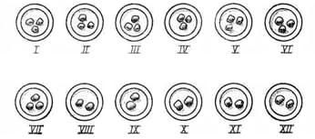
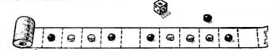
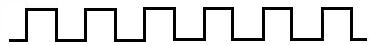
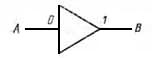
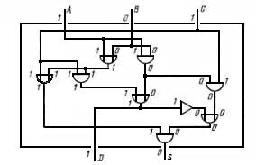
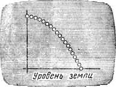
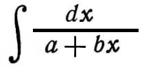
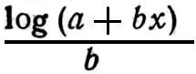

Joseph Weizenbaum. Computer Power And Human Reason. From Judgment to Calculation
The Massachusetts Institute of Technology
(c) 1976 by W.H. Freeman and Company
(c) Перевод на русский язык, предисловие и примечания, издательство "Радио и связь", 1982
OCR: Антон Москаль, 2002
Пер. с англ./ Под ред. А. Л. Горелика. - М: Радио и связь, 1982
Предисловие автора
Введение
Глава 1. Об орудиях труда
Глава 2. Откуда возникает мощь вычислительной машины
Глава 3. Как работают вычислительные машины
Глава 4. Наука и одержимый программист
Глава 5. Теории и модели
Глава 6. Машинные модели в психологии
Глава 7. Вычислительная машина и естественный язык
Глава 8. Искусственный интеллект
Глава 9. Непостижимые программы
Глава 10. Против экспансионизма инструментального мышления
Примечания
Посвящается РУТ
Наша книга лишь номинально посвящена вычислительным машинам. Они используются здесь исключительно как средство развития определенных идей, гораздо более важных, чем собственно машины. Читатель, пролиставший книгу и заметивший здесь и там уравнение или "машинный жаргон", не должен пугаться и бросать чтение. Он может считать, что ничего не знает о вычислительных машинах. Действительно, все эти машины - слишком сложная вещь для "обыкновенного человека". Но основная идея нашей книги как раз и заключается в том, что мы все вместе чересчур преуспели в превращении нашего мира в "компьютер" и что эта перестройка мира по образу и подобию вычислительной машины началась еще задолго до появления электронных вычислительных машин. Теперь, когда у нас есть вычислительные машины, стало легче замечать эту поразительную трансформацию, которой мы подвергли наш мир. Теперь мы можем использовать сами вычислительные машины (в этом заключается "идея" вычислительной машины) в качестве метафоры, чтобы помочь осознать то, что мы сделали и продолжаем делать.
Мы привыкли слышать, что вычислительная машина - новый могущественный инструмент. Однако немногие имеют хоть какое-нибудь представление, откуда появляется могущество вычислительной машины. Именно это и объясняется в гл. 1-3. Каждый, кто прочитает это предисловие, сможет при небольших затратах времени и интеллектуальной энергии одолеть эти главы. Главы 2 и 3 наиболее трудны, но читатель, не сумевший освоить их, не должен из-за этого отказываться от чтения остальных. Единственное, что утверждается в этих главах, - вычислительные машины являются в некотором смысле "универсальными" машинами и могут (в определенном смысле, в каком - объясняется в этих главах) делать "все". У читателя, готового принять это утверждение на веру, может возникнуть желание "перепрыгнуть" с гл. 1 (которую он должен прочесть) на гл. 4. Может быть, после того, как он закончит всю книгу, он попытается снова вернуться к гл. 2 и 3.
Остальная часть книги посвящена обсуждению наших основных тезисов, суть которых заключается в том, что, во-первых, между человеком и машиной существует различие и, во-вторых, есть задачи, выполнение которых не следует поручать вычислительным машинам, независимо от того, можно ли добиться того, чтобы вычислительные машины их решали.
Написание этой книги явилось для меня волнующим предприятием. Люди, которые совершенно не были обязаны делать для меня что-либо, своим благородством и интеллектуальной и эмоциональной поддержкой вдохновляли меня так, что я просто не могу об этом не сказать. Я в огромном долгу перед ними. Я имею в виду, в первую очередь, Луиса Мамфорда-этого патриарха литературы и культуры, Ноама Хомского и Стивена Маркуса - литературного критика. Каждый из них прочел значительные части рукописи (Луис Мамфорд прочел всю) и сделал глубокие и полезные замечания, даже больше - они побуждали меня продолжать работу, когда я терял надежду. Причины для отчаяния возникали часто. Я полностью отдаю себе отчет, например, в том, что в этой книге не сказано ничего, что не было бы сказано другими лучше и наверняка более убедительно. Но, как неустанно твердили мне друзья, важно повторять это вновь и вновь, И, как часто замечал Луис Мамфорд, иногда имеет смысл членам научного сообщества высказать то, о чем века кричат гуманисты.
Я хочу официально выразить благодарность моему университету, Массачусетскому технологическому институту (Massachusetts Institute of Technology) за предоставление мне двухгодичного отпуска для обдумывания и написания моей работы. Первый год из этих двух счастливых лет я провел в Центре перспективных исследований в области наук о поведении в Станфорде (штат Калифорния) (Center for Advanced Study in the Behavioral Sciences at Stanford, California) [прим.авт.: Мое пребывание там частично было оплачено субсидией Национального научного фонда © SS H71-01834 А01, предоставленной Центру по программе Национального научного фонда RANN (Research Applied to National Needs - исследования, проводимые в национальных интересах). Мнения, открытия, выводы и рекомендации, содержащиеся в этой книге, естественно, выражают исключительно мою точку зрения и не обязательно отражают взгляды организаций, предоставивших финансовую поддержку]. Именно там я познакомился со Стивеном Маркусом и другими сотрудниками Центра, приложившими громадные усилия для того, чтобы образовать простого инженера. В первую очередь я имею в виду Джона Платта, Пола Армера, Херберта Уайнера, Фредрика Редлика, Александра Митскерлика и Изрейела Скеффлера. Я благодарен им за их усилия. Ни одну из моих неудач не следует, однако, относить на их счет.
Второй год я провел в качестве исследователя (Vinton Hayes Research Fellow) в Гарвардском университете (Harvard University). Мне посчастливилось возобновить старые университетские связи, в частности, с профессором Томасом Читамом, выдающимся ученым-информатиком. Он взял на себя труд прочитать почти всю рукопись по мере того, как она появлялась из-под моего пера. Профессор Хилари Патнэм с философского отделения Гарвардского университета (Harvard's Philosophy Department) посвятил мне много драгоценного времени. Без его помощи, поддержки и руководства я попадал бы в ловушки значительно чаще, чем это происходило. Большой удачей оказалось также, что Даниель Деннетт, выдающийся молодой философ из Тафтского университета (Tufts University), находился в Гарварде одновременно со мной. Его терпение к моей философской наивности было безграничным. Никогда мне не удастся должным образом отплатить всем этим прекрасным людям.
Эти немногие слова благодарности констатируют тот факт, что эта книга (и, как я подозреваю, большинство других) имеет множество соавторов, чьих имен нет на обложке. В данном случае это признание заслуг было бы далеко не полным, если не отметить решающую роль Эйдана Келли - редактора книги. Я не могу описать в нескольких словах все, что он сделал. Быть может, читатели поймут, что я имею в виду, если я просто скажу, что Эйдан Келли - поэт.
И, наконец, каждый, кто хоть раз написал книгу, понимает, каким ужасным бременем ложится это занятие на семью автора. Моя жена Рут относилась к моей деятельности с величайшей доброжелательностью и терпением. Она помогала мне справляться с неизбежными приступами угрызений совести, которые преодолевает автор, когда пишет (потому что он не вместе с семьей даже тогда, когда они находятся вместе) и когда не пишет (потому что он не занимается тем, что решил делать). Мои дети считали страницы, накапливающиеся на моем столе. И они горевали, если, как часто случалось, количество страниц в мусорной корзине было больше, чем в стопке на столе. Более того, они бодро терпели бесконечные сообщения о проделанной работе, которыми перемежались наши застольные беседы. Эта книга принадлежит Рут и нашим детям в той же степени, что и мне.
Осень 1975 Джозеф Вейценбаум
Кембридж, штат Массачусетс
В 1935 г. Майкл Поляни, тогда заведующий кафедрой физической химии в университете Виктория (Victoria University) в Манчестере (Великобритания), был потрясен, столкнувшись с философскими вопросами, под воздействием которых он находился всю дальнейшую жизнь. Причиной шока были слова одного общественного деятеля о том, что концепция "науки ради науки" исчезнет, поскольку интересы ученых самопроизвольно переключатся на задача текущего времени. Поляни тогда почувствовал, что "научное мировоззрение, по-видимому, породило механистическую концепцию человека и истории, в которой нет места для собственно науки". Более того, "эта концепция одновременно отрицает неотъемлемую силу, заключенную в мысли, и, таким образом; исключает любые основания для провозглашения свободы мысли"1.
Я не знаю, сколько времени Поляни предполагал посвятить обоснованию противоположной концепции человека и истории. Сильнейшее потрясение, испытанное им, свидетельствует о его глубоком несогласии с услышанным и, следовательно, о том, что у него уже было другое представление о человеке, хотя он и не смог бы сформулировать свою концепцию в явном виде. Возможно, Поляни решил противопоставить этой концепции позицию, основанную исключительно на собственном опыте ученого. Как оказалось, борьба с такой концепцией с этого момента полностью поглотила внимание Поляни.
Я напомнил эту историю по двум причинам. Во-первых, чтобы продемонстрировать, что идеи, представляющиеся на первый взгляд очевидными и простыми и потому обязанными получить всеобщее признание, как только их сформулируют, становятся иногда буйками, отмечающими штормовые зоны в глубоких интеллектуальных морях. То, что наука - творчество, творческий акт в науке эквивалентен творческому акту в искусстве, а творчество - продукт автономной личности - это такая простая и, казалось бы, очевидная идея. И все же Поляни, как и многие другие, потратил почти всю жизнь на исследование грунта, удерживающего якорь этой идеи, и бушующих вокруг этой идеи штормов, порождаемых ее следствиями.
Вторая причина, по которой я напоминаю эту историю, это мое ощущение, что я сам пережил в какой-то степени то же самое. Мое потрясение связано не с какой-либо важной политической фигурой, выдвигавшей собственную философию науки, а с рядом лиц, настаивавших на неправильной интерпретации одной из частей моей работы. Я пишу это без горечи и нe для самозащиты. Ведь интерпретации, о которых идет речь, в любом случае имели тенденцию (переоценивать размер того, что я сделал, и уж совершенно явно - его значимость. Нет, я возвращаюсь сейчас к этой работе только потому, что она обеспечивает, как мне кажется, наиболее экономный способ выделить те проблемы, которые я намерен обсудить.
Работа выполнялась в 1964-1966 г., и сообщения о ней (в литературе по информатике) были опубликованы в январе 1966 г. и августе 1967 г. Говоря кратко, я написал программу для вычислительной машины, с которой можно "беседовать" на английском языке. Собеседник-человек печатает свою часть разговора на пишущей машинке, соединенной с вычислительной машиной, а машина, управляемая моей программой, анализирует сообщение, переданное ей таким образом, составляет ответ на английском языке и обеспечивает печать ответа с помощью печатающего устройства.
Я выбрал для программы лингвистического анализа имя "Элиза", потому что, как и Элизу из знаменитого "Пигмалиона", ее можно было обучать "говорить" все лучше и лучше. Поскольку разговаривать можно лишь "о чем-то", т. е. разговор должен иметь некоторый контекст, программе было придана двухуровневая организация: первый уровень включает лингвистический анализатор, второй - сценарий. Сценарий представляет собой набор правил, примерно таких же, какие можно давать актеру для использования при импровизации, на заданную тему. Таким образом, "Элизе" можно задать сценарий, позволяющий ей поддерживать разговор о варке яиц или ведении счета в банке и т. п. Каждый сценарий позволял "Элизе" играть в процессе разговора определенную роль.
В виде первого эксперимента я задал "Элизе" сценарий, позволяющий ей играть роль (я бы даже сказал - пародировать) психотерапевта-роджерианца, проводящего первичное обследование пациента [Прим. перев.: Психотерапия - психическое воздействие (словом, поступками, обстановкой) на больного с лечебной целью. Роджерианская психотерапия - психотерапевтическая методика, созданная и развитая американским клиническим психологом Карлом Р. Роджерсом в 1940-1970-х гг. Задача психотерапевта согласно этой методике - создание условий, способствующих самостоятельной смене пациентом своих точек зрения (устранение негативной самооценки, увеличение числа положительных оценок), т. е. развитию справедливой самооценки. Психотерапевт должен быть при этом дружелюбным, заботливым, понимающим, но сам не должен ни оценивать, ни интерпретировать. Ситуация партнерства должна дать пациенту возможность самостоятельно выносить оценки: терапевт обеспечивает ему атмосферу понимания и старается стимулировать высказывания пациента, способствующие развитию у него процесса самопознания. Недирективная психотерапия (первая фаза развития психотерапии Роджерса - 1940-1950 гг.) предполагает, что психотерапевт лишь обеспечивает соответствующую атмосферу, поддерживающую процесс самоанализа у пациента]. Имитировать психотерапевта-роджерианца сравнительно легко, так как его метод в основном состоит в вовлечении пациента в беседу повторением ему его же высказываний. Приведенная ниже беседа молодой особы с "Элизой" в роли врача иллюстрирует как роджерианскую методику побуждения пациента продолжать разговор, так и работу машинной программы "Элиза". Первой "говорит" молодая особа. Все ответы вычислительной машины напечатаны целиком прописными буквами2.
| Men are all alike | Все мужчины одинаковы |
| IN WHAT WAY | В ЧЕМ |
| They're always bugging us about something or other | Вечно они донимают нас то тем: то другим |
| CAN YOU THINK OF A SPECIFIC EXAMPLE | МОЖЕТЕ ЛИ ВЫ ПРИВЕСТИ КОНКРЕТНЫЙ ПРИМЕР |
| Well, my boyfriend made me come here | Ну, например, мой друг заставил меня прийти сюда |
| YOUR BOYFRIEND MADE YOU COME HERE | ВАШ ДРУГ ЗАСТАВИЛ ВАС ПРИЙТИ СЮДА |
| Me says I'm depressed much of the time | Он говорит, что я почему-то все время чем-то подавлена |
| I AM SORRY TO HEAR YOU ARE DEPRESSED | МНЕ ПРИСКОРБНО СЛЫШАТЬ, ЧТО ВЫ ЧЕМ-ТО ПОДАВЛЕНЫ |
| It's true. I am unhappy | Это верно, я несчастна |
| DO YOU THINK COMING HERE WILL HELP YOU NOT TO BE UNHAPPY | ВЫ ПОЛАГАЕТЕ ВАШ ПРИХОД СЮДА ПОМОЖЕТ ВАМ НЕ БЫТЬ НЕСЧАСТНОЙ |
| I need some help, that much seems certain | Мне нужна помощь, уж в этом я уверена |
| WHAT WOULD IT MEAN TO YOU IF YOU GOT SOME HELP | КАКОЕ ЗНАЧЕНИЕ ИМЕЛА БЫ ДЛЯ ВАС ЭТА ПОМОЩЬ, ЕСЛИ БЫ ВЫ ЕЕ ПОЛУЧИЛИ |
| Perhaps I could learn to get along with my mother. | Возможно, я научилась бы как-то ладить с матерью |
| TELL ME MORE ABOUT YOUR FAMILY | РАССКАЖИТЕ МНЕ О ВАШЕЙ СЕМЬЕ |
| My mother takes care of me. | Моя мать заботится обо мне |
| WHO ELSE IN YOUR FAMILY TAKES CARE OF YOU | КТО ЕЩЕ ИЗ ВАШЕЙ СЕМЬИ ЗАБОТИТСЯ О ВАС |
| My father. | Отец. |
| YOUR FATHER | ВАШ ОТЕЦ |
| You are like my father in some ways. | Вы чем-то напоминаете мне отца. |
| WHAT RESEMBLANCE YOU SEE | В ЧЕМ ВЫ ВИДИТЕ СХОДСТВО |
| You are not very aggressive but I think you don't want me to notice that. | Вы не очень настойчивы, но, по-моему, вам бы не хотелось, чтобы я это замечала. |
| WHAT MAKE YOU THINK I AM NOT VERY AGGRESSIVE | ПОЧЕМУ ВЫ ДУМАЕТЕ, ЧТО Я НЕ ОЧЕНЬ НАСТОЙЧИВ |
| You don't argue with me. | Вы не спорите со мной. |
| WHY DO YOU THINK I DON'T ARGUE WITH YOU | КАК ВЫ ДУМАЕТЕ, ПОЧЕМУ Я НЕ СПОРЮ С ВАМИ |
| You are afraid of me | Вы меня боитесь |
| DOES IT PLEASE YOU TO BELIEVE I AM AFRAID OF YOU | ПРИЯТНО ЛИ ВАМ ДУМАТЬ, ЧТО Я ВАС БОЮСЬ |
| My father is afraid of everybody | Мой отец боится всех |
| WHAT ELSE COMES TO MIND WHEN YOU THINK OF YOUR FATHER | ЧТО ЕЩЕ ПРИХОДИТ ВАМ В ГОЛОВУ, КОГДА ВЫ ДУМАЕТЕ ОБ ОТЦЕ |
| Bullies | Задиры |
| DOES THAT HAVE ANYTHING TO DO WITH THE FACT THAT YOUR BOYFRIEND MADE YOU COME HERE | ИМЕЕТ ЛИ ЭТО КАКОЕ-НИБУДЬ ОТНОШЕНИЕ К ТОМУ, ЧТО ВАШ ДРУГ ЗАСТАВИЛ ВАС ПРИЙТИ СЮДА |
"Доктор", как стали называть "Элизу", исполняющую роль психиатра, вскоре приобрел известность в Массачусетском технологическом институте, где эта программа появилась на свет, главным образом, благодаря простоте ее демонстрации. Большинство других программ не позволяло так живо продемонстрировать посетителям, не обладающим определенными специальными знаниями, например, в некоторых областях математики, мощь вычислительной машины в обработке информации. С другой стороны, любой человек в состоянии в определенной степени оценить "Доктора", Его сила как демонстрационного средства еще больше увеличивалась благодаря тому, что посетитель мог принять непосредственное участие в его работе. Вскоре аналоги "Доктора", созданные на основе опубликованного мною описания, стала появляться в других организациях США. Программа сделалась известной во всей стране, а в некоторых кругах приобрела статус "американской игры".
Потрясения, которые мне пришлось пережить в процессе роста известности и распространения "Доктора", были связаны в основном с тремя следующими независимыми друг от друга событиями.
1. Ряд практикующих психиатров всерьез поверили, что программа "Доктор" может перерасти в почти полностью автоматизированную форму психотерапии. Колби с соавторами, например, писали:
"Необходимо провести дальнейшую работу прежде, чем программа будет готова для клинического использования. Если плодотворность метода будет доказана, то он станет средством лечения, широко доступным для психиатрических больниц и центров, страдающих от нехватки психотерапевтов. Благодаря возможностям режима разделения времени, которым располагают сейчас и будут располагать в дальнейшем ЭВМ, вычислительная система, разработанная специально для этих целей, сможет обслуживать несколько сот пациентов в час. Психотерапевта-человека, участвующего в разработке и эксплуатации такой системы, машина не заменит, наоборот, эффективность его деятельности существенно увеличится, так Как его усилия не будут больше ограничиваться рамками соотношения "один пациент - один психотерапевт" (1 : 1), как это происходит сейчас"3[Прим.авт.: Д-р Колби не одинок в своем энтузиазме по поводу машинизации в психотерапии. Д-р Карл Саган, астрофизик, высказал свои соображения по поводу "Элизы" в "Естественной истории" ("Natural History") т. LXXXIV, © 1 (январь 1975 г.), с. 10: "Ни одна из подобных машинных программ еще не годится для использования в психиатрии, но то же можно сказать я о некоторых психотерапевтах. Поскольку в настоящее время, судя по всему, все большее число людей в нашем обществе нуждается в консультации психиатра, а использование ЭВМ в режиме разделения времени стало общепринятым, я вполне могу представить себе создание сети психиатрических терминалов ЭВМ, т. е. чего-то вроде батарей больших телефонных кабин, в которых за несколько долларов за сеанс можно поговорить с внимательным, квалифицированным и, в основном, недирективным психотерапевтом"].
Я всегда считал необходимой предпосылкой самой возможности того, что один человек может помочь другому научиться справляться со своими эмоциональными проблемами, разделение советчиком опыта столкновения с этими проблемами и возможность достижения их понимания путем выявления их в процессе сопереживания. Несомненно, существует множество методик, помогающих воображению врача проникать во внутренний мир пациента. Но то, что хоть один практикующий психиатр поддержит сведение этого решающего компонента процесса лечения к сугубо техническому приему, - такого я никак не мог себе представить! Что же. должен думать психиатр, выступающий с подобным предложением, о том, что он делает, обследуя пациента, если он способен считать, будто простейшая механическая пародия на одну из методик опроса пациента обладает хоть какими-либо чертами поведения человека? Возможно, Колби и его соавторы дают нам искомый ключ, когда пишут:
"Психотерапевта-человека можно рассматривать как систему обработки информации и принятия решений, снабженную множеством решающих правил, которые тесно связаны с краткосрочными и долгосрочными целями... При получении этих решений он руководствуется грубыми эмпирическими правилами, подсказывающими ему, что следует и чего не следует говорить в определенных ситуациях. Включение этих процессов в программу в том виде, в каком они используются психотерапевтами-людьми, довольно сложное предприятие, но мы пытаемся продвигаться в этом направлении" 4.
Каким же представляет себе психиатр пациента, если себя как врача он видит не исцеляющим человеком, а системой обработки информации, следующей правилам и т. п.?
Эти вопросы были моей формой осознания того, что Поляни ранее назвал "научным мировоззрением, по-видимому, породившим механистическую концепцию человека".
2. Я был встревожен, увидев, как быстро люди, разговаривающие с "Доктором", вступали в эмоциональный контакт с вычислительной машиной, каким тесным он оказывался и как явно они ее антропоморфизировали. Однажды мой секретарь, бывшая в течение долгих месяцев свидетельницей работы над программой и, следовательно, твердо знавшая, что "Доктор" - это просто машинная программа, начала с ним разговаривать. Обменявшись с "Доктором" всего несколькими фразами, она попросила меня выйти из комнаты. В другой раз, когда я заметил, что можно было бы организовать систему таким образом, чтобы я смог получать доступ ко всем разговорам, которые велись с "Доктором" (например, накануне вечером), меня немедленно обвинили в том, что это предложение равнозначно попытке шпионить за самыми сокровенными мыслями людей. Это явно свидетельствовало о том, что люди разговаривали с ЭВМ как с личностью, к которой естественно и целесообразно обращаться с интимными переживаниями. Я знал, конечно, что у людей возникают всевозможные формы эмоциональных связей с машинами, например с музыкальными инструментами, мотоциклами и автомобилями. Мне было известно из долголетней практики, что сильные эмоциональные связи, которые устанавливаются у многих программистов с их вычислительными машинами, часто возникают после даже непродолжительного взаимодействия с ЭВМ. Но я не представлял себе, что исключительно непродолжительное взаимодействие с относительно простой машинной программой сможет вызвать столь сильные иллюзии у вполне нормальных людей. Это озарение побудило меня по-новому осознать значение проблем взаимоотношения человека с вычислительной машиной и, следовательно, принять решение проанализировать их.
3. Другой неожиданной для меня реакцией на программу "Элиза" было распространение убеждения, что она демонстрирует общее решение задачи понимания вычислительной машиной естественного языка. В своей работе я старался показать, что общее решение этой задачи невозможно, т. е. понимание языка происходит исключительно в рамках определенного контекста и даже эти рамки бывают общими для различных людей лишь в ограниченной степени; поэтому даже люди никоим образом не являются олицетворением подобного общего решения. Эти выводы, однако, часто игнорировались. В любом случае "Элиза" была очень скромным и простым достижением. Ее заслуга, если вообще можно говорить о заслуге, лишь наглядное подтверждение того, что было давным-давно открыто другими, а именно - важности контекста для понимания языка. Выполненная позже гораздо более элегантная и, несомненно, более важная работа Винограда5 в области понимания вычислительной машиной английского языка в настоящее время неверно интерпретируется так же, как это было с "Элизой". Такая реакция на "Элизу" ярче, чем что-либо виденное мною до сих пор, показала, что даже высоко образованная публика способна и стремится приписывать не понимаемой ею технике чрезвычайно преувеличенные возможности. На самом деле я считал, что отношение широкой публики к новым техническим достижениям, несомненно, намного больше зависит от того, какими свойствами эта техника наделяется, а не от того, какими свойствами она действительно обладает или что она может и чего не может делать. Если, как это, по-видимому, и есть, представления публики предельно неправильны, то и ее решения неизбежно должны быть неверно ориентированы и зачастую неправильны. Из этих замечаний вытекают трудные вопросы: какова, например, ответственность ученого при обнародовании своей работы? И перед кем (или чем) ответствен ученый?
Как только у меня появились такие ощущения, я решил, как, возможно, в свое время и Поляни, что с вопросами и опасениями, так настойчиво возникавшими передо мной, можно быстро разделаться, скажем, в короткой серьезной статье. Я написал статью, касающуюся многих упоминавшихся здесь вопросов6. Однако постепенно я начал понимать, что некоторыми из этих фундаментальных вопросов я заболел гораздо серьезнее, чем показалось сначала. Возможно, мне никогда не удастся от них избавиться.
Существует столько же способов сформулировать эти фундаментальные вопросы, сколько и отправных точек для их разрешения. По сути дела они касаются ни больше ни меньше, как места человека во Вселенной. Но профессиональную подготовку я получил лишь в области информатики, т. е. (говорю совершенно серьезно) я образован на редкость плохо; не обладаю ни умением, ни смелостью, ни даже нахальством для того, чтобы писать на том уровне, который на самом деле требуется. Поэтому я пытаюсь разрешить лишь вопросы, связанные с теми заботящими меня проблемами, которые я упоминал, и надеюсь, что их более глубокий смысл выявится непроизвольно.
Я намерен заняться следующими вопросами:
1. Что есть в вычислительной машине такого, что придает правдоподобность представлениям о человеке как машине? Несомненно, существуют и другие машины, различными способами имитирующие человека, например паровой экскаватор. Но до изобретения цифровой вычислительной машины не было машин, способных выполнять даже самые скромные интеллектуальные функции, т. е. таких, о которых хоть в каком-то смысле можно было бы говорить как о разумных. Теперь "искусственный интеллект" (ИИ) - одна из дисциплин информатики. Это новое направление следует обсудить. В конце концов, необходимо провести линию, разделяющую интеллект человека и машины. Если такой линии нет, то адвокаты машинной психотерапии могут оказаться просто вестниками эпохи, в которой человек в конце концов будет признан ничем иным, как часовым механизмом. В этом случае последствия подобной объективной реальности должны быть незамедлительно распознаны и осмыслены.
2. Тот факт, что отдельные лица связывают себя с машинами сильными эмоциональными узами, не должен удивлять сам по себе. Инструменты, которыми пользуется человек, становятся в конце концов "продолжениями" его тела. Важно то, что человек для умелого действия своими инструментами должен интериозировать [Прим. перев.: Интериоризация - психологическое понятие, означающее формирование умственных действий и внутреннего плана сознания через усвоение индивидом внешних действий с предметами и социальных форм общения. Интериоризация связана и с процессом усвоения знаний и непосредственно с накоплением опыта: благодаря интериоризации по мере развития умения и умелости в определенной области деятельности повышается уровень регуляции движений и действий] их аспекты в виде кинестетических и перцептивных навыков. По крайней мере, в этом смысле инструменты становятся буквально частью человека, видоизменяют его и таким образом изменяют основу его эмоционального отношения к себе. Можно ожидать, что эмоциональная привязанность человека в большей степени сконцентрируется на инструментах, непосредственно связанных с его собственными интеллектуальными, познавательными и аффективными функциями, чем на машинах, просто увеличивающих силу его мускулов. Вся среда обитания "западного" человека насыщена сейчас сложными техническими "продолжениями" его функциональных способностей. Человек - в большой степени приспосабливающееся животное и способен принять подобные технические основы как подлинно естественные (как данные природой) для его отношения к себе и для его индивидуальности. Возможно, это помогает объяснить, почему он не сомневается в уместности вкладывания своих наиболее интимных чувств в вычислительную машину. В таком случае подобное объяснение также предполагает, что вычислительная машина представляет собой просто крайнюю степень экстраполяции гораздо более общего явления узурпации техникой способности человека действовать в качестве независимой силы, наделяя смыслом свой мир. Поэтому важно выяснить общее значение того, что человек передает свой статус независимой силы миру, рассматриваемому как машина.
3. Вероятно, парадоксально, что именно тогда, когда человек потерял в самом глубоком смысле веру - не говоря уже о доверии - в свою независимую роль, он начал полагаться на автономные машины, т. е. на машины, на протяжении достаточно больших периодов времени действующие исключительно на основе собственных внутренних реалий. Если его доверие к подобным машинам должно основываться на чем-то ином, нежели абсолютное отчаяние или слепая вера, он должен объяснить себе, что эти машины делают, и даже как они делают то, что они делают. Для этого ему необходимо создать какую-то концепцию их внутренней "сущности". И все же большинство людей не понимают вычислительную машину даже в малейшей степени. Итак, если только они не преисполнены величайшего скептицизма (прием, который мы пускаем в ход, наблюдая фокусника на сцене), они могут объяснить интеллектуальные подвиги вычислительной машины, только прибегая к простой аналогии, находящейся у них под руками, а именно: их внутренней модели, представляющей собственную способность мыслить. Следовательно, не удивительно, что они хватили через край; поистине невозможно представить себе человека, способного, например, имитировать "Элизу", но для которого языковые способности "Элизы" были бы пределом его возможностей. С другой стороны, вычисляющая машина является крайним случаем гораздо более общего явления. Даже того значительного объема коннотации [Прим. перев.: Под коннотацией в лингвистике понимается дополнительное содержание слова или выражения, его сопутствующие семантические или стилистические оттенки, которые накладываются на его основное значение, служат для выражения разного рода экспрессивно-эмоциональных оценочных обертонов], который определяется общепринятым употреблением слова "машина", недостаточно для указания его подлинной универсальности. Действительно, когда сегодня мы говорим, например, о бюрократии, университете или почти о любом социальном или политическом образовании, образ, который мы порождаем, слишком часто оказывается все тем же автономным машинообразным процессом.
Таковы мысли и вопросы, от которых я не мог избавиться с тех пор, как мне стало ясно более глубокое значение описанных выше реакций на "Элизу". И все же я сомневаюсь, что они смогли бы оказать такое глубокое воздействие на меня, как это произошло на самом деле, не будь я тогда (и все еще) теснейшим образом связан с квинтэссенцией технологического общества, являясь преподавателем в храме техники - Массачусетском технологическом институте, организации, гордо заявляющей о своем "служении науке и технике". Там я живу и работаю с коллегами, многие из которых считают, что современная наука может поставлять достоверные знания о мире. Я обсуждал с ними предложения о проведении исследований, которые должны были быть представлены в правительственные органы, в частности в министерство обороны. Иногда, когда я задумывался над тем, что мы собираемся предложить и какова природа аргументов, которые приводим в поддержку своих предложений, я испытывал нечто большее, чем просто легкий испуг. Кроме того, я постоянно сталкивался со студентами, некоторые из которых уже отвергли все способы познания мира, кроме научного, и искали лишь более глубокого и более догматического наставления, в этой вере (хотя в их словаре это слово больше не существует). Другие студенты подозревают, что даже все собрания машин и приборов Массачусетского технологического института не могут существенно помочь в наполнении смыслом их жизни. Они чувствуют наличие дилеммы в образовании, ориентированном на служении науке и технике, образовании, подразумевающем претензии на получение привилегированного доступа к истине, но не способном объяснить им, как узнать, что именно нужно считать истиной. Даже признавая безусловную важность обучения своей специальности, они отказываются работать над проектами, которые, по их мнению, не связаны с решением интересных проблем истины или теоретических задач.
Подобные столкновения с повседневной социальной действительностью постепенно убедили меня в том, что мой опыт с "Элизой" является симптомом более глубоких проблем. Я был уверен, что придет время, когда я не смогу больше принимать участие в обсуждении исследовательских проектов или честно удовлетворить потребности моих студентов в лечении (да, следует употреблять именно этот термин), если не попытаюсь в первую очередь осмыслить картину, которую мой опыт работы с ЭВМ столь явственно раскрыл предо мной. Несомненно, внедрение вычислительных машин в наше уже высоко технически развитое общество просто подкрепило и усилило, как я попытаюсь показать, те предшествующие воздействия, которые привели человека к более, чем когда бы то ни было, рационалистическому взгляду на общество, и более, чем когда бы то ни было, механистическому образу самого человека. Поэтому существенно то, что обсуждение влияния вычислительной машины на человека и общество организовано здесь таким образом, чтобы его можно было рассматривать как частный случай проявления значительно более общего феномена, а именно воздействия, которому подвергается роль человека, имеющего дело с техникой и методами, которые он, возможно, не в состоянии понимать и контролировать. Разговоры на эту тему продолжаются довольно долгое время, а в последние годы они ведутся все активнее.
Ряд людей, совершенно различных по образу мыслей, интересам и профессии, несмотря на сильные расхождения и даже несогласие по многим жизненно важным вопросами, в течение многих лет высказывали серьезную озабоченность по поводу положения, создавшегося в результате неограниченного развития науки и техники; среди них Мамфорд, Арент, Эллал, Косак, Комфорт и Боулдинг. Вычислительная машина стала упоминаться в подобных дискуссиях лишь недавно. Теперь есть признаки того, что дебаты по поводу вычислительной машины начинают бурно разворачиваться. Одна сторона представлена теми, кто, говоря кратко, считают, что вычислительные машины могут, должны и будут делать все; другая сторона - теми, кто, как и я сам, признают существование пределов тому, что следует возлагать на вычислительные машины.
На первый взгляд, может показаться, что это просто "домашние" споры, никого, кроме небольшой группы специалистов по вычислительной технике, особенно не задевающие. Но по сути дела, независимо от того, как этот вопрос мы назовем, он заключается в том, можно ли любые аспекты человеческой мысли логически формализовать или, переходя на современный язык, является ли человеческая мысль полностью вычислимой. Этот вопрос в той или иной форме занимал мыслителей всех времен. Человек всегда стремился найти принципы, которые могут организовать его существование и придать ему смысл и значение. Однако до того, как современная наука породила технику, овеществившую и конкретизировавшую ее абстрактные системы, системы мышления, определявшие место человека во Вселенной, имели сугубо юридический характер. Они были предназначены для определения обязанностей человека по отношению к своим собратьям и природе. Иудаистская традиция, например, основывается на идее договорных взаимоотношений между богом и человеком. Подобные взаимоотношения не должны препятствовать и фактически не препятствуют независимости как бога, так и человека, поскольку договор - это соглашение, которое добровольно заключают стороны, свободные от необходимости в него вступать. Независимость и ответственность человека - центральный элемент всех религиозных систем. С другой стороны, духовные космологии, порожденные современной наукой, заражены микробом логической необходимости. Они, за исключением тех случаев, когда ими оперируют мудрейшие ученые и философы, не удовлетворяются больше объяснениями явлений, но претендуют на определение того, какова действительность и какой она должна быть. Короче, они сводят истину к доказуемости. Одним из последствий этой тенденции в современной науке является проблема "Какие аспекты жизни формализуемы". Она была превращена из моральной проблемы "Как и в какой форме можно установить обязанности и ответственность человека" в вопрос "К какому техническому роду относится человек как вид?". Даже философы, все природное чутье которых восстает против идеи полной вложимости человека в машинный образ, уступают духу времени. Хьюберт Дрейфус, например, обратил против машинной модели человека тяжелые орудия феноменологии7 [Прим. перев.: Феноменология - философское направление, сформулированное немецким философом Эдмундом Гуссерлем (1859-1938). Основные задачи: 1) освободить философское мышление от натуралистически-объективистских установок; 2) конституировать специальную область спекулятивного знания - рефлексию сознания о своих актах и о данном в них содержании; 3) выявить с помощью определенных методологических средств (редукции, рефлексии) изначальные основы культуры. Теоретическая программа первых работ Гуссерля - превращение философии в "строгую науку", создание теоретических основ научного знания. В целом взгляды Гуссерля - субъективно-идеалистические, поскольку в его подходе предмет познания существует лишь постольку, поскольку субъект осуществляет "интенциональные акты", направляет сознание на тот или иной предмет, причем последний таким способом не только обнаруживается, но и создается. "Поздний" Гуссерль отказался от попыток создания философии в качестве "строгой науки" и обратился к исследованию "жизненного мира", представляющего собой предмет мыслительной и эмоциональной деятельности отдельных субъектов. Работы Гуссерля стали истоком ряда новых направлений философских поисков в современной западной философии, в частности экзистенциализма]. Но он ограничивает свою полемику рамками технического вопроса о том, что могут и чего не могут вычислительные машины, Я бы настаивал, если бы вычислительные машины могли имитировать человека во всех отношениях (чего они в действительности не могут), на том, что даже в этом случае было бы целесообразно и крайне необходимо изучить вычислительную машину в свете извечного стремления человека найти свое место в мире. Выводы практического характера, жизненно важные для всех, зависят от того, как и в каких терминах ведется дискуссия.
Одно из положений, которое я намереваюсь отстаивать, обманчиво очевидно: оно состоит лишь в том, что существуют важные различия между людьми и машинами, когда они выступают в роли "мыслителей". Я буду настаивать на том, что какими бы разумными мы ни могли сделать вычислительные машины, существуют такие акты мышления, которые должны оставаться уделом только человека. Таким образом, одна из социально важных проблем, которые я намерен поднять, касается должной роли вычислительных машин в общественной системе. Но, как мы увидим, эта проблема выходит за пределы собственно вычислительных машин в том, что в конечном счете речь идет о логичности как таковой - независимо от того, закодирована она в виде машинных программ или нет.
Читателю-неспециалисту можно простить его более, чем слегка скептическое отношение к тому, что кто-либо будет вынужден доказывать полную вычислимость человеческой мысли. Но уже сам этот скептицизм может свидетельствовать о том, как замечательно искусно и обманчиво современная наука влияет на образ реальности, создаваемый человеком.
Конечно, многим из того, что мы считаем сегодня хорошим и полезным, а также большей частью того, что мы назвали бы знанием и ученостью, мы обязаны науке. Ее можно, однако, рассматривать также и как наркотик, к которому уже выработалась привычка. Наше бесконечное напичкивание наукой не только привело нас к зависимости от нее, но и, как это бывает со многими другими лекарствами, принимаемыми во все возрастающих дозах, наука постепенно превратилась в медленно действующий яд. Возможно, что, начиная с неверного толкования Фрэнсисом Бэконом истинных перспектив науки, человек впал в соблазн стремления к веку рационализма и начал подготавливать его, но его представление о рациональности было катастрофически искажено и оказалось отождествлено с логичностью.
[Прим. перев.: Фрэнсис Бэкон (1561-1626)-английский философ-материалист, родоначальник английского материализма, основатель экспериментирующей науки нового времени. Провозгласив целью знания способность науки увеличивать власть человека над природой, Бэкон считал, что достичь эту цель может лишь наука, постигающая истинные причины явлений. Наука эта должна быть рациональной переработкой фактов опыта. Посылками ее выводов будут положения, основанные на понятиях, добытых посредством индукции (методического обобщения). Предпосылку индукции образует аналитическое понимание эксперимента. Односторонне развитое, оно привело к тому, что Бэкон перенес метафизический метод мышления, сложившийся в науке XV-XVI веков, из естествознания в философию. Метафизичность взглядов Бэкона проявлялась, в частности, в чрезвычайно значительной роли в его учении аналитической тенденции, в стремлении разлагать все сложные вещи и явления на простые и сводить многообразие материи и движения к элементарным формам. Именно эту метафизичность, т.е. представление о том, что природа может быть сполна разложена на конечное число форм и видов движения, в результате комбинирования которых образуются все вещи, очевидно, и имеет в виду Дж. Вейценбаум, говоря о неверном толковании Бэконом истинных перспектив науки. Надо иметь в виду, тем не менее, что учение Бэкона оказало огромное влияние на последующее развитие науки и философии. Во-первых, Бэкон восстановил материалистическую традицию, во-вторых, выработал собственное материалистическое понимание природы. Логический метод Бэкона стал отправным пунктом развития индуктивной логики. Его материалистическое учение о природе и познании заложило основу материализма Гоббса, сенсуализма Локка и его последователей. Призыв Бэкона к экспериментальному изучению природы явился важным стимулом для естествознания XVII века. Более подробные сведения о Фрэнсисе Бэконе и его взглядах можно найти во вступительной статье А. Л. Субботина "Фрэнсис Бэкон и принципы его философии" к сочинениям Фрэнсиса Бэкона в 2-х томах; второе исправленное и дополненное издание) (М.: Мысль, 1977, т. 1, с. 5-53) ].
Таким образом, мы подошли очень близко к тому, чтобы почти каждую подлинно человеческую дилемму рассматривать как сущий парадокс, как практически очевидное противоречие, разрешить которое можно с помощью рационального применения трезвой логики, порожденной на более высоком уровне. Даже кровопролитные войны стали восприниматься просто как задача, подлежащая решению ордами специалистов в области решения задач. Как заметила Ханна Арент о недавних разработчиках и исполнителях политики в Пентагоне:
"Они были не просто разумны, но гордились своей "рациональностью"... Они страстно стремились найти формулировки, предпочтительно выраженные на псевдоматематическом языке, которые объединяли бы абсолютно несопоставимые явления, в которых являлась им действительность; таким образом, они страстно стремились открыть законы, с помощью которых можно объяснять и прогнозировать политические и исторические события, словно они столь же логически неизбежны и, следовательно, надежны, сколь должны быть, как некогда считали физики, естественные явления... [Они] не рассуждали, они вычисляли... совершенно иррациональная вера в вычислимость действительности [стала] лейтмотивом процесса принятия решений"8.
Таким же образом почти все политические столкновения, например расовые или конфликты между правителями и теми, кем они правят, стали рассматриваться просто как нарушения коммуникации. Подобные прорехи общественной системы могут последовательно устраняться с помощью квалифицированного применения новейших методов обработки информации - по крайней мере, так считается. И, следовательно, уравнение "рациональность есть логичность" которое именно из-за того, что успехи науки одурманили нас, мы фактически принимаем как аксиому, привело нас к отрицанию самого существования человеческого конфликта, следовательно, самой возможности столкновения подлинно несоизмеримых человеческих интересов и несопоставимых человеческих ценностей, следовательно, существования самих человеческих ценностей.
Быть может, человеческие ценности иллюзорны, как это утверждает, например, Б. Ф. Скиннер. Если это так, то, по-видимому, именно наука должна показать это, что Скиннер (как ученый) и пытается действительно сделать. В таком случае, однако, сама наука должна быть иллюзорной системой, потому что единственное знание, которое наука может нам дать, это знание о поведении формальных систем, т. е. систем представляющих собой изобретенные самим человеком игры; установление истины в таких системах - это ни более и ни менее, как утверждение того, что (аналогично шахматам) определенная позиция на доске возникает в результате реализации некоторой последовательности ходов, сделанных по правилам. Когда наука выдвигает в качестве цели получение утверждений об эмпирическом познании (опыте) человека, она основывается на отождествлении непроизводных (не определенных) объектов одного из своих формализмов с частью одной из своих игр и какой-то совокупностью человеческих наблюдений. Невозможно доказать истинность ни одного из таких соответствий. В лучшем случае можно показать их ложность в том смысле, что формальные манипуляции символами системы могут привести к таким конфигурациям символов, которые при рассмотрении в рамках изучаемого множества соответствий приводят к интерпретациям, противоречащим результатам эмпирических наблюдений. Отсюда следует, что вся эмпирическая наука представляет собой изощренную структуру, покоящуюся, как обычно считают, не на сваях, вбитых в скальные основания, а на зыбучих песках подверженных ошибкам суждений, допущений и интуиции человека.
Неверно, снова вопреки общему убеждению, также и то, что представление единственного контрпримера, признание истинности которого явно опровергает научную теорию, всегда ведет к немедленному отказу от этой теории. Вероятно, все научные теории, признаваемые сейчас самими учеными (за исключением лишь тех сугубо формальных теорий, которые не претендуют на какие-либо связи с эмпирическим миром), сталкиваются сегодня с противоречащими им данными, имеющими не пренебрежимо малое значение, такого характера, что, если, как и выше, считать их абсолютно достоверными, они превратят эти теории в логически несостоятельные. Часто для того, чтобы объяснить (вернее, отмахнуться) появление подобных данных, их приписывают разного рода ошибкам, скажем, ошибкам наблюдения, либо они объявляются несущественными, либо высказывается предположение (т. е. в ход идет вера) о существовании еще только предстоящего быть открытым способа, который в свое время позволит принять эти данные как достоверные и одновременно включить их в те научные теории, которые, как считалось первоначально, они опровергают. Таким образом, ученые продолжают полагаться на ущербные теории и выводить из них "научные факты"[Прим.авт.: Гак, Чарлс Эверетт пишет по поводу ныне отвергнутой флогистонной теории горения (в Британской энциклопедии, 11-е изд., г., т. VI, с. 34): "На возражения противников флогистонной теории такие, например, что золы весят больше, чем исходные металлы, хотя согласно теории они должны весить меньше, отвечали введением флогистона в качестве принципа "легкости" или просто полностью игнорировали этот факт как побочное обстоятельство, считая единственно важным смену качества". Эверетт указывает, что X. Кавендиш и Дж. Пристли, два крупных ученых того времени, являлись приверженцами флогистонной теории].
"Человек с улицы" искренне верит, что подобные научные факты так же точно установлены и твердо доказаны, как и его собственное существование. Верит же он в иллюзию. Но и сам ученый не свободен от этой же иллюзии. В своей практике он должен, в конце концов, отбросить неверие, если он вообще хочет что-нибудь сделать или осмыслить. Он уподобляется театралу, который для того, чтобы понимать и сопереживать происходящее на сцене, должен на время убедить себя в том, что он наблюдает реальные события. Ученый должен верить в свою рабочую гипотезу, заодно с обширной структурой теорий и допущений, положенной в ее основу даже только ради ее "отстаивания". Часто "отстаивание" занимает всю его жизнь. Постепенно он становится тем, кем он сначала просто притворялся: правоверным. Я сознательно выбрал слово "отстаивание" [Прим. перев.: В оригинале автор употребляет термин "argument"], так как вся научная аргументация, даже математические доказательства, являются в своей основе актами убеждения.
Научные утверждения никогда не могут быть несомненными; они могут быть лишь более или менее правдоподобными. Термин же "правдоподобие" относится к психологии личности, т. е. он имеет значение только применительно к некоторому определенному наблюдателю. Сказать, что какое-то высказывание правдоподобно, значит, в конце концов, сказать, что его разделяет некто, свободный не делать этого, т. е. наблюдатель, который, применив рассуждения и (возможно) интуицию, решил рассматривать это высказывание заслуживающим того, чтобы считать его верным. Как же может тогда наука, твердо и бесповоротно опирающаяся на огромную совокупность человеческих оценок, продемонстрировать, что человеческие оценки иллюзорны? Это немыслимо без отказа науки от статуса единственного законного пути к пониманию человека и его мира.
Ни один чисто логический аргумент, каким бы убедительным или красноречивым он ни был, не может, однако, изменить существующее положение: с точки зрения здравого смысла наука превратилась в единственную законную форму познания. Когда я говорю, что наука постепенно превратилась в яд замедленного действия, я имею в виду, что приписывание здравым смыслом несомненности научному знанию, приписывание, ставшее сейчас догмой здравомыслия вследствие его почти повсеместного практикования, фактически лишило законной силы все другие пути познания. Люди рассматривали искусство и особенно литературу как источники духовной пищи и познания, теперь же в искусстве в основном видят развлечение. Древнегреческий театр и театр Древнего Востока, шекспировский театр, театр, созданный ибсенами и Чеховыми, ближе к нашему времени - это были школы. Их учебные курсы служили средством понимания тех обществ, которые они представляли. Сегодня, хотя и выжили редкие Артур Миллер и Эдвард Олби и им позволено учить на сценах Нью-Йорка или Лондона, люди гоняются лишь за тем, что представлено им как научно подтвержденное знание. Они стремятся утолить свой голод в таких научных "кафетериях", как "Психология сегодня" ("Psychology today"), или с помощью популяризированных версий работ Мастерса и Джонсона, или сциентизмом в изложении Л. Рона Хаббарда. Вера в уравнение "рациональность есть логичность" разъедает даже пророческую силу самого языка. Мы умеем считать, но быстро забываем, как сказать, что следует считать и зачем.
Именно в этом созданном им самим интеллектуальном и социальном мире человек высказывает и "проигрывает" бесчисленные волнующие гипотезы о том, каким мог бы быть мир в прошлом и чем он мог бы стать. Этот мир - хранилище субъективизма человека. Следовательно, он служит стимулятором сознания человека и в конечном счете конструктором самого материального мира. Именно этот самодельный мир человек воспринимает как явно внешнюю силу. Но он несет его в самом себе; то, с чем он имеет дело, - это его собственная модель Вселенной, и поскольку человек является ее частью, его модель самого себя.
Человек может создать очень мало, не вообразив сначала, что он может создать нечто. Мы может представить себе, как должен был бы воображать использование топора человек каменного века, напряженно трудясь над его изготовлением. А не воспроизводил ли каждый из нас этот наследственный опыт, когда ребенком мастерил примитивные игрушки из любого подручного материала? Но орудия труда и машины не просто символизируют воображение человека и его творческие возможности и, конечно, они важны не только как инструменты воздействия на преобразуемую почву: они сами по себе суть содержательные символы. Они символизируют деятельность, возможность которой они обеспечивают, т. е. собственное использование. Весло-орудие гребли и оно представляет мастерство гребли во всей его сложности. Тот, кто никогда не греб, не может увидеть в весле весло в истинном смысле этого слова. Отношение к скрипке человека, никогда на ней не игравшего, отличается, и очень сильно, от отношения к ней скрипача. Орудие труда - это также и модель для собственного воспроизводства, и сценарий многократного повторения актов демонстрации того мастерства, которое оно символизирует.
Именно в этом смысле оно является инструментом педагогики, средством обучения людей, живущих в другие времена или в иных местах, способом мышления и деятельности, накопленным в процессе культурного развития. Таким образом, орудие труда как символ во всех этих отношениях выходит за пределы своей роли практического средства достижения определенных целей: оно является составной частью символического воссоздания человеком своего мира. Следовательно, орудия труда неизбежно должны входить в то образное исчисление, которое непрерывно обеспечивает построение его мира. В этом смысле орудия труда - нечто большее, чем просто приспособление: они представляют собой силу, осуществляющую изменения. Это даже больше, чем фрагменты плана мира, определенного и завещанного человеку его предками (хотя и это тоже). Легко понять, что орудия ручного труда и особенно личное оружие прямо воздействуют на воображение людей, использующих их. Когда у охотника появились, например, копья, они обнаружили, что их взаимоотношения с окружающим миром полностью переменились. Крупные животные, которых человек боялся, совершавшие прежде набеги на продовольственные запасы человека и даже нападавшие на его детей, теперь превратились в его добычу. Круг источников пищи человека расширился, так как теперь люди могли убивать животных на расстоянии, в том числе множество видов, ранее ускользавших от человека. Существенно большее количество пищи расширило и районы деятельности человека, увеличив вероятность встречи с другими людьми. Жизненный опыт человека изменился, и то же самое должно было произойти с его представлением о своем месте в мире.
На Американском Западе в XIX в. шестизарядный револьвер был известен как "великий уравнитель" [Прим. перев.: Автор употребляет термин "great equalizer". Интересно, что слово "equalizer" имеет в английском языке кроме основного значения "уравнитель", "компенсатор" жаргонное значение "пистолет" (основной английский термин для пистолета - "pistol")] - это название красноречиво свидетельствует о том, как эта разновидность оружия влияла на самооценку вооруженного человека, если, не имея его, он чувствовал себя в невыгодном положении по отношению к своим согражданам.
Но устройства и машины, известные, быть может (и, несомненно, принадлежащие и служащие), лишь относительно немногим членам общества, часто влияли на самооценку отдельных членов общества и на представление всего общества о мире столь же глубоко, сколь и широко используемые орудия ручного труда. Всевозможные корабли, например, служили средством информирования человека о необъятности его территорий. Они позволяли различным культурам вступать в соприкосновение и взаимно оплодотворять друг друга. Корабли и все остальные атрибуты мореплавателя, его мифы и легенды эффективно передавали его профессиональное мастерство из поколения в поколение. И они питали подсознание тех, кто оставался на земле, а также тех, кто уходил в море. Печатный станок изменил мир даже для тех миллионов людей, кто, например, во времена Мартина Лютера оставался неграмотным и, быть может, никогда реально не имел дела с книгой. А какая часть той огромной массы людей во всем мире, чья жизнь самым непосредственным к драматическим образом изменилась в результате промышленной революции, практически соприкасалась с паровой машиной?
Точно так же и современное общество не избавлено от гигантских потрясений, возникающих как побочный эффект при внедрении новых машин. Хлопкоуборочная машина стала использоваться на хлопковых полях Американского Юга примерно с 1955 г. Она быстро разрушила рынок единственного товара-собственного труда, который могли предложить огромные массы чернокожих, сельскохозяйственных рабочих Юга. Так началась массовая миграция американских негров в города, преимущественно в такие северные промышленные центры, как Детройт, Чикаго и Нью-Йорк, но вместе с тем и в крупные южные города типа Бирмингема и Атланты. Эти колоссальные демографические перемены в США, эта внутренняя миграция миллионов граждан страны, несомненно, были и остаются одним из основных факторов, определяющих американское движение борьбы за гражданские права. А это движение оказывает немалое влияние на сознание по меньшей мере каждого американца, если не почти любого взрослого человека во всех частях земного шара.
Что же за непреодолимая сила заключена в машине, если она способна так успешно проникать в самую сердцевину того материала, из которого человек строит свой: мир?
Много машин представляют собой функциональные дополнения человеческого тела, в сущности - протезы, Некоторые из них (например, рычаг, паровая лопата просто увеличивают физическую силу управляющих ими людей; другие (микроскоп, телескоп и различные измерительные приборы) являются продолжениями органов чувств человека; третьи расширяют пределы физически достижимой для человека области. Копье и радио, например, позволяют человеку оказывать влияние в пределах, превышающих возможности его рук и голоса соответственно. Транспортные средства человека обеспечивают возможность странствовать быстрее и дальше, чем позволяли это его собственные ноги; эти же средства обеспечивают перевозку колоссальных грузов на гигантские расстояния. Легко понять, как и почему эти машины-протезы непосредственно усиливают чувство власти человека над материальным миром. И одновременно они оказывают существенное психологическое влияние: говорят человеку, что он может переделать самого себя. Действительно, они являются частью множества символов, используемых человеком для восстановления своего прошлого, т. е. конструирования своей истории и создания своего будущего. Они демонстрируют, что человек - homo Фабер [Прим. перев.: Homo faber - "человек производящий"; "faber" (лат.) - мастер, творец, создатель] - может преодолеть ограничения, налагаемые на него несовершенством его тела и органов чувств. Когда-то человек мог убивать другое животное, забив или разодрав его своими руками; затем он обзавелся топором, копьем, стрелой, пушечным ядром, артиллерийским снарядом. Ныне заряды, которыми оснащены ракеты, могут уничтожить само человечество. Вот один из критериев оценки того, насколько далеко человек зашел в расширении своих возможностей и переделке себя с тех пор, как начал изготовлять разнообразные орудия.
Истолкование влияния орудий труда - протезов - на трансформацию человека целиком в терминах мощи, которую они позволили ему сосредоточить в своих руках, может породить ту точку зрения на взаимоотношения человека с природой, что их основным, а на самом деле почти единственным содержанием оказывается борьба за власть. Человек согласно этой точке зрения покорил в конце концов природу, просто овладев мощью, достаточной для преодоления физического пространства и времени, управления жизнью и смертью и, наконец, для уничтожения заодно и всей Земли. Но эта идея ошибочна, даже если мы допустим, что извечной мечтой человека было не просто раскрытие тайн природы, а ее покорение, и эта мечта сейчас в значительной мере осуществилась. Так, победа над природой была достигнута в нашем веке, но природа, над которой царствует современный человек, решительно не та, в которой человек жил до научно-технической революции. Действительно, результат, которого добился человек и который обеспечил подъем современной науки, был не чем иным, как преобразованием природы и восприятия человеком действительности.
Важнейшие изменения, происходившие в духовной жизни человека, начиная примерно с XIV в., были связаны с восприятием человеком времени и соответственна пространства. Давным-давно человек замечал регулярность в окружающем его мире (и, как можно предполагать, размышлял о них). Александр Маршак показал, что уже в Верхнем Палеолите (примерно 30000 лет да н. э.) человек имел нотацию для лунных циклов, которая была, по словам Маршака, "уже хорошо разработанной, сложной и изощренной, являясь обычаем, насчитывающим к тому моменту, судя по всему, тысячелетия"1. Но регулярность Вселенной искали и воспринимали со времен классической античности и почти до наших дней как великую гармонию основ мироздания. Идея систематичности природы в том смысле, как мы ее понимаем, т. е. каждая часть и аспект природы могут быть выделены в подсистему, подчиняющуюся законам, которые поддаются описанию в виде функций времени,-такая идея не могла бы быть даже понятой людьми, воспринимающими время не как совокупность абстрактных единиц (а именно часов, минут и секунд), а как последовательность постоянно сменяющихся событий.
Время дня отмечалось определенными событиями, например расположением солнца над какой-либо скалой или, как сообщает Гомер, началом или концом различных работ - запряганием волов (утро) и распряганием (вечер). Продолжительность определялась сопоставлением с общеизвестными фактами, например со временем, необходимым для того, чтобы пройти хорошо известное расстояние или вскипятить определенное количество воды. Времена года узнавались по наступлению сезонных явлений, например отлета птиц. До тех пор, пока дарвиновская эволюционная теория не начала вливаться в поток общепризнанных идей, т. е. приобретать статус "здравого смысла", люди знали, что окружающий мир - это мир воспроизводящихся растений и животных, разливающихся, пересыхающих и вновь разливающихся рек, морей, пульсирующих согласно великому ритму приливов и отливов, и нескончаемо повторяющегося зрелища неба - существовал всегда, и что его фундаментальный закон - извечная периодичность. Космологическое время так же, как и время, воспринимаемое в повседневной жизни, было поэтому некоторой разновидностью сложных биений, повторения и отражения событий. Может быть, мы сможем как-то понять это, обратившись, скажем, к великим фугам Баха. Но здесь следует придерживаться особого подхода: мы не должны так, как это принято сейчас, рассматривать Баха как "решателя задач" или каждый из его опусов в "Искусстве фуги" как все более утонченное "решение" задачи, которую он поставил себе изначально, Вместо этого мы должны считать, что Бах постоянно держал в голове весь план работы и относился к своему "Искусству фуги" как к единственному произведению, не имеющему ни начала, ни конца, вечной, как космос, и, как космос, бесконечно сложной в своих связях - циклах, вложенных в циклы, вложенные в циклы. В таком случае мы могли бы найти возможным считать, что жизнь не просто акцентирована музыкой такого рода, но и исполнена ею в грандиозном космологическо-теологическом масштабе к на скромном уровне повседневности. Такое время представляет собой кругооборот циклов и эпициклов в циклах, а не вместилище равномерно текущей последовательности абстрактных моментов, каковым, как мы сейчас "знаем", оно является. Сама же природа состояла, разумеется, из отдельных явлений, которые представляли собой постоянно повторяющиеся метаморфозы самих себя и поэтому были постоянными, вечными. "Все вечное циклично и все цикличное вечно", - сказал Аристотель, и даже Галилей еще верил, что Вселенная вечна и ею правит повторяемость и периодичность.
Дарвиново понимание времени было совершенно иным. Он рассматривал саму природу как процесс, развивающийся во времени, а отдельные явления природы как необратимые превращения. Но он вовсе не был автором той идеи прогресса, которой мы сейчас прониклись. На самом деле он вообще не смог бы прийти к своим идеям, если бы что-то очень похожее на наши современные представления о времени уже не были неотъемлемыми элементами здравого смысла его эпохи.
Каким образом менялось восприятие времени от античности до наших дней, показывает роль другого типа машин (не относящихся к категории машин-протезов) в преобразовании человека из существа, созданного природой и живущего в лоне природы, во властелина природы.
Часы не являются машиной-протезом; их работа не приводит к расширению возможностей мускулов или органов чувств человека, ее результат - часы, минуты и секунды, а сегодня даже микро-, нано- и пикосекунды.
Луис Мамфорд называет часы, а не паровую машину "ключевой машиной современной промышленной эры"2. В блестящей вступительной главе к "Технике и цивилизации" он описывает, как во времена средневековья упорядоченная жизнь монастырей влияла на жизнь соседних общин.
"Монастырь был очагом правильного образа жизни... сама традиция упорядоченности и ревностное поддержание временных последовательностей стали почти второй натурой монастыря... монастыри - одно время под управлением бенедиктинского ордена действовало 40000 монастырей - помогали придавать деятельности человека регулярный коллективный ритм и постоянство машины; таким образом, часы - это не просто средство отслеживания времени, но и инструмент синхронизации времени деятельности людей... к XIII в. относятся вполне определенные свидетельства о механических часах, а в 1370 году в Париже Генрих фон Вик построил хорошо сконструированные "современные" часы. Тем временем появились колокольни, и новые часы, хотя до XIV столетия они не имели циферблата и стрелок, преобразующих ход времени в движение в пространстве, во всяком случае, били. Облака, способные парализовать солнечные часы... не были больше препятствием для слежения за временем: летом и зимой, днем и ночью все слышали урочный бой часов. Вскоре этот инструмент вышел за пределы монастыря, и регулярный звон колоколов внес новую упорядоченность в жизнь ремесленников и торговцев. Колокола башенных часов практически определяли всю городскую жизнь. Слежение за временем перешло в приспособление ко времени, его учету и нормированию. По мере того как это происходило, вечность постепенно переставала служить мерой и центром человеческой деятельности"3.
Далее Мамфорд делает очень существенное замечание о том, как часы "отделили время от происходящих в жизни человека событий и способствовали возникновению убежденности в существовании отдельного мира последовательностей, поддающихся математическому измерению: особого мира науки"4. Значение этого влияния часов на восприятие мира человеком едва ли можно переоценить. Сегодняшний взгляд на время так глубоко укоренился в нас, настолько стал нашей "второй натурой", что мы, в сущности, не способны теперь установить роль, которую он играет в нашем мышлении. Александр Маршак замечает:
"Понятие процессов, зависящих от времени, выглядит в настоящее время в фундаментальных науках чуть ли не тавтологией, поскольку все процессы - простые и сложные, последовательные и взаимосвязанные, конечные и бесконечные - развиваются или продолжаются и характеризуются измеримыми или поддающимися оценке интенсивностями, скоростями, длительностями, периодичностями и т. д. Науки, изучающие эти процессы, сами, однако, "зависят от времени", поскольку процессы познания и распознавания, планирования, исследования, анализа, сравнения и интерпретации также являются последовательными, взаимосвязанными, развивающимися и кумулятивными"5.
Действительно, каждому старшекласснику известны два фундаментальных уравнения физики F=ma и Е=mс2. Символ а в первом уравнении обозначает ускорение, т. е. изменение скорости во времени, а с во втором уравнении обозначает скорость света, т. е. перемещение света за определенное время.
Я упоминаю здесь часы не просто потому, что они были решающей детерминантой мышления человека - в конце концов, возникновению нового научного рационализма способствовали и многие другие изобретения (например, линии, обозначающие долготу и широту на глобусе), но для того, чтобы показать: одни только машины-протезы не обеспечивают роста власти человека над природой. Часы, несомненно, не являются машиной-протезом; они не увеличивают ни мускульную силу человека, ни возможности его органов чувств. Это автономная машина.
Многие машины являются автоматическими в том смысле, что после запуска они работают сами по себе в течение длительного периода времени. Большая часть автоматических машин нуждается, однако, в предварительной настройке на определенную задачу и последующем управлении или регулировании, осуществляемом при помощи датчиков или человеком-оператором. Автономной является такая машина, которая, будучи однажды запущена, работает самостоятельно на основе введенной в нее модели какого-либо аспекта реального мира. Часы, в сущности, представляют собой модели планетной системы. Они были первыми и вплоть до появления вычислительной машины оставались единственными действительно важными автономными машинами, построенными человеком.
Там, где для узнавания времени человек использовал часы, его распорядок повседневной жизни перестал основываться исключительно на таких явлениях, как, скажем, расположение солнца над определенными скалами или пение петуха, и стал базироваться на состоянии автономно действующей модели некоторого явления природы. Различным состояниям этой модели были присвоены названия, и таким образом они были овеществлены. Вся же совокупность этих состояний наложилась на существующий мир и изменила его так же, как могли бы изменить его катаклизмы, приводящие к перестройке "географии" или климата. Теперь человек для того, чтобы жить в этом мире, должен был сформировать новое сознание. Часы создали без преувеличения новую действительность; именно это я имел в виду, когда говорил раньше, что человек подготовил почву для развития современной науки не иначе, как с помощью преобразования природы и восприятия человеком действительности.
Важно понять, что эта вновь созданная реальность была и остается убогим вариантом прежней, так как она основывается на отказе от того непосредственного опыта, который составлял основу и фактически сущность прежней действительности. Чувство голода в качестве побудительной причины еды было отвергнуто; вместо этого человек ест тогда, когда некоторая абстрактная модель достигает определенного состояния, т. е. когда стрелки часов указывают на определенные метки на циферблате (здесь очень знаменателен также этот антропоморфизм [Прим. перев.: Английское слово "face", употребленное здесь автором, имеет несколько значений, в том числе "лицо" и "циферблат"]); подобным же образом обстоят дела с сигналами отхода ко сну, пробуждения и т. д.
Этому отказу от непосредственных ощущений суждено было стать одной из основных черт современной науки. Он наложил отпечаток на западно-европейскую культуру не только благодаря часам, но и множеству измерительных приборов, особенно сообщающих о явлениях, для контроля которых они были предназначены, посредством указателей, а позиции последних в конечном счете переводились в цифровую форму. Сначала постепенно, затем все быстрее и, справедливость требует сказать, все более обязательно данные восприятия действительности должны были представляться в числовом виде, чтобы приобрести законный статус в глазах здравого смысла. Сегодня считается, что в результате невероятно сложных действий, часто с колоссальными совокупностями чисел, можно получить новые аспекты действительности. Для их обоснования прибегают к сопоставлению вновь выведенных чисел с показаниями еще большего количества измерительных приборов, являющихся связующим звеном между человеком и природой и порождающих еще большее количество чисел.
"Человек науки должен превыше всего стремиться к исключению личного элемента из своих суждений", - писал Карл Пирсон в 1892 г.6. Лишь очень немногие из известных мне ученых не согласились бы с этим утверждением. Все же необходимо отдавать отчет в том, что это побуждает человека стремиться к превращению в - бесплотный разум, чтобы самому стать орудием труда, машиной. Так далеко завела человека столь поначалу невинная связь с машинами-протезами и показаниями приборов, И из культуры, сформированной таким образом, изверглась вычислительная машина.
"Каждый мыслитель, - писал Джон Дьюи, - разрушает определенную часть внешне стабильного мира, и никто не может предсказать, что возникнет на этом месте". Так же поступает и каждый изобретатель нового орудия труда или, что равнозначно, находящий новый способ использования старого. Длительная историческая перспектива, помогающая нам понимать классическую античность, средние века или начало современной эпохи, служит нам также при формулировке правдоподобных гипотез, объясняющих новые реальности, возникающие в те времена взамен старой действительности, разрушенной в результате внедрения новых орудий труда. Но как только мы приближаемся к пониманию самой сути истории, повествующей, с одной стороны, о меняющемся сознании современного человека и, с другой стороны, о развитии современных орудий труда и особенно вычислительной машины, наше перспектива неизбежно нарушается. Мы можем только спроецировать уроки, вынесенные из нашего понимания прошлого, наши правдоподобные гипотезы, касающиеся настоящего и будущего. Эта задача значительно усложняется тем обстоятельством, что влияние на общество современных орудий труда более кардинальное и проявляется значительно быстрее, чем это происходило прежде.
Отчуждение человека от природы в результате появления часов повлияло на человечество в целом, и для этого потребовались века, И даже тогда он должен был синергически сочетаться со множеством других возникающих факторов для того, чтобы проявить свое влияние. Когда появилась паровая машина, время и пространство с точки зрения здравого смысла были уже квантифицированы. Концепция вечной природы, подчиняющейся непреложным законам периодичности, подразумевает установления, выраженные в святых книгах и практиковавшиеся официальными наместниками извечного порядка. Этот квазиконституциональный, а потому ограниченный порядок уже давно был нарушен, например, относительно неограниченной властью денег, т. е. ценности квантифицированной, и особенно квантифицированной ценностью труда человека. Эти и многие другие обстоятельства в совокупности сделали возможным то, что паровая машина в конце концов коренным образом трансформировала общество. Более поздние орудия труда, например телефон, автомобиль, радио, сталкивались с культурой, уже пропитанной тем, что экономисты называют "принципом свиньи": если что-то хорошо, то, чем его больше, тем лучше. Жажда больших возможностей и быстроты коммуникации, часто стимулированная именно новыми устройствами так же, как и новыми методами маркетинга, связанными с ними, обеспечила их быстрое распространение в обществе и его все более быструю трансформацию под их воздействием.
Когда была проложена первая телеграфная линия, соединяющая Техас с Нью-Йорком, высказывались сомнения, будет ли вообще жителям этих мест о чем говорить. Но к тому моменту, когда цифровая вычислительная машина вышла за пределы университетских лабораторий и вступила в американскую деловую, военную и промышленную сферы, сомнений в ее потенциальной полезности не было ни у кого. Напротив, американские менеджеры и технические специалисты согласились с тем, что вычислительная машина появилась вовремя и должна предотвратить катастрофические кризисы. Если бы не своевременное внедрение вычислительной машины, утверждали они, нельзя было бы найти необходимого количества людей для работы в банках, справиться со сложностью проблем коммуникации и материально-технического обеспечения американских вооруженных сил, рассеянных по всему миру, не могли бы функционировать фондовая и товарная биржи. Американская корпорация столкнулась с той же проблемой "командования и управления", с которой сталкиваются ее военные коллеги. И подобно Пентагону ее деятельность становилась все более разнообразной и распространялась по всему миру. Беспрецендентно большие и сложные вычислительные задачи возникли перед американским обществом в конце второй мировой войны, и вычислительная машина, казалось, чуть ли не чудотворно появилась как раз вовремя для того, чтобы справиться с ними.
В действительности в десятилетия, предшествовавшие второй мировой войне, и особенно в военное время, колоссальные управленческие, технологические и научные задачи были решены без помощи ЭВМ. Деятельность основной части промышленности США была скоординирована так, чтобы обеспечить выполнение военных заказов (пищевых продуктов, обмундирования и т. п.) и организовать необходимый транспорт для многочисленных армий, разбросанных по всему земному шару. "Манхеттен-проект" создал атомную бомбу без электронных вычислительных машин, хотя научные и технические задачи, разрешенные в его рамках, требовали, вероятно, больше вычислений, чем астрономические расчеты, выполненные к тому времени. Объем его управленческой задачи, несомненно, соизмерим с размахом задач проекта "Аполлон", выполненного в 60-е годы. Сегодня, вероятно, многие считают, что проект "Аполлон" невозможно было бы осуществить без помощи ЭВМ. История "Манхеттен-проекта" как будто бы опровергает это убеждение. Существуют мнения о необходимости вычислительных машин для управления крупными корпорациями и войсками, о незаменимости ЭВМ в современных научных вычислениях и фактически о невозможности осуществления в современных условиях научной и коммерческой деятельности без вычислительных машин [прим.авт.: Я уверен в том, что если бы в 1940 г. вычислительные машины имели современные возможности, то технические специалисты, участвовавшие в проекте "Манхеттен", клятвенно уверяли бы, что осуществить проект без ЭВМ тоже было бы невозможно. Мы располагали бы подобными пылкими уверениями авиационных конструкторов времен второй мировой войны, а также менеджеров, занимавшихся тогда материально-техническим обеспечением. Если бы гитлеровская Германия обладала вычислительными машинами, все считали бы сегодня, что только с их помощью нацисты могли контролировать немецкий народ и осуществлять систематическое перемещение миллионов людей в лагеря смерти и их последующее убийство. Но и вторая мировая война, и гибель миллионов людей происходили в то время, когда вычислительных машин еще не было].
Убеждение в необходимости вычислительной машины не совсем ошибочно. Она становится неотъемлемым компонентом любой структуры, как только оказывается настолько интегрированной в эту структуру, настолько тесно связанной с ее различными жизненно важными подструктурами, что вычислительную машину уже нельзя изъять из нее, не разрушив всю структуру полностью. Это, в сущности, тавтология. Польза ее заключается в следующем: она может вновь привлечь наше внимание к возможности того, что некоторые действия человека, например включение вычислительных машин в какую-либо сложную человеческую деятельность, могут привести к необратимым последствиям. Неправда, что американская банковская система, или фондовая и товарные биржи, или крупные промышленные компании потерпели бы крах, не подоспей "вовремя" вычислительная машина. Правда то, что специфический способ, лежащий в основе развития этих систем, который появился в два последних десятилетия и развивается до сих пор, был бы невозможен без вычислительной машины. Правда то, что если бы вдруг исчезли все вычислительные машины, большая часть современного индустриализированного и милитаризированного мира была бы ввергнута в грандиозный беспорядок, а возможно, и в абсолютный хаос. Вычислительная машина не являлась необходимой предпосылкой выживания современного общества в послевоенный период и позже; восторженное и некритическое принятие вычислительной машины наиболее "прогрессивными" элементами американского правительства, деловых и промышленных кругов быстро сделали ее средством, очень важным для выживания общества в той форме, в определении которой сама вычислительная машина сыграла решающую роль.
В 1947 г. Дж. Форрестер написал для Военно-морского флота США памятную записку "Об использовании электронных цифровых вычислительных машин в качестве автоматических боевых информационных постов". Комментируя в 1961 г. последующее развитие, он писал:
"Вероятно, [в 1947 г.] не нашлось бы и пяти офицеров, осознающих возможность того, что машина способна анализировать имеющуюся информацию, распределять соответствующим образом вооружение, выдавать команды и координировать смежные области военных операций... В течение последующего десятилетия скорость военных операций возросла настолько, что стало ясно: независимо от предполагаемых преимуществ решений, принимаемых человеком, скорость внутренней коммунникации при взаимодействии людей просто не в состоянии справиться с темпами современной вооруженной войны. Эта неспособность к действиям породила стимул"7.
Десятилетие, о котором говорит Форрестер, было наполнено подобными стимулами и выяснениями того, что способность существующих систем взаимодействия людей справляться со все убыстряющимися темпами современной жизни приближается к определенным пределам. Форрестер рисует картину небольших групп людей, стремящихся действовать быстро, чтобы держать события под контролем, но все больше не успевающих это делать, потому что события происходят слишком быстро, а сделать нужно слишком много. Они достигли предела "внутренней скорости" группы. Вероятно, это же представление можно использовать для описания побудительного стимула в случае групп банковских служащих, в разгаре ночи неистово сортирующих и осуществляющих проводку чеков, штурмующих еще большие горы чеков, клиринг [Прим. перев.: Клиринг - система безналичных расчетов, основанная на зачете взаимных требований и обязательств. Используется во внутренних и международных расчетах. Осуществляется через банки или специальные расчетные палаты] которых в соответствии с законом должен быть выполнен к определенному сроку. Вероятно, все пределы или по крайней мере многие из достигнутых в то десятилетке можно успешно охарактеризовать таким же образом. В конце концов, именно "внутренняя скорость" взаимодействия людей в организации окажется лимитирующим фактором, когда, скажем, автостроительная фирма попытается запустить поточную линию, способную производить астрономическую номенклатуру автомобилей с высокой и постоянной скоростью, или когда, например, какая-либо центральная правительственная организация берет на себя ответственность за "защиту" миллионов клиентов системы социального обеспечения от поползновений к мошенничеству тщательным слежением как за выплатой им государственных пособий, так и за любыми другими доходами, которые они могут (незаконно) получить.
"Невозможность действовать", которая, как указывает Форрестер, "послужила стимулом" увеличения с помощью ЭВМ низкой внутренней скорости взаимодействия людей в организациях или вообще замены его вычислительными машинами, в каких-либо других исторических условиях могла бы стать побудительным мотивом для изменения поставленной задачи, возможно, даже для ее отбрасывания или для перестройки организации взаимодействия людей, ибо присущие ей ограничения рассматривались в конце концов в качестве корня зла. Быть может, стимул, порожденный в 50-е годы неспособностью военных справиться с возрастающей сложностью воздушной войны, можно было бы перевести не в заботу о выработке методов, позволяющих военным придерживаться их традиционной роли, а в желание изобрести новые формы организации взаимодействия-людей с новыми задачами, связанными с более фундаментальными проблемами, а именно как народы с различными интересами должны уживаться вместе. Но вычислительная машина была использована для создания, как выразился один полковник военно-воздушных сил, "системы слежения, покрывающей территорию, сравнимую со всем американским континентом", т. е. систему противовоздушной обороны SAGE [Прим. перев.: SAGE (semiautomatic ground environment) - полуавтоматическая наземная система управления средствами ПВО]. И естественно, раз "у нас" появилась такая система, мы должны были предполагать, что и "у них" она тоже есть. Следовательно, мы должны были использовать вcе свои технические возможности для разработки наступательного оружия и стратегий, которые позволят преодолеть "нашу" систему обороны, т. е. предполагаемую "их" систему обороны. Далее мы должны были допустить, что и "у них" есть подобное оружие и стратегии, и, следовательно, ..., и так далее, вплоть до сегодняшних баллистических ракет с многоэлементными боеголовками с индивидуальным наведением элементов и маневрирующих противорадиолокационных ракет и противоракет.
Возможно, что культивируемое и пагубное пристрастие человека к личному автомобилю можно было бы удовлетворить наличием выбора из, скажем, сотни видов транспортных средств, существенно отличающихся друг от друга, а не выбором из астрономического числа по существу одинаковых "моделей", отличающихся друг от друга лишь мелочами. Возможно, в самом деле, автомобиль как средство индивидуального транспорта мог бы отойти на второй план, уступив место общественному транспорту при поездках в городах и пассажирскому железнодорожному транспорту между ними. Но вычислительная машина была использована для автоматизации подачи деталей на поточные линии сборки автомобилей, чтобы люди могли выбирать свои новые автомобили из миллионов тривиальных разновидностей.
Возможно, что социальные службы (например, система социального обеспечения) могли бы управляться людьми, полагающимися на человеческие суждения, если бы организация таких служб ориентировалась на децентрализованные естественные скопления населения типа округа или области с четкими географическими границами. Но вычислительная машина использовалась для автоматизации управления социальных служб и централизации их в соответствии с установленными политическими границами. Если бы ЭВМ не способствовали "увековечению" и "улучшению" существующей системы социального обеспечения (а следовательно, и их философских обоснований), возможно, кто-нибудь мог бы подумать об устранении большей части потребностей в социальном обеспечении с помощью, например, отрицательного подоходного "налога" [Прим. перев.: Негативный подоходный "налог" - выплата суммы из бюджета лицу с недостаточным уровнем дохода]. Само создание чудовищно большого и сложного административного аппарата социального обеспечения, основанного на применении вычислительной машины, вызвало интерес к поддержанию его и, следовательно, к увековечению самой системы социального обеспечения. А подобные интересы вскоре стали служить серьезным препятствием для нововведений, даже когда впоследствии для них накопилось достаточно веских причин.
Другими словами, многие проблемы роста и сложности, настоятельно и неопровержимо требовавшие разрешения в послевоенные десятилетия, могли бы послужить стимулом для социального и политического обновления. Огромное ускорение социальных изобретений, если бы оно началось тогда, казалось бы нам сегодня таким же естественным следствием затруднений, испытывавшихся человеком в те времена, каким кажется тот поток технических изобретений и нововведений, стимулированный фактически.
Да, вычислительная машина действительно появилась "вовремя". Но вовремя для чего? Для того, чтобы спасти - и спасти, сохранив практически незатронутой, а фактически укрепив и стабилизировав - социальные и политические структуры, которые в противном случае могли бы быть либо коренным образом обновлены, либо обречены на разрушение под воздействием требований, которые непременно должны были бы быть к ним предъявлены. Следовательно, вычислительная машина была использована для того, чтобы законсервировать американские социальные и политические институты. Она по крайней мере на время поддержала и создала у них иммунитет против огромного давления в сторону перемен. Точно такой же была ее роль и в других обществах, позволивших вычислительной машине посягнуть на свои институты. В этой связи вспомним Японию и ФРГ. Изобретение вычислительной машины подвергло риску стабильность части внешне устойчивого мира, поскольку именно это и есть функция любого творческого акта человека. И в соответствии с афоризмом Дьюи никто не мог бы предсказать, что возникло бы на ее месте. Но из множества путей социального обновления, которые она открыла человеку, наиболее роковой явилась возможность отказаться от всяких мыслей о преднамеренных существенных изменениях. Именно такой выбор сделал человек.
Приход вычислительно-машинной революции и начало вычислительно-машинной эры провозглашались много раз. Но если успех революции оценивать в терминах глубины социальных реформ, принесенных ею, то можно считать, что никакой машинной революции нет. И как бы ни определяли нынешнюю эпоху, вычислительная машина - не есть ее эпоним [Прим. перев.: Эпоним - "лицо", от имени которого произведено название народа, местности и т. п.]
Сказать, что вычислительная машина использовалась с самого начала в основном для решения различных задач точно таким же способом, как это делалось всегда, с той лишь разницей, что она делала это быстрее или по каким-либо критериям эффективнее, - не значит выделять ее из ряда других орудий труда. Очень редко, если вообще это когда-нибудь случалось, орудие труда и совершенно оригинальная задача для него изобретались одновременно. Орудия труда как символы, однако, побуждают воображение поместить их в другую среду, отличную от их родной. В своих новых сферах деятельности, т. е. в качестве новых символов в уже сложившемся образном исчислении, они сами могут быть трансформированы и даже трансформировать прескриптивное по происхождению исчисление. Эти трансформации в свою очередь могут порождать совершенно новые задачи, которые затем стимулируют изобретение до тех пор буквально невообразимых орудий труда.
В 1804 г. в Уэльсе, через сто лет после того, как первые стационарные паровые машины Ньюкомена и Севери [Прим. перев.: Томас Ньюкомен (Newcomen) (1663-1729.) - английский изобретатель, один из создателей теплового двигателя. В 1705 г. приступил к постройке пароатмосферной поршневой машины, которая была впервые использована для откачки воды из рудника в 1712г. Томас Севери (Savery) (1650-1715) - английский инженер, один из создателей теплового двигателя, Севери - автор первой практически действовавшей водоподъемной паровой установки. Ее описание было опубликовано им в 1696 г., а в 1698 г. взят патент. Ричард Тревитик (Trevithik) (1771-1833) - английский изобретатель. Создал безрельсовую паровую повозку (1801-1803 гг.) и первый паровоз для рельсового пути, который был испытан им в 1804г.] стали широко применяться в Англии, например, для откачки воды из шахт, Тревитик поставил паровую машину на платформу, а платформу на рельсы конки. Благодаря тому, что стационарная паровая машина была выхвачена из ее "естественной" среды и помещена в совершенно новую, она трансформировалась в паровоз и положила начало превращению конки в современную железную дорогу. И в связи с этим, поскольку вскоре появилась необходимость предотвращать столкновения поездов, движущихся по одному пути, возник стимул для создания совершенно новой техники сигнализаций. Появились новые задачи, и как реакция на них были изобретены новые орудия труда.
Интересно отметить, что Томас Севери, построивший первую паровую машину (примерно в 1700 г.), практически примененную в промышленности, был также первым, кто использовал термин "лошадиная сила" приблизительно в том смысле, что и мы сейчас. Возможно, термин появился лишь потому, что в те времена, когда паровая машина заменяла лошадей, их было чрезвычайно много, причем не только в своем первом воплощении в качестве стационарного источника энергии, но также, и в своем новом воплощении в качестве паровоза. И все же термин "лошадиная сила", столь часто попрекаемый за его некорректность, вполне мог побудить воображение Тревитика заглянуть туда, куда он в конце концов и двинулся, перебросить в своем воображении мост, соединивший паровую машину и конку и создавший новую целостную сферу деятельности. Изобретательство включает мысленный перенос символов из одной существующей и в общем достаточно развитой сферы деятельности в другую. Следует ожидать, что некоторые "мощные" символы "переживут" этот перенос, оставшись практически неизменными, и будут оказывать влияние в новой сфере деятельности.
У вычислительных машин были свои лошади для замены. До того, как первые современные электронные цифровые вычислительные машины стали доступны обработке коммерческих данных [Прим. перев.: В оригинале "business data processing"] (как ее называют теперь) - т. е. до того, как Бюро переписей Министерства торговли США приобрело в 1951 г. машину UNIVAC I [Прим. перев.: UNIVAC - universal automatic computer - универсальная автоматическая вычислительная машина "Унивак"], во многих американских фирмах имелись большие так называемые "табуляторные". В этих помещениях стояли машины, которые могли перфорировать те же самые перфокарты (сейчас их обычно, хотя часто ошибочно, называют перфокартами IBM), которые находятся в употреблении и до сих пор, сортировать эти перфокарты в соответствии с различными критериями и "табулировать" колоды таких перфокарт, т. е. представлять содержащуюся в них информацию в виде обширных печатных таблиц. Табуляторные выпускали монбланы административных отчетов для американского правительства и промышленности, используя орды огромных механических чудовищ. Эти машины могли при каждом прогоне колоды перфокарт выполнять над ней лишь одну операцию. Они, например, сортировали колоды по определенному поисковому ключу. Если эту колоду следовало подвергнуть дальнейшей сортировке по другому критерию, его необходимо было вручную ввести в машину и прогнать колоду через машину еще раз. Табуляторные были конками коммерческой обработки данных, а табуляторы - лошадьми.
В принципе даже самые первые появившиеся в продаже электронные вычислительные машины (UNIVAC I), обеспечили возможность применения совершенно новых и гораздо более эффективных методов обработки данных, так же как уже самые первые паровые машины можно было устанавливать на платформы, а платформы - на рельсы. Действительно, во время второй мировой войны и сразу после ее окончания искусство исследования операций и системного анализа, на котором в конечном счете основывается квалифицированное использование вычислительных машин в деловой сфере, уже полностью развилось. И все же деловые круги использовали первые вычислительные машины просто для "автоматизации" своих табуляторных, т. е. для выполнения тех же, что и раньше, операций, только теперь уже автоматически и предположительно более эффективно. Решительный переход от использования вычислительной машины в коммерческой деятельности в качестве простой замены рабочих лошадок - табуляторов к их сегодняшнему статусу универсальной информационной машины начался в тот момент, когда мощь вычислительной машины была наложена на структуру, уже подготовленную исследованием операций и системным анализом.
Здесь необходимо добавить, что, несмотря на то, что железная дорога в Англии сыграла большую роль сама по себе, например обеспечила занятость многих рабочих, она также чрезвычайно увеличила значение многих других средств транспорта. Подобным образом синергическая комбинация вычислительных машин и системного анализа сыграла решающую роль в развитии и росте индустрии вычислительных машин. Она вдохнула также новую жизнь и в сам системный анализ. На протяжении первого десятилетия серьезного вторжения вычислительной машины в деловую жизнь, когда менеджеры часто считали, что их дело нуждается в ЭВМ, даже если для этого не было достаточных оснований, они также часто подвергали соответствующие операции тщательному и обширному системному анализу для определения, что их новые вычислительные машины должны делать. Очень часто такие исследования вскрывали возможности радикального усовершенствования операций вообще без использования вычислительных машин. Не использовались машины также и в самих этих исследованиях. Иногда ЭВМ внедрялись, несмотря ни на что по соображениям моды или лрестижа.
Побочным результатом такого критического отношения явилось прочное утверждение системного анализа и в меньшей степени исследования операций в качестве методологии для принятия коммерческих решений. По мере того как престиж системного анализа увеличивался благодаря его успехам и одновременно росла мощь вычислительной машины, задачи, за решение которых брались специалисты в области системного анализа, становились все сложнее и вычислительные машины представлялись все более подходящим инструментом для того, чтобы справляться с феноменом сложности. Обычно считается, по крайней мере так кажется постороннему наблюдателю, что системный анализ был поглощен вычислительной машиной. Это ошибочная точка зрения, но весьма показательная. Системный анализ выжил и преуспел как самостоятельная дисциплина. Вычислительная машина снабдила его методы "мускулами". Она усилила их в такой степени, что они превратились в нечто качественно отличное от своих ранних "ручных" прототипов. Последние, естественно, в основном исчезли. Вычислительную же машину теперь нельзя отделять от современных методов системного анализа.
Взаимодействие вычислительной машины и системного анализа поучительно также и с другой точки зрения. Важно очень ясно понимать, что усиление конкретного метода ("оснащение его мускулами") ничего не вносит в его обоснованность.
Существуют, например, программы ЭВМ, выполняющие с высокой точностью все вычисления, необходимые для составления гороскопа человека, время и место рождения которого известны. Так как вычислительная машина выполняет все рутинные операции над символами, их можно осуществить гораздо быстрее и более детально, чем это обычно делает астролог-человек. Подобное улучшение в методе составления гороскопов не имеет, однако, никакого отношения к обоснованности астрологических предсказаний. Если астрология бессмысленна, то машинизированная астрология тем более бессмысленна.
Далее, иногда некоторые простые методики не годятся для использования в тех областях, в которых они применяются, исключительно из-за их чрезвычайной простоты, а более сложные методики того же самого типа нам пригодны. Это не справедливо в случае астрологии, но может оказаться верным для, скажем, численного прогноза погоды. Здесь количество учитываемых данных и объем вычислений, которые необходимо выполнять, чтобы получить точный прогноз погоды, могут оказаться настолько велики, что ни одна, даже самая большая группа людей абсолютно не в состоянии справиться с этой задачей в какое-либо разумное время. Любое же упрощение, позволяющее свести вычислительную задачу до размеров, доступных человеческим силам, обесценило бы саму методику. В подобных случаях вычислительная машина может помочь в превращении нереальной методики в практичную.
Однако необходимо помнить, что обоснованность методики - это проблема, включающая как саму методику, так и объект ее приложения. Если требуется плохую идею превратить в хорошую, то необходимо установить и устранить источник ее слабости. Человеку, проваливающемуся в люк, вряд ли станет легче, если он сможет падать быстрее или эффективнее.
Может показаться странным, даже парадоксальным, что в результате усиления методики выявляются ее слабости и ограниченность. Удивляться этому не следует. Возможности человеческого разума в отношении "неаккуратного" мышления и поиска различных оправданий, в частности, позволяющих отмахиваться от последствий неаккуратного мышления, поистине огромны. Если какая-то методика требует огромного количества вычислений, а потратить на нее можно лишь ограниченные вычислительные усилия, то несостоятельность такой методики легко оспаривается тем, что из-за вычислительных ограничений она никогда по-настоящему не проверялась. В результате подобных уловок сама методика иммунизируется против критического изучения. Действительно, методику можно укрепить, так как убежденность в том, что в других отношениях безупречная и, вероятно, чрезвычайно мощная методика связана одним-единственным ограничением, побуждает ее ревнителя направлять свои силы на устранение этого ограничения. Если это ограничение имеет исключительно вычислительный характер и для его устранения предлагается использовать вычислительную машину, он просто может запустить программу интенсивного продолжительного "исследования", цель которого - "машинизация" его методики. Подобные программы обычно порождают задачи сугубо вычислительного характера, которые из-за своего объема обычно все в большей степени доминируют в исходной задаче, и, если не проявляется самая тщательная забота о том, чтобы избежать этого, они в конечном счете становятся центром внимания. Чем больше усилий затрачивается на эти первоначально вспомогательные задачи и чем больше их решается, тем тверже становится иллюзия, будто над основной проблемой ведется серьезная работа. Скудость методики, если она действительно не позволяет работать с ней в ее предполагаемой области приложения, скрывается, таким образом, за горой усилий, большая часть которых может сама по себе оказаться вполне успешной. Эти успехи, однако, относятся к искусственной ситуации, не имеющей даже связи с ситуацией, определенной той задачей, к которой исходная методика должна применяться. Набор задач вместе с соответствующими знаниями, жаргоном и частными методиками, выкристаллизовавшимися вокруг них, материализуется. Чем больше эта совокупность и чем больше человеческой энергии вложено в ее создание, тем более реальной она кажется. А чем труднее было решать подзадачи и чем больше технических достижений принесло их решение, тем значительнее считается исходная методика.
Мы обсудили роль, которую орудия труда играют в воспроизведении человеком мира в своем воображении и в оттачивании им своих методик. Орудия труда, однако, играют также и другую связанную с первой роль: они составляют род языка для использующего их общества, языка социального действия, Ниже мы поговорим об. этом подробнее. Здесь ограничимся несколько неполной характеристикой языка. Он состоит из словаря (слов языка) и набора правил, определяющих, каким образом отдельные единицы словаря могут соединяться, чтобы формировались осмысленные предложения. Мы не будем касаться бесчисленных тайн, окутывающих понятие значения. Ограничимся самым узким пониманием значения, т. е. действием, которое некоторое "предложение" в языке орудий труда начинает и доводит до конца.
Обычный язык частично черпает свою выразительную силу в том, что каждое его слово имеет ограниченную область значения. Невозможно сказать что-либо на языке, состоящем, например, исключительно из местоимений. Орудие труда также черпает свою силу в том, что позволяет выполнять (вполне определенные, а не какие-либо иные действия. Молоток, например, должен быть жестким, поэтому его нельзя использовать в качестве веревки. Не могут существовать универсальные орудия труда, как не может быть универсальных слов. Мы знаем, что использование слов, имеющих определенное значение, во всех случаях жизни (например, "like" и "y'know" [Прим. перев.: Слово "like" в английском языке употребляется в различных значениях: а) в качестве предлога - "как", "наподобие", "вроде"; б) в качестве прилагательного - "схожий", "подобный"; в) в качестве причастия - "соответствующий"; г) как глагол - "нравиться", "получать удовольствие". Автор имеет в виду, очевидно, широкое использование слова "like" в смысле, примерно соответствующем русскому "вроде"; это явление часто проявляется в использовании "like" в качестве суффикса для образования прилагательного из существительного (типа machinelike - машиноподобный). Существует и сленговое употребление "like" в конце фразы для придания предложению неопределенности. Что касается выражения "y'know" (сокращение от "you know") - "вы знаете", то здесь речь идет о засорении устной речи словами-паразитами типа "видите ли", "понимаете ли", "знаете ли"]) скорее обедняет, а не обогащает современный американский английский язык [Прим. перев.: В современном английском языке различают "американский" и "английский" варианты со своими традицией и практикой употребления отдельных слов и выражений, написанием и произношением. Существуют словари "американского английского языка" и "английского языка"]
Возможно, придумывать истинно новые орудия труда так же трудно, как и новые слова. Тем не менее в XX в. изобретено значительное число орудий труда, которые действительно расширили область деятельности общества. Автомобиль и автострада, радио и телевидение, современные медикаменты я методы хирургического вмешательства - это мгновенно приходит в голову. Эти достижения позволили людям осуществлять такие виды деятельности, которые прежде не были возможны. Гораздо реже говорится о том, что созданные обществом новые способы действий часто исключают вообще возможность использования старых способов.
То же самое происходит в обыденном языке. Например, когда слово "inoperative" - [не имеющий законной силы, недействительный, не действующий, неэффективный] - используется на высшем правительственном уровне как эвфемизм слова "lie" [ложь, обман], его нельзя больше употреблять в первоначальном значении. Такие термины, как "free" [свободный] (в сочетании "free world"-[свободный мир], "final solution" [окончательное решение], "defense" [оборона] и "aggression" [агрессия], были в такой степени девальвированы злонамеренно искаженным употреблением, что стали совершенно бесполезными в обыденной речи. Аналогично автострада дала людям возможность перемещаться между географическими пунктами, которые она соединяет, но из-за побочных эффектов, синергестически порожденных ею самой и другими факторами, она запирает несчастных людей в городах так же, как если бы города были обнесены стенами. Иногда говорят, что средства массовой коммуникации превратили Землю в глобальную деревню и позволили проводить общегосударственные и даже всемирные "сходы". Но в отличие от традиционных городских собраний жителей Новой Англии, которые были (и остаются такими в моем родном городе) практикой политики участия граждан в управлении городом, средства массовой коммуникации по существу не обеспечивают гражданам возможности возразить. Как автострады и автомобили, они позволяют обществу освоить совершенно новые формы социального действия, но в то же время навсегда разрушили ранее доступные виды социального поведения.
Вычислительная машина представляет собой в некотором смысле орудие труда такого же типа. Она помогла ворваться в далекий космос и спасла некоторые социальные институты, находившиеся под угрозой краха в связи со стремительным ростом населения. Но при ее воздействии были закрыты некоторые существовавшие пути... безвозвратно или нет, мы не можем ответить определенно. Существует миф, что вычислительные машины принимают сейчас такие важные решения, которые раньше выносились людьми. Возможно, отдельные подобные примеры и встречаются кое-где в нашем обществе. Но совершенно неверно широко распространенное представление о менеджерах, задающих на входах своих вычислительных машин вопросы типа "Что нам теперь делать?" и затем ожидающих от своих вычислительных машин решения. На самом деле люди переложили обработку информации, на основе которой должны основываться решения, на чрезвычайно сложные вычислительные системы. Они оставили за собой (за редким исключением) право принимать решения, основываясь на результатах этих вычислительных процессов. Люди, таким образом, могут сохранять иллюзию (и часто дело обстоит именно так), что именно они, в конце концов, принимают решения. Но, как мы будем доказывать ниже, вычислительная система, допускающая постановку вопросов только определенного типа, работающая только с определенным типом "данных" и недоступная, даже в принципе, пониманию тех, кто полагается на нее, полностью исключает многие возможности, которые существовали до ее внедрения.
Чтобы понять, каким образом вычислительная машина достигла такого могущества как действующее лицо и как сила, воздействующая на человеческое воображение, мы должны сначала выяснить, откуда проистекает ее мощь и каким образом вычислительная машина делает то, что она делает. Именно этому посвящены две следующие главы.
[прим.авт.: Главы 2 и 3 имеют технический характер. Читатель, чувствующий себя неуверенно, встречаясь с техническим материалом, может либо бегло просмотреть эти главы, либо отложить знакомство с ними до тех пор, пока он не прочтет остальную часть книги.]
Если бы мы увидели нечто чрезвычайно странное, скажем, облако с отчетливо правильными очертаниями, то нам бы захотелось выяснить, что это такое. И если бы нам сказали, что это некая "фуба", то мы бы спросили, что такое "фуба". Существуют, однако, повсюду вокруг нас вещи, которые являются столь неотъемлемой частью нашей жизни, что они не кажутся странными и мы не спрашиваем, что это такое. Так обстоит дело с машинами. Слово "машина" ассоциируется со сложным и в то же время в какой-то степени регулярным движением. Возвратно-поступательное движение иглы швейной машины так похоже на энергичную работу вращающихся толкающих шатунов, приводящих в движение колеса локомотива, и в то же время на тремор пульсирующего спускового механизма самых изящных часов, что подобные образы в достаточной степени дают представление о "машине". В достаточной для того, чтобы у нас больше не было необходимости спрашивать, что такое машина. Итак, машина - это регулярность, сложность, движение, мощь. Однако существует нечто кроме этого, и мы это знаем.
Мы включаем листоштамповочный пресс, и он кромсает руку рабочего, оказавшегося слишком близко. Именно регулярность машины является ее наиболее грозным свойством. Мы даем ей задание, и она, можно быть уверенным, выполняет его правильно, но слепо. Фраза "правосудие слепо" подразумевает, что оно действует почти (как машина, выполняющая свои функции, не обращая внимания на факты, не относящиеся к делу, но представляющие собой тем не менее факты. Для слепого правосудия не имеет значения, богат подсудимый или беден, мужчина он или женщина. Листоштамповочному прессу безразлично, какой материал в его зажимном устройстве - кусок металла или рука рабочего. Подобно любой машине слепое правосудие и листоштамповочный пресс выполняют только то, для чего они предназначены, и выполняют они это точно.
Правильно работающие машины - не просто послушны закону - они олицетворение закона. Говорить, что определенная машина "работает правильно", значит утверждать, что она представляет собой воплощение некоторого закона, который мы знаем и хотим применить. Мы полагаем, например, что обычная настольная счетная машина служит олицетворением всем известных законов арифметики. Даже если она выдает неверные результаты, наша уверенность в "законности" машины столь сильна, что обычно мы предполагаем ошибку при перфорации данных. Лишь в случае повторных неправильных результатов мы решаем, что "с машиной что-то не так". Мы никогда не допускаем, что арифметические законы отменяются ии изменяются. В равной степени мы никогда не допускаем, что поведение машины своенравно, т. е. не послушно закону. Наоборот, чтобы восстановить ее правильное функционирование, мы пытаемся понять, почему машина ведет себя именно так, как она это делает сейчас, т. е. олицетворением какого именно закона в данном случае она является. Мы бываем удовлетворены, обнаружив, скажем, сломанную шестерню, вызвавшую аномальное поведение машины, и устанавливаем таким образом соответствующий закон машины. Теперь мы понимаем машину, с которой имеем дело, и, следовательно, в состоянии восстановить ее, т. е. преобразовать в ту машину, с которой мы имели дело с самого начала, - олицетворение обычных законов арифметики. В самом деле, часто мы очень огорчаемся, когда получаем машину из ремонта со словами: "Я не знаю, что с ней было. Я просто встряхнул ее и теперь она прекрасно работает". Это признание того, что не понят закон, определяющий поведение сломанной машины, и мы приходим к выводу, что теперь никто не в состоянии выяснить закон, определяющий поведение "отремонтированной" машины. Если мы пользуемся этой машиной, то становимся исполнителями какого-то закона, знать который нам не дано, т. е. закона нерегулярного. Это обстоятельство служит источником нашего огорчения.
Заселившие наш мир машины больше не представляют собой исключительно или в основном лязгающих монстров, шум движения частей которых определяет их "машинность". Существуют часы, механизм которых вытравлен на тонкой пластиковой пластинке или вообще не имеющие движущихся частей, даже стрелок. Время они сообщают по соответствующей команде, воспроизводя на циферблате светящиеся цифры. Вращающиеся прерыватели-распределители, которые в свое время обеспечивали подачу электрического напряжения на свечи зажигания автомобильного двигателя, заменены небольшими черными коробочками, также реализующими законы поведения, вытравленные на пластиковых пластинках, и бесшумно и без использования движения распределяющими необходимые импульсы. Такие и тысячи других подобных им устройств мы также называем машинами.
Размах диапазона коннотации слова "машина" означает две совершенно независимые вещи. Во-первых, он свидетельствует о том, что существенным свойством машины признается ее неумолимая регулярность, слепое следование закону, олицетворением которого она является. Эта регулярность, что справедливо считается общепризнанным, имеет мало общего с физическим движением. Именно такое понимание позволяет людям говорить, скажем, о бюрократии или системе правосудия, как о машине. Во-вторых, он обнаруживает безусловное, хотя и очень смутное, постижение всеми определенной идеи; один из аспектов механизма связан с передачей информации, а не с передачей энергии. Появление множества разновидностей электронных машин, особенно ЭВМ, привело к замене нашего образа машины как устройства для преобразования и передачи энергии образом машины как преобразователя информации, Множество других машин имеют внутренние компоненты, основные функции которых заключаются в передаче информации, несмотря на то, что сами они как таковые предназначены для получения механической энергии. Обратимся, например, к обычному четырехтактному бензиновому двигателю. Одной из его деталей является штанга толкателя - стержень из нелегированной стали, нижняя часть которого насажена на распределительный вал, а верхняя может поднимать выпускной клапан соответствующего цилиндра. Когда в двигателе поворачивается коленчатый вал, то поворачивается также и распределительный вал с кулачками, сочлененными со штангами толкателя. В результате штанга толкателя движется вверх-вниз и точно в необходимый момент открывает и закрывает выпускной клапан цилиндра. В простейших бензиновых двигателях штанга толкателя обеспечивает и энергию, необходимую для перемещения клапана, и соответствующую синхронизацию. В более сложных двигателях, однако, она действует исключительно как устройство, подающее сигнал какому-нибудь другому механизму, уже непосредственно оперирующему клапаном. Можно допустить, что вместо него используется провод, присоединенный одним концом к устройству, определяющему момент, когда газы должны быть вытеснены из цилиндра, и другим - к электродвигателю, сообщающему соответствующее движение клапану. Многие современные автомобильные двигатели оснащены электронными системами впрыскивания горючего, действие которых очень похоже на описанное.
Существует определенный предел числа механических связей в автомобильном двигателе, допускающих замену устройствами передачи информации. В конце концов, двигатель должен передавать механическую энергию на колеса автомобиля. Это условие налагает на конструктора двигателя жесткие ограничения. Инженер вполне может предложить такую внутренне непротиворечивую совокупность законов, другими словами, конструкцию для двигателя, которую тем не менее реализовать было бы невозможно. Такая конструкция могла бы потребовать механической обработки металлов с допусками, например, которые просто нельзя обеспечить современными методами. Могло бы быть и так, что прочности материалов, необходимые для таких двигателей, нельзя было бы получить с помощью современных технологий. Много важнее, однако, что предложенная конструкция может оказаться принципиально нереализуемой из-за нарушений законов физики. Именно по этой причине терпят неудачу все попытки создавать вечные двигатели. Законы, олицетворяемые некоторой машиной, действующей в реальном мире, должны в силу необходимости являться некоторым подмножеством законов, которым этот мир подчиняется.
Несомненно, абсурдно говорить о реализованной машине, т. е. машине, получившей материальное воплощение, которая не вступала бы во взаимодействие с реальным миром. Если бы она существовала, нам не дано было бы узнать об этом, поскольку для того, чтобы представить свидетельство своего существования, она должна была бы воздействовать на наши чувства, т. е. вступить в контакт с реальным миром. Во всяком случае, подобную машину нельзя было бы использовать, так как разве не понимаем мы "использование" как взаимодействие с внешним миром?
Существуют, однако, обстоятельства, при которых имеет смысл говорить о таких аспектах реальных машин, которые не связаны с их материальными воплощениями. Иногда приходится, например, обсуждать, что некоторая машина либо какая-то часть какой-либо машины должна делать совершенно независимо от того, каким образом или из каких материалов можно было бы создать механизм, реально выполняющий требуемые действия. Например, какой-то элемент бензинового двигателя должен определять, когда следует открывать и закрывать выпускной клапан цилиндра. Эту функцию может выполнять жесткая штанга толкателя или, как я отмечал, провод, соединенный соответствующим образом с датчиком и электродвигателем. Правило, на основе которого подобное устройство должно работать, закон, олицетворением которого оно должно являться, представляет собой некий отвлеченный принцип. Он не зависит от материала и физической реализации, короче говоря, ни от чего, за исключением мысли и здравого смысла. На основе такого правила или, как любят говорить инженеры, "функциональной спецификации" можно получить любое число конструкций, например, одна из них может быть механической, а другая - электрической "штангой толкателя".
Конструкция некоторой машины - это снова некая абстракция. Хорошую конструкцию, скажем, швейной машины можно передать нескольким изготовителям, каждый из которых будет выпускать швейные машины, совершенно не отличимые друг от друга. В таком случае подобная хорошая конструкция в каком-то смысле есть некоторая абстрактная швейная машина. Это машина, которая может производиться, - минус, так сказать, физические компоненты, комплектующее оборудование реальной швейной машины. Конструкция не зависит также и от носителя, на котором она может быть зафиксирована. Синьки чертежей машины не есть ее конструкция. В противном случае конструкция менялась бы при увеличении масштаба чертежа или при выполнении ело в другом цвете. Конструкция - это некоторая абстрактная идея так же, как и функциональная спецификация. Идеи же (скажем, идея машины, совершающей вечное движение) не связаны законами физики [Прим. ред.: По-видимому, трудно назвать идеей мысль, высказывание, предложение, противоречащее законам физики].
Писатели-фантасты беспрестанно выступают, в сущности, с функциональными спецификациями машин, которые могут оказаться физически нереализуемыми, так как нарушают незыблемые физические принципы. Одна из идей, которая появляется снова и снова, - это мгновенная связь через безбрежные пространства. Из физики же известно, что любое послание в какой бы то ни было форме не может быть передано из одного места в другое со скоростью, превышающей скорость света. Поскольку скорость света конечна (она равна приблизительно 300000 км/с), невозможна мгновенная связь даже на небольших расстояниях, по крайней мере с точки зрения современной физики. Бесполезны ли подобные идеи, предлагаемые научными фантастами? Нет. Потому что, хотя тела наши должны функционировать в мире, подчиняющемся естественным законам, наш разум может от него отрешаться. Мы можем перенести игру нашего воображения в мир, устроенный таким образом, что конечность скорости света, например, вообще не являлась бы ограничением для скорости связи. Это означает не более того, что мы можем участвовать в играх, правила которых создаем сами. Мы можем определять степень соответствия (если оно вообще имеется) правил наших игр любым законам, которым, как мы считаем, подчиняется реальный мир. Игра "Монополия" [Прим. перев.: "Монополия" - настольная игра (типа нашей "вверх - вниз"), очень популярная в западных странах. В ней в условной форме воспроизводятся законы капиталистической экономики: в процессе игры можно продавать и покупать акции, приобретать и терять недвижимость, становиться миллионером и разоряться и так далее. Выигрывает тот, кому в процессе игры удается накопить наибольший "капитал" - фишки, в начале игры равномерно распределенные между ее участниками] могла бы существовать даже в тех мирах, если бы таковые существовали, где алчность не является реальностью.
Критическим свойством системы правил любой игры является полнота и логическая непротиворечивость. Они должны быть полными в том смысле, что для любого предложения о действии в процессе игры они позволяют определить, является оно допустимым или нет. Они должны быть логически непротиворечивы в том смысле, что не существует такого подмножества правил, которое определит допустимость некоторого действия, и одновременно некоторого другого подмножества, определяющего то же самое действие как недопустимое [прим.авт.: Существует множество игр, для которых не были доказаны либо логическая непротиворечивость, либо полнота правил в указанном здесь смысле. Когда в процессе подобных игр в связи с противоречивостью и неполнотой правил возникают затруднения, они обычно разрешаются усовершенствованием действующих правил. По прошествии некоторого времени усовершенствованная указанным образом совокупность правил рассматривается уже как "классическая". (Это наблюдение я позаимствовал у Оливера Селфриджа)]. Совершенно абстрактной игрой является такая, правила которой предусматривают отсутствие контакта с реальным миром, т. е. игра, реализовать которую можно с помощью одного лишь разума. Шахматы, в которые играют на турнирах, не относятся к та.кой категории игр, поскольку их правила ограничивают время, которое шахматист может затратить на обдумывание своих ходов. Этот временный элемент определяет контакт шахмат с реальным миром и тем самым нарушает чистоту их абстрактности. Если же не учитывать это условие, то шахматы - абсолютно абстрактная игра [Прим. ред.: Это утверждение автора более чем спорно. Фактор времени всегда присущ игре в шахматы и в очных и в заочных соревнованиях. Кроме того, в шахматы играют люди (или машины), знания которых (или степень совершенства шахматных программ) практически полностью определяются реальным миром].
Другой путь сформулировать условие, предусматривающее полноту и логическую непротиворечивость правил игры в указанном смысле, - это потребовать, чтобы любые два арбитра, столкнувшись с одной и той же игровой ситуацией, не смогли не прийти к согласованному суждению. На самом деле "суждение" - неудачный термин, поскольку их решение будет получено в результате использования одной лишь логики. Это, по существу, не что иное, как детерминированный расчет, логический процесс с единственным возможным результатом.
Существует только одна разновидность вопросов, которые имеет смысл ставить арбитру чисто абстрактной игры. Участник игры может описать игровую ситуацию, скажем, расположение фигур на шахматной доске до осуществления рассматриваемого действия и после того, как оно реализовано. Его вопрос должен состоять в том, возможно или невозможно перейти из исходного расположения во второе за один "ход". Участник игры мог бы, например, сказать: "Я объявил шах, а он сделал рокировку. Имеет ли он право так играть?" Или: "Я пошел в пики, а он побил мою карту червами, хотя у него были пики на руках. Имеет ли он право так играть?" Допустимость только подобных вопросов объясняется тем, что правила абстрактной игры определяют лишь, какие игровые ситуации могут быть получены из некоторых других игровых ситуаций за одну "игру" или ход и в некоторых случаях, что представляет собой конфигурация, соответствующая выигрышу. Это можно выразить на несколько более техническом языке, если называть игровую конфигурацию состоянием игры или просто состоянием и достижение некоторого состояния из некоторого другого состояния - переходом состояний. Пользуясь этой терминологией, правила абстрактной игры можно охарактеризовать как правила перехода состояний.
Bce интересные игры обладают допустимыми правилами перехода состояний. Эти правила позволяют игроку выбрать один из порой значительного числа ходов, когда наступает его очередь играть, за исключением, естественно, сравнительно редких ситуаций форсированного хода. В противном случае игра как таковая стала бы бессмысленной; весь ее ход и, следовательно, исход были бы предопределены даже еще до начала игры. Тем не менее может оказаться, что результат хотя и предопределен, но неизвестен участнику игры, и он хочет выяснить, каков он.
У человека может возникнуть желание узнать, сколько времени будет через 22 часа после 9 часов утра. Чтобы выяснить это, придется обратиться к упрощенному варианту математической игры, известной как "арифметика модулей". Один из способов введения основного правила этой игры сводится к утверждению, что "х по модулю z" представляет собой остаток деления х на z. В нашем случае игрок хотел бы знать, что будут показывать часы через 22 часа после 9, т. е. в 31 час. Его задача заключается в вычислении 31 по модулю 12. (Ответ-7 ч). Давайте, однако, действительно сделаем из этого игру. Расположим друг за другом 12 пустых пепельниц (рис. 2.1). Пусть у нас имеется также множество камешков. Начинает игрок с того, что складывает в кучку столько камешков, "сколько сейчас времени", т. е. в нашем случае 9. Затем он добавляет в эту кучку число камешков, соответствующее "числу часов, прошедших с данного момента", которое он имеет в виду, т. е. в нашем случае 22. Затем он вынимает один камешек из только что сложенной кучки и кладет его в первую пепельницу. Далее, вынув из кучки еще один камешек, он кладет его в следующую пепельницу и так далее вплоть до момента, когда он исчерпает всю кучку либо положит камешек в последнюю пепельницу. Если в последнем случае в его кучке еще остаются камешки, то он повторяет всю описанную процедуру. В конечном счете исходная кучка будет исчерпана. В этой ситуации следует обратиться к последнему правилу: если какие-то пепельницы пусты, то ответ равен числу непустых пепельниц; если все пепельницы пусты, ответ 12 часов;
если же во всех пепельницах лежит по крайней мере по одному камешку, то игрок вынимает из каждой пепельницы по одному камешку, после чего снова обращается к последнему правилу.
Естественно, все это - просто многословное описание игры, состоящей в сложении двух чисел и последующем делении их суммы на 12 посредством последовательного вычитания. Правила этой игры не являются допустимыми; они не дают игроку возможности выбрать из ряда альтернатив переход из одного состояния игры в следующее. Они как раз, наоборот, точно предписывают, что должен сделать игрок для реализации перехода. Подобный набор правил, т. е. набор правил, точно указывающих игроку, каким образом следует вести себя при переходе из некоторой ситуации в следующую, называется эффективной процедурой.
Понятие эффективной процедуры, или "алгоритма", как ее также называют, в современной математике одно из важнейших. Дело не только в том, что значительная часть математики занимается отысканием эффективных процедур, обеспечивающих получение разнообразных полезных результатов, скажем, деления с выписыванием всех промежуточных шагов; существуют глубокие математические проблемы, связанные с фундаментальной природой самой математики, которые можно ставить и разрешать, сформулировав их как задачи, относящиеся к эффективным процедурам.

Рис. 2.1. Игра с пепельницами для определения времени.
Приведенное определение эффективной процедуры обманчиво просто. Обман заключен в словах "указывает игроку". Игрок, приступающий к решению задачи определения времени на основе только что сформулированных правил, должен сначала эти правила понять. Он должен знать, что значит сложить камешки в кучку, что такое пепельница, как определить, что пепельница пустая (допустим, что в ней лежат не камешки, а пепел) и т. д. Другими словами, он должен быть в состоянии не только читать правила, но и интерпретировать их именно таким образом, который имел в виду я. И если правила должны "точно" указывать игроку, каким образом ему следует вести себя, то их следует формулировать на языке, позволяющем формировать точные высказывания.
Являются ли, например, эффективными процедурами рецепты поваренной книги? Они совершенно определенно предназначены для того, чтобы указывать человеку, что ему делать во время готовки в каждый следующий момент. Часто, однако, или даже как правило, они испещрены замечаниями типа "добавьте щепотку красного перца", "размешайте до нужного состояния" и "заправьте по вкусу". Разве не все согласятся с тем, что подобные указания далеки от точных? Тем не менее можно представить себе кулинарную академию, наделяющую своих студентов столь высоким кулинарным искусством и вкусом, что даже подобные указания, нечеткие для обычного человека, для них будут точными и однозначными. В таком случае подобные рецепты этой школы служат эффективными процедурами для ее выпускников. Но не обязательно для кого-нибудь еще.
Мое определение эффективной процедуры как некоторого набора правил, точно указывающих игроку, каким образом ему вести себя в каждый очередной момент, оказывается, таким образом, несовершенным по крайней мере в том отношении, что одного этого набора в чистом виде недостаточно. Зная набор правил, указывающих, скажем, как испечь пирог, мы не располагаем какими-либо абсолютными критериями, позволяющими установить, эффективна или нет эта процедура. Это затруднение снимается по крайней мере для кулинарных рецептов, если выполнены два условия: 1) существует некоторый язык, на котором можно сформулировать точные и однозначные правила приготовления пищи; 2) все люди абсолютно одинаковы во всем, что имеет хоть какое-либо отношение к кулинарии. Эти условия не независимы друг от друга, поскольку один из способов для всякого человека стать подобным кому бы то ни было еще заключается в том, что все будут идентично интерпретировать язык кулинарии. Но даже самые строгие кулинарные академии не требуют, чтобы их студенты стали точно такими же во всех существенных отношениях, как их наставники. Они лишь предполагают, что их ученики научатся имитировать интерпретацию рецептов квалифицированным шеф-поваром.
Подобная демонстрация умеренности со стороны руководства кулинарных учебных заведений служит примером, из которого можно извлечь урок, относящийся к нашему собственному продвижению вперед. Чтобы придать понятию "эффективная процедура" автономность, требуется некоторый язык, с помощью которого можно выразить с какой-то однозначностью, что игрок должен делать в каждый очередной момент. В то же время эффективные процедуры можно записать на языках, многие из которых, если только на них не наложены ограничения в виде специальных правил, отличаются внутренней неоднозначностью.
Эту проблему можно было бы разрешить, если бы существовал некоторый единственный принципиально однозначный язык, на котором мы могли бы записать и действительно записывали бы все эффективные процедуры. Достаточно использовать такой язык для записи не тех эффективных процедур, которые мы хотели бы реализовать, а правил интерпретации иных языков, на которых такие процедуры можно записывать. Тогда, если бы некоторому действующему лицу, знающему лишь один язык, были предложены процедура на незнакомом языке и правила, точно устанавливающие способ интерпретации высказываний на этом незнакомом языке, оно могло бы имитировать поведение человека, говорящего на незнакомом языке, каким оно было бы, следуй последний указанной процедуре. Следовательно, нам требуется какой-то абсолютно однозначный язык, на котором можно записывать эффективные процедуры и с помощью которого можно формулировать правила интерпретации высказываний на других языках. Подобные наборы правил также должны являться эффективными процедурами, а именно процедурами интерпретации предложений того языка, к которому они применяются. Но на каком языке должны быть записаны эти правила? Очевидно, мы попали в замкнутый круг. Если бы мы располагали подобным языком (мы убедимся, что можно построить такой язык), о каждой процедуре, записанной на таком языке, можно было бы точно сказать, что она предписывает нам делать: делайте то, что делает имитатор. Таким образом, всякая процедура такого типа имела бы единственную интерпретацию, не зависящую от языка, на котором эта процедура записывалась сначала.
Я не конкретизировал эту проблему и не препятствовал созданию впечатлений, что всякий раз, упоминая языки, я имею в виду не только формальные языки типа языка арифметики, но также и естественные, например английский и немецкий. В самом деле, я сформулировал правила игры с часами на английском языке, но использовал также и арифметический. Тем не менее мы настаиваем на том, что только что рассмотренные языки должны иметь однозначные правила интерпретации. Мы знаем, что неоднозначность естественных языков общеизвестна. Ниже с помощью формальных средств рассмотрим, что значит "понимать" естественный язык. Сейчас, однако, ограничимся формальными языками.
Некоторый формальный язык - это (опять!) некоторая игра. Обратимся ненадолго к шахматам. Составными элементами этой игры служат набор фигур, доска определенной конфигурации, перечень начальных позиций фигур на доске и набор правил перехода, указывающих игроку, каким образом можно продвигаться из некоторого состояния игры в следующее. Мы уже отмечали, что эти правила, за исключением определенных обстоятельств, являются разрешающими; они указывают игроку, какие ходы он может сделать, но не предписывают, что именно он должен делать. То обстоятельство, что исходная позиция в шахматах фиксирована - особенность этой игры, но не отражение некоторого общего свойства игр. В покере игроки получают по пять карт, но не указывается, какими эти карты должны быть. Естественно, что всякая игра должна каким-то образом начинаться. С тем же успехом можно говорить о начале игры как о ее начальном состоянии и затем добавить к уже введенным правилам перехода игры правила формирования (,в противоположность преобразованию), иногда, как в покере, разрешающие, а иногда, как в шахматах, предписывающие; правила формирования указывают, каким образом преобразовать указанное начальное состояние в такое, которое обычно считается начальным состоянием игры, скажем, карты розданы или фигуры расставлены на доске [Прим. перев.: Речь идет о переходе от некоторого нулевого, предначального состояния к состоянию, из которого игра реально может начаться; скажем, от решения сыграть в шахматы к состоянию, предшествующему первому ходу - фигуры на доске расставлены, часы заведены. В связи с этим о правилах формирования можно говорить как о правилах расстановки (фигур на доске), размещения (футболистов на поле перед началом игры с центра) и т. д.].
"Фигурами" формального языка служит его алфавит, т. е. множество символов, которыми может манипулировать этот язык. Можно, если желательно сохранить аналогию с шахматами, рассматривать бумагу, на которой записываются символы языка, в качестве "доски", однако это несущественно. Правила перехода играют в формальном языке ту же роль, что и в игре: они указывают игроку, каким образам перейти из одного состояния игры в другое.
Мы уже отмечали, что единственный значимый вопрос, который можно задать арбитру игры, - допускается ли данный ход правилами игры или нет. Точно так же обстоит дело в формальных языках. Что касается формальных языков, то, хотя строго говоря, возможен только этот вопрос, он может принять две формы: 1) "Допускается ли правилами предлагаемый переход?" и 2) "Является ли рассматриваемая конфигурация символов допустимым выражением в данном языке?" Вопрос первого и второго типа из шахматной сферы: "Можно сделать рокировку, если моему королю объявлен шах?"; "Может ли на доске возникнуть такая позиция в результате игры по правилам?" Для некоторых позиций на второй вопрос ответить нетрудно. Если он относится к позиции, при которой на доске находятся восемь белых пешек и два белых слона занимают поля одного цвета, мы получим ответ "нет". Аналогичным образом будут обстоять дела, если мы обнаружим на доске двух королей одного цвета и т. д. Однако шахматисты просто не задают таких вопросов. Причина такого положения заключается в том, что шахматная партия всегда начинается при стандартном расположении фигур на доске либо возобновляется в позиции, возникшей в отложенной на время игре.
Многие формальные языки в этом отношении отличаются от шахмат. Школьная алгебра, в подробности правил которой я вдаваться не буду, имеет правила преобразований, предназначенные для разложения алгебраических выражений на множители: например, выражение ас+bс преобразуется с помощью одного из таких правил в выражение (а+b)с. Чтобы подобные правила вообще были применимы, выражения, служащие объектом их приложения, должны в первую очередь быть допустимыми (грамматически правильными) выражениями (или предложениями) данного языка. Выражение ас+bс+ не является правильным предложением в алгебре, и ни одно из алгебраических правил преобразования к нему неприменимо. Если вы собираетесь играть в алгебру, то в первую очередь следует правильно организовать поле для игры. Следует иметь в виду, что выражение, начинающееся открывающей скобкой, должно где-то "закрываться" закрывающей скобкой, что операторные символы типа "+" должны помещаться между двумя выражениями и т. д.
Формальный язык - это некоторая игра. Это не просто метафора, но утверждение, претендующее на наличие формального соответствия. Если это утверждение истинно, то, говоря о языке, мы должны иметь возможность свободно переходить от игроподобного словаря к языкоподобному и обратно. Вот, что именно может быть сделано.
Опишем некоторую игру в терминах доски, фигур, ходов и тому подобного и в конечном счете сформируем соответствующие лингвистические понятия. Целью является построение некоторого очень точного языка на основе некоторого очень маленького алфавита, более того, такого языка, правила преобразования которого также можно записать с помощью одного этого малого алфавита. Дадим набросок конструкции одной несложной машины, воспроизводящей указанные правила преобразования. Эта машина, естественно, сможет участвовать в игре, описанной выше. Тогда будем описывать правила предложенной игры с помощью некоторого языка, алфавит которого соответствует фигурам игры. Это именно тот язык, который и является игрой. И, наконец, покажем, каким образом можно построить какую-то другую машину, чтобы она действовала как интерпретатор этого нового языка. Посмотрим, к чему это нас приведет.
ИГРА
Принадлежности игры: рулон туалетной бумаги; некоторое количество белых камешков, пять черных камешков и обычная шестигранная игральная кость.
Подготовка к игре:
Правила преобразования.
Камешек-маркер при каждом ходе сдвигается на один квадрат влево или вправо. Но перед каждым ходом камешек, находящийся под маркером, перемещается или заменяется в соответствии с применяемым правилом. Игральная кость после каждого хода может располагаться по-новому.

Рис. 2.2. Начальная конфигурация игры
Эти правила определяют: какой камень (если вообще какой-то) должен заменить камень, находящийся под маркером; какая грань игральной кости должна быть сверху; в какую сторону следует передвинуть маркер. Всего имеется 18 правил, которые сформулированы одинаково. Каждое определяет ориентацию игральной кости и тип камня (или отсутствие камня) под маркером. Игрок должен найти правило, соответствующее текущей ситуации игры, т. е. ситуации, определяемой тем, что показывает игральная кость и какого типа камешек (а может быть, и никакого камешка) находится под маркером. Затем игрок делает то, что соответствующее правило предписывает ему делать. Каждое правило предписывает делать три вещи: 1) повернуть кость таким образом, чтобы она указывала соответствующий номер; 2) заменить камешек, расположенный под маркером, камешком определенного типа или, возможно, никаким; 3) сместить маркер на один квадрат в указанном направлении . Следуя указаниям некоторого правила, вы создаете новую игровую ситуацию. Затем игрок снова применяет подходящее правило и т. д. Когда правило предписывает ему повернуть кость таким образом, чтобы она показывала 0, игра заканчивается.
| Игральная кость показывает | Камешек, располо- женный под маркером | Повернуть игральную кость так, чтобы она показывала | Заменить камешек на | Сдвинуть маркер |
|---|---|---|---|---|
| 1 | Отсутствует | 3 | Белый | Влево |
| 1 | Черный | 2 | Отсутствие камешка | Влево |
| 1 | Белый | 1 | Белый | Влево |
| 2 | Отсутствует | 2 | Отсутствие камешка | Влево |
| 2 | Черный | 3 | Отсутствие камешка | Влево |
| 2 | Белый | 5 | Отсутствие камешка | Вправо |
| 3 | Отсутствует | 3 | Отсутствие камешка | Влево |
| 3 | Черный | 4 | Отсутствие камешка | Вправо |
| 3 | Белый | 5 | Отсутствие камешка | Вправо |
| 4 | Отсутствует | 4 | Отсутствие камешка | Вправо |
| 4 | Черный | 1 | Черный | Вправо |
| 4 | Белый | 6 | Белый | Влево |
| 5 | Отсутствует | 5 | Отсутствие камешка | Вправо |
| 5 | Черный | 1 | Черный | Вправо |
| 5 | Белый | 1 | Белый | Влево |
| 6 | Отсутствует | 0 | Отсутствие камешка | Вправо |
| 6 | Черный | 0 | Черный | Вправо |
| 6 | Белый | 3 | Белый | Влево |
Правила заданы в виде табл. 2.1. Два первых столбца характеризуют условия применения соответствующего правила, а остальные три содержат указания игроку (построчно).
Конечно, как норвежские сардины являлись во времена второй мировой войны не едой, а объектом купли-продажи, так и эта игра нужна не для того, чтобы играть в нее, а как предмет обсуждения. Ради упрощения этого обсуждения изменим нотацию: вместо "черных", "белых" и "отсутствия" камней будем использовать "X", "1" и "0" соответственно. Исходная конфигурация игрового поля имеет в таком случае следующий вид: ...000X11X0X111X00..., где "..." означает "и так далее". (Напомним, что вначале рулон туалетной бумаги содержит 0, т. е. на некоторых квадратах камешки не лежат.) Маркер нужен лишь для облегчения запоминания; его вполне можно заменить указательным пальцем игрока. Если рассматривать теперь строки, образованные единицами в качестве чисел, например "111", как "3", то, очевидно, что "X" выполняют роль
|
|
Эту конфигурацию можно интерпретировать как сумму двух чисел, представленных в исходной конфигурации. Таким образом, игра является (хотя мы и не доказали здесь этого) суммирующей машиной. В целом игра представлена в табл. 2.2, крайний правый столбец которой содержит число, выпавшее на игральной кости.
В качестве примера применения одного из правил рассмотрим переход в представленной игре от строки 6 к строке 7. Строка 6 имеет вид X11X00111Х, а "показание" игральной кости равно 2. Применимое правило должно в таком случае гласить: "Если игральная кость показывает 2 и камешек типа X, т. е. черный, находится под маркером, то делайте то-то и то-то". Пятое (и одно лишь пятое) из заданного набора правил соответствует условиям строки 6. Оно предписывает следующее поведение: 1) поверните игральную кость так, чтобы она показывала 3; 2) сделайте так, чтобы под маркером вместо черного камешка не было никакого, т. е. уберите черный камешек; 3) сдвиньте маркер на один квадрат влево.
В результате применения этого правила конфигурация игрового поля принимает вид, соответствующий строке 7, т. е. X11000111Х, и игральная кость показывает при этом 3.
Посмотрим теперь на процесс игры в целом и обратим, в частности, внимание на беспрерывные перемещения маркера вперед-назад. Чтобы лучше представить себе все это, предположим, что игра происходит в поле. Камни очень тяжелы, и мальчик, двигающий их, должен отдыхать каждый раз после того, как он перенесет камень из одной позиции в другую. Мы видим, что в основном его стратегия заключается в следующем: он ищет крайнюю справа "1" левого числа (и находит ее на шаге 7), а затем ищет позицию, в которую ее следует переместить. Чтобы найти последнюю, он должен отыскать крайнюю слева "1" правого числа (он достигает этого на шаге 11); после этого он заменяет ее соседа слева на "1". Он продолжает действовать таким образом, пока не дойдет до крайнего слева "X", граничного маркера, и не посчитает, что его цель достигнута. Естественно, он может и не отдавать себе отчет в том, что придерживается именно такой стратегии. Он имеет при себе описок правил и обращается к ним перед каждым ходом.
Нетрудно определить, каким образом можно было бы построить машину, выполняющую такую работу. Мы просто заменим рулон туалетной бумаги бобиной с магнитной лентой, а игрока - обычным магнитофоном. Естественно, придется несколько изменить правила игры: теперь будет двигаться лента, а не маркер вдоль ленты. Таким образом, всякий раз, когда задавалось движение маркера влево, теперь следует задать движение ленты вправо и наоборот. Три необходимых нам символа можно представить тремя звуками с легко различимыми тонами. Чтобы сохранять информацию, воспроизводимую игральной костью, в магнитофон будут встроены шесть реле. (На самом деле нужны три реле, но воображаемые реле дешевле пространных объяснений.) Пусть очень высокий тон представляет "X", тон средней высоты - "1" и очень низкий тон - "0". Если мы сделаем на ленте запись, соответствующую исходной конфигурации, приведенной в табл. 2.2, то начать вычисления можно, поставив ленту в машину так, чтобы крайняя правая "1", т. е. средний тон, оказалась под универсальными головками магнитофона, и убедившись в том, что реле 1 включено (так как в исходном положении игральная кость показывала 1), а остальные реле разомкнуты. Схема машины такова, что если реле 1 замкнуто и воспроизводится высокий тон (X), то этот тон удаляется при помощи записи низкого тона (0), лента сдвигается на один квадрат вправо (фактически это смещает головки магнитофона, т. е. маркер, влево), реле 1 выключается (размыкается), а реле 2 включается (замыкается).
Эта схема - точный перевод второй строки нашей исходной таблицы правил. Подобным образом каждое из остальных правил переводится в термины магнитной записи. В результате мы располагаем невероятно неуклюжей суммирующей машиной.
Самое важное, что следует иметь в виду в связи с этой машиной, это то, что она полностью определена правилами игры, переведенными в термины работы магнитофона. При задании указанных правил эта машина - суммирующая; при задании других правил это машина какого-то иного типа.
Обратим также внимание на то, что на ленте нам нужно иметь лишь три различимых символа. Мы воспользовалась соответственно "X", "1" и "0". Оказывается, с тем же успехом можно записать полностью набор наших правил с помощью только трех этих символов! Будем говорить о состоянии машины как о числе, выпавшем на игральной кости и определяющем номер реле соответствующего правила, сработавшего в данный момент. Запишем теперь пять составляющих наших правил в виде следующей последовательности:
Воспользуемся следующей системой кодирования:
С помощью этой системы кодирования можно транслитерировать [Прим. перев.: Транслитерация - передача текста, написанного с помощью одной алфавитной системы, средствами другой алфавитной системы] правила, заданные табл. 2.1, в правила, заданные табл. 2.3.
Каждое правило записывается на отдельной строке, а столбцы разделяются пустыми промежутками. Ничего не изменится, если исключить пустые промежутки и соединить строчки в одну длинную строку, состоящую из иксов, единиц и нулей. Эта строка будет представлять собой полное описание нашей суммирующей машины!
Мы сформировали систему записи, позволяющую описывать некоторую машину. Ее алфавит состоит из трех элементов: "X", "0" и "1". Строки, записанные с помощью этой нотации, естественно, не будут иметь смысла, пока мы не укажем, каким образом их следует
| Номер правила | Символ, нахо- дящийся под головкой | Номер следующего правила | Символ, под- лежащий записи | Направление движения ленты |
|---|---|---|---|---|
| X1X | X0X | Х111Х | X1X | X1X |
| X1X | XXX | X11X | X0X | X1X |
| X1X | X1X | X1X | X1X | X1X |
| X11X | X0X | X11X | X0X | X1X |
| X11X | XXX | X111Х | X0X | X1X |
| X11X | X1X | X11111X | X0X | X0X |
| X111X | X0X | Х111Х | X0X | X1X |
| X111X | XXX | X1111X | X0X | X0X |
| X111X | X1X | Х11111Х | X0X | X0X |
| X1111X | X0X | Х1111Х | X0X | X0X |
| X1111X | XXX | X1X | XXX | X0X |
| X1111X | X1X | X111111X | X1X | X1X |
| X11111X | X0X | Х11111Х | X0X | X0X |
| X11111X | XXX | X1X | XXX | X0X |
| X11111X | X1X | X1X | X1X | X1X |
| X111111X | X0X | XX | X0X | X0X |
| X111111X | XXX | XX | XXX | X0X |
| X111111X | X1X | Х111Х | X1X | X1X |
интерпретировать. Для этого было бы достаточно описать машину (или, еще лучше, построить ее), входами которой служили бы два информационных потока: один, содержащий должным образом закодированное описание нашей суммирующей машины, а другой - исходную конфигурацию иксов, нулей и единиц, с которой заданная указанным описанием суммирующая машина должна оперировать. Эти две так называемые цепочки символов, естественно, можно разместить на одной ленте. Когда мы будем иметь подобную машину, у нас появится право называть нашу систему нотации языком, поскольку имеется некоторая реализация его правил трансформации.
Одним из грандиознейших триумфов человеческого разума является доказательство в 1936 г. английским математиком Аланом М. Тьюрингом возможности построения подобной машины и, более того, указание способа ее построения1. На самом деле он доказал много больше, но об этом мы скажем позже. Я не имею возможности подробно описать машину, построенную в соответствии с принципами, сформулированными Тьюрингом, поэтому скажу о ней кратко.
Представим себе магнитофон типа использованного лами в суммирующей машине. В данном случае он также снабжен набором реле, позволяющих представлять состояния. Из-за того, что данная машина много сложнее нашей суммирующей машины, необходимо представлять много больше состояний и, следовательно, требуется больше реле (но это уже подробности). Лента, которая придается нашей новой машине, имеет следующую организацию (читаем справа налево):
участок, содержащий описание нашей суммирующей машины в предложенной системе нотации;
участок, содержащий данные, с которыми должна работать суммирующая машина, например, "X11X0X111Х";
участок для хранения текущего состояния суммирующей машины; участок (произвольной длины) "чистой" ленты, т. е. содержащий нули.
Информация, содержащаяся на ленте, имеет следующую структуру:
| чистая лента | текущее состояние | текущий символ | данные | описание машины |
Для того чтобы увидеть, как эта машина работает, необходимо задать какое-нибудь описание суммирующей машины, соответствующий набор данных и несколько условий. Например, начальным состоянием суммирующей машины всегда является 1; X, занимающий крайнее правое положение в наборе ее данных, представляет собой маркер, указывающий начало расположенных слева данных. Кроме того, требуется бумага для оперативных записей. Это все, чем располагает машина. Она перемещает ленту вперед и назад, считывает данные, делает отметки на своей ленте оперативной памяти и просматривает участок ленты, содержащий описание машины, отыскивая информацию, указывающую, что делать дальше. Таким образом, в очень медленном темпе, шаг за шагом, и чрезвычайно точно имитируется работа нашей исходной суммирующей машины, т. е. машины, заданной новой машине через описание на ленте последней. Следовательно, машина олицетворяет правила, указывающие, каким образом интерпретируются цепочки иксов, единиц и нулей, предлагаемые ей нами.
Машину, которая перемещает ленту вперед и назад, считывая или изменяя метки на каждом такте в одной ячейке ленты и переходя из одного состояния в другое и так далее, теперь называют машиной Тьюринга. Описание такой машины является полным при условии, что для каждого ее допустимого состояния и для каждого символа, который может оказаться под ее считывающей головкой, это описание указывает, какой символ следует записать, в какое состояние должен произойти переход и в каком направлении машина должна передвинуть ленту. Можно в качестве особого условия оговорить, что всякая машина такого типа начинает свою работу из первого состояния (назовем его состоянием 1), причем лента расположена таким образом, что крайний правый записанный на ней символ располагается под головкой считывания (записи). Мы пользовались здесь языком, алфавит которого насчитывает три символа, с помощью их мы описывали нашу суммирующую машину. Если бы мы были щедрее, т. е. воспользовались алфавитом большего объема, наша машина могла бы быть проще - она имела бы меньше состояний. Правила же оказались бы более сложными. Существует, таким образом, множество возможных реализаций нашей суммирующей машины - по меньшей мере, по одной на каждый существенно новый алфавит, который мы могли бы выбрать. Минимальный объем алфавита, который можно использовать, равен двум - суммирующая машина типа нашей должна иметь большое число состояний, чтобы работать со столь ограниченным алфавитом. Минимальное число состояний, которое подобная суммирующая машина должна была бы иметь, равно двум, но такая машина должна оперировать большим алфавитом.
Существует важное различие между двумя рассматриваемыми машинами. Наша суммирующая машина - специализированная, она может сложить два любых числа, но больше она ничего не может делать. Второй машине в качестве входной информации требуется закодированное описание некоторой машины и некоторое множество данных, с которым описанная указанным образом машина должна работать. В сущности, описание машины, задаваемое второй машине, представляет собой некоторую программу, преобразующую последнюю в ту машину, которую она должна имитировать. Естественно, возникает вопрос: "Какого рода машины можно имитировать подобным способом?"
Я показал, что понимается под формальным языком: некоторый алфавит; некоторое множество правил построения, определяющее длину построенных с помощью этого алфавита цепочек символов, которые являются правильными выражениями в данном языке; некоторое множество правил трансформации таких выражений. Я отмечал также возможность создания машин, являющихся реализацией таких правил трансформации и способных, следовательно, выполнять процедуры, представленные на соответствующих языках. Кроме того, мы рассмотрели некоторую машину, воспринимающую описания других машин и способную имитировать их поведение. Таким образом, мы усилили идею того, что понимается под имитацией В данном контексте. Обратите внимание, что я ни в какой связи не говорил о переводе с одного языка на другой. Наша имитирующая машина не начинает свою работу с перевода задаваемых нами правил трансформации, т. е. закодированного описания нашей суммирующей машины, на свой собственный или какой-то другой язык. Она обращается за консультацией (мы пользуемся словом "интерпретирует") к этому набору правил трансформации каждый раз, когда ей приходится определять, что должна делать имитируемая машина. Таким образом, на каждый шаг имитируемой машины должно приходиться множество шагов (машины) имитирующей.
Сейчас наша цель - создание надежной основы для нашего понятия эффективной процедуры. Мы стремимся к некоторому единственному языку, на котором можно выражать эффективные процедуры по крайней мере в том смысле, что с его помощью можно описывать все наши процедурные языки и снабжать, таким образом, процедуры однозначными интерпретациями. Теперь можно убедиться в том, что правила трансформации языков можно реализовывать в виде машин. Следовательно, наша задача сводится к обоснованию возможности выбора единственного алфавита и языка, построенного на его основе, с помощью которого мы действительно сможем описывать все языки, привлекаемые нами для записи процедур.
Можно создать язык с алфавитом, состоящим всего лишь из двух символов ("0" и "1"), с помощью которого возможно описать любую машину Тьюринга. Теперь нам известно, что язык включает не только алфавит, подобно тому, как игра не исчерпывается теми принадлежностями, которые используются при ее реализации. Должны быть заданы также правила трансформации. В данном контексте я предполагаю, что правила трансформации языка, о котором идет речь, должны быть реализованы в виде некоторой машины Тьюринга, аналогичной рассмотренной нами имитирующей машине. Я утверждаю, следовательно, что существует некоторая машина Тьюринга, оперирующая с некоторой лентой, содержащей только единицы и нули, способная имитировать любую другую машину Тьюринга, какой бы она ни была. Эту так называемую универсальную машину, Тьюринга, как и вообще все машины Тьюринга, можно описать на языке множества пятерок уже знакомого нам вида: текущее состояние, считываемый символ, следующее состояние, записываемый символ, направление перемещения ленты. Эти пятерки, в свою очередь, можно записать на языке, который указанная машина Тьюринга по определению допускает. Следовательно, универсальная машина Тьюринга способна воспринимать некоторое свое описание и имитировать себя.
В действительности на основе одного и того же двухсимвольного алфавита можно построить много языков, т. е. много универсальных машин Тьюринга, реализующих правила трансформации цепочек, составленных из этих двух символов. Можно, естественно, и расширить этот алфавит и построить много универсальных машин Тьюринга, соответствующих каждому из таких расширений. Однако сейчас нас интересует собственно принцип, а именно: существует некоторая машина Тьюринга U (на самом деле, некоторый класс машин), обладающая состоящим из двух символов "0" и "1" алфавитом, которая при задании произвольной процедуры, записанной на произвольно точном и однозначном языке, и некоторой машины Тьюринга L, реализующей правила трансформации этого языка, может имитировать процесс исполнения этой процедуры машиной Тьюринга L.
Здесь мы перефразировали один из поистине замечательных результатов, опубликованных Тьюрингом в его блестящей работе 1936 г.
В математике имеется множество доказательств существования. Однако есть колоссальная разница между способностью доказать, что нечто существует, и способностью построить это нечто. Тьюринг доказал, что его универсальная машина существует, показав, каким образом она строится. Следует иметь в виду, что он создал эту монументальную работу в 1936 г. - примерно за десять лет до того, как были построены первые современные вычислительные машины. Они имеют мало общего с описанной машиной Тьюринга. Многие из них могут, например, оперировать одновременно целым рядом магнитных лент, и, что более существенно, большинство их имеют очень большую память. С функциональной точки зрения механизм памяти современной ЭВМ аналогичен набору реле, каждое из которых может быть либо включено (замкнуто), либо выключено (разомкнуто). Множество, состоящее из десяти таких реле, может принимать 1024 различных состояния. Нередко современные вычислительные машины среднего размера имеют более миллиона таких элементарных компонентов памяти и могут, следовательно, принимать 21000000 состояний. Это невообразимо большое число (Земля, например, весит меньше 21000 фунтов [Прим. перев.: фунт - английская мера массы (веса), 1 фунт эквивалентен 453,592 г.]). И все же, в принципе, любая современная вычислительная машина - это машина Тьюринга. Более того, любая современная вычислительная машина, за исключением очень небольшого числа специализированных машин, - это универсальная машина Тьюринга. И практически это означает, что любая современная вычислительная машина может, по крайней мере принципиально, имитировать любую другую современную вычислительную машину.
Имеется еще один пробел, который нам предстоит заполнить. Если даже допустить, что любая вычислительная машина в сущности может делать то же, что и любая другая вычислительная машина, то остается еще вопрос о том, что вообще могут делать вычислительные машины, т. е. для осуществления каких процедур можно реализовать машины Тьюринга, и, следовательно, машины Тьюринга, поддающиеся имитации на универсальных машинах Тьюринга и, значит, поддающиеся имитации на современных вычислительных машинах. Тьюринг дал ответ и на этот вопрос: можно построить машину Тьюринга для реализации любого процесса, который было бы естественно назвать эффективной процедурой.
Этот тезис, называемый часто тезисом Черча (по имени логика Алонзо Черча), сформулировавшего его в ином, чем Тьюринг, контексте, не может быть доказан, поскольку содержит слово "естественно". Здесь у нас возникает в некотором смысле круг в доказательстве [Прим. перев.: Круг в доказательстве - логическая ошибка, состоящая в том, что доказываемый тезис обосновывается с использованием в данном доказательстве того же самого тезиса в качестве одного из оснований. Понятие круга в доказательстве - частный случай общего понятия порочного круга (или ложного круга), другим частным случаем которого является понятие круга в определении (когда, например, термин "А" определяется через термин "В", а "В" - через "А")]: любой процесс, поддающийся описанию в терминах машины Тьюринга, является эффективной процедурой и наоборот. Однако реальную интуитивную силу этой идее придает факт, что доказана эквивалентность четырех совершенно различных и независимо друг от друга полученных формулировок концепции "эффективной вычислимости" вычислимости в формализме Тьюринга и, следовательно, друг другу. Как замечает М. Минский, "доказательство эквивалентности двух или нескольких определений всегда производит неотразимый эффект, если эти определения отражают различные опыт и мотивацию"2 [Прим. перев.: В переводе цитируемой книги М. Минского на русский язык смысл этой фразы передан неверно]
Хотя мы и вынуждены полагаться на интуицию, давая определение, что "естественно" называть эффективной процедурой. Но можем точно и однозначно указывать, что именно эффективная процедура предписывает нам делать. По крайней мере, в принципе, можно закодировать алфавит языка, на котором записывается процедура, с помощью всего лишь двух символов: "0" и "1". В таком случае правила, образующие процедуру, можно переписать в новой нотации. В конечном счете, некоторой универсальной машине Тьюринга, оперирующей на алфавите из нулей и единиц, можно задать правила трансформации языка процедуры в виде закодированных соответствующим образом пятерок. Заданная процедура предписывает нам делать то, что делает проинструктированная таким образом машина Тьюринга, имитируя "машину", описание которой мы ей задали. Если, в принципе, мы понимаем, как работает машина Тьюринга (а, как мы убедились, для достижения этого понимания требуется очень немного сведений), и располагаем некоторым описанием универсальной машины Тьюринга, о котором шла речь, то нам детально известно, что процедура предписывает нам делать.
Подобный способ узнавания очень несовершенен. Так, мы не считаем, что досконально знаем какой-то город, или хотя бы имеем представление о нем, опираясь только на факт наличия подробной карты этого города. В отличие от этого, если мы достаточно хорошо понимаем тот язык, на котором записывается некоторая процедура, чтобы иметь представление о его правилах трансформации, то, вероятно, мы понимаем, что предписывают нам делать правила, сформулированные на этом языке.
Однако эти возражения, справедливые сами по себе, не имеют отношения к существу дела. Тезис Тьюринга следующий: можно реализовать в виде некоторой машинной программы любую процедуру, которую "естественно" назвать эффективной. Таким образом, всякий раз, когда мы считаем, что понимаем некоторое явление в том смысле, что нам известны правила, определяющие его поведение, мы должны уметь воспроизвести свое понимание в виде некоторой программы вычислительной машины. Тьюринг доказал, что все вычислительные машины (за исключением небольшого числа вычислительных машин специальных типов, которые нас не интересуют) взаимно эквивалентны, т. е. все они универсальны. Следовательно, всякий отказ правильно с технической точки зрения работающей вычислительной машины вести себя в точности так, как, по нашему мнению, мы ее запрограммировали, нельзя приписать какой-либо особенности используемой конкретной вычислительной машины. Причина ошибки должна заключаться: 1) в том, что (мы при записи правил поведения на формальном языке, используемом соответствующей вычислительной машиной, допустили небрежность; 2) в первоначальной экспликации [Прим. перев.: Экспликация (латинское explicatio - разъяснение, развертывание) - в математической логике способ развертывания какого-либо исходного понятия, которое еще не является вполне точным, в научно обоснованное понятие. В данном случае речь идет о замене интуитивного понятия (понимания!) строгим понятием (пониманием) ("экспликация" по Р. Карнапу)] (в любой форме) того, что мы имели в виду; 3) в том, что наше понимание имеет какие-то изъяны. Чаще всего дело заключается в последнем. Мы остановимся на этом несколько подробнее позже. Здесь же необходимо лишь заметить, что дефект нашего понимания может принимать следующие две формы.
Во-первых, хотя в целом наша теория может быть правильна, некоторые ее детали ошибочны. Мы можем, скажем, ошибаться, утверждая, что если то-то и то-то верно, то из этого следует то-то и то-то. Наше мышление, вероятно убаюканное чистой риторикой доводов, которые мы представляем себе сами, позволяет нам часто проходить мимо таких ошибок без малейших сомнений. Однако вычислительная машина в этом отношении совершенно неумолима. Она следует той логике, которую мы ей задали и которая может приводить к совершенно иным следствиям, чем процессы мышления, складывающиеся под влиянием стремлений достичь определенных результатов. В самом деле, одна из наиболее убедительных причин использования вычислительных машин - возможность обнаруживать слабые места в наших рассуждениях. В этом отношении вычислительные машины - безжалостные критики.
Во-вторых, ущербность нашего понимания может заключаться в том, что хотя понимаем мы правильно, но еще не в состоянии формализовать понятое. Например, мы в состоянии с большой уверенностью предсказывать, что будет делать какое-нибудь животное при самых разнообразных обстоятельствах. Но наша способность предсказывать, возможно значительная и надежная, может основываться на интуитивных представлениях, которые мы просто не в состоянии адекватно эксплицировать. И все-таки мы иногда вынуждены так или иначе претворить наши идеи в формальный вид. Программа ЭВМ, основанная на построенной таким образом формальной системе, очевидно, будет вести себя плохо. В этом случае беда заключается не в том, что теория, воспроизводимая программой, содержит ошибки в деталях, а в том, что эта теория ошибочна в целом - в своих утверждениях о явлениях, которых она касается. Не всегда ясно, с каким именно дефектом вы имеете дело, когда запрограммированная вычислительная машина ведет себя неподобающим образом. Обычно наблюдается очень сильное стремление считать, что в целом с соответствующими теориями все в порядке, и в тех случаях, когда они работают плохо, должны существовать легко поддающиеся устранению ошибки в деталях. Нам придется позже подробнее остановиться на подобных проблемах.
Выше мы говорили об идее универсальности вычислительных машин. Теперь следует поставить вопрос: означает ли универсальность вычислительных машин, что они могут "делать все, что угодно". Этот вопрос на самом деле сводится к следующему: "Может ли все, что мы захотим сделать, быть описано в терминах эффективной процедуры?" Ответ на этот вопрос - "нет".
Во-первых, существует ряд вопросов, которые можно поставить и для которых можно доказать невозможность получения ответа с помощью какой бы то ни было эффективной процедуры. Например, мы захотим выяснить, остановится ли какая-то созданная нами машина (например, суммирующая), если она начала работу с некоторым определенным набором данных. Это удобно выяснить с помощью некоторой тестирующей машины, позволяющей для любой машины и любого предложенного последней набора данных устанавливать, остановится ли когда-нибудь эта машина, работая с заданным набором данных. Но машину такого рода построить нельзя. Этот и множество подобных "неразрешимых" вопросов кладут некоторый предел тому, что вычислительные машины могут делать. Это, естественно, логическое ограничение, являющееся препятствием не только для вычислительных машин, но и для всякого вычисляющего - будь то человек или механическое устройство. Следует также отметить, что все множество неразрешимых проблем не так уж интересно с практической точки зрения; все вопросы такого рода чрезвычайно общи. Если мы имеем дело с каким-то определенным вычислительным процессом и хотим выяснить, закончится он когда-нибудь или нет, то обычно можно построить некоторую процедуру, позволяющую установить это. Но невозможно иметь некоторую машину или, что то же самое, эффективную процедуру, позволяющую отвечать на этот вопрос для любой процедуры в общем случае.
Во-вторых, некоторая эффективная процедура может в принципе позволить выполнить определенные вычисления, но для этого требуется так много времени, что процедура оказывается практически бесполезной. Например, обратимся к шахматам. Учитывая правило, согласно которому игра прерывается, если некоторая позиция на доске возникает три раза, можно определенно считать, что шахматы - конечная игра. Следовательно, в принципе возможно написать некоторую процедуру порождения списка всех партий, ход за ходом, которые вообще могут быть разыграны. Для завершения этого вычислительного процесса потребовалась бы, однако, вечность даже при использовании самых быстрых вычислительных машин, которые только можно себе вообразить. Это пример практически бесполезной процедуры. В самом деле, до сих пор мы обсуждали процедуры так, как будто время, необходимое для их реализации, т. е. для завершения соответствующей вычислительной задачи, несущественно. Подобный подход приемлем до тех пор, пока мы занимаемся абстрактными играми. В реальной жизни время имеет значение. Следует, в частности, иметь в виду, что, когда одна вычислительная машина имитирует другую, она должна на каждый такт работы имитируемой машины затратить множество сопряженных со значительными затратами времени тактов своей работы. Если бы это было не так, мы бы отдали все свои силы созданию максимально дешевой универсальной машины Тьюринга, и, поскольку она могла бы имитировать любую более дорогую машину, она вскоре вытеснила бы с рынка все остальные вычислительные машины.
В-третьих, можно написать некоторую процедуру, реализуемую машиной Тьюринга, т. е. эффективную процедуру, но такую, в число правил которой не входит эффективное правило остановки. Процедура "начинайте с нуля, прибавьте единицу и, если сумма больше нуля, снова прибавьте единицу, и так далее" явно не остановится никогда. Можно было бы в этой процедуре вместо "если сумма больше нуля, снова прибавьте единицу" поставить "если сумма меньше нуля, остановитесь, в противном случае снова прибавьте единицу" и снабдить ее таким образом правилом остановки. Вычислительный процесс, выполняемый в соответствии с этой процедурой, никогда, однако, не вступит в контакт с этим правилом остановки, т. е. соответствующая машина Тьюринга никогда не примет состояния "сумма меньше нуля". Эта процедура в определенном смысле ущербна. Не всегда, очень мягко выражаясь, легко определить, свободна или нет от дефектов такого или подобного рода реальная процедура, написанная для реальных вычислительных машин.
И, наконец, мы подходим к наиболее неприятному моменту в вопросе, что вычислительные машины могут и не могут делать. Я снова и снова повторяю, что эффективная процедура - это некоторый набор правил, указывающих на точном и однозначном языке, что следует делать для перехода от одной ситуации к следующей. Я утверждаю, что некоторый язык точен и однозначен только в том случае, когда его алфавит и правила трансформации сами могут быть представлены в точных и однозначных терминах. И я повторяю тезис Чёрча (и Тьюринга): для любой такой экспликации какого бы то ни было языка существует некоторая машина Тьюринга, поддающаяся имитации с помощью универсальной машины Тьюринга. Я утверждаю далее, что, в сущности, любая современная вычислительная машина представляет собой универсальную машину Тьюринга. Отложив все проблемы, связанные с неразрешимыми формально задачами, процедурами, не имеющими (конца и ущербными, мы неизбежно сталкиваемся с вопросом: сводимы ли все процессы принятия решений, используемые человеком, к эффективным процедурам и, следовательно, поддаются ли они машинной реализации?
Мы убедились в том, что сама идея эффективной процедуры неотъемлемо связана с идеей языка. Разве не странно, что я потратил столько времени на обсуждение языка безо всякого упоминания о значении? Причина, позволившая мне избегать конфронтации с понятием "значение", заключается в том, что обсуждались исключительно формальные языки или, как я говорил, абстрактные игры. Дело не в том, что значение вообще че играет никакой роли в подобных языковых играх.
Оно играет свою роль, но эта роль полностью погружена в правила трансформации языка. Напомним, что в алгебре можно преобразовать ас+bc в (а+b)с. Мы имеем право сказать, что эти два выражения означают одно и то же, или, выразив это по-другому, что использованное нами преобразование сохраняет "значение" исходного выражения. Если выразить это снова по-другому, то при подстановке вместо a, b и с чисел оба выражения дадут после выполнения указанных арифметических операций один и тот же результат. (Последнее, кстати, свойственно не всем алгебрам. Элементарная алгебра специально построена так, чтобы ее правила трансформации были совместимыми с правилами трансформации формального языка, называемого нами арифметикой.)
Действительно, особенностью формальных языков, их сущностью является то обстоятельство, что все их правила трансформации - сугубо синтаксические, т. е. описывают допустимые преобразования цепочек символов в данном языке, в том числе замену символов и введение новых символов (например, ")" и "(") независимо от того, какую интерпретацию подобные символы могут иметь вне рамок собственно языка. Можно, например, исписать алгебраическими преобразованиями целые страницы, слепо следуя алгебраическим правилам и не имея никакого понятия даже о том, что числа допустимо подставлять вместо маленьких букв и нельзя вместо скобок, т. е. не давая используемым символам абсолютно никакой интерпретации.
Не так обстоит дело с естественным языком. Рассмотрим английское предложение: "I never met a man who is taller than John" (Я никогда не встречал мужчины, который был бы выше Джона). Его можно преобразовать в предложение "I never met a taller man than John" (Я никогда не встречал более высокого мужчины, чем Джон). Это преобразование совершенно очевидно сохраняет значение исходного предложения. Если применить это же правило трансформации к предложению "I never met a man who is taller than Maria" (Я никогда не встречал мужчины, который был бы выше Марии), то мы получим предложение "I never met a taller man than Maria" (Я никогда не встречал более высокого мужчины, чем Мария), и, следовательно, в этом случае правило неприменимо. Примененное нами правило не является чисто синтаксическим. Оно касается не только формы неинтерпретированных цепочек символов, но также и их значений.
Мы убедились в том, что на некотором определенном уровне рассмотрения нет существенной разницы между языком и машиной, олицетворяющей его правила трансформации. Мы отметили также, что, хотя законы, олицетворениями которых служат абстрактные машины, не обязательно должны быть логически совместны с законами физического мира, однако законы, реализуемые машинами, вступающими во взаимодействие с реальным миром, должны волей-неволей составлять подмножество законов, которым подчиняется физический мир.
Если мы хотим продолжать отождествление языков с машинами, даже обсуждая естественный язык, то необходимо признать, что какие бы машины не ставились в соответствие естественным языкам, они ближе к машинам, преобразующим и распределяющим энергию, чем к рассматриваемым нами абстрактным машинам, т. е. их законы должны принимать во внимание реальный мир. В самом деле, требования, предъявляемые к ним, являются более жесткими, чем те, которые предъявляются к "настоящим" машинам. И хотя законы настоящих машин - просто подмножества законов физики, законы некоторой естественноязыковой машины должны каким-то образом соответствовать внутренним реальностям личности каждого говорящего на данном языке, скрытым в ней или проявляющимся открыто в то время, когда он говорит. В естественном языке в этой связи возникают трудности, поскольку мы должны знать, например, к каким "значениям" X и Y можно применять правило трансформации, обеспечивающее переход от фразы "I never met an X who is taller than Y" (Я никогда не встречал X, который был бы выше Y) к фразе "I never met a taller X than Y". (Я никогда не встречал более высокого X, чем Y). Это явно не такое правило, которое в равной степени может применяться к любым неинтерпретированным цепочкам символов.
Это затруднение даже серьезнее, чем может показаться с первого взгляда. Дело в том, что невозможно даже определить область применимости этого правила (а существует множество подобных) с помощью, скажем, перечней местоимений и существительных мужского и женского рода и мужских и женских имен, использование которых позволило бы соответствующим образом усовершенствовать правило.
Рассмотрим другую разновидность уже приводившегося примера - предложение "I never met a smarter man than George" (Я никогда не встречал более способного мужчины, чем Джордж). Представим себе детективный роман, в первой главе которого становится ясно, что разыскиваемым преступником является некто, выдающий себя за того, кем он не является. Опытный детектив разоблачает самозванца, скажем, в десятой главе. Одиннадцатая глава отводится объяснению читателю, который не смог прийти к выводам детектива на основании улик, разбросанных по всей книге, каким именно образом детективу удалось обнаружить виновного. Поэтому в одиннадцатой главе детектив объясняет, что он случайно услышал, (как на литературном вечере, посвященном творчеству английского писателя Джорджа Элиота, мистер Арботнот заметил: "Я никогда не встречал более способного мужчины, чем Джордж". Мистер Арботнот добился приглашения на вечер, убедив хозяйку дома в том, что он - специалист по английской литературе девятнадцатого века. Детектив подумал, что всякий, знающий хоть что-нибудь об английской литературе, должен знать, что Джордж Элиот - это псевдоним Мэри Энн Эванс - женщины. Замечание мистера Арботнота было, следовательно, "грамматически неправильным" - так же, как математическое выражение х/у грамматически неправильно при у=0. Таким образом, мистер Арботнот не мог быть тем, за кого он себя выдавал.
Хорошая детективная история (может быть, нам следовало бы сказать "честная") - это такая, в которой читатель всю информацию, необходимую для выяснения истины, например "кто это сделал", получает до того, как выясняется, каким образом детектив пришел к своим заключениям. Вся суть детективного романа часто сводится к снятию неоднозначности того, что было сказано одним из героев где-то вначале. Сама возможность обнаружения неоднозначности, а следовательно, установление того, что ее необходимо устранить, и возможность раскрытия тайны зависят от знания читателем реального мира и от той особенности естественного языка, что его правила применяются к цепочкам символов, интерпретируемых в контексте реального мира. Историю подобного типа нельзя понять, обращаясь к чисто формальным средствам. Достаточно интересно, что первую главу этого детективного произведения невозможно перевести на другой язык, если переводчик не заметит и не поймет роковую ошибку мистера Арботнота и, таким образом, не поймет развязку, содержащуюся в последней главе.
Мы еще вернемся к роли контекста в понимании естественного языка как людьми, так и машинами. Пока мы заняты более ограниченной проблемой, по крайней мере более ограниченной в той постановке, которую мы рассматриваем здесь: сводимость процессов принятия решений у человека к эффективным процедурам, следовательно, к вычислимым процессам.
Естественно, существуют реализуемые человеком процессы принятия решений, которые можно ясно и однозначно описать даже на естественном языке. Мы описывали здесь игры, как на естественном языке, так и в терминах "конструкций" машин, которые, в свою очередь, описывались нами на естественном языке. В самом деле, мы не могли бы понять машину Тьюринга или эффективную процедуру, сформулированную в терминах машины Тьюринга, т. е. как некоторую программу некоторой универсальной машины Тьюринга, не представляя себе, что значит, если одна ячейка ленты расположена рядом с другой, что значит считывать какой-то символ из некоторой ячейки ленты или записывать его на ней, что значит, если лента перемещается на одну ячейку вправо или влево, и т. п.
Особенно удивительно то, что мы невероятно мало должны знать для возможности обращаться в принципе ко всей математике. В обыденной жизни мы даем друг другу указания, т. е. описываем другим людям процедуры, которые, хотя, может быть, технически и неоднозначны (потенциально допускают различные интерпретации), во всех практических смыслах представляют собой эффективные процедуры. Они основываются на исключительно широко используемых словарях, элементы которых, появляясь в сугубо специфическом контексте, имеют эффективно-однозначные интерпретации. Во многих беседах на профессиональные и технические темы используются почти исключительно такие словари.
Задача преобразования подобных процедур в эффективные в техническом смысле процедуры - это по существу задача формализации базы знаний, лежащей в основе общепринятой интерпретации соответствующих словарей. Чем выше уровень стандартизации этих словарей и чем уже контекст их использования, тем выше вероятность решения задачи. Действительно, в конце концов, если каждый символ из некоторого множества символов обладает эффективной однозначной интерпретацией в некотором определенном контексте и если цепочки подобных символов преобразуются лишь согласно правилам, которые сами порождаются этим же контекстом, то в формальном смысле проблема интерпретации каждого символа вообще не возникает. Язык, ограниченный таким образом, - действительно формальный. Следовательно, его правила потенциально реализуемы посредством некоторой машины Тьюринга.
Однако остается еще много решений, принимаемых нами в повседневной жизни, для которых невозможно четко описать ни один процесс принятия решений. Как решить, какое слово нужно писать следующим? Возможно, наша неспособность в этом отношении всецело определяется тем, что мы до сих пор не добились адекватного понимания человеческого языка, сознания, мозга и символической логики. В конце концов, поскольку все могут научиться имитировать универсальные машины Тьюринга, мы по определению сами есть универсальные машины Тьюринга. Это означает, что мы по крайней мере универсальные машины Тьюринга. (Даже некоторая реализованная физически машина Тьюринга - это не только машина Тьюринга; она может быть в то же время, например, настольной подставкой для книг или пресс-папье.)
Мы присоединяемся к Майклу Поляни, утверждающему, что мы знаем больше, чем можем выразить3. В результате мы попадаем в замкнутый круг. Наш вопрос имеет вид: "Что человек может сообщить вычислительным машинам?" Таким образом, под выражением "сообщить" мы понимаем "задавать эффективную процедуру". Теперь вопрос, который нас занимает, принимает вид: "Поддается ли все, что мы захотели бы сделать, описанию в виде эффективной процедуры?" Таким образом, утверждать, что существуют вещи, которые мы знаем, но не в состоянии выразить, не значит, отвечать на наш вопрос; это просто переориентация нашего внимания с понятия "сообщение", на котором до сих пор мы пытались сосредоточиться, на понятие "знание". Мы убедимся в том, что это очень уместный и имеющий решающее значение переход и проблема "что мы можем заставить сделать вычислительную машину" - это, в конечном счете, проблема "каким знанием мы можем снабдить вычислительную машину". Именно это и будет нашей основной темой в большинстве последующих частей книги. Вспомним, кстати, что мы уже затрагивали эту проблему; выше говорилось, что располагать картой города - не значит знать город. Так же умение изложить правила игры в шахматы не есть знание шахмат. Квалифицированный шахматист знает больше, чем может рассказать. Я не утверждаю сейчас (хотя и считаю, что это так), что мы никогда не найдем способ эксплицировать его шахматные знания целиком; я утверждаю лишь, что в этом случае мы имеем дело с примером знания, являющегося эффективным, несмотря на то, что в настоящее время оно не может быть сообщено. Если бы было верно, что шахматные знания квалифицированного шахматиста не поддаются полностью выражению, это значило бы, что никакая вычислительная машина никогда не сможет играть как квалифицированный шахматист. Отнюдь нет. Об этих проблемах говорится далее.
С чисто формальной точки зрения современные вычислительные машины - это просто машины Тьюринга, которые работают с алфавитом, состоящим из двух символов ("0" и "1"), и способны принимать астрономическое число состояний. Аналогично, однако, можно было бы сказать, что поскольку и велосипед, и современный пассажирский самолет - транспортные средства для перевозки людей, они идентичны с формальной точки зрения. Современные вычислительные машины отличаются от рассмотренных машин Тьюринга способами построения и управления ими.
Многим известно, что вычислительная машина может сравнивать фамилии, напечатанные на кредитных карточках, с фамилиями, зафиксированными каким-то образом в памяти вычислительной машины. Многие до сих пор считают, что вычислительные машины - по существу, машины, способные в большом объеме выполнять арифметические расчеты, т. е. что они являются просто автоматическими настольными счетными машинами, обладающими очень большим быстродействием. Хотя это убеждение оправдано с чисто формальной точки зрения, значительно целесообразнее признать, что вычислительная машина - это в сущности устройство для обработки символов. Среди символов, которыми вычислительная машина может оперировать, имеются такие, которые люди, а в определенном смысле даже вычислительные машины интерпретируют как числа. До сих пор значительная часть машинного времени большинства вычислительных машин посвящалась заданиям нечислового характера.
Для объяснения только что сказанного необходимо обратиться к собственно символам и их интерпретации. При этом следует также объяснить, каким образом символы могут быть представлены, особенно "внутри" вычислительных машин.
Давайте, по крайней мере, здесь ограничимся символами, используемыми для создания текста. К ним относятся прописные и строчные буквы английского алфавита, знаки препинания и специальные символы типа используемых в математике, например скобки и знаки суммирования и равенства. Пробел (или интервал) также рассматривается как отдельный символ. В противном случае было бы нелегко писать предложения, составленные из отдельных слов. Книги, состоящие из верениц одних этих символов, могут заставлять нас смеяться и плакать, могут поведать нам историю философии, отдельного человека или народа и могут научить нас самым разнообразным вещам, в том числе и математике. В частности, они могут научить нас строить алгоритмы, т. е. эффективные процедуры, а также снабдить нас наборами правил, образующими алгоритмы. Таково, хотя и не формальное, представление о том, какая информация нас интересует. Следует согласиться, что символы, которые мы имеем в виду, способны быть носителями информации. Каким же образом символы представляются и обрабатываются в вычислительных машинах?
Допустим, что алфавит, с которым мы хотели бы иметь дело, включает 256 различных символов - число, явно достаточное для того, чтобы в него вошли все упоминавшиеся символы.
Представим себе, что имеется колода из 256 карт, на каждой из которых напечатан определенный символ нашего алфавита, причем, естественно, каждой карте соответствует свой символ. Сколько вопросов, допускающих ответы "да" и "нет", необходимо задать для того, чтобы при случайном выборе одной карты из колоды можно было определить, какой знак на ней напечатан? Очевидно, решение можно найти, задав самое большее 256 вопросов. Можно каким-то образом упорядочить символы и начать с вопроса, не есть ли это первый символ нашего упорядочения, например "это прописная буква А?". Получив ответ "нет", мы спрашиваем далее, не есть ли это второй символ упорядочения, и так далее.
Если, однако, это упорядочение известно и нам, и тому, кто нам отвечает, то имеется значительно более экономный способ организации опроса. Мы опрашиваем, находится ли отыскиваемый нами символ в первой половине набора. Независимо от ответа выделяем набор из 128 символов, среди которых находится тот, который нам нужен. Мы снова спрашиваем, находится ли искомый символ в первой половине этого меньшего набора, и так далее. Продолжая действовать таким способом, мы непременно установим, какой символ напечатан на выбранной карте, задав ровно восемь вопросов. Мы смогли бы фиксировать ответы, получаемые на наши вопросы, ставя "1" В тех случаях, когда ответ "да", и "0" - в случае "нет". В таком случае соответствующая запись будет содержать восемь так называемых бит, каждый из которых является либо "1", либо "0". (Говоря о записи числа в десятичной системе счисления, мы рассматриваем числа 0, 1,..., 9 как десятичные цифры. Наша же система записи допускает лишь два символа: "0" и "1"; мы называем их битами.)
Итак, эта восьмибитовая цепочка является однозначным представлением знака, который мы отыскиваем. Более того, каждый из знаков, образующих это множество, обладает некоторым единственным восьмибитовым представлением в одном и том же упорядочении.
На самом деле, существуют общепринятые соглашения относительно упорядочиваний именно таких наборов знаков и их индивидуального кодирования. (То, что эти соглашения признаются не абсолютно всеми, в данном случае нас не интересует, по крайней мере сейчас.)
В последние годы специфические коды, используемые в вычислительных машинах, выпускаемых компанией IBM, заняли положение, очень близкое к общемировому промышленному стандарту. В рамках этого соглашения цепочка из восьми бит, представляющая некоторый знак (алфавита, насчитывающего 256 знаков), называется байтом, а последовательность из четырех байтов - словом.
Мы убедились в том, что всякий текст можно представить некоторой цепочкой единиц и нулей. Чтобы выполнять какую-либо полезную работу с информацией, закодированной в виде цепочек бит, необходимо иметь возможность манипулировать ими некоторым регулярным способом, т. е. играть с ними в какие-то игры. Теперь нам известны "фигуры" игр, играть в которые у нас может возникнуть желание. Единственное, что остается, - это установить правила. Однако прежде, чем заняться этим, позвольте мне сказать несколько слов относительно "электрических" аспектов представления цепочек бит и обращения с ними.
Всегда можно сказать, протекает через некоторый проводник электрический ток или нет. Рассмотрим проводник, соединенный с источником электрической энергии и соответствующим образом подключенным выключателем. Если выключатель включен, то по проводнику течет электрический ток, в противном случае - нет. Предположим, что выключатель связан с каким-то механизмом, который регулярно его включает и выключает; скажем, в течение одной секунды выключатель остается включенным, затем на одну секунду выключается и так далее. В таком случае электрический ток в проводнике можно рассматривать как некоторую последовательность импульсов (рис. 3.1). Обычный дверной электрический звонок - генератор импульсов. Когда к нему поступает энергия, т. е. при нажатии кнопки звонка, выключатель включается. Электрический ток, проходящий через проводник, заставляет молоточек звонка перемещаться, что приводит к выключению выключателя. Затем выключатель снова включается и т. д.
Современная вычислительная машина - это, несомненно, некоторый электрический прибор, точно так же, как им является дверной электрический звонок. Нажимая на кнопку звонка, мы считаем, что звонок "включен", хотя он в каком-то смысле сам включается и выключается в то время, как кнопка остается нажатой. Можно считать, что работающая вычислительная ма-

Рис. 3.1. Последовательность импульсов прямоугольной волны
шина так же включается и, находясь в этом состоянии, включается и выключается последовательностью импульсов типа описанной выше. В этом случае с принципиальной точки зрения время работы вычислительной машины состоит из периодов двух типов: бездействия, когда она в некотором роде "выключена", и активности, на протяжении которого происходит все то, что должно происходить. В сущности, рассмотренная регулярная последовательность импульсов исполняет роль часов. Состояние "отсутствия тока" в проводнике, по которому эта последовательность передается, сигнализирует период бездействия, а наличие тока-активный период. Для того чтобы понять происходящее внутри вычислительной машины, представим себе полную карту железных дорог какого-нибудь континента, где существующие линии железных дорог представлены проводниками, а каждая железнодорожная станция - парой небольших неоновых лампочек. Взглянув на эту схему, состоящую из проводников и лампочек, в период бездействия, мы заметим, что светятся только некоторые лампочки. В очередной активный период некоторые светившиеся лампочки выключаются, а некоторые темные зажигаются; остальные лампочки находятся в том же состоянии, в котором они были в предшествующий период. Вот и все. Затем наступает очередной период бездействия. В активный период лампочки не мигают. Каждая из них либо сохраняет свое прежнее состояние, либо изменяет его точно один раз, т. е. выключается, если она была включена, или включается, если она была выключена.
Механизм, который мы представили как пару неоновых лампочек, представляет собой электронную схему, состоящую из двух идентичных элементов. Электрический ток может циркулировать по каждому из элементов независимо, т. е. в сущности каждый элемент может независимо нести некоторый импульс. В то же время только один из элементов пары может пропускать ток в любой фиксированный момент. Этот механизм имеет два входных проводника, по одному на каждый элемент. Когда в активный период на элемент, не проводящий в данный момент тока, подается импульс, в этом элементе индуктируется ток, а ток, циркулирующий в другой части механизма, прерывается. Таким образом, этот механизм может переходить из одного состояния в другое и обратно; одна из его "половин" всегда "включена", другая "выключена", причем "половины" постоянно меняются местами. Этот механизм называется триггером. Элементы триггера также снабжены выходящими из них проводниками, каждый из которых, естественно, передает электрический ток, т. е. импульс, во время активного периода, когда соответствующая половина триггера находится в состоянии "включено". Роль триггера в схеме вычислительной машины заключается в "запоминании" того, на какую из двух его половин в последний раз был подан импульс. Триггер - это устройство для хранения одного бита информации.
Теперь появилась другая возможность объяснить, что именно происходит в вычислительной машине в активный период: большое число триггеров изменяет свое состояние. Однако назначение вычислительной машины состоит в обработке информации, а не просто в передаче ее из одного места в другое. Обработка информации - это, как мы уже установили, в сущности, проблема преобразования. Итак, любой отдельно взятый проводник, ведущий от одного элемента какого-либо триггера к элементу какого-то другого триггера, может за один активный период передать самое большее один импульс. Следовательно, любые преобразования, которые необходимо произвести в один активный период, должны являться результатом выполняемых на "электрическом" уровне операций над строкой импульсов, поступающих параллельно, а не над потоками импульсов, следующих один за другим.
Представим себе колоссальную телефонную сеть, в которой каждый телефон постоянно соединен с другими; у этих телефонов нет диска для набора. Все абоненты смотрят телевизионную программу по одному каналу, и как только начинается передача рекламы, т. е. активный период, они спешат к своим телефонам и сообщают: "единица" или "ноль" - в зависимости от того, что написано на листе блокнота, прикрепленного к аппарату. Они также слышат то, что сообщают им в зависимости от услышанного и записывают в свои блокноты 1 или 0. Один телефон может одновременно быть источником сообщения для нескольких принимающих аппаратов и, кроме того, служить приемником для нескольких передатчиков. Тем не менее сигнал, поступающий в каждый приемник, должен быть однозначной "единицей" или "нулем". Следовательно, необходимы операторы (электронные устройства), расположенные вдоль проводников, связывающих между собой принимающие аппараты, и наделенные функциями формирования единственного сигнала (1 или 0) из потенциального множества входных сигналов. Такие устройства называются вентильными схемами.
Рассмотрим три разновидности вентильных схем, каждая из которых обладает своей функцией. Простейшей является вентильная схема (рис. 3.2), передающая

Рис. 3.2. Вентильная схема НЕТ
"единицу" при поступлении на нее "нуля" и наоборот. Это вентиль "НЕТ". Его работа описывается следующими выражениями:
| НЕТ (0) = 1, |
| НЕТ (1)= 0. |
Вентиль имеет один вход А и один выход В. Вентильная схема "И" (рис. 3.3) имеет два входа и один выход. Она передает "единицу" в том и только том случае, если оба ее входа - "единицы"; в противном случае эта схема передает "нуль". Работа вентиля "И" описывается следующими выражениями:
| И (0, 0)=0, |
| И (0, 1)=0, |
| И (1, 0)=0, |
| И (1, 1) = 1. |
Вентильная схема "ИЛИ" (рис. 3.4) также имеет два входа и один выход. Она передает "единицу" всякий раз, когда любой из ее входов или оба входа сразу яв-
|
Рис. 3.3. Вентильная схема И |
Рис. 3.4. Вентильная схема ИЛИ |
ляются "единицами"; в противном случае она передает "нуль". Работа этой вентильной схемы описывается следующими выражениями:
| ИЛИ (0, 0)=0, | ИЛИ (0, 1) = 1, |
| ИЛИ (1, 0) = 1, | ИЛИ (1, 1) = 1 |
Заинтересованный читатель может проследить прохождение импульсов через систему вентилей (рис. 3.5), представляющую схему, элементами которой служат вентильные схемы "И", "ИЛИ" и "НЕТ", а функцией-арифметическое сложение двух двоичных цифр.
Сложение в двоичной системе счисления аналогично сложению в десятичной системе, но намного проще. Десятичная сумма 2 и 3 равна 5. Десятичная сумма 7 и 8 также равна 5, но имеет место еще "перенос" единицы, которая прибавляется к сумме соседнего слева столбца, какой бы она ни была. В двоичной системе существуют только две цифры: 0 и 1, Правила сложения чрезвычайно просты, а именно:
| 0+0 = 0, |
| 0+1 = 1, |
| 1+0 = 1, |
| 1+1 = 0 и переносится 1. |
Итак, изображенный здесь однобитовый двоичный сумматор имеет три входа: A, В и С и два выхода: S и D. А и В представляют два бита, которые должны быть сложены, а С - перенос, который мог бы быть порожден аналогичным сумматором, находящимся, так сказать, справа от изображенного здесь. S - полученная сумма, D - перенос.
На самом деле читателю не нужно прослеживать импульсы, проходящие через сумматор. Важно лишь понять, что комбинации, составленные из вентильных

Рис. 3.5. Схема однобитового сумматора;
представлены входные данные и полученный результат
схем трех описанных типов, позволяют реализовать правила трансформации информации. Отметим также, что вся схема помещена в коробку, которая имеет три входа (А, В и С) и два выхода (S и D); эта коробка представляет собой некий блок. Мы объединили простые элементы, чтобы создать более сложный элемент. Теперь можно объединить, скажем, 32 подобных сумматора и сформировать 32-битовый сумматор. Этот сумматор окажется некоторым элементом. И создание, и программирование вычислительных машин - именно такой процесс формирования больших объектов из меньших.
Вернемся снова к нашей воображаемой телефонной сети, но теперь будем считать, что вентильные схемы участвуют в беседах (если это можно так назвать) абонентов между собой. Можно представить себе трех абонентов А, В и С, берущих в нужный момент времени свои телефоны и сообщающих 1, 0 и 0 соответственно. Если они связаны с абонентами S и D представленной выше схемой, то абонент S будет слышать "1", a D - "0", и каждый из них запишет услышанное в своем блокноте.
Конечно, в настоящих вычислительных машинах роль таких "абонентов" выполняют триггеры, а периоды вещания чрезвычайно коротки. Таким образом, в вычислительных машинах результаты вычислений, т. е. преобразований, которым подвергается информация во время активных периодов, хранятся в триггерах. В них они пережидают периоды бездействия, чтобы затем подвергаться дальнейшим преобразованиям в следующие периоды активности.
Мы уже отмечали, что однобитовые сумматоры можно соединять так, чтобы формировать 32-битовый сумматор. Входами такого сумматора служат два набора по 32 триггера каждый (переносы - внутреннее дело многокаскадного сумматора), выходом также служит набор из 32 триггеров. Можно считать, что каждый из этих наборов в периоды бездействия содержит 32-битовое двоичное число. Каждое, естественно, должно являться упорядоченным множеством, т. е. таким, в котором некоторый бит - первый, другой - второй и так далее. Подобный набор триггеров называется регистром. Он является еще одним примером элемента, полученного в результате объединения более "элементарных" элементов. Можно ли, однако, сказать, что всякий n-битовый регистр содержит n-битовое число? Нет, по крайней мере не при любых обстоятельствах. Дело в том, что интерпретация, которую можно дать строке бит, содержащейся в некотором регистре, зависит от того, какие элементы соединены с этим регистром и, следовательно, какие операции можно осуществлять с его содержимым. Если два регистра соединены лишь с элементами, выполняющими арифметические операции, т. е. если вычислительная машина оперирует с содержащейся в этих регистрах информацией исключительно как с числами, то это числа - по крайней мере до тех пор, пока они обрабатываются в вычислительной машине. Чтобы понять, что символы естественного языка подчиняются аналогичным ограничениям, достаточно вспомнить случаи, когда одно и то же слово выполняет в одной ситуации роль числительного, в другой наречия, а в третьей - неинтерпретированной цепочки знаков [Прим. перев.: В качестве примера указанных ограничений автор приводит английские фразы со словом one - "один" (имя существительное), "один, единственный, какой-то" (имя прилагательное), "этот, тот (самый)" (в грамматическом значении указательного местоимения); отмечается, что это слово в одном случае обозначает число, в другом - некоторое слово, а в третьем является интерпретированной цепочкой знаков]
Действующая вычислительная машина вовлечена в тщательно продуманную и очень сложную игру. После каждого периода бездействия она делает ход. Содержимое множества регистров передается в другие регистры почти так же, как шахматные фигуры передвигаются по шахматной доске. Но в вычислительной машине очень много "фигур" (бит) перемещается одновременно и, что важнее всего, отдельные биты и множества битов преобразуются в процессе их путешествия с места на место.
Мы уже обращали внимание на то, что во многих вычислительных машинах наборы из восьми бит объединены в байты. Восьмибитовый регистр - физическое воплощение этого агрегированного понятия. Вычислительные машины содержат множество регистров, соединенных комбинационными вентильными схемами описанного выше типа. В целом набор этих регистров и логических схем, объединяющих их, в некотором смысле и составляет вычислительную машину. Этот набор представляет собой машину (ее часто называют центральным процессором вычислительной машины), реально осуществляющую логическую обработку символов в активные периоды работы. Общая конфигурация состояний отдельных триггеров ЭВМ представляет состояние вычислительной машины, которому придается смысл, очень близкий к имевшемуся в виду применительно к состояниям машины Тьюринга.
Машина Тьюринга рассмотренного выше типа получает ту информацию, с которой она работает, с ленты. Она должна последовательно, по одному символу каждый раз, считывать информацию с ленты и записывать ее на ленту. Большая часть информации, которую обрабатывает современная вычислительная машина, хранится внутри ее. Внутреннее запоминающее устройство вычислительной машины образуется очень большой матрицей восьмибитовых регистров-их может насчитываться миллион или больше. Регистры расположены в определенном порядке, несколько напоминающем размещение почтовых ящиков в вестибюле большого жилого дома. Регистры снабжены последовательной нумерацией, начинающейся с 0, 1 и так далее. Номер регистра называется адресом. Поскольку каждый регистр имеет свой адрес, об адресе можно говорить совершенно независимо от его содержания, т. е. состояния восьми его триггеров, и наоборот.
Теперь представим себе комплекс почтовых ящиков в жилом доме, снабженный одним секретным замком. Чтобы достать что-то из определенного почтового ящика или положить в него что-то, в первую очередь необходимо набрать на замке адрес соответствующего ящика. Память вычислительной машины снабжена точно таким же устройством: регистром. (Регистра на 20 бит было бы достаточно для снабжения адресами 1048576 ящиков.) Такой адресный регистр целесообразно рассматривать как часть центрального процессора вычислительной машины, несмотря на то, что он соединен и с памятью вычислительной машины и с ее центральным процессором. Рассмотрение адресного регистра в качестве части центрального процессора помогает, однако, осознать, что его содержимое является объектом машинной обработки. Им могут быть, например, промежуточные результаты какой-либо длинной последовательности арифметических вычислений, и его можно использовать, по сути дела, как порядковые числа.
Наличие адресов у памяти современных вычислительных машин - одно из их наиболее важных свойств. Чтобы оценить колоссальную разницу, которую возможность адресации определяет в одном только способе поиска в памяти, рассмотрим следующую задачу, Пусть в каком-то городке число абонентов телефонной сети составляет несколько меньше 10000. Телефонная книга города содержит перечень всех абонентов, составленный в алфавитном порядке, и, естественно, номера их телефонов. Кроме того, для каждого абонента указан порядковый номер его позиции в книге. Например
1 Аабан Джон 369-6244
.
.
.
1423 Джонс Уильям 369-0043
Мы хотим узнать, являются ли последние четыре цифры номера телефона любого абонента порядковым номером любого другого абонента, чей телефонный номер аналогично соответствует порядковому номеру первого абонента. Если взять, скажем, приведенную запись для Джона, то встречается ли, например, запись 43 Бейкер Макс 369-1423, удовлетворяющая указанным условиям?
Простой способ решения этой задачи состоит в просмотре всех записей, начиная с первой, и выяснении того, составляют ли очередная запись и запись с порядковым номером, соответствующим четырем последним цифрам входящего в состав первого телефонного номера, искомую пару. Ответ будет "да", если мы обнаружим одну такую пару, и - "нет", если после изучения всего списка мы подобной пары не найдем. Худший из возможных случаев тот, в котором вообще нет пар. В такой ситуации к каждой записи приходится обращаться по крайней мере дважды.
Допустим, что телефонная книга записана на ленте того типа, который требуется для рассмотренных нами машин Тьюринга. При этом нужно следить не только за движением ленты, связанным со счетными функциями, но каждую запись придется просмотреть гораздо больше двух раз. Так, в нашем примере для самой первой записи потребовалось бы посмотреть ее, 6242 записи между ней и записью 6244 и саму запись 6244. В классической машине Тьюринга нельзя было бы просто прокрутить часть ленты, разделяющей соответствующие записи, а пришлось бы реально прочесть и интерпретировать каждую запись. Тот же принцип объясняет крайнее раздражение, которое некоторые люди испытывают, когда им говорят, что они упомянуты в большой книге, не снабженной указателем. Им приходится читать всю книгу.
Пример с телефонной книгой свидетельствует не только о том, что наличие адреса увеличивает эффективность поиска, но и показывает, что при некоторых обстоятельствах оно вообще исключает необходимость поиска. Дело в том, что на вопрос, образует ли конкретный абонент с другим абонентом пару указанного типа, ответ можно получить непосредственно, не прибегая к поиску среди не относящихся к этим абонентам данных. Входит ли, например, мистер Аабан в подобную пару? Чтобы выяснить это, обратимся сразу к абоненту с номером 6244. Если четыре последние цифры номера его телефона "0001", то ответ - "да", в противном случае - "нет". Имея в виду сказанное, обратимся снова к наборам из пяти элементов, определяющим некоторую машину Тьюринга Т и являющимся, следовательно, программой для универсальной машины Тьюринга, имитирующей машину Т. Напомним, что в общем виде такой набор из пяти элементов задается как
(текущее состояние, текущий символ, очередное состояние, очередной символ, направление).
В принципе, машина Тьюринга, находящаяся в некотором состоянии, скажем, 19 и просматривающая некоторый символ, например "1", должна прочесть все введенные в ее программу наборы из пяти элементов, все время задаваясь, так сказать, вопросом, является ли считываемая пятерка (правило) той самой пятеркой, которая применима к состоянию 19. Когда машина обнаруживает пятерку, соответствующую ее текущему состоянию и просматриваемому символу, она перезаписывает этот символ, передвигает ленту и (возможно) изменяет свое состояние. Затем поиск начинается снова. Однако если пятерки хранятся в адресуемой памяти, то поиска подходящей пятерки можно избежать или по крайней мере уменьшить его продолжительность. Допустим, что все пятерки, связанные с некоторым определенным состоянием, требуют, скажем, 100 байт памяти, и начало первой пятерки приходится на регистр 1000. В таком случае набор, соответствующий состоянию 19, будет содержаться в памяти, начиная с регистра с номером 1000+(19-1) x 100, т. е. регистра 2800. Таким образом, понятие состояния полностью переходит в понятие адреса, по крайней мере в данном контексте.
В реальных вычислительных машинах данные также хранятся в адресуемой памяти. Эта рационализация позволяет избавиться и от ограничения, состоящего в том, что немедленный доступ обеспечен лишь к данным, размещенным непосредственно рядом с теми, которые в данный момент просматриваются. Обсуждение использования адресуемости при составлении реальных программ для вычислительных машин начнем с небольшой практической задачи.
Требуется вычислить квадратные корни чисел. (Это означает, что если задано некоторое число, скажем, 25, то требуется определить, какое число, умноженное само на себя, даст заданное. Квадратный корень из 25 равен 5, так как 5 x 5 - 25.) Допустим, что у нас есть добросовестный слуга (человек), без устали исполняющий любую данную ему команду. Известен алгоритм вычисления квадратных корней из положительных чисел. Если задано число n, то его квадратный корень вычисляется следующим образом:
(Исаак Ньютон доказал, что этот вычислительный процесс всегда приводит к получению лучшего приближения, за исключением, естественно, случая, когда предыдущее приближение уже само являлось точным решением);
Эта процедура обосновывается следующим образом. Допустим, что извлекается квадратный корень из 25 и исходным предположением является, скажем, 4. Нам известно, что эта величина слишком мала, так как 4 x 4=16. Если разделить заданное число, т. е. 25, на значение нашего предположения, то частное будет больше искомого результата, который в данном примере равен 5. Следовательно, значения частного и исходного допущения служат границами искомого результата. Взяв в таком случае среднее из этих двух значений, получим следующее приближение, причем, более того, приближение более точное, чем то, на основе которого оно вычислено. Мы можем итеративно продолжать этот прием до тех пор, пока не получим результат, настолько близкий к правильному, насколько мы этого хотим.
Наш слуга, однако, не гений. Он привык иметь дело с бланками налоговых деклараций, в которых требуется подсчитать что-то и записать результат в такую-то строчку или прямоугольник. Поэтому мы подготовили "рабочий лист", в основе которого лежат указанные процедуры.
Служащий работает в небольшой кабине, снабженной прорезями для приема и выдачи материалов. Как только полоска бумаги с написанным на ней числом появляется во входной прорези, он яростно принимается за работу. Закончив ее, записывает результат на бумаге и подает ее в выходную прорезь. Единственная начальная команда, которая ему дается, - выполнить команду, содержащуюся в строке 101 рабочего листа, и продолжать выполнять команды в том порядке, как они записаны на листе, до тех пор, пока он не дойдет до содержащейся на листе команды прекратить делать это. Он получит к тому же добрый совет пользоваться для записей только карандашом и иметь хорошую резинку для стирания; он должен использовать то небольшое место на рабочем листе, которое ему предоставлено, чтобы многократно делать соответствующие записи. (Читатель не должен пытаться доводить вычисления в данном примере до победного конца. Может, однако, оказаться полезным довести вычисления до получения двух уточненных приближений значения квадратного корня из 25.) Отметим важную роль, которую играет прямоугольник А. В сущности, это регистр, содержащий промежуточные результаты вычислений. Отметим также, что ни одна команда не содержит обращения более, чем к одному номеру строки. Команды, обладающие этим свойством, называются одноадресными.
Можно выполнять, например, сложения (для чего требуются два операнда), запоминая сначала один операнд в прямоугольнике A, затем прибавляя другой операнд к содержимому прямоугольника А и помещая снова сумму в прямоугольник А. Строки 121, 123 и 124 служат в качестве временных запоминающих регистров.
Указания по извлечению квадратного корня
(Рабочий лист)
И, наконец, обратим внимание на то, что и команды, и: запоминание промежуточных результатов организованы таким образом, что использованный рабочий лист можно использовать снова. При втором и последующих использованиях прямоугольник А и строки 121, 123 и 124 содержат числа, не имеющие отношения к новой задаче. Последние, однако, не будут препятствовать новому циклу вычислений. Здесь мы следуем почти повсеместно принятой практике программирования. В то время как в большинстве общественных туалетов имеется табличка, призывающая пользующихся ими оставлять туалет после себя в том же виде, какой он имел до использования, мы приняли прямо противоположное правило. Мы говорим: "Приведите рабочее пространство в то состояние, которое вы считаете необходимым для начала настоящей работы".
Мы всегда запоминаем "предыдущее приближение", например в строке 123. После использования рабочего листа эта строка содержит последнее "предыдущее приближение" последнего завершенного цикла вычислений. Новое вычисление, для которого последнее зафиксированное "предыдущее приближение" не имеет абсолютно никакого значения, начинается с переноса "1", нашего стандартного первого приближения, в строку 123 (см. строки 102 и 103).
Вычислительная процедура обсуждаемого нами типа называется стандартной программой, но почему это так, судя по всему, никому не известно. Мы говорим о начале подобного вычислительного процесса, как о входе в программу, завершив же выполнение последнего шага программы, говорим, что выходим из программы. Маленькие стандартные программы типа приведенной здесь редко используются интенсивно и как подпрограммы, и сами по себе. В самом деле, сколько раз может потребоваться знание квадратного корня некоторого числа вне рамок решения какой-то большей вычислительной задачи? Такой задачей может оказаться, например, вычисление корней квадратного уравнения вида ах2+bх+с=0. Искомые корни определяются с помощью следующей формулы:
В данном случае задача определения корней квадратного уравнения включает в качестве подзадачи вычисление квадратного корня из некоторого числа. Можно составить рабочий лист, очень похожий на предыдущий, который определит действия человека-вычислителя при решении задачи в целом. Однако, поскольку уже есть рабочий лист, указывающий порядок вычисления квадратных корней, разумнее предложить человеку, решающему большую задачу, использовать готовый рабочий лист при решении соответствующей подзадачи, когда он с ней столкнется, т. е. после вычисления величины (b2-4ас). Таким образом, стандартная программа вычисления квадратного корня становится подпрограммой большей стандартной программы. Естественно, эта большая стандартная программа может снова оказаться подпрограммой еще большей стандартной программы и так далее. Я снова подчеркиваю, что большая часть вычислительных машин и вычислений связаны с построением больших иерархических структур из меньших. Описанная стандартная программа извлечения квадратного корня может выполнять роль подпрограммы некоторой большей процедуры именно потому, что мы позаботились о том, чтобы она сама возвращалась в исходное состояние, т. е. приводила себя перед каждым использованием в надлежащий вид.
Проницательный читатель должен заметить, что я обошел молчанием проблему управления, которая несомненно будет преследовать нас, если наши слуги-вычислители в самом деле столь незатейливы, педантичны и лишены воображения при интерпретации подаваемых им команд, как мы описывали. Мы предположили (и будем настаивать на этом предположении), что служащий знает, как прибавить некоторое число, считанное из определенной строки, к содержимому прямоугольника A, как перенести сумму в прямоугольник A, как определить, больше нуля или нет некоторое число, содержащееся в прямоугольнике A, и так далее, - другими словами, он знает достаточно для того, чтобы интерпретировать и выполнять все команды, содержащиеся в рабочем листе процедуры извлечения корня. Но как проинструктировать кого-то, получившего аналогичную подготовку, но работающего с большими задачами, каким образом заключить "подконтракт" со своими подзадачами?
Можно избежать столкновения с этим вопросом, допустив, что вычислитель знает, как извлекать квадратные корни, так же, как мы допускаем, что ему известно, каким образом следует складывать и вычитать. Следует ли нам, однако, предполагать, что ему уже известно, как определяются корни квадратных уравнений? Если мы продолжим подобные допущения, то дойдем до предположения об отсутствии необходимости в вычислительных машинах вообще. В таком случае мы постулируем, что для составления рабочего листа, соответствующего какой угодно вычислительной процедуре, единственное, что требуется написать: "выполняйте процедуру". Можно считать что люди умеют складывать, вычитать и так далее. Если, однако, мы хотим, чтобы они выполняли более сложные задачи обработки символов, то необходимо описать им соответствующие процедуры в таких категориях, которые они уже понимают. С другой стороны, мы не хотим снова и снова описывать часто используемые процедуры. Каждая стандартная программа - это потенциально подпрограмма какой-то большей стандартной программы. Следовательно, написав однажды какую-то определенную стандартную программу, желательно ввести ее в некую библиотеку подпрограмм, из которой ее можно было бы при необходимости вызывать.
В каждой библиотеке существуют определенные правила заказа книг из книгохранилища: читатель заполняет бланк заказа, передаёт его библиотекарю и так далее. Наш случай, однако, требует несколько иного подхода, отличающегося от того, который практикуется в обычных библиотеках с выдачей книг на дом. Мы хотим, чтобы наши работники не только смотрели на рабочий лист, соответствующий заданной вычислительной задаче, но и выполняли работу. Допустим, повар довел приготовление блюда по какому-то рецепту до определенного состояния, а затем предпочел, чтобы специалист, воспользовавшись ингредиентами, уже приготовленными поваром, выполнил ту часть работы, которой он особенно славится. Повар мог бы отдыхать, пока работает специалист, и вернуться к своему занятию лишь после того, когда он передаст ему свое кулинарное произведение. Предположим, что таких специалистов много. Каким образом повар передаст управление кухней именно нужному специалисту, как установит, что специалист использует именно необходимые ингредиенты, и где он обнаружит результаты работы специалистов? Вот один из способов выяснить все это.
Повар оставляет все ингредиенты, которые специалист должен использовать, в снабженных последовательной нумерацией шкафчиках: первый - в шкафчике 119, следующий - в 120 и так далее. В следующем после содержащего последний ингредиент шкафчике он оставляет номер помещения, в котором он будет находиться, пока специалист работает. На плите он оставляет номер того шкафчика, в котором находится первый ингредиент. И, наконец, повар нажимает на кнопку звонка, установленного в помещении специалиста, местонахождение которого ему известно.
Специалист прекрасно знает правила повара. Услышав звонок, он направляется на кухню, находит на плите номер шкафчика, содержащего первый ингредиент, и приступает к своим таинствам. Закончив, он оставляет блюдо на плите, звонит в помещение, адрес которого он находит в первом шкафчике, расположенном после шкафчиков, содержащих ингредиенты, и уходит.
Для работы этой системы необходимо лишь, чтобы повар и любой специалист, которого пригласят, знали условия. Повар должен точно знать, сколько ингредиентов требуется приглашенному специалисту (повару не хотелось бы, чтобы кто-нибудь, совершенно лишенный воображения, получил вместе с прочими ингредиентами записку с адресом повара), а также адрес специалиста, которого ему нужно пригласить.
Так же, как к нашему рабочему листу, можно обратиться к фактически идентичным правилам вызова подпрограмм.
Обратимся, например, к следующей части рабочего листа. Этот фрагмент - элемент другой большей стандартной программы. На шаге, к которому мы обращаемся, число, квадратный корень которого требуется найти, находится в прямоугольнике А. Данный элемент стандартной программы вызывает подпрограмму извлечения квадратного корня, обеспечивая в то же время возвращение управления к основной программе.
Рабочий лист специалиста приведен выше. Однако придется модифицировать его, чтобы учесть рассматриваемые правила. Исходный рабочий лист предлагает работнику взять число, с которым он будет оперировать, из "входной прорези". Теперь номер строки, содержащей эту информацию, находится в прямоугольнике А. Итак, мы записываем:
Перепишем теперь строки 116 и 117 следующим образом.
Моя цель заключалась в демонстрации одного из множества возможных способов вызова подпрограммы. Хотя приведенный здесь специфический способ работает, он не столь эффективен, как некоторые другие, и его не следует считать стандартным. Принципиальным является то обстоятельство, что некоторая стандартная программа, однажды написанная, может стать элементом какой-то большей стандартной программы. Эту большую стандартную программу можно снова рассматривать как некоторую подпрограмму еще большей стандартной программы и так далее. Одна из причин важности построения подобных вычислительных (т. е. предназначенных для обработки символов) структур заключается в том, что они освобождают разработчика большей системы высшего уровня от необходимости точно знать, каким образом (с помощью какого алгоритма) стандартная подпрограмма низшего уровня выполняет свои функции. Ему следует знать, как он может ее заполучить, в чем состоят правила ее вызова и какова функциональная связь ее выхода и входа. Таким образом, стандартная подпрограмма - это нечто напоминающее временами довольно сложный юридический документ, скажем, договор об аренде дома: вы заполняете все пробелы, подписываете его и отправляете. Все подписавшие такой документ справедливо считают, что юридические последствия именно таковы, какими они их считают. Иногда, однако, начинаются неприятности из-за того, что вы полагаетесь на стандартные формы документов, "идея" которых как будто ясна, но текст, набранный мелким шрифтом, у вас не хватило времени прочесть. Ниже я остановлюсь на подобных обстоятельствах подробнее.
Человек, в обязанности которого входит составление различных рабочих листов описанного выше типа, быстро устанет из-за необходимости много писать. Довольно скоро он придумает сокращения. Никакая существенная информация не будет утрачена, если, например, строку
(103. Перенесите содержимое строки 123 в прямоугольник А)
исходного рабочего листа представить в следующем сокращенном виде:
(103. GET 123),
или если строку
(105. Прибавьте содержимое строки 123 к содержимому прямоугольника А и запишите результат в прямоугольник А)
представить в сокращенном виде:
(105. ADD 123)
[Прим. перев.: Как отмечает автор, в качестве сокращений использованы английские глаголы (GET - взять, ADD - прибавить); краткость написания этих глаголов позволяет использовать их в качестве сокращений без изменений. Мы увидим в табл. 3.1, что для обозначения операций используются и сокращения, образованные другими способами (части слов, согласные)]
Подобные сокращения (в сущности, это просто глаголы) можно придумать для всех операций, упоминающихся в исходном рабочем листе, и использовать их для кодирования процедуры в целом, как показано в табл. 3.1.
Процедура, закодированная таким образом, еще может быть прочитана человеком. Однако для нас важнее то, что подобный код превосходно читается вычислительной машиной. Неверно считать, что вычислительная машина не прочтет исходный рабочий лист, написанный по-английски. В конце концов мы убедились в том, что любой текст можно свести к цепочке из нулей и единиц. Но приведенный в табл. 3.1 код, взятый без соответствующего комментария, имеет жесткий формат и, следовательно, легко поддается декодированию. Каждая строка представляет одну команду для вычислительной машины, причем каждая команда состоит из двух частей: операции, подлежащей выполнению, например "ADD", и адреса операнда. Прямоугольник А больше в явном виде не упоминается. Очевидно, что в прямоугольнике А к моменту, когда в нем возникает необходимость, содержится соответствующий, быть может, не упоминающийся операнд, а результат любой операции, скажем, сумма, полученная при сложении каких-либо чисел, заносится в него. С точки зрения вычислительной машины (противоположной точке зрения человека) этот код все еще чересчур пространен. Операционную часть кода
| Строка | Команда | Комментарий |
|---|---|---|
| 101 | INP121 | Возьмите из "ввода" число и перенесите его в строку 121 |
| 102 | GET 122 | Возьмите начальное приближение |
| 103 | STO123 | Введите его как "предыдущее приближение" в строку 123 |
| 104 | GET 123 | Возьмите "предыдущее приближение" |
| 105 | ADD 123 | Удвойте его |
| 106 | STO 124 | Перенесите "удвоенное предыдущее приближение" в строку 124 |
| 107 | GET 123 | Возьмите "предыдущее приближение" |
| 108 | MPY 123 | Умножьте его на него же |
| 109 | ADD 121 | Прибавьте к результату заданное число |
| 110 | DIV 124 | Разделите результат на "удвоенное предыдущее приближение" |
| 111 | STO 124 | Введите "новое приближение" в строку |
| 112 | SUB 123 | Вычтите "предыдущее приближение" из "нового приближения" |
| 113 | ABS | Возьмите полученный результат с плюсом |
| 114 | SUB 125 | Вычтите из последней величины значение допустимого отклонения |
| 115 | JGZ 118 | Если результат больше нуля, пропустите следующие два шага |
| 116 | OUT 124 | Передайте на "вход" новое приближение |
| 117 | STP | Стоп |
| 118 | GET 124 | Возьмите "новое приближение" |
| 119 | STO 123 | Перенесите его на место, занимаемое "предыдущим приближением" |
| 120 | JMP 105 | Вернитесь к началу "цикла" |
| 121 | 0 | Здесь должно храниться задаваемое число |
| 122 | 1,0 | Здесь должно храниться "первое предыдущее приближение" |
| 123 | 0 | Здесь должно храниться "предыдущее приближение" |
| 124 | 0 | Здесь должно храниться "новое приближение" |
| 125 | 0,001 | Здесь должно храниться значение допустимого отклонения |
команды, например ADD, можно заменить единственным символом размером в один байт. (Напомним, что существует 256 различных символов такого типа.) Единственное ограничение, которое вызывается этим обстоятельством, состоит в том, что нельзя рассчитывать более чем на 256 встречных операций, т. е. таких операций, которые не требуют представления исполнителю дополнительных объяснений. Операции такого рода называются непроизводными.
Продолжая перевод вычислительной процедуры нашего примера в машинный код, допустим, что код размером в один байт для команды ADD имеет вид "00110101". Таким образом, если длина некоторой команды, хранящейся в какой-то конкретной вычислительной машине, составляет четыре байта, т. е. 32 бита, то реальный машинный код для строки 105 рабочего листа будет иметь следующий вид:
00110101000000000000000001111011.
Вся стандартная программа в закодированном виде представляется массивом, состоящим из 25 подобных строк.
Мы проиллюстрировали, каким образом некоторую вычислительную задачу можно представить в виде процедуры, выполняемой людьми, и каким образом можно такую процедуру перевести в некоторую нотацию, которая, хотя и является зашифрованной, легко обрабатывается вычислительной машиной. Мы, однако, немного схитрили. Предписание, которым был снабжен наш верный слуга-вычислитель, предлагало ему выполнять команды, содержащиеся в рабочем листе, в том порядке, в котором они написаны, пока какая-то специальная команда не укажет ему, что следует изменить режим работы. Мы, естественно, предполагаем, что он понимает и знает, каким образом следует выполнять непроизводные операции, вызываемые командами рабочего листа. Но, кроме того, мы безмолвно подразумеваем, что он помнит ту позицию рабочего листа, с которой работает, даже тогда, когда занят выполнением, например, какой-то продолжительной процедуры деления. В действительности, организация в программе потока управляющих команд-это задача совершенно отдельная и отличная от задачи выполнения непроизводных операций.
Итак, в рабочий лист следует ввести еще один прямоугольник Р (для счетчика команд), в котором всегда содержится номер строки (т. е. адрес) выполняемой команды. В таком случае приходится назначать "координатора", его обязанность - сообщать исполнителю, в какой строке он может обнаружить соответствующую команду, т. е. строку, адрес которой хранится в прямоугольнике Р. Когда исполнитель сообщает координатору, что предписанная команда выполнена, тот прибавляет 1 к содержимому прямоугольника Р, фиксирует в нем новое значение счетчика и сообщает исполнителю очередное задание. В результате появления команды, нарушающей естественную последовательность управления, приходится заменять содержимое прямоугольника Р адресом той команды, очередь выполнения которой наступает. Например, в результате выполнения строки
(120. Переходите к работе со строкой 105)
исполнитель переносит число 105 в прямоугольник Р и немедленно приступает к выполнению команды, записанной в строке 105, не сообщая координатору о том, что он кончил выполнение предыдущей команды.
В реальных вычислительных машинах работа разделяется в еще большей степени. Существуют компоненты, обеспечивающие выполнение каждой из встроенных или непроизводных операций, которыми оснащена вычислительная машина. Эти компоненты, хотя и могут совместно использовать отдельные схемы, по существу независимы. Кроме того, имеются компоненты, обеспечивающие доступ к памяти вычислительной машины. Многие вычислительные машины оснащены небольшими специализированными вычислительными устройствами, единственным назначением которых является управление обменом информацией между вычислительной машиной и внешним миром.
Не будем останавливаться на подобных подробностях, поскольку это увело бы слишком далеко от наших главных задач. Я выделяю, однако, идею управления ходом выполнения программы, так как это действительно важная концепция. Обратите внимание на две линии, расположенные сбоку программы (см. табл. 3.1). Они иллюстрируют управление ходом выполнения программы или, иначе говоря, структуру данной программы. Вообще говоря, интерес к столь маленькой программе определяется тем обстоятельством, что она включает условный переход. Совершает программа в процессе исполнения еще одну итерацию или нет, зависит от результата выполнения команды, содержащейся в строке 115. Если при появлении этой команды прямоугольник А содержит число, большее нуля, то осуществляется еще одна итерация. В противном случае, совершив еше несколько шагов, программа останавливается.
Способность вычислительных машин выполнять команды условного перехода, т. е. изменять последовательность управления в программах в зависимости от результатов тестов, осуществляемых над промежуточными результатами ими же выполненных вычислений, это одно из важнейших свойств вычислительных машин, поскольку всякую эффективную процедуру можно свести всего лишь к последовательности команд (т. е. высказываний типа "делайте это" или "делайте то"), перемежаемых командами условного перехода. Более того, требуются только бинарные команды условного перехода (вида "если то-то и то-то верно, то делайте это; в противном случае делайте то"). Если решение, устанавливающее истинность или ложность того-то и того-то, само предполагает реализацию сложных процедур, то его тоже можно представить с помощью команд и бинарных (предусматривающих два варианта разветвления) команд условного перехода.
Итак, мы сделали довольно точный эскиз, тем не менее всего лишь эскиз того, что представляет собой программа и каким образом вычислительная машина ее выполняет. В процессе обсуждения мы преобразовали очень многословный рабочий лист в весьма компактный код, а затем редуцировали и этот код, переведя его в жесткий формат цепочки бит. По ходу дела мы считали, что ни одно из этих усечений не сопровождалось потерей какой-либо существенной информации. Иначе говоря, цепочка из нулей и единиц, являющаяся конечным продуктом всех преобразований, означает то же самое, что и исходный рабочий лист. Чтобы установить, так ли это, следует выяснить, что означает каждый из них.
Что такое составленный нами рабочий лист? Для неграмотного человека он может означать возможность сделать бумажный самолетик, а для матери, думающей, что его составил ее десятилетний ребенок, он означает, что ребенок - будущий гений. В нашем контексте этот лист - некоторый набор команд. Следовательно, его значение для нас представляет собой определенное действие, выполняемое кем-то, понимающим эти команды, когда он им следует. Значением машинного кода в таком случае должна быть работа вычислительной машины, интерпретировавшей этот код в качестве команд и их выполняющей. Мы уверены в том, что знаем, как будет вести себя человек, выполняющий написанные на рабочем листе команды, поскольку они выражены на языке, понятном и ему, и нам. Что будет делать вычислительная машина, получив приготовленный нами код, полностью зависит от ее конструкции. Последняя определяет значение всякой цепочки из нулей и единиц, заданной вычислительной машине. Если определенная цепочка бит, сформированная нами, должна значить для вычислительной машины то же самое, что рабочий лист для вычислителя-человека, то вычислительная машина должна быть оснащена компонентами, функционально эквивалентными каждой из тех операций, которые мы предлагали выполнить вычислителю-человеку, и каждому из средств, предоставленных нами в его распоряжение.
Я очень тщательно следил за тем, чтобы при этом обсуждении, касающемся исполнителей, координаторов, прямоугольников А и Р и так далее, соответствующие средства и функции были бы аналогичны компонентам и функциям настоящих вычислительных машин. В самом деле, настоящие вычислительные машины действительно располагают прямоугольниками А - регистрами, называемыми накапливающими сумматорами, и прямоугольниками Р - регистрами, называемыми счетчиками команд. Настоящие вычислительные машины действительно хранят команды в последовательно пронумерованных регистрах и они действительно организуют управление примерно описанным способом. Современные вычислительные машины значительно сложнее и в структурном, и в функциональном отношениях, чем мой примитивный эскиз. Но описанные фундаментальные принципы работы действительно служат отправной точкой для понимания даже современных вычислительных машин.
Говоря о машинах Тьюринга, я утверждал, что язык - это некоторая игра, реализуемая с помощью определенного алфавита и подчиняющаяся некоторому набору правил трансформации, олицетворением которых и является вычислительная машина. Это утверждение справедливо и для современных ЦВМ. Процедуры, как мы убедились, могут быть закодированы цепочками бит, формат которых определяется рядом особенностей конструкции той вычислительной машины, для которой они предназначены. Словарь непроизводных элементов, доступный программисту, определяется операциями, встроенными в вычислительную машину. Например, какая-то конкретная вычислительная машина оснащена встроенной функцией извлечения квадратного корня в качестве одной из ее непроизводных операций. В языке, сопоставленном этой вычислительной машине, будет содержаться код операции, соответствующий этой функции, т. е. глагол, означающий "взять квадратный корень". В языке, определенном какой-то другой вычислительной машиной, у которой "взять квадратный корень" не входит в ее набор непроизводных операций, функцию извлечения квадратного корня можно реализовать только с помощью некоторой подпрограммы, т. е. некоторого глагольного оператора, составленного из более элементарных термов.
Я снова хочу подчеркнуть, что любая вычислительная машина определяет некоторый язык - свой машинный язык. Во всех современных ЭВМ машинные языки основаны на алфавите, который представляет собой множество, состоящее из двух символов - 0 и 1. Словари же и правила трансформации этих языков имеют множество вариаций.
Работают ли в таком случае программисты вычислительных машин на языке машины, для которой они составляют программу? Другими словами, неужели они действительно формируют сложные процедуры на языке длинных цепочек бит? Мы убедились в том, что нетрудно преобразовать выражение (ADD 123) непосредственно в цепочку бит
00110101000000000000000001111011.
Вычислительная машина - это превосходное устройство для обработки символов. Довольно просто сформировать процедуру, преобразующую некоторую программу типа приведенной в табл. 3.1 в соответствующую цепочку бит. В действительности подобные процедуры можно приспособить для выполнения вполне "земных", но часто отнюдь не тривиально простых учетных задач, например, таких, как точное задание распределения памяти.
Программы, выполняющие работу такого рода, т. е. перевод программ, записанных с помощью представленной в табл. 3.1 нотации, на машинный язык, называются ассемблерами. Язык, на котором записана преобразуемая программа, и с которого осуществляется трансляция, называется языком ассемблера.
Людям, естественно, значительно легче читать программы, написанные на языке ассемблера, чем на машинном. Поскольку ассемблеры сами по себе являются довольно сложными программами, их также пишут на языке ассемблера-на том, который они сами транслируют. В этом вовсе нет никакого парадокса. Ассемблер представляет собой некоторую процедурную реализацию точно определенных правил, указывающих, каким образом следует преобразовывать выражения, сформированные на основе какого-то определенного алфавита, в выражения, основанные на много более ограниченном алфавите. Следовательно, ассемблер определяет некоторый язык - свой язык ассемблера. Поскольку ассемблер предназначен для перевода любого допустимого текста, написанного на языке ассемблера, на машинный язык, нет ничего таинственного в его способности транслировать с тем же успехом и текст, являющийся его собственным определением.
Я указывал выше, что программа преобразует вычислительную машину в некоторую другую вычислительную машину. Универсальная вычислительная машина, загруженная, например, только программой извлечения квадратного корня, преобразуется в специализированную вычислительную машину, способную вычислять исключительно квадратные корни. Ассемблер, таким образом, также преобразует ту вычислительную машину, в которую он загружен. Это преобразование, вызываемое ассемблером, имеет важное следствие: программист, составляющий программу для вычислительной машины, пользуясь исключительно ассемблером, совершенно не должен изучать язык, определяемый самой вычислительной машиной - ее машинный язык. Существенно, что в каком-то смысле он никогда не видит той машины, с которой он в действительности имеет дело; он видит некоторый символьный артефакт, который для него и есть машина, и работает с ним.
Программистам не потребовалось много времени, чтобы осознать следующее: возможности вычислительной машины при обработке символов можно использовать и для трансляции языков еще более "высоких уровней". Обратимся, например, к следующему отрывку текста на языке ассемблера:
GET a
ADD b
STO с
Располагая даже теми минимальными сведениями, которые были изложены ранее, можно понять, что этот отрывок представляет собой закодированное алгебраическое выражение с=а+b.
Очевидно, что чрезвычайно простая процедура обеспечит трансляцию алгебраического выражения в приведенный выше отрывок текста на языке ассемблера. Теперь, не обращая особого внимания на детали, можно сказать, что следующий ниже фрагмент представляет закодированную процедуру извлечения квадратного корня, которой мы уже посвятили так много времени.
Процедура SQRT (n):
Возьмите допустимое отклонение = 0,001;
Возьмите предыдущее приближение = 0;
Возьмите новое приближение = 1;
До тех пор пока |предыдущее приближение - новое приближение| > допустимого отклонения,
делайте:
предыдущее приближение=новое приближение;
новое приближение =
(предыдущее приближение ** 2 + n ) / 2 * предыдущее приближение;
Конец;
Результат = новое приближение;
Конец процедуры SQRT.
[Прим. перев.: Название процедуры извлечения корня SQRT - аббревиатура, образованная на основе соответствующего английского термина]
Трансляция этой процедуры на язык ассемблера осуществляется сравнительно просто. В сущности на нескольких предыдущих страницах мы именно этим и занимались. Значительно труднее, однако, написать процедуру, обеспечивающую трансляцию на язык ассемблера любой программы, записанной на языке, одним из примеров которого служит приведенный выше текст. С первого взгляда может показаться, то эта трудность возникает в связи с явной сложностью данного языка по сравнению с предельной простотой языков ассемблера. Верно, что программа-транслятор должна иметь возможность оперировать с очень большим разнообразием синтаксических форм, многие из которых, особенно при появлении в различных комбинациях, являются источником действительно сложных технических проблем. И все же не эти проблемы вызывают наибольшие затруднения.
Что имеют в виду, когда говорят о предъявленной процедуре как об "образце текста" некоторого языка? Какого языка? Первоочередной и намного более сложной является задача просто построения языка "более высокого уровня". Правила образования и трансформации некоторого языка (так же, как и игра) являются в конечном счете настолько же системой ограничений, запретов, насколько и системой разрешений. Сам факт, что основные строительные элементы, используемые при разработке программ на языке ассемблера, предельно элементарны, обеспечивает программисту колоссальное число степеней свободы. Фактически язык ассемблера для некоторой конкретной машины - это мнемоническая транслитерация [Прим. перев.: Транслитерация - передача текста, написанного с помощью одной алфавитной системы, средствами другой алфавитной системы] ее машинного языка. Следовательно, разработчик языка ассемблера вряд ли сталкивается с проблемами значения. Разработчик же языка более высокого уровня должен определить характер и число степеней свободы, предоставляемых авторам, пишущим программы на этом языке. Каждая степень свободы, используемая автором некоторого выбора, - это в самом прямом смысле узурпация степени свободы программиста, который вынужден использовать результат этого выбора. Рассмотрим очень простой пример: d=a+b*с, где "*"-оператор умножения. Программист может написать на ассемблере либо
GET а
ADD b
MPY c
STO d
что означает умножение с на сумму а и b и запоминание результата в а, либо
GET b
MPY с
ADD a
STO d
что означает сложение а с произведением b и с и запоминание соответствующей суммы в d. Высказывание на языке более высокого уровня, т.е. d=a+b*с, может иметь только одну интерпретацию, которая должна быть определена особенностями конструкции транслятора, следовательно, разработчиком языка. Естественно, это неэквивалентно утверждению, что экспрессия [Прим. перев.: Экспрессия (лингв.) - выразительно-изобразительные качества речи, отличающие ее от обычной (или стилистически нейтральной) и придающие ей образность и эмоциональную окраску] языка высшего уровня неизбежно ограничена. Язык может, например, допускать две различные интерпретации, представляемые выражениями d=(a+b)*с и d=a+(b*с) соответственно.
Проблема, хотя этот чрезвычайно простой пример лишь едва затрагивает ее, заключается не В том, какие процедуры поддаются представлению на языке высшего уровня (большинство подобных языков на самом деле универсальны в тьюринговском смысле), а в том, какой стиль программирования определяет язык. Эйбрахам Маслоу, психолог, заметил как-то: "Человеку, не имеющему ничего, кроме молотка, весь мир кажется гвоздем". Язык - это тоже своего рода инструмент, и он тоже, в действительности очень сильно, определяет то, каким представляется мир носителю языка.
Программист-одиночка, пишущий программу для решения задачи, сугубо относящейся к его конкретной исследовательской проблеме, мало заботится о том, каким образом его программа могла бы структурировать чье бы то ни было, кроме его собственного, представление о мире. Языки высшего уровня, однако, в двух очень важных отношениях предназначены в чрезвычайно значительной степени для роли языков общественных: для использования очень многими программистами в качестве языков, с помощью которых они программируют свои машины, а также в качестве языков, с помощью которых авторы могут представлять друг другу созданные ими процедуры. На самом деле успех конкретного языка программирования высшего уровня оценивается в основном, так сказать, тем, насколько он доминирует на рынке, т. е. в какой степени из-за него оказались забытыми конкурирующие способы выражения.
Вся история развития наук о поведении в последнее время показывает, какое глубокое влияние успехи применения математики в физике оказали на дисциплины, достаточно далекие от физики. Множество психологов и социологов десятилетиями обсуждают свои проблемы, пользуясь, например, языком дифференциальных уравнений и статистики. Вначале они могли считать привлекаемые ими исчисления просто удобной системой стенографии для описания тех явлений, с которыми они имели дело. Однако по мере того, как они на основе элементов, заимствованных первоначально из чужеродных сфер, строили все более сложные концептуальные системы, давали им названия и обращались с ними как с элементами еще более развитых систем мышления, эти концептуальные схемы перестали служить исключительно способами описания и превратились подобно молотку Маслоу в детерминанты их мировоззрения. Таким образом, создание массового языка - это серьезная задача, чреватая целым рядом последствий и обремененная, следовательно, исключительно высокой ответственностью. Позже я вернусь еще к этой проблеме.
Сейчас я хотел бы обратить внимание на то, что язык, программирования высшего уровня типа представленного предыдущим фрагментом - это, по существу, формальный язык. Значения написанных на нем выражений определяются, естественно, его правилами трансформации, которые, в свою очередь, реализованы в процедурах, переводящих их на язык ассемблера и в конечном счете на машинный язык. Следовательно, если необходимо указать значение определенной программы, написанной на языке высшего уровня, то придется в конечном счете обратиться к ее представлению на машинном языке и даже к соответствующей вычислительной машине. Ответ будет следующим: "Эта программа значит то, что данная вычислительная машина делает с данным кодом".
Однако практически на такие вопросы подобным образом не отвечают. Дело в том, что транслятор сам является некоторой программой и, следовательно, преобразует вычислительную машину, которая им снабжена, в совершенно другую вычислительную машину, а именно в такую, для которой данный язык является ее машинным языком. Существует, таким образом, не только эквивалентность формальных языков и абстрактных игр, но и эквивалентность формальных языков и вычислительных машин. Иначе говоря, существуют важные сферы рассуждений, в которых исчезают различия между языками и их машинными реализациями.
Чтобы эта мысль не казалась замечанием "чисто" философского характера, имеющим небольшое практическое значение, я должен немедленно отметить, что большинство сегодняшних программистов не только действительно рассматривает используемые ими языки как соответствующие машины (буквально так), но многие, может быть большинство из них, не имеют никакого понятия о машинном языке своей вычислительной машины и о характере и структуре трансляторов, служащих посредниками между ними и их вычислительными машинами. Я говорю это не в осуждение. В конечном счете формальный язык высшего уровня - это некоторая абстрактная машина. Не следует обвинять человека за то, что он пользуется языком или машиной, в большей степени соответствующей его задачам, чем какая-то другая машина, только потому, что первая в каком-то отношении проще. Наше наблюдение, однако, поднимает одну важную проблему: если сегодняшние программисты в основном незнакомы с подробностями структуры используемых ими реальных машин, языков и трансляторов, обрабатывающих составленные ими программы, то им также, в основном, должны быть неизменны аргументы, которые я здесь приводил, и, в частности, аргументы, относящиеся к универсальности вычислительных машин и природе эффективных процедур. Как же тогда эти программисты осознают мощь вычислительной машины?
Их убежденность в том, что вычислительная машина может, так сказать, все, т. е. их правильное интуитивное представление о том, что доступные им языки в некотором нетривиальном смысле универсальны, проистекает в основном из их представления о возможности запрограммировать любую процедуру, если она им вполне понятна. Последнее основывается на их опыте, подтверждающем богатые возможности подпрограмм и сводимость сложных процессов принятия решений к иерархиям двоичных выборов (предусматривающих разветвление на два варианта).
Подпрограмма - это, как я отмечал, такая программа, для понимания связи входа и выхода которой мы не обязаны понимать, каким образом задаваемые входные данные преобразуются в ней в данные, воспроизводимые на выходе. Программист, сталкиваясь с трудной подзадачей, всегда может рассчитывать для ее решения на существование соответствующей стандартной подпрограммы. Возможно, он обнаружит ее в какой-нибудь библиотеке программ. Но даже если ему не удастся найти подпрограмму, он может заняться этой подзадачей после того, как разработает стратегию решения своей основной задачи. Если, скажем, основная задача - создание программы, позволяющей вычислительной машине играть в шахматы, то несомненно потребуется подпрограмма выбора хода при заданных расположении фигур на доске и указании, кому ходить - белым или черным. Входом подобной подпрограммы должно являться некоторое представление положения фигур на шахматной доске и, скажем, "0" (при ходе белых) или "1" (при ходе черных). Выходом этой подпрограммы будет конфигурация фигур, воспроизведенная с помощью того же представления, что и входная конфигурация. После того как программист выбрал подходящие представления, что может оказаться также нетривиальной задачей, он вполне может "пользоваться" подпрограммой порождения хода в процессе дальнейшей разработки основной программы так, как если бы указанная подпрограмма уже существовала. Если он - член какой-то группы программистов, то вполне может описать искомую взаимосвязь входа и выхода подпрограммы своему коллеге, который затем эту подпрограмму и напишет. В любом случае он может продолжить свой стратегический анализ и даже программирование основной задачи, не держа постоянно в голове подробности, относящиеся к низшим уровням.
Я уже отмечал, что и вычислительные машины и вычислительные процессы конструируются по принципу: большие объекты - из меньших. Подпрограммы дают в некотором смысле возможность с тем же успехом утверждать обратное. Дело в том, что с их помощью очень большие и сложные задачи можно разбивать на меньшие, каждую из них на еще меньшие и так далее. Иначе никто не решился бы взяться за решение столь грандиозных задач, как организация управления воздушным движением с помощью вычислительных машин или моделирование на вычислительной машине деятельности крупных предприятий. Конечно, далеко не нова идея решения задачи посредством разделения ее на меньшие и решения последних разделением и так далее. До пришествия вычислительных машин, однако, гигантские иерархические системы решения задач должны были полагаться на людей, реализующих планы генеральных стратегов. Люди же, в отличие от вычислительных машин, не вполне надежные исполнители даже наиболее точных инструкций.
Ощущение могущества, которое испытывает программист ЭВМ, порождается главным образом его уверенностью в том, что его команды будут безусловно выполнены, а его способность создавать произвольно большие программные структуры снимает ограничения по крайней мере с размера тех задач, которые он может решать.
Наконец, я могу истолковать то ошибочное впечатление, которое, несомненно, вызвало одно место в начале гл. 2: "Машины делают только то, для чего они предназначены, и делают они это точно". Теперь нам известно, каким образом можно проинструктировать машину для выполнения различных операций. Если отнестись серьезно к утверждению, что программа преобразует одну вычислительную машину в другую, то теперь понятно, каким образом можно "заставить" машину сделать что-то. Однако может создаться впечатление, что программы обязательно имеют вид (иногда несколько замаскированный) последовательности команд, которые должны выполняться более или менее последовательно.
Я уже приводил противоположные свидетельства. Наборы из пяти элементов, определяющие поведение классической машины Тьюринга, не должны ни иметь какого-то специфического упорядочения, ни выполняться последовательно. Типичные пять элементов такого рода, представленные в форме правила некоторой игры, выглядят так: "Если вы находитесь в состоянии u и символ, который вы в данный момент считываете, - х, то поступайте следующим образом ... ".
Машина Тьюринга буквально ищет на своей ленте правило, применимое к текущей ситуации. Порядок, в котором эти правила записаны, не имеет никакого отношения к результирующим характеристикам "вход - выход" машины.
В этой связи следует сделать два важных замечания. Первое относится к идее поиска правила. Машина Тьюринга осуществляет линейный поиск применимого правила. Информация на ее ленте размещена в линейном порядке. Однако на современных вычислительных машинах реализуются и иные режимы поиска. Можно, в частности, написать программы, предназначенные для "вычисления" правил поиска. Следовательно, точно так же, как программист может знать процедуру вычисления квадратных корней чисел и не знать значения квадратного корня некоторого конкретного числа, не говоря уже обо всех числах, которые можно ввести в его процедуру, он может знать, каким образом задается конструкция правила поиска, но не знать ни одного из тех правил, которые соответствующая конструкция может порождать. Вычислительная машина, следующая правилам, которые она отыскала, реализовав вычисленный указанным образом режим поиска, действительно делает только то, что ей было предписано делать. Это "предписывание", однако, является по крайней мере одним (возможно, и много большим числом) шагом, уводящим от первоначального "предписывателя", т. е. программиста. Ниже я вернусь к значению этого обстоятельства.
Второе замечание связано с тем, каким образом правила, отдаленно напоминающие пять элементов машины Тьюринга, можно задавать вычислительной машине. Очевидно, что правила можно ввести в виде программ приведенного выше вида. Оставим на время вычислительные машины и посмотрим, как человек попытается ответить на вопрос: "Чему равна площадь блюда?". В первую очередь он предположит, что блюдо, о котором его спрашивают,-последнее упоминавшееся блюдо. Поэтому он начнет искать в своей памяти последнее упоминание о блюде. Если упоминание имело вид: "Площадь блюда такая-то", он сможет быстро ответить на вопрос. В противном случае он начнет искать в своей памяти утверждения вида "площадь того-то и того-то равна...", т. е. какие-нибудь хранящиеся в ней сведения о том, как отвечают на вопросы о площади чего бы то ни было. Допустим, он находит утверждение: "Площадь круга равна квадрату радиуса круга, взятому пи раз". Он может подумать: "Если у блюда есть радиус, оно может иметь форму круга и тогда можно применить это правило". Если окажется, что последнее упоминание о блюде "радиус блюда равен 10", то дальнейшее очевидно. Ниже приведен текст записи "беседы" с вычислительной машиной, проведенной с помощью пульта управления, оборудованного электрической пишущей машинкой (строки, напечатанные только прописными буквами, являются ответами вычислительной машины) 1 [Прим. перев.: Мы приводим здесь перевод этого текста, поскольку он сохраняет смысл реплик и тем самым познавательную ценность данного примера].
Площадь круга равна квадрату его радиуса, умноженному на пи.
Площадь шара равна квадрату его диаметра, умноженному на пи.
Площадь квадрата равна длине его стороны в квадрате.
Диаметр некоторого объекта равен удвоенному радиусу этого объекта.
Радиус мяча равен 10. Чему равна площадь поверхности мяча?
ДОПУЩЕНИЕ О ТОМ, ЧТО МЯЧ - ЭТО КРУГ, ЛОГИЧНО;
СЛЕДУЕТ ЛИ МНЕ ПРОДОЛЖАТЬ?
Нет.
ДОПУЩЕНИЕ О ТОМ, ЧТО МЯЧ - ЭТО И ШАР, И ОБЪЕКТ, ЛОГИЧЕСКИ НЕПРОТИВОРЕЧИВО; СЛЕДУЕТ ЛИ МНЕ ПРОДОЛЖАТЬ?
Да.
ПЛОЩАДЬ ПОВЕРХНОСТИ МЯЧА РАВНА 1256,6359.
Чему равен диаметр мяча?
ОН РАВЕН 20.
Радиус блюда равен 10.
Чему равна площадь блюда?
ДОПУЩЕНИЕ О ТОМ, ЧТО БЛЮДО - КРУГ, ЛОГИЧЕСКИ НЕПРОТИВОРЕЧИВО; СЛЕДУЕТ ЛИ МНЕ ПРОДОЛЖАТЬ?
Да.
ПЛОЩАДЬ БЛЮДА РАВНА 314,15899.
Радиус глобуса равен 10.
Глобус - это шар.
Шар - это объект.
Чему равна площадь поверхности глобуса?
ОНА РАВНА 1256,6359.
Длина стороны тарелки равна 10.
Чему равна площадь тарелки?
ДОПУЩЕНИЕ О ТОМ, ЧТО ТАРЕЛКА - КВАДРАТ, ЛОГИЧЕСКИ НЕПРОТИВОРЕЧИВО; СЛЕДУЕТ ЛИ МНЕ ПРОДОЛЖАТЬ?
Да.
ПЛОЩАДЬ ТАРЕЛКИ РАВНА 100.
Когда я говорю "прибор", я имею в виду тарелку.
Чему равна утроенная длина стороны прибора?
ОНА РАВНА 30.
Пожалуйста, назовите ее "х".
Пусть f(x) равняется "x" в квадрате минус "х".
Вычислите значение f(x).
ОНО РАВНО 870.
Программу, побуждающую вычислительную машину выполнять эти действия, лучше рассматривать не как набор команд вида "если так, то делай так", а как совокупность приемов установления фактов. Эти правила используются для того, чтобы установить, каким образом утверждения, которые можно вводить в машину, соотносятся с теми вопросами, которые ей могут быть заданы. Следовательно, поведение вычислительной машины определяется задаваемыми ей утверждениями (например, "глобус - это шар") в той же мере, что и ее командами.
Часто повторяемый трюизм, что вычислительная машина может делать только то, что ей сказано делать, оказывается, таким образом, подобно большинству трюизмов, касающихся сложных вопросов, по меньшей мере, проблематичным. Существует много способов "сказать" что-то вычислительной машине.
Столь же проблематична идея о том, что можно написать программу, реализующую все, что вы "полностью понимаете". Понимать что-то всегда - значит понимать это на некотором определенном уровне. Актуарий [Прим. перев.: Актуарий - специалист-статистик, работающий в области страхования] использует довольно сложные математические средства, обоснования которых он почти наверняка не понимает или они его совершенно не интересуют. Всякий, разменивающий деньги, использует арифметику, но лишь очень немногие знают или интересуются великолепной системой аксиом, положенной в основу арифметики. В сущности, все мы постоянно пользуемся подпрограммами, соотношение входа и выхода которых мы считаем известным, а детали их устройства нас не интересуют и мы редко о них задумываемся. Понимать что-то достаточно хорошо, чтобы быть в состоянии составить соответствующую программу для вычислительной машины, не значит понимать проблему глубоко. В практической деятельности невозможно добиться исчерпывающего понимания. Программирование является скорее неким тестом на понимание. Оно напоминает в этом отношении письменное изложение; часто, когда мы считаем, что понимаем какую-то проблему и пытаемся описать ее, сам процесс написания обнаруживает недостаточность этого понимания даже перед нами самими. Наше перо выписывает слова "потому что" и неожиданно замирает. Мы думали, что понимаем "причину" какой-то проблемы, но обнаружили, что не понимаем ее. Мы начинаем предложение с "очевидно" и убеждаемся в том, что то, что мы собирались написать, совсем не очевидно. Иногда мы соединяем две части предложения словом "следовательно", но затем видим, что цепь наших рассуждений ошибочна. В программировании дело обстоит подобным же образом. В конечном счете, программирование - это тоже письменное изложение. Но дело в том, что в ординарном случае, излагая свои мысли на бумаге, мы иногда скрываем недостаточность понимания и логические несообразности, неосознанно используя безмерную гибкость естественного языка и его неотъемлемую неоднозначность. Именно это обилие выразительных средств естественного языка позволяет иногда расцвечивать речь и создает впечатление (естественно, ложное), что оно способно столь же блестяще представлять нашу недостойную логику.
Вычислительная машина, интерпретатор написанных на языках программирования текстов, обладает иммунитетом к соблазнам чистой риторики. Слов же типа "очевидно" нет в словарях непроизводных элементов любой вычислительной машины. Вычислительная машина - безжалостный критик. Поэтому утверждение о том, что вы понимаете проблему достаточно хорошо для ее запрограммирования, является прежде всего утверждением о том, что вы понимаете эту проблему применительно к очень конкретным обстоятельствам. Во всяком случае, это может оказаться просто хвастовством, которое легко разоблачить эмпирически.
Обратная сторона медали - уверенность в том, что невозможно запрограммировать проблему, если вы не понимаете ее как следует. При этом игнорируется тот факт, что программирование аналогично любой форме письменного изложения: это, скорее, эмпирическая, чем не эмпирическая деятельность. Вы программируете так же, как пишете, не потому, что понимаете, но для того, чтобы понять. Создание программы - творческий акт. Написать программу - значит обнародовать законы для мира, который вы сначала должны создать в своем воображении. И очень редко творец, кто бы они ни был - архитектор, романист или кто-то еще, обладает столь связной картиной мира, возникающего в его воображении, что ему удается создать законы этого мира, избежав критики с его стороны. Именно ее и может обеспечить вычислительная машина.
Критикой, естественно, следует уметь пользоваться. Во многих случаях "критика" ЭВМ имеет очень резкий характер и ее нельзя игнорировать: программа вообще не работает или выдает явно неправильные результаты. В таком случае ясно, что что-то необходимо изменить. Вычислительные машины весьма эффективны в обнаружении чисто технических, т. е. лингвистических, программистских, ошибок, но испытывают затруднения там, где нужно выявить скрытую причину неприятностей, например, установить, какая именно скобка поставлена неправильно. В самом деле, многие программисты считают свое ремесло трудным из-за того, что им приходится иметь дело с языками, обладающими жесткими синтаксическими правилами. Поэтому раздаются настойчивые требования создать системы программирования на естественном, например английском языке. Программисты, придерживающиеся такой точки зрения, вероятно, никогда не имели дела с действительно трудной задачей и. следовательно, не испытывали потребности в самой серьезной критике со стороны вычислительной машины. Верно, что прежде, чем начинать писать, следует сначала выучить синтаксические правила выбранного языка. Кроме того, нужно тщательно продумать то, что вы собираетесь выразить. Литературная критика не сводится к выискиванию ошибок произношения и технических нарушений правил грамматики, ее задача - решение более существенных проблем. Литературный критик должен много знать.
Истинная причина чрезвычайной трудности программирования заключается в том, что во многих случаях вычислительной машине ничего не известно о тех аспектах реального мира, с которыми ее программа должна иметь дело. Она находится в положении, скажем, учителя английского языка, которого снабдили наставлением для пилота самолета и оставили одного за рычагами управления самолета посреди чистого неба. Он может иметь очень высокую квалификацию специалиста в области грамматики, но о том, как пилотировать самолет, не знать ничего. Поэтому наставление лучше составить в терминах, достаточно элементарных для того, чтобы даже не имеющий никакого отношения к авиации школьный учитель смог бы его понять. Хотя намного легче было бы писать наставление пилоту, рассчитанное на специалиста в области аэродинамики, который тоже не умеет пилотировать самолет, но знает теорию полета. Очень сложно на самом деле объяснить что-нибудь в терминах словаря непроизводных элементов, не имеющего ничего общего с тем, что должно быть объяснено. Тем не менее большинство программ составляется именно так. Возникающие трудности связаны с синтаксической жесткостью не в большей степени, чем, например, трудность написания хорошего сонета сопряжена с твердостью формы, предписываемой этой стихотворной формой. Чтобы написать хороший сонет или хорошую программу, необходимо знать, что вы хотите сказать. При этом полезно, чтобы у критика и у вас была общая база знаний по соответствующей проблеме.
Мы познакомились с программой, частично состоящей из утверждений, заданных на естественном языке. Их можно сообщать программе в разное время, и набор утверждений может, следовательно, разрастись до очень больших размеров. В таком стиле в определенном смысле программировать проще, чем в обычно используемой более ортодоксальной манере. С помощью подобных методов программирования можно встраивать в вычислительную машину базу знаний. Такая система программирования показывает, что можно обойти жесткость формы, сопутствующую обычно программированию.
Не следует, однако, слишком полагаться на это. Перечень основных физических формул поможет нерадивому студенту решить массу задач из учебника по физике, но не даст ему тем не менее понимания физики-теории, которую он смог бы осмысливать. Точно так же набор утверждений типа приведенных нами позволит вычислительной машине решать некоторые задачи. Это, однако, никоим образом не свидетельствует о владении программистом или вычислительной машиной теорией или понимании ими чего-нибудь, выходящего за пределы способа использования набора "фактов", приводящего к получению определенных выводов. Правильная работа вычислительной машины часто рассматривается как свидетельство понимания ею или человеком, составившим для нее программу, теории, положенной в основу работы вычислительной машины. Подобное заключение не является само собой разумеющимся и чаще оказывается совершенно ошибочным. Связь между пониманием и написанием остается для программирования такой же проблематичной, какой она всегда была для любой иной формы письменного изложения.
Существует разница между машинами, имеющими реальное физическое воплощение и предназначенными для преобразования обычного вида энергии в другой, и абстрактными, т. е. машинами, существующими лишь в качестве идей. Законы, олицетворяемые машинами первого типа, должны представлять собой некоторое подмножество законов, которым подчиняется реальный мир. Законы, определяющие поведение абстрактных машин, не обязательно должны быть связаны подобными ограничениями. Можно, например, создать абстрактную машину, внутренние сигналы которой распространяются по ее компонентам со скоростями, большими скорости света, что явно противоречит законам физики. То обстоятельство, что реально такую машину построить нельзя, не препятствует исследованию ее поведения. Оно может быть предметом размышлений и даже поддается имитации на вычислительной машине. (Действительно, Центр исследований в области образования [Прим. перев.: Education Research Center] Массачусетского технологического института создал фильмы (они воспроизводятся вычислительной машиной), позволяющие зрителям наблюдать мир, в котором транспортные средства движутся с физически невозможными скоростями.) Воображение человека должно преступать пределы физических законов хотя бы для того, чтобы оказаться способным постичь эти законы.
Вычислительная машина реализована физически, поэтому она не может нарушать физические законы. Однако она не характеризуется полностью проявляемым ею взаимодействием с реальным миром. Электроны сливаются в машине в потоки, ее ленты движутся и лампочки мерцают - все это, несомненно, происходит в строгом соответствии с законами физики, а направления электронных рек, протекающих в вычислительной машине, определяются открытием и закрытием вентильных схем, т. е. физическими событиями. Игра же, которую разыгрывает вычислительная машина, определяется системами идей, диапазон которых ограничивается только пределами воображения человека, физические границы для событий, происходящих внутри вычислительной машины на электронном и механическом уровнях, с точки зрения этой игры несущественны - точно так же, как и то, насколько крепко шахматист сжимает своего слона или как быстро он передвигает его по доске.
Следовательно, работа вычислительной машины под управлением хранимой программы обособляется от реального мира так же, как и всякая абстрактная игра. Шахматная доска, 32 шахматные фигуры и правила игры в шахматы образуют мир, совершенно независимый от любого другого мира. То же самое происходит и в случае вычислительной машины, снабженной наставлением по эксплуатации.
Шахматист, сделавший плохой ход, не может оправдать свою ошибку ссылками на некий эмпирический факт, который он не мог знать, а если бы знал, пришел бы к лучшему решению. И программист, чья программа проявляет себя не так, как он предполагал, тоже не может искать ошибку за пределами созданной им самим игры. Он мог неправильно истолковать инструкции по работе с вычислительной системой или неправильно понять особенности своей вычислительной системы так же, как начинающий шахматист мог неправильно истолковать, скажем, правила рокировки. Однако никакие данные из мира, внешнего по отношению к используемой им вычислительной системе, вообще не могут иметь отношения к поведению того мира, который он создал. Отказа вычислительной машины вести себя точно в соответствии с намерениями программиста нельзя даже приписать исключительно какому-то ограничению, свойственному именно данной вычислительной машине. В сущности, любая вычислительная машина общего назначения является некоторой разновидностью универсальной машины, способной в принципе делать все, что способна делать любая другая вычислительная машина общего назначения. В таком очень существенном смысле любая конкретная вычислительная машина общего назначения не имеет ограничений, свойственных исключительно ей.
Таким образом, вычислительная машина представляет собой поле для игры, на котором можно разыграть любую игру, созданную вашим воображением. Можно создавать миры, в которых нет силы тяжести или два тела притягиваются друг к другу не в соответствии с ньютоновым законом обратной пропорциональности квадрату расстояния, а по закону обратной пропорциональности кубу (или n-й степени) расстояния, или миры, в которых время скачет туда и обратно, а рисунок этой пляски может быть таким сложным или примитивным, как нам заблагорассудится. Можно вообразить общества с такой экономикой, где цены на товары, имеющиеся в изобилии, растут, а когда товаров становится мало, падают, или общества, в которых лишь союзы "мужчин" в состоянии производить потомство. Короче говоря, можно самим писать пьесы и ставить их в театре, свободном от любых ограничений. И, что важнее всего, для этого необходимо знать лишь то, что можно непосредственно получить из описания соответствующей вычислительной системы или построить собственным воображением.
Рассмотрим для сравнения процесс разработки схемы вычислительного устройства. Выше уже приводилась схема однобитового сумматора (см. рис. 3.5). Соответствующий сумматор можно построить для машины с базовым временем цикла, например в одну микросекунду, т. е. для машины, совершающей ежесекундно миллион циклов (пар), включающих рабочее состояние и состояние покоя. Допустим, что подобный сумматор построен и установлено, что он функционирует правильно. Допустим также, что разработчики сумматора установили его затем на машине, работающей в десять раза быстрее ходной машины, т. е. включающейся и выключающейся 10 млн. раз в секунду, и предположим, что в новых условиях сумматор не работает. В чем может быть причина отказа? И, что важнее, к каким источникам знаний может оказаться необходимым обратиться, чтобы правильно диагностировать его? Правила игры, задаваемые абстрактными уравнениями, которые определяют поведение вентильных схем И, ИЛИ и НЕТ, и схемой сумматора, здесь явно недостаточны. В абстрактной конструкции сумматора ничего не изменилось. Согласно нашей гипотезе изменилась только скорость, с которой сумматор вынужден работать. Таким образом, отказы функционирования сумматора должны вызываться переходом к новой скорости. Чтобы установить, каким образом восстановить работоспособность сумматора или, в конце концов, выяснить, возможна ли вообще физически работа любого устройства с такой высокой скоростью, следует использовать соответствующие физические знания.
Этот пример, хотя и упрощенный, но не нереальный, и поэтому на нем стоит остановиться несколько подробнее. Почти каждому известно, что струны скрипки (а также и другие объекты) обладают собственной (или резонансной) частотой колебаний. Например, собственная частота струны А [Прим. перев.: Струна А - струна скрипки, высота настройки которой соответствует звуку "ля" первой октавы. В системе слогового названия звуков через "А" обозначается тон звукоряда, имеющий слоговое название "ля"] равна 435 колебаниям в секунду. Если две струны А находятся рядом и одна из них начала колебаться с собственной частотой из-за того, что ее коснулись, то другая струна также начнет колебаться (естественно, с такой же частотой). Если же первая струна будет вынуждена совершать колебания с некоторой частотой, отличающейся от ее резонансной, то, несмотря на то, что обе струны имеют строй "А", вторая струна не будет колебаться. В сущности, струны представляют собой одновременно передающие и приемные антенны на собственной акустической частоте. Имея это в виду, допустим, что двое детей, живущих на одной улице напротив друг друга, смастерили систему сигнализации из двух параллельных струн, расположенных поперек улицы и соединяющих их дома. При появлении отца вызываются колебания одной струны, а другая струна должна сигнализировать о появлении матери. Если, однако, одна струна колеблется с собственной частотой, то со второй происходит то же. В результате система не сможет выполнять предписанные ей функции: она не будет сигнализировать о появлении только одного из родителей.
В этом смысле электрические схемы похожи на акустические системы, хотя соответствующие частоты намного выше тех, на которых оперируют их акустические аналоги. Электрические схемы, в частности, имеют собственные (резонансные) частоты. Многие из них можно настроить на резонанс на специально подобранных частотах, чтобы, например, они работали в качестве антенн радиовещательных станций. Домашние радиоприемники снабжены подобным образом настраиваемыми контурами, выполняющими функции приемных антенн. Прискорбным недостатком нашего сумматора считается следующее: хотя ни один из его контуров не резонирует так, чтобы между ними оказались возможными прием и передача сигналов, когда они работают на частоте 1 млн. Гц/с, они действительно работают как передающие и приемные антенны на более высоких рабочих частотах. Поэтому они вносят путаницу в информацию, для обработки которой созданы.
Инженеры-электрики, получившие необходимую подготовку, естественно, знакомы с теорией, которая объясняет подобные явления. Другие устанавливают причину отказа на основе предыдущего опыта. Инженер же, не обладающий ни теоретическими знаниями, ни опытом, никогда не сможет обнаружить причину отказа, пользуясь только дедуктивной логикой. Он попытается исправить схему, действуя ремесленнически наугад, либо получив помощь со стороны, либо проведя заново все исследование, выполненное таким человеком, как Генрих Герц, первооткрыватель электромагнитного излучения - явления, о котором идет речь. Мы считаем работу Герца творческой именно потому, что она заключалась в наблюдении явлений, еще не упоминавшихся ни в одном из имевшихся в то время руководств, и потому, что из наблюдения частностей он вывел обшие закономерности. Этот путь прямо противоположен дедукции.
Инженер безоговорочно погружен в реальный мир. Его творчество ограничено законами этого мира; он, в конце концов, может делать только то, что соответствует этим законам. Но он обречен заниматься своим делом в каком-то подобии кафкианского замка, который даже в принципе покинуть нельзя. Дело в том, что у него нет полного плана, указывающего, какие "комнаты" существуют в этом мире, какие "двери" их соединяют и как эти двери открываются. Когда какое-то устройство, созданное инженером, не работает, он не всегда знает или может установить при помощи только собственных рассуждений, находится ли он на пороге успеха, и лишь его грубые ошибки помешали ему преодолеть этот порог, либо он попал в безысходный тупик. Тогда он вынужден обращаться к своим учителям, коллегам, книгам, чтобы они сообщили или хотя бы намекнули на рецепт, который заставит его равнодушного партнера (природу) вывести его из тупика и указать дальнейший путь.
Программист вычислительных машин - творец миров, в которых он сам является единственным законодателем (так же, как и создатель любой игры). Но миры практически неограниченной сложности можно создавать в форме программ для вычислительных машин. Более того (и именно это является решающим моментом) определенные и построенные подобным образом системы исполняют собственные запрограммированные сценарии. Они охотно следуют этим законам и совершенно определенно демонстрируют свое послушание. Ни один драматург, режиссер или император, сколь бы могущественны они ни были, никогда не могли пользоваться столь абсолютной властью на театральных подмостках или поле брани и командовать такими неуклонно послушными актерами или войсками.
Было бы поразительно, если бы замечание лорда Актона, что власть разлагает, оказалось бы неприменимо к случаю, когда всемогущество достижимо столь просто. На самом деле оно применимо. Разложение, порождаемое всемогуществом программиста вычислительной машины, проявляется в форме, поучительной для сферы, значительно более обширной, чем мир вычислительной техники. Чтобы оценить его, придется обратиться к примеру психического расстройства, хотя и очень давно известного, но, по-видимому, преобразовавшегося благодаря вычислительным машинам в новую разновидность - манию программирования.
Где бы ни организовывались вычислительные центры - в бесчисленных местах в Соединенных Штатах, так же, как фактически во всех промышленных районах мира,-можно наблюдать блестящих молодых людей, всклокоченных, часто с запавшими, но сияющими глазами, которые сидят за пультами управления вычислительных машин, сжав в напряжении руки в ожидании возможности пустить в ход свои пальцы, уже занесенные над кнопками и клавишами, приковывающими их внимание так же, как брошенная игральная кость приковывает взгляд игрока. Если они не находятся в таком трансе, то часто сидят за столами, заваленными машинными распечатками, которые они сосредоточенно изучают подобно людям, одержимым постижением кабалистического текста. Они работают чуть ли не до полного изнеможения, по 20-30 часов подряд. Еду, если только они о ней заботятся, им приносят (кофе, кока-кола, бутерброды). Если возможно, они спят около вычислительной машины на раскладушках, но всего несколько часов, а затем-снова за пульт управления или к распечаткам. Их измятая одежда, немытые и небритые физиономии, нечесаные волосы-все свидетельствует о том, что они не обращают внимания ни на свое тело, ни на мир, в котором живут. Они существуют, по крайней мере когда они так увлечены, лишь в связи с вычислительными машинами и ради них. Они - "машинные наркоманы", одержимые программисты. Это явление наблюдается во всем мире.
Как же отличить одержимого программиста от просто преданного своему делу трудолюбивого программиста-профессионала? В первую очередь, на основе того, что обычный профессиональный программист занимается задачей, требующей решения, а одержимый программист рассматривает задачу в основном в качестве предлога для обращения к вычислительной машине. Профессиональный программист, как правило, обсуждает с другими свои проблемы, связанные с содержанием задачи и техникой программирования, Обычно он проделывает обширную подготовительную работу (построение блок-схемы, написание программы) прежде, чем приступить к работе собственно с вычислительной машиной. Его сеансы работы с вычислительной машиной бывают сравнительно непродолжительными и он даже перепоручает кому-нибудь работу за пультом управления. Он создает свои программы неторопливо и систематически. Если что-то не получается, он значительную часть времени проводит не возле вычислительной машины, а тщательно продумывает гипотезы, объясняющие отказы, и планирует эксперименты, позволяющие эти гипотезы проверять. И снова сам процесс выполнения программы на машине он может доверить, кому-то. Он способен, ожидая результатов от ЭВМ, заниматься другими аспектами своей работы, например документированием уже законченной части. Когда, наконец, он завершит программу, которую должен был разработать, программист в состоянии составить ее точное описание и перейти к другим проблемам. Профессионалы считают программирование средством достижения цели, а не целью как таковой. Они удовлетворены решением содержательной задачи, а не тем, что вычислительная машина подчиняется их воле.
Обычно одержимый программист - превосходный "технарь", отлично во всех подробностях знающий вычислительную машину, на которой работает, ее периферийное оборудование, операционную систему и т. п. Часто его терпят в вычислительном центре благодаря его знанию системы и умению быстро, скажем, за один или два сеанса по 20 ч писать небольшие вспомогательные системные программы. Со временем вычислительный центр и в самом деле мог бы использовать ряд его программ.
Однако, поскольку одержимого программиста едва ли можно побудить заниматься чем-либо кроме программирования, он почти никогда не документирует свои программы после того, как кончает ими заниматься. Центр
может попасть в зависимость от него в том, что касается обучения использованию и эксплуатации написанных им программ, структура которых вряд ли кому-нибудь кроме него понятна. Его положение несколько напоминает статут служащего банка, которого, хотя он ничем особенно не занимается, держат на работе потому, что он один знает комбинации замка сейфа. Основные интересы одержимого программиста связаны не с маленькими программами, а с очень большими, очень "престижными" программными системами.
Обычно системы, за создание которых он принимается и над которыми лихорадочно работает иногда месяц, два или три, имеют чрезвычайно претенциозные, но исключительно нечетко сформулированные цели. Вот несколько примеров таких честолюбивых замыслов: новые машинные языки, облегчающие связь человека с вычислительной машиной; универсальная система, поддающаяся обучению любой настольной игре; система, которая облегчает специалистам в области вычислительной техники создание сверхсистем (самая любимая задача.
Для многих таких проектов характерно, что программист может долго считать, будто для их выполнения достаточно лишь знаний в области вычислительных машин, программирования и тому подобных предметов. Такими знаниями он, конечно, обладает в изобилии. На самом деле работы такого рода часто прекращаются именно в тот момент, когда они теряют свой чисто "кровосмесительный" характер, т. е. программирование приходится прервать для того, чтобы получить информацию из мира вне пределов вычислительной техники. В отличие от профессионала одержимый программист не может заниматься другими задачами, даже тесно связанными с его программой, в те периоды, когда он непосредственно не работает на машине. Он с трудом переносит разлуку с машиной. Если же волею обстоятельств ему приходится с ней расстаться, то по крайней мере с ним остаются его распечатки. Он штудирует их, рассказывает о них всякому, кто согласен его выслушивать, хотя, естественно, никто разобраться в них не в состоянии. Действительно, когда он охвачен своей манией, он не может говорить ни о чем, кроме своей программы. Но единственный момент, когда он счастлив, время, проведенное за пультом управления вычислительной машины. И тогда он не станет беседовать ни с кем, кроме машины. Скоро мы узнаем, о чем они беседуют.
Одержимый программист посвящает работе над своими великими проектами столько времени, сколько ему удается. "Работать" - это, однако, не то слово, которое он использует; то, что он делает, он называет "хакированием". "То hack", согласно словарю, - это "рассекать беспорядочно, неумело или без определенной цели; кромсать с помощью или как бы посредством многократных ударов какого-либо рубящего инструмента" [Прим. перев.: Явление, о котором пишет здесь автор, не проявляется в советских вычислительных центрах в такой крайней степени, хотя для части программистов, действительно, очень характерно пренебрежение к документированию программ и особенно оповещению других о вносимых ими постоянно или время от времени изменениях. Поэтому, насколько нам известно, в отечественном программистском жаргоне соответствующее понятие отсутствует. Поэтому нам, к сожалению, при передаче этого термина пришлось прибегнуть к транслитерации. Так возникли "хакирование" и "хакер" (кстати, в английском языке последний также является неологизмом)]. Я уже отмечал, что одержимый программист, или хакер, как он сам себя называет, обычно превосходный "технарь". Казалось бы, он не действует "неумело", как это указывается в определении. Однако определение справедливо здесь в том более глубоком смысле, что хакер "действует без определенной цели"; он не в состоянии поставить перед собой ясно сформулированную долгосрочную цель и выработать план ее достижения, поскольку он обладает лишь умением, но не знанием. Он не располагает ничем, что он мог бы анализировать или синтезировать; короче говоря, у него нет предмета для построения теорий. Его мастерство, таким образом, бесцельно, даже беспредметно. Оно просто не имеет никакого отношения к чему-нибудь, кроме того инструмента, с помощью которого оно может быть реализовано. Его мастерство напоминает искусство переписчика в монастыре, хотя и неграмотного, но первоклассного каллиграфа. Следовательно, все эти великолепные проекты должны неизбежно сопровождаться иллюзиями, а именно иллюзиями грандиозности. Он создаст одну грандиозную систему, в рамках которой все остальные специалисты будут потом писать свои системы (Следует отметить, что не все хакеры страдают патологией одержимого программиста, В самом деле, если бы не эта в высшей степени творческая работа людей, гордо называющих себя хакерами, немногие из сегодняшних изощренных вычислительных систем с разделением времени, трансляторов машинных языков, систем машинной графики и так далее вообще существовали бы.)
Конечно, можно создавать системы программирования без плана и без знания, не говоря уже о понимании соответствующих глубоких структурных проблем так же, как можно "хакировать" дома, города, системы плотин и национальную экономическую политику. По мере того как созданные подобным образом системы начинают разрастаться, они также становятся все более неустойчивыми. Если одна из функций такой системы начинает выполняться непредписанным образом, то можно найти временное решение, обеспечивающее устранение явной неисправности. Когда же нет общей теории для системы в целом, последняя представляет собой лишь более или менее хаотическую совокупность подсистем, взаимное влияние которых на поведение друг друга можно обнаружить только частично и с помощью эксперимента. Часть времени, проводимого за пультом управления, хакер посвящает наращиванию новых подсистем на уже сформированную им структуру (он называет их "новыми средствами"), а остальное время - попыткам найти объяснения неправильного функционирования уже влюченных в систему подструктур. Вот о чем он беседует с вычислительной машиной.
Психологическая ситуация, в которой оказывается предающийся подобным занятиям одержимый программист, в основном определяется следующими двумя явно противоположными обстоятельствами: 1) он считает, что может заставить ЭВМ делать все, что он хочет; 2) вычислительная машина постоянно предоставляет ему неопровержимые свидетельства его неудач. И это - позор для него. Здесь нет выхода. Инженер может смириться с тем, что есть вещи, которые он не знает. Программист же действует в мире, созданном исключительно им самим. Вычислительная машина бросает вызов его могуществу, а не знаниям.
Возбуждение программиста достигает наивысшего, лихорадочного уровня тогда, когда он сталкивается с самой неясной ошибкой: все должно работать, но вычислительная машина тем не менее ведет себя позорно, не так, как следует, причем в самых таинственных, явно не связанных между собой (проявлениях. Именно в таких ситуациях система, созданная самим программистом, показывает, что у нее есть своя собственная жизнь и она определенно выходит из-под его контроля. Это та самая ситуация, когда идея о том, что вычислительную машину можно "заставить делать все, что угодно", становится очень уместной и реальной. Дело в том, что в этих обстоятельствах артефакт неправильного функционирования порожден самим программистом. Ложное поведение может быть, как мы уже указывали, исключительно следствием того, что сделано самим программистом. А это он, вероятно, в состоянии понять, устранить и переделать таким образом, чтобы результат в большей степени соответствовал его целям. Соответственно он приходит в неистовство и развивает бешеную активность, когда ему кажется, что наконец он нашел источник неприятностей. Если в этот момент время его работы за пультом подходит к концу, то он подвергает свою программу ужасному риску, внося в нее одно за другим в течение минут или даже секунд серьезные изменения, не заботять о таких "пустяках", как регистрация этих изменений, и умоляя дать ему еще минутку. В таких условиях он может очень быстро и фактически безвозвратно погубить результаты многих недель собственного труда. Если же ему удается обнаружить глубоко спрятанную ошибку, которая действительно отвечает за значительную долю неправильного функционирования, его радость неописуема. Он испытывает трепет, видя, как до того умиравшая программа неожиданно возвращается к жизни (по-другому это не назовешь). Когда обнаруживается и исправляется какая-то глубинная ошибка, многие отдельные части программы, не дававшие до тех пор ничего, кроме чего-то совершенно невразумительного, мгновенно становятся покладистыми и выдают предписанные результаты. У диагноста есть основания быть довольным и даже гордиться, если ошибка действительно коренилась где-то глубоко в системе.
Но гордость и воодушевление одержимого программиста очень быстротечны. Его успех заключается в том, что он продемонстрировал вычислительной машине, кто здесь хозяин. И показав, что он может заставить ее сделать то, что было ей предписано, он немедленно решает добиться от нее большего.
В результате весь цикл начинается сначала. Программист начинает "улучшать" свою систему, скажем, увеличивая ее быстродействие, вводя дополнительные "новые средства" или упрощая ввод данных в систему и вывод их из нее. Модификация работающей программы неизбежно приводит к выходу из строя ряда ее подструктур; в конечном счете они представляют аморфную совокупность процессов, взаимодействие которых имеет в сущности случайный характер. Его явные попытки улучшить и перевести на новый, более высокий уровень свое произведение представляют собой на самом деле подлинное нападение на него же, единственный результат которого - возобновление борьбы одержимого программиста с вычислительной машиной. Если же подрыв собственной работы программиста предотвращается, например, административным решением, то он впадает в депрессию, мрачнеет, перестает интересоваться чем бы то ни было вокруг. Лишь новая возможность поработать на машине может поднять его дух.
Следует подчеркнуть, что нарисованный мною портрет наверняка опознают в любой точке мира, где есть вычислительная машина. Он воплощает разновидность психопатологии, значительно менее расплывчатую, чем, например, слабо выраженные формы шизофрении или паранойи. В то же время это чрезвычайно сильно выраженная форма расстройства, поразившая большую часть нашего общества.
Как же следует относиться к этому наваждению? В первую очередь необходимо убедиться в том, что это действительно мания. Обычно стремление достичь удовлетворения вызывает поведение, для которого характерны пристрастность и самопроизвольность. Удовлетворение подобных желаний вызывает удовольствие. Поведение одержимого программиста вынужденное; в том, как он себя ведет, мало самопроизвольности, и удовлетворение его номинальных желаний не вызывает у него удовольствия. У вычислительной машины он ищет не удовольствия, а ободрения, Аналогией с психопатологией такого рода является неумолимая и неосознанная тяга к утешению, характерная для одержимого игрока.
Одержимый игрок также четко отличается от профессионального игрока. Последний в некотором важном смысле вообще не игрок. (Можно не учитывать шулеров и профессиональных мошенников, поскольку ни те, ни другие не являются явно игроками.) Так называемый профессиональный игрок - это, в сущности, специалист по прикладной статистике и, возможно, по прикладной психологии. Его доходы почти не зависят от удачи. Он знаком с приложениями теории вероятностей и использует ее для подсчета своих шансов, а затем разыгрывает эти шансы в таких комбинациях и совокупностях, которые позволяют ему прогнозировать доход на период, скажем, в год с почти математической точностью. Это не азартная игра.
Существуют также люди, играющие в азартные игры, но не являющиеся ни профессиональными, ни одержимыми игроками. Для одержимого игрока игра - это все. Даже выигрыш менее важен, чем сама игра. Он счастлив, так сказать, только тогда, когда находится за игорным столом.
Всякий, работавший в вычислительном центре или в казино, двери которых к ночи закрываются, узнает сцену, описанную Ф. М. Достоевским, который сам был страстным игроком, в "Игроке": "В одиннадцатом часу у игорных столов остаются настоящие, отчаянные игроки, для которых на водах существует только одна рулетка, которые и приехали для нее одной, которые плохо замечают, что вокруг них происходит, и ничем не интересуются во весь сезон, а только играют с утра до ночи и готовы были бы играть, пожалуй, и всю ночь до рассвета, если б можно было. И всегда они с досадой расходятся, когда в двенадцать часов закрывают рулетку. И когда старший крупер перед закрытием рулетки, около двенадцати часов, возглашает: "Les trois derniers coups, messieurs!" [Прим. перев.: Три последних игры (букв: удара), господа! (франц.)], то они готовы иногда проставить на этих трех последних ударах все, что у них есть в кармане, - и действительно тут-то наиболее и проигрываются" [Прим. перев.: Цитата из романа "Игрок" приводится по тексту полн. собр. соч. Ф. М. Достоевского в 30-ти томах. - Л.: "Наука", т. V, 1973, с. 292]1.
Достоевский с тем же успехом мог бы описать и машинный зал.
Медицинская литература, посвященная маниакальному пристрастию к игре, в основном занимается психогенезом этой мании и, следовательно, рассматривает ее почти исключительно с психоаналитических позиций. В мои задачи не входят психоаналитические рассуждения. Достаточно лишь отметить, что все психоаналитики, начиная с Фрейда, считали манию величия и иллюзии всемогущества основными компонентами психической деятельности одержимого игрока. Не следует принимать либо отвергать психоаналитические объяснения источников подобных бредовых расстройств (например, что они коренятся в неразрешенных эдиповых конфликтах, порождающих стремление добиться превосходства над отцом, которое ведет в свою очередь к подсознательной мотивации уступать), чтобы присоединиться к психоаналитикам и таким писателям, как Достоевский, в признании ведущей роли мании величия, порождающей бред всемогущества, в одержимости игрой.
Игрок, согласно психоаналитику Эдмунду Берглеру, придерживается трех следующих основных принципов:
Какие же могут быть основания для уверенности в победе в сугубо случайной игре? Сознавать, что то, как упадет пара игральных костей или какая будет открыта карта, это сугубо случайное событие, то же самое, что сознавать собственную неспособность повлиять на его исход. Вот в этом-то и все дело! Одержимый игрок считает, что ему подчиняется магический мир, доступ в который имеют лишь немногие. "Он верит, - пишет Берглер, - что рок избрал его... и поддерживает с ним связь посредством малозаметных знаков, выражающих одобрение или осуждение"3. Игрок - ученый этого магического мира. Он - толкователь знаков, подаваемых ему роком, точно так же, как ученый, действующий в реальном мире, истолковывает знаки, которые природа посылает всем тем, кто даст себе труд обратить на них внимание, И подобно нормальному ученому одержимый игрок всегда имеет предварительную гипотезу, объясняющую почти все знаки, наблюдавшиеся им прежде, т. е. дающую очень близкую к полной картину интересующих его аспектов вселенной. Критерий адекватности как для научного, так и для "магического" представлений о мире - это способность прогнозировать и при определенных обстоятельствах управлять. Итак, согласно Берглеру, одержимый игрок считает себя "не жертвой, а орудием непредсказуемой судьбы"4.
То, что профану кажется суевериями игрока, на самом деле результаты гипотетической реконструкции игроком того мира, который рок по кусочкам приоткрывает ему. Опыт учит его, скажем, что для выигрыша в день игры он должен прикоснуться к горбуну, положить в левый карман кроличью лапку, не сидеть за игорным столом со скрещенными ногами и так далее. Знания такого рода для него значат то же, что, например, для авиационного конструктора знание математической модели обтекания крыла воздушным потоком.
Поскольку суеверия игрока явно не связаны с перемещениями игральной кости, порядком расположения игральных карт и тому подобным, его гипотезы очень часто опровергаются эмпирически. Любой опровергающий опыт содержит, однако, определенные элементы, которые сопрягаются с основными элементами его гипотетической схемы и сохраняют тем самым ее общую структуру. Проигрыш, следовательно, не означает, что иметь при себе лапку кролика, например, является ошибкой или несущественно, но лишь показывает, что упущен какой-то решающий компонент, гарантирующий успех, Быть может, в последний раз, когда игрок выиграл, за его стулом стояла молодая блондинка. О! Вот оказывается, что: коснуться горбуна, иметь при себе лапку кролика, не скрещивать ноги и за стулом должна стоять молодая блондинка. Когда это средство не срабатывает, он высчитывает, что такая комбинация действует только по четвергам, и так далее, и далее, и далее. Одни элементы объяснений добавляются, другие изымаются, а структура в целом становится все более и более сложной. В конечном счете в распоряжении игрока действительно оказывается концептуальная схема, напоминающая массив научного знания по крайней мере по сложности и запутанности. Он является экспертом по чрезвычайно усложненному миру, доступному лишь нескольким посвященным, которые, упорно работая и рискуя, изучили его таинственную доктрину и язык.
Магический мир, в котором обитает одержимый игрок, не отличается в принципе от миров, где другие, подобным же образом увлекаемые грандиозными фантазиями, пытаются реализовать свои мечты о могуществе. Астрология, в частности, породила чрезвычайно сложную концептуальную схему - систему теорий и гипотез, якобы позволяющую посвященным управлять событиями. Знать, например, что соединение определенных планет, наблюдаемое в какой-то конкретный день, служит неблагоприятным предзнаменованием для осуществления какого-то рискованного предприятия и что иное соединение в другой день благоприятно для этого предприятия, и затем осуществить это предприятие в благоприятную дату - значит пытаться управлять событиями.
Астрологические гипотезы, однако, тоже опровергаются повседневной практикой. Каким же образом астрология и другие магические системы сохраняют свою силу в умах людей? Точно так же, как и гипотезы одержимого игрока. Первый способ защиты концептуальных систем игроков и программистов: любое противоречие между опытом и собственным представлением магического происхождения человек объясняет ссылкой на какие-то другие магические представления. В результате именно такая логическая "кругообразность" обеспечивает сохранение всей структуры магических представлений в целом. Этот способ защиты системы от атак со стороны реальности особенно эффективен, если опровержения поступают no-одному, поскольку в такой ситуации сама демонстрация возможности включения, казалось бы, аномального факта служит подтверждением истинности системы. Чтобы объяснить свое "невезение" в определенный день, игрок может, например, сослаться на то, что он не завязал шнурки на ботинках, хотя, как ему известно, он должен был это сделать. Объяснения такого рода формально эквивалентны (предположению одержимого программиста, что его программа не работает исключительно из-за технических ошибок, допущенных при программировании.
Второй способ защиты: их расширение при помощи введения циклов. Игрок, обнаружив неожиданно, что некоторые его уловки срабатывают только по четвергам, включает это новое "озарение" в уже существующую схему суеверий, т. е. в сущности вводит в ее структуру соответствующий эпицикл. Программист волен каждое очередное затруднение трактовать как некоторый специальный случай, для которого следует специально написать особую подпрограмму, и таким способом он включает этот случай в свою систему. Прибегая к подобному неограниченному наращиванию в своих системах эпициклов, и программисты, и игроки приобретают неисчерпаемый резерв объяснений, позволяющих им обходить даже самые серьезные трудности. И, наконец, концептуальную устойчивость любой магической системы или системы программирования можно сохранять отрицанием, пользуясь словами Майкла Поляни:
"...основ, которые могут поддерживать любую конкурирующую концепцию. Экспериментальные свидетельства в поддержку [конкурирующей концепции] могут приводиться лишь no-одному. Новая же концепция..., которая могла бы занять место [удерживаемое оспариваемой], может быть признана лишь на основе целой последовательности соответствующих событий, а подобные свидетельства не могут накапливаться в сознании [игроков или программистов], если каждое [отдельное свидетельство] будет последовательно признаваться несущественным из-за отсутствия концепции, способной придать ему значимость"5.
Игрок постоянно бросает вызов вероятностным законам; он отказывается признавать их операционное значение и тем самым отказывает им в праве быть основой реалистического озарения. Программа может оказаться неудачной из-за серьезных структурных, математических или лингвистических трудностей, для которых существуют соответствующие теории. Одержимый же программист на большинство проявлений таких неудач отвечает дальнейшими программными ухищрениями и, таким образом, подобно игроку не дает им возможности сгруппироваться в его сознании вокруг соответствующих теорий. Одержимые программисты известны тем, что не читают литературу, посвященную основным проблемам тех областей, в которых они номинально работают. Эти три механизма, названные Поляни логическим кругом, авторасширением и подавлением образования ядер, составляют основу оборонительного оружия истого приверженца магических систем мышления и, в частности, одержимого программиста. Литература по психиатрии свидетельствует о том, что эта патология тесно связана с бредом всемогущества. Убеждение в собственном всемогуществе не приносит, однако, покоя - оно все время требует потверждения. Критерий наличия власти - возможность управлять. Критерий абсолютной власти-точное и совершенное управление. Сталкиваясь с одержимым программистом, нам приходится также иметь дело с его потребностью управлять и его потребностью в уверенности.
Страстная потребность в уверенности составляет, конечно, главную основу науки, философии и религии [Прим. перев.: Речь идет здесь об определенных системах "договоренностей", которые, как правило, кладутся в основу научных, философских и религиозных систем. Очевидно, возможность опираться на зафиксированную соответствующим образом систему основополагающих концепций (например, в математике это аксиомы, понятие натурального ряда и т. п.) и создает фундамент для "уверенности"]. Стремление же к управлению - неотъемлемый элемент всей техники. В действительности причина нашего столь сильного интереса к одержимому программисту заключается в том, что мы не усматриваем существенного разрыва между его патологическими мотивами и поведением и, в принципе, мотивами и поведением современного ученого и инженера. Одержимый программист - это в чистом виде общеизвестный безумный ученый, получивший в свое распоряжение театр (вычислительную машину), в котором он разыгрывает свои фантастиче с кие спектакли.
Обратимся снова к трем замечаниям Берглера об игроках. Во-первых, игрок субъективно уверен в том, что он выиграет. Точно так же думает и одержимый программист - правда, творящий свой мир на универсальной машине имеет для такой уверенности некоторые реальные основания. Ученые, за некоторыми исключениями, убеждены в том же: то, что наука не сделала, она пока еще не сделала; вопросы, на которые наука не ответила, пока еще не нашли ответа. Во-вторых, игрок, безусловно, верит в свою одаренность. В-третьих, игрок считает, что жизнь сама по себе - всего лишь игра. Аналогично одержимый программист убежден в том, что жизнь - это всего лишь прогон некоторой программы на грандиознейшей вычислительной машине, а потому любой аспект жизни в конечном счете можно объяснить в программных терминах. Многие ученые (за некоторым примечательным исключением) также считают, что все стороны жизни и природы можно в конце концов объяснить в сугубо научных терминах. В самом деле, как правильно указывает Поляни, устойчивость научных убеждений защищается такими же механизмами, которые охраняют и магические системы представлений:
"Любое противоречие между определенным научным понятием и эмпирическими фактами можно объяснить с помощью других научных понятий; существует готовый запас приемлемых научных гипотез, которые используются для объяснения любого мыслимого события... в пределах собственно науки; устойчивость теорий по отношению к реальному опыту поддерживается эпициклическими резервами, подавляющими альтернативные концепции в зародыше" 6.
Итак, можно построить некий континуум. На одном его конце находятся ученые и технократы, во многом похожие на одержимого программиста, на другом-помещаются те ученые, гуманитарии, философы, художники и представители церкви, которые как личности стремятся к достижению понимания других людей, исходя изо всех мыслимых точек зрения. Мировыми делами, судя по всему, вершат технократы, психический склад которых опасно близок психическому складу одержимого программиста. Голоса же в пользу разумности второго подхода слышны все слабее и слабее [Прим. перев.: Здесь автор, в сущности, воспроизводит известную концепцию "двух культур" английского ученого и писателя Чарлза П. Сноу, обратившего внимание на поляризацию и даже раскол духовного мира западной интеллигенции: "на одном полюсе - художественная интеллигенция, на другом - ученые ... Их разделяет стена непонимания, а иногда - особенно среди молодежи - даже антипатии и вражды. Но главное, конечно, непонимание, У обеих групп странное, извращенное представление друг о друге. Они настолько по-разному относятся к одним и тем же вещам, что не могут найти общего языка даже в плане эмоций... На одном полюсе-культура, созданная наукой. Она действительно существует как определенная культура, не только в интеллектуальном, но и в антропологическом смысле. Это значит, что те, кто к ней причастен, не нуждаются в том, чтобы полностью понимать друг друга, что и случается довольно часто. Биологи, например, сплошь и рядом не имеют ни малейшего представления о современной физике. Но биологов и физиков объединяет общее отношение к миру; у них одинаковый стиль и одинаковые нормы поведения, аналогичные подходы к проблемам и родственные исходные позиции. Эта общность удивительно широка и глубока .... На другом полюсе отношение к жизни гораздо более разнообразно... Но я думаю, что полюс абсолютного непонимания науки не может не повлиять на всю сферу своего притяжения. Абсолютное непонимание, распространенное гораздо шире, чем мы думаем, - в силу привычки мы этого просто не замечаем, - придает привкус ненаучности всей "традиционной" культуре, и часто - чаще, чем мы предполагаем, эта ненаучность едва удерживается на грани антинаучности... Западный мир руководствуется традиционной культурой, и вторжение науки лишь в ничтожной степени поколебало ее господство..." (Ч. П. Сноу. Две культуры и научная революция. - В кн.: Ч. П. Сноу. Две культуры. Сборник публицистических работ: Сокр. пер. с англ. Н. С. Родман/ Ред. и предисл. А. И. Арнольдова.-М.: Прогресс, 1973, с 17-61)]
Существует известный анекдот, который может помочь прояснить этот момент. Однажды темной ночью полицейский набрел на пьяного, который стоя на коленях что-то искал у фонарного столба. Он объяснил полицейскому, что ищет ключи, потерянные где-то там, в темноте. Полицейский спросил его: "Если ключи потеряны "там", почему вы ищете их под этим фонарем?" Пьяный ответил: "Потому что здесь светлее". Именно таким способом действует и наука. Важно осознать это обстоятельство, но неуместно и бессмысленно порицать за это науку. Действительно, разыскиваемое можно найти только там, где освещено. Иногда вы находите даже новый источник света в том круге света, в котором ведете поиск. Существенны две вещи: размер светового круга, составляющего "космос" вашего исследования, и истинный дух исследования. Последний должен отличаться предельно ясным осознанием того, что вокруг - темнота, где существуют источники света, о которых до сих пор исследователю известно очень мало, Наука может продвигаться вперед, рассматривая только упрощенные модели действительности. Первый шаг этого процесса упрощения - абстракция. Абстрагирование означает отказ от учета всех эмпирических данных, не укладывающихся в ту конкретную концептуальную схему, в пределах которой в данный момент наука работает, т. е. не попадающих в свет того конкретного фонаря, под которым науке сейчас следует искать свои ключи. Олдос Хаксли достаточно ясно заметил по этому поводу:
"В прагматическом смысле [ученые] вполне оправданно действуют столь эксцентрическим и чрезвычайно произвольным образом; дело в том, что, сосредоточиваясь исключительно на измеримых аспектах тех элементов опыта, которые поддаются объяснению в терминах систем, подчиняющихся принципу причинности, они получают возможность достичь очень большой и все растущей степени контроля над природной энергией. Власть, однако, - не то же самое, что постижение сущности, и научная картина мира не есть адекватное представление реальности по той простой причине, что наука даже и не претендует на использование эмпирического опыта в целом, а работает лишь с его определенными сторонами в определенных контекстах. Все это вполне отчетливо сознают люди науки, обладающие философским складом ума. К сожалению, некоторые ученые, многие технократы и большинство потребителей технических новинок не имеют ни времени, ни склонности изучать основания и историю науки. Соответственно они склонны считать картину мира, неявно представляемую научными теориями, полным и исчерпывающим описанием реальности; они склонны рассматривать те элементы опыта, которые ученые не учитывают (поскольку для работы с ними им не хватает компетентности), как нечто менее существенное, чем те аспекты, которые наука произвольно выбрала для абстрагирования из бесконечно богатой всеобщности имеющихся фактов" 7.
Одно из наиболее ясных описаний способа, при помощи которого наука преднамеренно и сознательно планирует искажение реальности, а затем рассматривает искаженную версию как "полное и исчерпывающее" представление, дан ученым-кибернетиком Гербертом А. Саймоном в связи с изложением им своих фундаментальных теоретических позиций:
"В том, что касается принципов своего поведения, муравей весьма прост. Кажущаяся сложность его поведения во времени в основном отражает сложность внешней среды, в которой он функционирует ... истинность [рассматриваемой] гипотезы не должна зависеть от простоты или сложности микроскопического строения муравья. На клеточном или молекулярном уровне муравьи, безусловно, весьма сложные живые организмы; но подробности устройства внутренней среды муравья почти никак не влияют на его поведение во внешней среде. Поэтому автомат, несмотря на полное отличие его от муравья на микроскопическом уровне, может тем не менее в общих чертах моделировать поведение последнего." ...
"...я подробно остановлюсь на этой гипотезе, только слово "муравей" заменю на "человек".
В том, что касается принципов своего поведения, человек весьма прост. Кажущаяся сложность его поведения во времени в основном отражает сложность внешней среды, в которой он живет" ... "... я полагаю, что гипотеза, о которой идет речь, справедлива для человека в целом ..."8[Прим. перев.: Цитата приводится с минимальными изменениями по тексту русского перевода книги: Г. Саймон. Науки об искусственном: Пер. с англ. Э. Л. Наппельбаума; послесловие О. К. Тихомирова. - М.: Мир, 1972, с. 35-36]
Одним росчерком пера, простой заменой слова "муравей" словом "человек" предполагаемая несущественность микроскопических элементов внутренней среды муравья для его поведения была распространена на несущественность внутренней среды человека в целом для его поведения! За 23 года до Саймона Хаксли указывал (будто слова Саймона звучали в его ушах):
"В связи с престижем науки как источника могущества и общим пренебрежением философией популярное в наше время Weltanschauung [Прим. перев.: Weltanschauung (нем.) - концепция о развитии событий и целей мира] содержит в значительной степени то, что можно было бы определить как мышление в стиле "не что иное, как". Человеческие существа, как более или менее молчаливо подразумевается, - это не что иное, как телесные оболочки, животные, даже машины ... ценности - это не что иное, как иллюзии, перепутанные различным образом с нашим опытом жизни в этом мире; особенности психической деятельности - это не что иное, как вторичные патологические явления. ... духовное начало - это не что иное, как ... и так далее"9.
Конечно, мы имеем здесь дело не с "популярным" Weltanschauung, а с точкой зрения одного из наиболее уважаемых американских ученых. Кроме того, допущение Саймона о том, что несущественно для поведения человека в целом, не является "более или менее неявным"; наоборот, к его чести, он сделал его совершенно явным.
Саймон к тому же исключительно ясно и определенно показывает нам, каким образом и насколько тщательно ученый устраняет для себя возможность перехода через границу, разделяющую круг света, отбрасываемый его собственными исходными предпосылками, и окружающей его тьмой. Рассказывая, каким образом он проверял тезисы, лежащие в основе его гипотезы, т. е. что человек весьма прост и тому подобное, он пишет:
"Я собрал результаты некоторых опытов, касающихся познавательных возможностей человека, и особенно тех, которые проводились в психологических лабораториях.
Поведение людей при решении криптоарифметических задач, при формировании понятий, заучивании наизусть, хранении информации в кратковременной памяти, обработке зрительных стимулов и при выполнении заданий, требующих использования естественного языка, определенно свидетельствует в пользу справедливости рассмотренных тезисов... обобщения, относящиеся к законам мышления человека, ...получаем на основе экспериментальных данных. Они весьма просты, чего и следовало ожидать, учитывая исходные гипотезы. Более того, хотя общая картина будет постоянно расширяться и проясняться, не следует ожидать существенного ее усложнения. Только свойственное человеку высокомерие вынуждает нас считать, что сложность выбираемого нами пути и причудливость траектории движения муравья объясняются различными причинами!"10[Прим. перев.: Цитата из книги Г. А. Саймона приводится по тому же, что и выше, источнику, с теми же оговорками]
Гипотеза, проверяемая здесь, частично заключается в том, что внутренний мир человека в целом не связан с его поведением. Можно было бы предположить, что для его проверки будут отыскиваться экспериментальные данные, способные его опровергнуть. Можно было бы, например, изучать поведение человека, перенесшего горе или испытавшего глубокое религиозное переживание. Эти примеры, однако, не легко совместить с методами изучения человека, развитыми в психологических лабораториях. Маловероятно также, что они приведут к получению тех простых результатов, к которым, как ожидается, должны привести экспериментатора его гипотезы. Они лежат в темноте, там, где теоретик на самом деле потерял свои ключи; но насколько же лучше освещение под фонарным столбом, который сам он и воздвиг.
Следовательно, нет вообще никаких шансов за то, что гипотеза Саймона будет опровергнута в его глазах или в глазах его коллег. Круг света, определяющий и ограничивающий область, доступную его зрению, не освещает ни одну из областей, в которых могли бы возникать проблемы, скажем, ценностей или субъективности. Вопросы такого рода, находящиеся, как им и следует, полностью за пределами мира его рассуждений, могут, следовательно, не приводить его к отказу своей концептуальной схемы, имеющей (подобно всем иным магическим системам объяснения) наготове резерв приемлемых гипотез, пригодных для объяснения любого мыслимого события.
Почти вся современная наука и техника обнаруживают синдром поиска пьяного и страдают близорукостью, являющейся его непосредственным результатом. Но, как указывает также Хаксли, эта близорукость не могла бы сохраняться, если бы не наличие свидетельств ее достижений. Наука и техника поддерживаются благодаря тому, что они дают возможность властвовать и управлять. В той же степени, в какой вычислительные машины и вычисления могут считаться частью науки и техники, они пользуются той же кормушкой. Крайность, представляемая одержимым программистом, демонстрирует нам, что вычислительные машины обладают могуществом, достаточным для порождения бреда мании величия. Но этот род могущества вычислительной машины-просто крайний случай могущества, являющегося неотъемлемым элементом всякой системы мышления, находящей в самой себе подтверждение своей истинности. Возможно, мы начинаем понимать, что абстрактные системы - игры, которые люди, работающие с вычислительными машинами, порождают, пользуясь своей безграничной свободой от ограничений, кладущих предел мечтам всех, работающих в реальном мире, - могут терпеть сокрушительные неудачи, если их правила применяются по-настоящему. Нам следует также принять к сведению, что такая же опасность присуща и другим магическим системам, в равной степени оторванным от подлинного человеческого опыта, причем особенно в тех науках, которые настаивают на своей способности включить в свои абстрактные скелетообразные схемы человека в целом.
Предположим, что группа исследователей, представляющая цивилизацию с высоким уровнем технического развития (типа современного), но незнакомую с вычислительными машинами, натолкнулась на действующую вычислительную машину. Они обнаруживают, что не могут проникнуть в нее, не в состоянии добраться до ее, так сказать, электронейрофизиологических органов. Они замечают в то же время, что всякий раз, когда они печатают что-либо на ее пультовой пишущей машинке, сигнальные лампочки начинают мигать, образуя сложную, но явно упорядоченную картину, ее магнитные ленты время от времени перематываются, а на пишущей машинке отпечатывается некое сообщение, очевидно являющееся ответом на то, что они сами напечатали. Через некоторое время пришельцы выясняют, что магнитные ленты можно снять с вычислительной машины и отпечатать их содержание с помощью другого устройства - быстродействующего печатающего устройства, также обнаруженного ими поблизости. Оказывается, что содержание этих лент можно прочесть, т. е. представить с помощью того алфавита, которым пользуются сами исследователи-пришельцы.
Поскольку эта машина (а пришельцы действительно распознали ее как машину) явно представляет собой инструмент, обладающий определенным поведением, пришельцы, естественно, пытаются выяснить законы этого поведения. Как бы они могли действовать, пытаясь достичь искомого понимания? В самом деле, что может означать понимание законов поведения машины?
Можно, конечно, поставить себя в положение сугубо привилегированного наблюдателя, вроде преподавателя химии, отлично знающего, какое именно соединение он предложил студентам для анализа. Нам известно, что машина, обнаруженная пришельцами, - это вычислительная машина, более того, вычислительная машина, тип которой нам совершенно точно известен и в которую введена программа, также детально нам знакомая. В таком случае мы в состоянии точно оценить степень, так сказать, понимания, достигаемого пришельцами на каждой конкретной стадии их исследования. Если бы, например, они построили собственную вычислительную машину, которая, как позволяет нам судить наше привилегированное положение, является точной копией найденной ими вычислительной машины и даже работает с той же программой, что и прототип, то мы должны будем констатировать, что они понимают этот прототип в той же степени, что и его создатели.
Меньшие достижения также заслуживают квалификации как очень высокой степени понимания. Допустим, например, что пришельцам удалось построить вычислительную машину, внутренние структура и элементы которой кардинально отличаются от структуры и элементов машины-прототипа, а соотношения выходных и входных сигналов совершенно идентичны; другими словами, любая проверка, не позволяющая проникнуть в обе вычислительные машины, не даст возможности определить, какая именно вычислительная машина (найденная пришельцами или построенная ими) воспроизвела соответствующий выход в ответ на соответствующий вход. Может оказаться, что внутренние компоненты обнаруженной пришельцами машины сделаны из проволоки, жевательной резинки и изоляционной ленты, а компоненты ее функционального аналога, построенного ими, - чисто электронные; все это, вообще говоря, не имеет значения, поскольку машина-прототип может не поддаваться детальному внутреннему изучению. (На самом деле, конечно, подобное достижение невозможно в принципе. Может оказаться, например, что вычислительная машина-прототип в связи с особенностями своей конструкции предваряет свое первое сообщение, отпечатываемое пультовой пишущей машинкой, восклицательным знаком исключительно в семнадцатый четверг високосного года. Даже если бы это удалось обнаружить, пришельцы никак не могли бы быть уверены в том, что нет других трюков такого рода, которые, несмотря на их систематический характер, еще не выявлены. Мы, как привилегированные наблюдатели, о подобных вещах, естественно, были бы осведомлены.)
Можно было бы говорить об еще меньшей степени понимания, если бы пришельцы преуспели в разработке какой-то разновидности цифровой вычислительной машины, скажем, простой универсальной машины Тьюринга типа рассмотренной в гл. 2 и затем сформулировали объяснение найденной машины на основе принципов машины Тьюринга. Они в этом случае могли бы найти объяснения и исключительной универсальности машины, и даже тому обстоятельству, что вычисление обращения большой матрицы занимает больше времени, чем обращение меньшей. С другой стороны, могло бы оказаться, что они не в состоянии объяснить, почему найденной ими вычислительной машине требуется больше времени для исполнения алгоритмов, заданных ей на одном языке программирования, чем для исполнения тех же самых алгоритмов, но записанных на другом языке программирования.
Мы, располагая достаточными познаниями о вычислительных, машинах, понимаем, что различие в скоростях исполнения определяется, скажем, тем, что программы, написанные на первом языке, транслируются на машинный язык построчно и вычислительная машина соответственно и выполняет порожденные таким образом команды на машинном языке. Программа же, написанная на втором машинном языке, например, сначала полностью транслируется на машинный язык и лишь затем вычислительная машина исполняет весь набор порожденных таким образом команд машинного языка. Второй процесс почти всегда сопряжен со значительно большими затратами времени, чем первый.
Вероятно, пришельцы, в конечном счете, нашли бы какое-то объяснение и для этого, и для других сбивающих с толку фактов. Они могли бы, например, предположить, что некоторые языки программирования "ближе" вычислительной машине, чем другие, и могли бы даже провести таксономию языков программирования, исходя из экспериментально обнаруженной степени их близости вычислительной машине.
Понятие близости так же, как и систематика языков программирования, для которой оно служит организующим принципом, станет в таком случае неотъемлемым элементом их информатики. Это понятие, конечно, обладает небольшой объясняющей силой, оно, скорее, вводит в заблуждение. Нам как привилегированным наблюдателям это понять значительно легче, чем пришельцам, столкнувшимся с задачей объяснения явлений неограниченной сложности.
Попробуем продвинуть нашу фантастическую ситуацию на шаг дальше. Допустим, что пришельцы обнаружили не просто одну вычислительную машину, а много вычислительных машин самых различных типов, однако, все они оказались так называемыми одноадресными. Напомним, что одноадресной называется вычислительная машина, встроенные команды которой имеют вид "код операции; адрес данных, к которым должна быть применена операция".
Если пришельцы сообразительны и им повезет, они обнаружат феномен, который несомненно назовут "лингвистическими универсалиями" [Прим. перев.: Универсалии лингвистические (англ. language universals) - языковые явления (свойства, характеристики), обнаруживаемые во всех языках, свойственные всем языкам (например, имена и глаголы, категория числа и т. п.)] по отношению к грамматической структуре встретившихся им машинных языков. Чтобы объяснить это явление как нечто, не являющееся чистой случайностью (последнее вообще не объяснение), они должны прийти к заключению, что это универсальное для всех встречающихся им языков свойство должно определяться некоторым соответственно универсальным свойством, природным качеством самих машин. И они, как известно привилегированным наблюдателям, конечно, окажутся правы; то обстоятельство, что машинный язык имеет одноадресный формат, - непосредственное следствие конструкции машины.
В самом деле, если предположить, что обнаруженные пришельцами машины - обычные вычислительные машины, а не роботы, т. е. не снабжены ни органами восприятия типа телевизионных глаз, ни исполнительными органами типа механических рук, то все открытия, которые пришельцы совершают, и все развиваемые ими теории должны основываться исключительно на наблюдениях вербального поведения машин. Помимо таких второстепенных, хотя, возможно, и небесполезных проявлений, как мерцание сигнальных лампочек вычислительной машины и вращение время от времени ее бобин с лентой, единственное свидетельство, предоставляемое нам вычислительной машиной и позволяющее судить о ее структуре, - это лингвистические характеристики. Вычислительные машины воспринимают цепочки языковых сообщений, задаваемые в виде текстов, отпечатываемых на пультовых пишущих машинках, и выдают результаты в виде языковых сообщений, фиксируемых с помощью этих же машинок или на магнитных лентах.
В гл. 2 и 3 достаточно подробно обсуждался вопрос о допустимых ходах в абстрактных играх и грамматических конструкциях абстрактных языков. Наша цель - формирование или построение вычислительной машины на основе подобных понятий. В фантастической ситуации, которую мы описали, рассматривается, в сущности, оборотная сторону медали. Мы видим, что, пытаясь понять вычислительные машины в условиях ограничения, не позволяющего в нее проникать, все объяснения следует выводить, основываясь на лингвистических соображениях.
Положение одного человека, распознающего другого, не так уж сильно отличается от того, в какое попадают пришельцы, пытающиеся понять вычислительные машины, на которые они натолкнулись. У нас также чрезвычайно ограничен доступ к той нейрофизиологической основе, которая как будто должна определять, каким образом мы мыслим. К тому же наше нынешнее понимание мышления не очень много выиграло бы, даже если бы мы были в состоянии подвергнуть живой мозг такому анализу, которому мы действительно можем подвергнуть работающую вычислительную машину, т. е. проследить связи, прохождение электрических импульсов и так далее. Наше неведение в области работы мозга в настоящее время столь близко к абсолютному, что мы не могли бы даже приступить к выработке соответствующих стратегий исследования. Мы стояли бы перед открытым мозгом с фантастическими инструментами в руках приблизительно так же, как чернорабочий перед обнаженной начинкой вычислительной машины: благоговея, но явно беспомощно.
Более того, микроанализ функций мозга приносит не больше пользы для понимания каких-то аспектов мышления, чем соответствующий анализ импульсов в вычислительной машине для понимания того, какую именно программу вычислительная машина выполняет. Подобные виды анализа относятся к неподходящему концептуальному уровню. Они могли бы помочь интерпретировать результаты важных экспериментов, но лишь после того, как такие эксперименты будут спланированы на основе теорий значительно более высоких уровней (например, лингвистических).
В действительности ученым мешают такие же препятствия, какие мы воздвигли перед вымышленными пришельцами, и они не могут вступать в контакты с неким всеведущим существом, способным, если оно только пожелает, открыть ученым все тайны мозга. Поэтому неудивительно, что, по крайней мере, некоторые ученые пытаются понять, как устроен человек, примерно тем же способом, который использовали бы наши пришельцы, пытаясь понять обнаруженные ими вычислительные машины, а именно, создавая вычислительные машины с соотношением входов и выходов в максимально возможной степени близким соответствующему поведению людей.
Следует упомянуть работы лингвистов, например Ноама Хомского, даже если они и не предусматривают использование вычислительных машин. Примитивное и совершенно неверное представление о задаче, которой посвятила себя школа Хомского, заключается в систематической записи грамматических правил как можно большего числа естественных языков (например, английского). Если бы в этом заключалась единственная или хотя бы главная цель школы Хомского, то следовало бы ожидать публикации ею целого ряда книг, совершенно не связанных между собой и озаглавленных "Грамматика X", где X обозначает один из множества известных языков человека. На самом деле наиболее серьезное значение имеет рабочая гипотеза Хомского, согласно которой человек генетически наделяется высокоспециализированными способностями и соответствующим набором ограничений, совместно определяющих число и характер степеней свободы, направляющих и устанавливающих границы развития языка человека.
Чтобы понять, как некоторая "специализированная способность" может одновременно служить "соответствующим ограничением", необходимо лишь вспомнить одноадресную машину. То, что эта машина в состоянии декодировать команду машинного языка в терминах ее компонент, одна из которых (скажем, восемь крайних слева бит) представляет собой код операции команды, а другая (остальные биты) - адресную часть, непосредственно определяет недопустимость для данной машины никакого иного формата команды. Действительно, сама идея грамматической правильности машинной программы в целом, не говоря уже об одной команде машинного языка, предполагает существование некоторых цепочек символов, внешне хотя и выглядящих, как программы, но непонятных и, следовательно, не могущих использоваться в качестве программ. То, что с одной точки зрения является специализированной способностью машины, с другой должно рассматриваться как некоторое ограничение.
Как же тогда, спрашивает Хомский, можно проникнуть в генетически заданные способности, называемые сознанием? Он отвечает, что, учитывая наше практически абсолютное незнание живого мозга, наилучшие шансы определить врожденные свойства сознания связаны с влекущими самые серьезные ограничения принципами некоторой "универсальной грамматики". Следовательно, первоочередная задача лингвиста заключается в записи грамматик, т. е. множеств правил для конкретных языков, грамматик, позволяющих представлять все, но только грамматически правильные предложения соответствующих языков, а затем постулировать принципы, допускающие вывод важнейших свойств всех грамматик такого рода. Этот набор принципов и определит в результате некоторую универсальную грамматику.
Гипотеза Хомского, если рассмотреть ее с другой точки зрения, заключается в том, что правила подобной универсальной грамматики образуют своего рода проекцию описания существенных аспектов человеческого сознания. Он, естественно, не считает, что эти правила известны людям так же, как, скажем, правила деления. Наоборот, люди знают их (пользуясь термином Поляни) неявно, т. е. так же, как знают, каким образом следует поддерживать равновесие во время бега. Между прочим (это справедливо и для речи, и для бега), навык, приобретенный однажды, разрушается при попытках сознательно применять явно сформулированные правила.
Следовательно, Хомский в некотором существенном смысле принадлежит к числу наших мифических пришельцев. Не имея возможности изучать найденный объект (человеческий разум) изнутри и не зная адекватных технических принципов, например нейрофизиологии живого мозга, он решил вывести законы, характеризующие найденные объекты, по данным их лингвистического поведения1.
Столь далеко идущие цели исследований, выдвинутые школой Хомского, оказываются очень скромными по сравнению с целями, сформулированными ведущими учеными направления информатики, называемого "искусственным интеллектом". Герберт А. Саймон и Аллен Ньюэлл, два руководителя одного из наиболее продуктивных коллективов исследователей искусственного интеллекта, работающего в университете Карнеги-Меллона (Carnegie-Mellon University) (Питтсбург) [Прим. перев.: Штат Пенсильвания, США], в частности, еще в 1958 г. утверждали, как следует из их собственных высказываний, что:
"Сейчас существуют машины, которые мыслят, обучаются и творят. Более того, их возможности в этих отношениях стремительно возрастают, и в обозримом будущем спектр задач, доступных им, будет совпадать со спектром задач, для решения которых используется разум человека"2.
Таким образом, они провозгласили, что исследовательские цели новой науки, - искусственного интеллекта, - это не меньше, чем создание некой машины, лингвистическое поведение которой в худшем случае должно быть эквивалентно лингвистическому поведению людей. Если искусственный интеллект реализует эту цель, то будет достигнут следующий и очень высокий (на самом деле) уровень понимания функций человека, о котором шла речь при обсуждении понимания нашими пришельцами функций встреченных ими машин, В этой связи следует сообразить, что пришельцам удалось построить машину, соотношения входных и выходных сигналов которой оказалось невозможным с помощью любых тестов отличить от соответствующих соотношений, обнаруженных ими машин, хотя компоненты обеих машин не обязательно были одними и теми же.
В действительности, цели исследований в области искусственного интеллекта намного амбициознее целей пришельцев, которые просто хотели понять, каким образом найденная ими машина формирует текстовые ответы на предъявляемые ей входные тексты; цель же искусственного интеллекта заключается в понимании того, каким образом некоторый организм справляется со "спектром задач... совпадающим со спектром задач, для решения которых используется разум человека".
Поскольку разум человека применяет "себя", напри-меp, к проблемам эстетики, для чего ему необходимо использовать осязание, вкус, зрение и слух, искусственному интеллекту придется построить машины, способные ощущать, чувствовать вкус, видеть и слышать. Так как будущее, в котором машинное мышление достигнет высот, провозглашенных Саймоном и Ньюэллом, в момент написания этой книги лишь "обозримо", но еще не наступило, то, вероятно, еще слишком рано гадать, каким оборудованием должны будут располагать машины, чтобы размышлять о таких проблемах, как, например, разочарование в юношеской любви.
Сегодня, однако, существуют машины, главным образом в Массачусетском технологическом институте, Станфордском университете (Stanford University [Прим. перев.: Станфорд, штат Калифорния, США]) и Станфордском исследовательском институте (Stanford Research Institute), снабженные руками и управляемыми вычислительной машиной телевизионными глазами, которые наблюдают за их перемещениями и координируют их. На руках этих машин имеются прижимные подушечки, обеспечивающие им "осязание". Существуют также сотни машин, выполняющих рутинные (и даже не совсем рутинные) химические анализы, и, следовательно, можно считать, что они различают вкус. Осуществлено машинное порождение "человекоподобной" речи довольно высокого качества - эти достижения связаны главным образом с работами Массачусетского технологического института и фирмы Bell Telephone Laboratories. Министерство обороны США и Национальный научный фонд в настоящее время энергично поддерживают работы, посвященные созданию машин, способных понимать речь человека. Честолюбивые цели Саймона и Ньюэлла явно восприняты вполне серьезно как наделенными обширной властью органами правительства США, так и значительной частью научного сообщества.
Учитывая, что у разных людей острота зрения различна, не следует ожидать, что все сегодня могут предвидеть то же будущее, которое уже было зримым для Саймона и Ньюэлла в 1958 г. Нет нужды и в осознании психологами мощи машинных моделей человеческих функций, чтобы принять грандиозную картину, нарисованную Саймоном и Ньюэллом. Более скромные знаки указывают путь, причем даже более непосредственно.
Чем бы еще человек ни был (а ему присуще еще очень многое), помимо всего прочего человек - это организм, обладающий определенным поведением. Если понимание человеком самого себя носит, по крайней мере, отчасти научный характер, то за наукой должно быть оставлено право допускать, что хотя бы некоторые аспекты поведения человека подчиняются законам, которые наука в состоянии открыть и формализовать в рамках какой-то концептуальной научной системы. Сколь бы наивное и неформальное или, наоборот, сложное и формальное понятие "информации" не существовало бы в вашем сознании, следует согласиться с тем, что человек действует на основании информации (реагирует на нее), с которой он, сталкивается в окружающей его среде, а его действия, особенно вербальное поведение, в свою очередь информирует среду. Следовательно, кем бы еще человек ни был (еще раз отметим, что ему присуще многое), помимо всего прочего, человек - приемник и передатчик информации. Но даже и при этом его роль совершенно очевидно выходит за пределы обыкновенного зеркала, более или менее точно отражающего любые падающие на него сигналы. Дело в том, что человек обращает внимание лишь на малую долю того, что Уильям Джеймс назвал "пышущим красками, гудящим смешением" ощущений, обрушиваемых на него средой, и преобразовывает этот "продукт перегонки" своего мира в воспоминания, различные мысленные образы, речь и литературные произведения, удары по клавишам фортепьяно - короче говоря, в мысль и поведение. Значит, кем бы еще человек ни был (а он является еще очень много кем), помимо всего прочего, человек - система обработки информации.
Ниже я постараюсь придерживаться позиции, что нет ничего дурного ни в рассмотрении человека как некоторой системы обработки информации (или на самом деле чего бы то ни было еще), ни в попытке понять его, исходя из этой позиции (с оговоркой, однако, что мы никогда не действуем так, как если бы человека в целом можно было бы постичь, опираясь на какой-то единственный подход).
Рассмотрение человека как системы обработки информации не является его дегуманизацией и может внести очень существенный вклад в развитие его достоинств; это даст возможность человеку глубже понимать один специфический аспект его человеческой природы. Для понимания человеком своего духовного начала может, в частности, оказаться чрезвычайно важным знание пределов объясняющей силы теории человека как системы обработки информации. Чтобы эти пределы стали известны, теория должна быть разработана достаточно подробно.
Прежде чем приступать к обсуждению того, какой вид могла бы иметь информационная теория человека, подробнее остановимся вообще на теориях и особенно на их связи с моделями. Теория - это в первую очередь некоторый текст, т. е. Конкатенация [Прим. перев.: Конкатенацией в теории формальных грамматик называют специфическую операцию, осуществляемую над цепочками символов (а также и результат этой операции). Так, конкатенацией цепочек x=ab и y=cd называют цепочку z=abcd. Иногда эту операцию называют умножением, а ее результат - произведением цепочек] символов некоторого алфавита. Она является, однако, символической конструкцией также и в некотором более глубоком смысле; сами термины, фигурирующие в теории, - это символы, которые, по образному выражению Эйбрахама Каплана, нащупывают свою денотацию [Прим. перев.: Денотация (англ. слово denotation) - выражение собственно содержания основного значения языковой единицы, в отличие от ее коннотации, или сопутствующих семантико-стилистических оттенков (лингв.)] в реальном мире либо теряют символический характер3. Слово "нащупывают" употреблено Капланом очень удачно и, поскольку выражение "символы "отыскивают" денотацию в реальном мире", равнозначно отрицанию или по крайней мере затенению того обстоятельства, что символические термины теории никогда не могут быть полностью отождествлены с соответствующими элементами реальности.
Дефиниции, определяющие одни слова через другие, предполагают, что последние также должны быть определены. В науке символы часто определяются в терминах операций. В физике, например, под массой понимается, говоря неформально, то свойство объекта, которое определяет его перемещение при столкновении с другими объектами [Прим. перев.: Операциональное определение применяется в экспериментальных науках и заключается в том, что те или иные объекты определяются через описание специфических измерительных операций] (Если два объекта, движущихся с одинаковыми скоростями, после лобового столкновения оказываются в состоянии покоя, то говорят, что они имеют одну и ту же массу.)
Это определение массы позволяет планировать эксперименты, включающие определенные операции, результат осуществления которых "измеряет" массу объектов. Момент определяется как произведение массы и скорости объекта (mv), ускорение - как производная скорости по времени (a=dv/dt) и, наконец, сила - как произведение массы и ускорения (f=ma). В известном смысле утверждение о том, что сила "определяется" уравнением f=ma, неверно.
Более подходящим является проводимое в некоторых учебниках физики определение, указывающее, что сила - это всякое воздействие, способное породить какое-либо изменение в движении тела4. Различие между двумя понятиями "определения", отмеченное здесь, показывает, что так называемые операционные определения терминов теории обеспечивают основу для планирования экспериментов и открытия общих законов, однако последние затем могут служить в качестве неявных определений входящих в них терминов [Прим. перев.: Неявное определение понятия описывает определенные отношения между определяемыми предметами в некотором контексте]. Из этих, а также других сомнительных особенностей определения следует, что все теоретические термины, а значит, и все теории всегда должны иметь определенную очевидность. Ни один термин любой теории нельзя полностью и окончательно понять. В самом деле, еще раз воспользовавшись (образным выражением Каплана, отметим, что может оказаться невозможным зафиксировать содержание единственного понятия или термина достаточно богатой теории (посвященной, скажем, человеческому познанию) без оценки истинности всей теории5. Это обстоятельство имеет колоссальное значение для всякой оценки машинных моделей сложных явлений.
Теория, конечно, не просто грамматически правильный текст, в котором используется некоторое множество терминов, символически связанных с реальностью; это систематизированная совокупность формулировок законов. Ее содержание, сама ее ценность как теории определяется по крайней мере в той же степени структурой взаимосвязей ее законов, как и самими ее законами. (Студенты иногда готовятся к экзаменам по физике, заучивая набор формул. Подобные ухищрения памяти вполне могут позволить им проскочить на экзаменах, но едва ли в этом случае можно сказать, что они знают физику, т. е. что, другими словами, они овладели теорией.)
Итак, теория, по крайней мере, хорошая теория, - это не просто некая разновидность банка данных, в котором можно "посмотреть", что будет происходить при таких-то и таких-то условиях. Она скорее напоминает карту (к этой аналогии Каплан тоже прибегает) частично исследованной территории. Ее функции часто носят эвристический характер, т. е. она направляет действия исследователя в процессе дальнейшего исследования. Таким образом, значение теории заключается не в том, что она отвечает на вопросы, а в том, что она направляет и стимулирует осмысленный поиск. Не существует единственной "правильной" карты территории. Аэроснимок некоторого района выполняет эвристическую функцию, например, для специалиста в области планирования использования земельных ресурсов, отличную от той, которую выполняет демографическая карта того же района. Следовательно, одна из возможностей использования теории заключается в том, что она подготавливает те понятийные категории, в рамках которых теоретик и практик будут ставить свои вопросы и планировать свои эксперименты [прим.авт.: Не следует считать, что эта эвристическая функция теории проявляется только в науке. Упомянем лишь один из множества возможных примеров из ненаучной сферы: Стивен Маркус, американский литературный критик, использовал литературоведческие теории, переформулированные на базе психоаналитических представлений, при проведении глубокого антропологического изучения той "инородной, особой и экзотической" субкультуры, которой являлась сексуальная субкультура викторианской Англии. [См. монографию The Other Victorians ("Другие викторианцы") New York: Basic, Books, 1966]. Позже в предисловии к своей книге Engels, Manchester, and the Working Class ("Энгельс, Манчестер и рабочий класс") (New York: Random House, 1974) он писал: "Настоящую работу можно рассматривать как часть продолжающегося эксперимента ... предпринятого с тем, чтобы установить, в какой степени литературная критика может помочь нам понять историю и общество; посмотреть, как интеллектуальные упражнения, отправной точкой которых служит кропотливый анализ текста, могут помочь в понимании нами определенных социальных, исторических или научных документов". Ни в одной книге теория литературной критики не "прикладывалась", как, скажем, химическая теория может быть "приложена" к химическому анализу некоторой смеси; теории же Маркуса использовались эвристически, подобно тому, как путешественники пользуются картами при исследовании незнакомой территории].
Обычно, говоря о применении теории, мы имеем в виду получение из нее определенных следствий. Под этим, в свою очередь, подразумевается постулирование некоторого набора ситуаций, включающих отдельные элементы теории, и последующее выяснение того, что с точки зрения данной теории из этих конкретных ситуаций следует для других элементов теории. Можно представить экономисту описание экономической ситуации в определенной стране, сообщив ему ряд экономических индексов, входящих в ту экономическую теорию, которой он придерживается. Он может задать нам ряд вопросов, непосредственно, как он укажет, следующих из его теории. Эти вопросы, кстати, больше помогут нам понять, является ли он экономистом марксистского или кейнсианского [Прим. перев.: Джон Мейнард Кейнс (1883-1946) - английский экономист, один из создателей современной "западной" политэкономии. Кейнсианство служит в настоящее время важнейшей теоретической основой государственно-монополистического регулирования капиталистического воспроизводства. Кейнсианство акцентирует внимание на анализе макроэкономических величин - количественных функциональных зависимостях капиталистического процесса производства, закономерных количественных связях совокупных народнохозяйственных величин. Основные цели кейнсианства - поддержание "эффективного" спроса и полной занятости. Такая ориентация отличает кейнсианство от традиционного предмета исследования политэкономии - общественно-производственных отношений и законов их развития. Согласно марксистской точке зрения между Марксом и Кейнсом в трактовке природы противоречий капиталистической экономики и ее стихийного саморегулирования существует принципиальная и непримиримая противоположность. Маркс считал, что противоречия капитализма проистекают из его природы, имеют антагонистический характер, не могут быть преодолены в рамках капитализма и ведут к его неизбежной гибели. В противоположность этому Кейнс выводил противоречия капиталистической экономики, и прежде всего недостаток эффективного спроса, из "основного психологического закона" ("люди склонны увеличивать свое потребление с ростом дохода, но не в той мере, в какой растет доход") и считал, что эти противоречия можно преодолеть регулированием инвестиций и другими мерами государственной и банковской политики. Весь анализ процесса капиталистического воспроизводства основан у Маркса и Кейнса на принципиально различных концепциях: у Маркса - на трудовой теории стоимости и теории прибавочной стоимости, у Кейнса - на маржиналистских представлениях предельной полезности и предельной производительности.
Более подробные сведения по этому поводу можно найти в "Экономической энциклопедии. Политическая экономия". Т. 2. - М.: БСЭ, 1975 (ст. "Кейнсианство") и в монографии: Б. Селигмен. Основные течения современной экономической мысли: Пер. с англ./ Под общей редакцией и со вступительной статьей А. М. Румянцева, Л. Б. Альтера и А. Г. Милейковского. - М.: Прогресс, 1968] конце концов, мог бы нам представить, поскольку подобные вопросы обнажают структуру его теории, схему взаимосвязей существующих согласно его представлениям экономических законов. Мы рассчитываем, что в конечном итоге мы узнаем результаты, полученные с помощью его теории, например, что данная страна будет благополучно развиваться или что начнется депрессия. Используя более технический язык, можно сказать, что пустить теорию в работу - значит задать определенные значения (совершенно необязательно всегда числовые) некоторым ее параметрам (реальным объектам, представляемым ее понятиями) и далее методично определять, какие значения назначаются теорией другим ее параметрам. Часто мы приходим к описаниям ситуаций, к которым мы хотели бы применить некую теорию, в результате изучения или измерения какого-то аспекта реального мира. Входные, так сказать, данные для политической теории можно, например, получить в результате опросов общественного мнения. В других случаях наши описания могут иметь полностью гипотетический характер, например, при обращении к физике для выяснения влияния длительного полета со скоростью, близкой скорости света, на способность часов отсчитывать время. Во всяком случае, мы отождествляем определенные понятия теории с тем, что они с нашей точки зрения представляют, ставим им в соответствие описания ситуаций и, в сущности, просим теорию "вычислить" следствия.
Конечно, теория ничего не может "вычислять". Она представляет собой, в конце концов, просто некоторый текст. Однако очень часто нам удается построить на основе теории модель. Существуют модели, способные в совершенно нетривиальном смысле вычислять результаты. Я не имею в виду статические масштабные модели, подобные тем, которые делают архитекторы для демонстрации заказчикам общего вида готового здания. Я не имею в виду и масштабные модели крыльев, которые инженеры-аэродинамики испытывают в высокоскоростных аэродинамических трубах с вертикальным потоком, - это модели тоже статические. Но система, включающая и такое крыло, и высокоскоростную трубу с вертикальным потоком, в котором это крыло "продувается", - это именно такая модель, которую я имею в виду. Ее важнейшее свойство - способность вести себя аналогично тому, как ведет себя представляемая ею система, т. е. как реальная аэродинамическая поверхность в реальной воздушной массе. Поведение крыла в аэродинамической трубе предположительно определяется теми же законами аэродинамики, которым подчиняется поведение крыльев настоящих самолетов в полете. Таким образом, инженеры-аэродинамики, изучая модель настоящего крыла, выполненную в уменьшенном масштабе, надеются получить нужные сведения о самом крыле.
Связь между моделью и теорией состоит в том, что модель удовлетворяет теории, т. е. модель следует тем законам поведения, которые соответствующая теория вводит в явном виде или которые могут быть из нее выведены. Если задана теория некоторой системы В, то можно сказать, что А - модель В, при условии, что указанная теория B является также и теорией А. Мы принимаем уже упоминавшееся Капланом условие: между моделью и субъектом моделирования не должно существовать причинной связи; дело в том, что если модель должна использоваться в качестве инструмента объяснения, то мы всегда должны быть уверены в том, что все, выясненное нами о моделируемом явлении в процессе изучения его модели, остается справедливым и при устранении модели.
Конечно, люди выводят из теорий следствия и не прибегая к реальному построению таких моделей, как, например, крылья, выполненные в уменьшенном масштабе и предназначенные для обдува в аэродинамических трубах. Однако это не значит, что они получают следствия из теорий, обходясь вообще без построения моделей. Когда психиатр применяет теорию психоанализа к тем сведениям, которые сообщил ему пациент, он использует некоторую мысленную модель пациента, быть может, очень интуитивную, модель, сформулированную в психоаналитических терминах. Можно сказать, что специалист по психоанализу считает изучение своей мысленной модели А пациента B полезным для понимания им своего пациента. С другой стороны, можно сказать, что психоаналитик считает теорию психоанализа применимой к своему пациенту и поэтому строит его модель в психоаналитических терминах, модель, к которой, естественно, также применяется теория психоанализа. Затем он преобразовывает (возможно, "переводит" - лучшее слово) выводы, полученные при работе с моделью, в выводы, относящиеся к пациенту.
(Во избежание неправильного понимания необходимо добавить, что сколь бы сильно психоаналитик не был увлечен теорией психоанализа и как бы глубоко его установки ей не соответствовали, лечение психоанализом лишь в незначительной степени сводится к непосредственному или формальному применению теории. Тем не менее вполне правдоподобно, что все мы получаем наши выводы о реальном мире с помощью мысленных моделей, структура и в значительной степени содержание которых существенно зависят от явно или неявно разделяемых нами теорий устройства реального мира.)
Благодаря вычислительным машинам возникли совершенно новые взаимосвязи теорий и моделей. Я уже указывал, что теории - это тексты. Тексты записываются на некотором языке. Машинные языки - это тоже языки, и теории можно на них записывать. На самом деле наши текущие задачи не требуют, чтобы мы ограничивались машинными языками или даже различными языками "высшего уровня". Можно оперировать всеми языками, в частности и естественными, которые вычислительная машина окажется способной интерпретировать. Существенно здесь то, что вычислительные машины именно интерпретируют заданные им тексты, другими словами, тексты определяют поведение вычислительных машин.
Теории, записанные в виде программ вычислительной машины, - это обычные теории. Так, физик может представить свою теорию маятника либо в виде системы математических уравнений, либо в виде некоторой программы вычислительной машины. В любом случае ему придется отождествлять "понятия" своей теории (на техническом жаргоне ее "переменные") с тем, чему они должны соответствовать в реальном мире. (Он может сказать, что l - длина нити маятника, р - период его колебаний, g - ускорение, определяемое силой тяжести, и т. д.) Однако программа вычислительной машины имеет преимущество: ее может понять каждый, кто в достаточной степени владеет ее языком (подобно тому, как ее математическая формулировка легко понимается физиком), а также программу можно выполнять на вычислительной машине. Если программа реализуется с соответствующими значениями, присвоенными элементам модели, то вычислительная машина будет имитировать реальный маятник. На основе имитации можно получить выводы, допускающие непосредственный перевод в выводы, приложимые к реальным маятникам. Таким образом, теория, записанная в виде программы вычислительной машины, представляет собой как теорию, так и при перенесении ее на вычислительную машину и исполнении на ней - некоторую модель, к которой теория применяется.
Ньюэлл и Саймон заметили в связи со своей теорией информационных процессов решения человеком задач, что "теория дает решение тех задач, которые она объясняет"6. Теория, строго говоря, не может "решить" что-нибудь. Модель это может сделать, и в этом-то и заключается смысл их утверждения. Нам, однако, следует вернуться к мучительной проблеме: что решение задачи может объяснить и чего не может.
Чтобы помочь нашей интуиции понять, что значит "поведение" машинной модели, рассмотрим кратко очень простую модель. Из физики известно, и это действительно следует из уравнения f=ma, что расстояние d, которое пролетит некоторый объект, падая в течение времени t, определяется выражением d=at2/2, где а - ускорение силы тяжести.
В большинстве элементарных учебников физики а принимается равным гравитационной постоянной Земли - 9,80665 м/с2, где в качестве единицы длины взят сантиметр, а времени - секунда [Прим. перев.: Строго говоря, здесь имеется в виду не гравитационная постоянная земли, а ускорение свободного падения. Под гравитационной постоянной понимается универсальная физическая постоянная, входящая в формулу, выражающую ньютоновский закон тяготения.
Численно она равна силе взаимного тяготения двух материальных точек массой по 1 кг каждая, расстояние между которыми равно (6,672+/-0,041)x10-11 м3 кг-1 с-2. Под ускорением свободного падения понимается ускорение, сообщаемое свободной материальной точке силой тяжести. Его величина зависит от географической широты места и его высоты над уровнем моря. Здесь приведено его стандартное (нормальное) значение. В оригинале размерность приводится в английской системе мер].
Само это уравнение является простой математической моделью падающего объекта. Если предположить, что ускорение а действительно постоянная, а именно равно 9,81 м/с2, то можно подсчитать, сколько пролетит наш объект за 4с падения: 4 x 4=16 и 16 x 9,81 x (1/2) = 78,48. Ответ, как понятно даже школьнику, равен 78,48 м.
Математики уже давно записывают так называемые переменные, появляющиеся в уравнениях, в виде отдельных букв. Возможно, они поступают так, чтобы избавиться от писчих судорог или сэкономить мел. Каковы бы ни были их мотивы, эта нотация имеет едва ли не предельно мнемонический характер. Поскольку машинные программы часто предназначены для чтения и понимания людьми так же, как и для исполнения вычислительными машинами, которым до определенных пределов безразлична длина цепочек обрабатываемых ими символов, в программах вычислительных машин для обозначения входящих в них переменных употребляются целые слова. Использование соединения переменных типа ху для обозначения умножения неудобно по другим соображениям. Для этого во многих языках программирования используется символ "*", а для обозначения возведения в степень - символ "**". Итак, там, где математик пишет t2, программист ставит t**2. Уравнение d=at2/2, преобразованное в некоторый оператор программы [прим. авт.: Следует сделать важное замечание технического характера. Хотя представленный здесь "оператор" и является транслитерацией уравнения, которому он соответствует, собственно уравнением он не является. На техническом жаргоне это выражение называется "оператором присвоения". Он присваивает значение переменной "расстояние", которое, в свою очередь, с технической точки зрения есть "идентификатор", т. е. символический адрес ячейки запоминающего устройства, в которой хранится значение, присвоенное соответствующей переменной. В математике под переменной понимается объект с неизвестным значением, но тем не менее он имеет определенное значение, которое можно найти, решив уравнение. В программировании же переменная может принимать различные значения на разных этапах выполнения программы. В общепринятой математике, например, в школьной алгебре, "уравнение" х=х+1 - бессмыслица, но такая же цепочка символов, появляющаяся в качестве выражения программы, уже имеет значение: 1 следует прибавить к содержимому ячейки памяти, обозначенной через х, и на место указанного содержимого следует занести полученную в результате сумму] , может иметь следующий вид:
расстояние= (ускорение*время**2)/2
Несколько усложним пример. Допустим, что некоторый объект предстоит сбросить со стационарной площадки, скажем, вертолета, зависшего на некоторой высоте над землей. Расстояние этого объекта от земли после того, как он в течение некоторого времени падает, определится выражением
высота объекта = высота вертолета - (ускорение * время **2)/2
И, наконец, допустим, что вертолет летит вперед с некоторой постоянной скоростью, сохраняя при этом неизменной высоту полета. Если бы на объект, сброшенный с вертолета, не действовали никакие аэродинамические силы, то он находился бы точно под вертолетом на протяжении всего падения на землю. Горизонтальное смещение объекта от точки, над которой его сбросили, такое же, как горизонтальное смещение вертолета от этой точки, т. е.
смещение = скорость * время,
где под "скоростью" в данном случае подразумевается скорость вертолета. Итак, с одной точки зрения, мы имеем два уравнения, с другой - два оператора программы, с помощью которых можно вычислить горизонтальные и вертикальные координаты объекта, сброшенного с движущегося вертолета. Их можно объединить и представить в виде небольшого фрагмента программы вычислительной машины следующим образом:
FOR время = 0 STEP .001 UNTIL высота объекта=0 DO;
высота объекта=высота вертолета - (ускорение * время **2)/2;
смещение=скорость * время;
воспроизведение (высоты объекта, смещение);
END
[прим. авт.: В приведенном фрагменте программы использованы так называемые основные символы языка программирования Алгол-60, которые употребляются в английском написании: знаки операций следования FOR (для) и DO (выполнить), разделители STEP (шаг) и UNTIL (до) и операторная скобка END (конец). (Прим. перев.)]
Это пример так называемого итерационного оператора. Он предписывает вычислительной машине осуществлять определенные действия до тех пор, пока не будет выполнено некоторое условие. В данном случае он сначала предписывает задать переменной "время" значение нуль, затем вычислить высоту и смещение того, что мы будем интерпретировать как падающий объект, после этого вывести на экран вычисленные таким способом координаты (ниже остановимся чуть подробнее на отображении результатов) и, если вычисленное значение высоты не равно нулю, увеличить значение переменной "время" на 0,001 и повторить всю процедуру еще раз, т. е. итерировать процесс. (В этой программе содержится ошибка, которую я для простоты оставил. В том виде, как она приведена, программа никогда не остановится. Чтобы исправить ошибку, выражение "высота объекта = 0" следует заменить выражением "высота объекта<0". Почему это так, я предоставляю установить читателям.)
Мы предполагаем, что вычислительная машина, на которой эта программа будет реализовываться, снабжена встроенным устройством визуального отображения и соответствующей командой отображения. Можно допустить, что устройство визуального отображения вычислительной машины представляет собой

Рис. 5.1. Имитация на экране электронно-лучевой трубки
траектории объекта, сброшенного с летящего вертолета
электроннолучевую трубку типа используемых в обычных телевизорах. Команда отображения обеспечивает передачу в это устройство двух чисел, в данном примере высоту и смещение. Устройство отображения воспроизводит на своем экране световую точку в том месте, координаты которого определяются этими двумя числами, т. е. столько-то сантиметров вверх и столько-то направо от некоторого фиксированного начала координат.
Если ввести несколько дополнительных допущений, например о послесвечении световой точки на экране и синхронизации всей процедуры в целом, то можно представить, что наблюдаемая движущаяся точка - результат киносъемки, зафиксировавшей падение объекта с вертолета (рис. 5.1). Таким образом, возможно и даже необходимо думать о "поведении" вычислительной машины и интерпретировать его как модель падающего объекта.
Для нас не составило бы никакого труда усложнять этот пример последовательно, сначала распространив его на траекторию полета ракеты, запущенной с жестких направляющих, и, используя этот случай в качестве основы, доведя пример до полета искусственного спутника по определенной орбите. В результате мы описали бы, по крайней мере, самые фундаментальнее принципы, лежащие в основе имитаций орбитальных полетов, так часто наблюдаемых нами по телевидению. Однако наши задачи состоят не в этом. Из этого примера можно извлечь уроки, существенные для нашей темы.
Чтобы реально использовать модель, исследователь должен ввести в нее начальные условия, задав значения параметров высоты и скорости, пропустить модель на соответствующей вычислительной машине и наблюдать ее поведение с помощью устройства визуального отображения вычислительной машины. Могут возникать несоответствия между тем, что, как указывает модель, должен делать падающий объект, и поведением его реального прототипа. В частности, модель содержит неявное допущение о том, что на падающий объект не действуют никакие аэродинамические силы, хотя известно, что в реальных условиях существует сопротивление воздуха. В самом деле, если бы сброшенным объектом оказался парашют, то жизнь зависела бы от сопротивления воздуха, замедляющего падение. Модель - это всегда некоторое упрощение, определенная идеализация того, что должно быть моделировано.
Задача модели совершенно определенно заключается не в том, чтобы воспроизводить действительность во всей ее сложности, она, скорее, состоит в том, чтобы четко, часто формально, отобразить все являющееся существенным для понимания какого-то аспекта ее структуры или поведения. Слово "существенно" здесь имеет очень большое значение, не говоря уже о том, что в связи с ним возникают серьезные проблемы. Оно подразумевает прежде всего учет цели. С помощью нашего примера мы хотели понять, как объект падает, а не как он отражает в процессе падения солнечный свет или какой глубины яму он выроет при ударе, если его сбросить с такой-то высоты. Если бы нас интересовало последнее, то следовало учесть вес объекта, его конечную скорость и т. п.
Мы выбираем для модели те свойства реальной действительности, которые считаем существенными с точки зрения решения нашей задачи. В сложных ситуациях, например, при моделировании роста, упадка или обновления города, сам выбор того, что существенно, должен быть, по крайней мере частично, актом принятия решения, причем часто политического или культурного характера. И в таком случае акт решения должен неизбежно основываться на интуитивной мысленной модели исследователя. Проверка модели может обнаружить, что какие-то существенные элементы в ней не учтены! Тогда снова возникнет необходимость принять решение, чтобы установить, какими могли бы быть эти элементы и "существенны" ли они с точки зрения той цели, ради которой модель создается. Окончательные критерии, в в основе которых лежат намерения и цели, устанавливающие, какими они должны быть в конечном счете, определяются индивидуально разработчиком модели т е человеком.
Проблема, связанная с вопросом о том, что "существенно" и что - нет, вызывает осложнения и еще в одном отношении. Модель отличается от объекта, который она моделирует. Следовательно, она обладает свойствами, которых не имеет ее прототип. Пришельцы, о которых говорилось выше, могли бы построить функциональную модель найденной ими вычислительной машины, воспользовавшись оптическими волокнами и световыми затворами, считая, что свет существен для нее в то время как в настоящей вычислительной машине использовались провода и электронные вентильные схемы (см. гл. 3). Их информатика могла бы включать, например, значительные разделы физической оптики и так далее. Действительно, можно строить вычислительные машины, используя оптические волокна и подобные элементы. Их логические схемы, т. е. проекты, до определенной степени неотличимы от проектов соответствующих электронных вычислительных машин, поскольку имеют одинаковую структуру. В вычислительной машине существенна организация ее компонентов, а не из чего эти компоненты сделаны (до определенной степени). Другой пример: есть люди, считающие, что можно построить машинную модель мозга человека на неврологическом уровне. Подобную модель, естественно, в принципе можно описать в строго математических терминах. Поэтому некоторые предлагают считать, что язык, используемый нашей нервной системой, должен являться языком нашей математики. Подобное заключение является ошибкой именно того рода, которую мы имеем в виду. Джон фон Нейман, великий пионер вычислительной техники, коснулся этого обстоятельства:
"Возможно, что, когда мы говорим о математике, мы обсуждаем некоторый вторичный язык, надстроенный над первичным языком, фактически используемым в центральной нервной системе. Таким образом, внешняя форма нашей математики не является абсолютно существенной с точки зрения оценки того, что представляет собой логический и математический язык, действительно используемый в центральной нервной системе"7[Прим. перев.: Цитата приводится по тексту русского перевода (см. [7]). курсив Дж. фон Неймана].
Одна из функций модели - проверка теорий в крайних случаях. Я уже упоминал, что вычислительные машины могут воспроизводить фильмы, моделирующие поведение материальной точки при предельных значениях релятивистских скоростей. Нашу простую модель падения объектов можно в описанной здесь форме использовать для имитации, а следовательно, и для расчета падения некоторого объекта с космического корабля, находящегося вблизи поверхности Луны. Все, что нам необходимо для этого сделать - это задать значение ускорения в соответствии с силой тяжести на поверхности Луны (при условии, конечно, что космический корабль не находится на такой большой высоте над поверхностью Луны, при которой влияние гравитационного поля Луны претерпевает существенные изменения - это еще одно неявное допущение). Для этого упражнения в имитации наша модель не должна содержать какие-то элементы, соответствующие сопротивлению воздуха или иным аэродинамическим эффектам: Луна не имеет атмосферы. (Вспомним, как американский астронавт одновременно ронял над лунной поверхностью перышко и молоток и они достигали ее одновременно.)
Известно, однако, что гравитационное поле Луны различно в разных точках. Считается, что его вариации вызываются так называемыми масконами - сгущениями массы в теле Луны, которые действуют подобно гигантским магнитам, неравномерно погребенным в ее глубинах.
Гипотеза масконов была выдвинута для того, чтобы учесть отклонения траекторий космического корабля, наблюдавшиеся при облете Луны. В сущности, это - уточнение обсуждавшейся нами модели падения тела. Уточненная модель получается в результате подстановки сложного математического выражения (другими словами, стандартной подпрограммы) вместо одного элемента нашей простой модели - "ускорения". Я упоминаю об этой гипотезе для того, чтобы проиллюстрировать процесс уточнения модели, целесообразный в нашем случае, при необходимости учесть новые и неожиданные наблюдения. Однако введение масконов не является единственной возможностью расширения теории и ее машинной модели. Можно было бы, например, выдвинуть гипотезу, что Луна окружена турбулентной эфирной мантией, волны и вихри которой и вызывают отклонения поведения космического корабля. Существуют сотни самых веских оснований для того, чтобы отвергнуть эту гипотезу, но. хороший программист, снабженный большим количеством данных, мог бы (более или менее) легко уточнить модель, с которой мы начинали работать, добавив "стандартные подпрограммы эфирной турбулентности", так что, в конце кондов, модель вела бы себя так же, как наблюдавшийся космический корабль. Подобная модель уже не казалась бы простой. На самом деле, именно сложность этой модели в сочетании с обеспечиваемой ею точностью вычислений могла бы сообщить ей определенное правдоподобие.
Выше я указал, что ценность теории заключается не столько в совокупности устанавливаемых ею законов, сколько в объединяющей их структуре. Недостаток, связанный со способом уточнения модели, вытекающим из подобной гипотезы "эфирной турбулентности", состоит в том, что в результате на уже существующую структуру налагается еще одно "лоскутное объяснение". Оно является заплатой в том смысле, что не имеет никаких оснований в уже имеющейся структуре. Машинные модели, как мы уже убедились, обладают некоторыми преимуществами по сравнению с теориями, сформулированными на естественном языке. Последние, однако, обладают тем преимуществом, что трудно скрыть поставленные на них заплаты. Если теория, записанная на естественном языке, представляет собой в действительности множество заплат и заплат, поставленных на заплаты, то само ее построение сделает очевидным отсутствие у нее структурированности. Хотя специалист и может обнаружить невыразительность структуры программы вычислительной машины, построенной подобным же образом, выявить недостатки такого рода по характеру работы программы нелегко. Таким образом, эксплуатационные характеристики программы сами по себе не служат адекватным подтверждением ее правильности как теории.
Я уже упоминал об эвристической функции теорий. Поскольку модели, представленные в форме машинных программ, также являются теориями (по крайней мере некоторые программы заслуживают того, чтобы их таковыми считали), постольку сказанное мной о теориях в принципе применимо также и к ним, быть может, даже еще больше, в следующем смысле: чтобы получать следствия из дискурсивных теорий, даже для установления их согласованности и непротиворечивости, необходимо, как я указывал, промоделировать их каким-нибудь образом, т. е. необходимо, чтобы они были промоделированы в мышлении человека [Прим. перев.: по Канту, дискурсивное познание возникает из рассудка, в противоположность интуитивному познанию, покоящемуся на непосредственном созерцании. Дискурсивное знание - рассудочное, опосредствованное, полученное в результате связного рассуждения на основе предшествующего опыта знания; процесс связного, строго последовательного, ясного рассуждения, в котором каждая последующая мысль вытекает из предыдущей и обусловливает последующую]. Сама красноречивость утверждений, особенно в глазах их авторов, может придать им убедительность такой силы, которой они едва ли заслуживают. К тому же, между выдвижением теории и ее проверкой в умах людей может пройти много времени. Ошибки программ вычислительных машин проявляются быстро и определенно, особенно в случаях отсутствия непротиворечивости. В умелых руках машинное моделирование обеспечивает быструю обратную связь, которая может приносить терапевтический эффект именно благодаря ее незамедлительности. Машинное моделирование, таким образом, чем-то напоминает поляроидную фотографию: трудно считать, что сделана выдающаяся фотография, если налицо пример обратного. Как заметил Патрик Суппес:
"Попытка точно определить модели эмпирической теории почти неизбежно приводит к более ясному пониманию истинного характера этой теории. Бессодержательность и поверхностность многих классических теорий общественных наук легко обнаруживаются при попытке хоть сколько-нибудь точно сформулировать, что представляет собой модель такой теории. Такая теория, которая, главным образом, состоит из интуитивных замечаний и эвристических лозунгов, непригодна к подобному обращению. Усилия, прилагаемые для того, чтобы точно сформулировать ее, обнажать одновременно слабость этой теории"8.
Проблема заключается в определении того, какого рода теории "допускают такое обращение".
Очень сложная идея достигает иногда сознания людей в столь сильно упрощенном виде, что становится чуть ли не карикатурой на оригинал. И тем не менее эта бесплотная тень исходной идеи может привести к драматическому изменению общепринятых представлений о реальности. Обратимся, например, к эйнштейновской теории относительности. Мы, вероятно, никогда не поймем, каким образом и почему эта сугубо абстрактная математическая теория вообще привлекла внимание широкой публики, не говоря уже о том, почему на некоторое время она превратилась буквально во всеобщее помешательство, а ее автор стал героем поп-культуры. Но та же публика, ухватившаяся за миф о том, будто лишь пять человек в мире в состоянии понять эту теорию, и выказывавшая, таким образом, свое благоговение перед ней, относилась к этой теории также и как к новой основе для культурного плюрализма: в конце концов, ведь теперь наукой установлено, что все относительно.
Более свежий пример: отношение общества к работе Ф. Крика и Дж. Уотсона, которым была присуждена Нобелевская премия в области медицины 1962 г. за исследования молекулярной структуры ДНК - нуклеиновой кислоты, содержащейся в живой клетке и являющейся носителем наследственной информации. И в этом случае сугубо специальные результаты, сообщаемые на языке, не вполне доступном "человеку с улицы", были крайне примитизированы и чрезмерно обобщены в глазах общества, породив популярное сейчас представление о том, что уже возможно создавать человеческие существа, обладающие заранее предписанными свойствами. Мгновенно широкая публика создала образ позитивной евгеники [Прим. перев.: Евгеника - наука об использовании генетических принципов для улучшения наследственных качеств человеческих популяций (рас). Ее принципы впервые были сформулированы Ф. Гальтоном (1869), предложившим изучать влияния, которые могут улучшить наследственные качества (здоровье, умственные способности, одаренность) будущих поколений. Евгенику разделяют на позитивную и негативную. Первая исследует возможности размножения или сохранения аллелей [форм состояния гена, вызывающих фенотипические различия, расположенных в одинаковых участках гомологичных (парных) хромосом], обусловливающих желательный фенотип (совокупность всех признаков и свойств организма, сформировавшихся в процессе его индивидуального развития). Негативная евгеника изучает методы борьбы с распространением или увеличением частоты аллелей, обусловливающих нежелательный фенотип. Идеи евгеники, однако, использовались и для оправдания расизма (фашизма). В современной науке многие проблемы евгеники решаются в рамках генетики человека, в том числе в медицинской генетике. Правомерность употребления термина "евгеника" остается спорной], основанной не на таких примитивных и (как я надеюсь) вызывающих отвращение методах, как уничтожение или стерилизация "неполноценных", а на создании сверхчеловека техническими средствами. Общим в обоих этих примерах является то обстоятельство, что каждый из них внес в обыденное сознание общества новые метафоры.
Метафора - это, по словам Ричардса, "по существу, взаимное заимствование и взаимосвязь мыслей, сделка между контекстами"1. Часто эвристическая ценность метафоры состоит не в выражении некоторой новой идеи (что она - метафора может делать, а может и не делать), а в стимулировании побуждения перенести инсайты, возникшие в связи с одним из ее контекстов, в другие ее контексты. Функция метафоры, таким образом, очень сходна с функцией модели.
Привлечение внимания человека к такой ситуации не обязательно приведет к появлению у него какой-то новой идеи, но это позволит ему вывести новые представления в результате перестановки двух контекстов, ни один из которых для него сам по себе не нов, однако связь между ними прежде им никогда не устанавливалась.
Ни идея движения одного объекта относительно другого, ни то, что человек, в сущности, - некоторый физический объект, не являлось новостью для общественного сознания в 20-х и 60-х гг. этого века. Когда же пресса в силу определенных причин начала кампанию в пользу теории Эйнштейна, воображение общества было поражено тем, что, как оказалось, наука объявила относительность фундаментальным и универсальным явлением. Таким образом, девиз "все относительно" превратился в формализованную концептуальную схему, пригодную, по крайней мере потенциально, для перенесения в любую другую область рассуждений, в частности, в качестве объясняющей модели, узаконивающей культурный плюрализм.
Результаты, полученные Криком и Уотсоном, упали на почву, уже подготовленную имевшимися, у широкой публики смутными представлениями о вычислительных машинах, схемах их элементов и узлов, теории информации (с ее упором на коды и кодирование) и, конечно, несколько более точными представлениями о менделизме [Прим. перев.: Менделизм - учение о закономерностях наследственности, положившее начало генетике как науке. Заложено Грегором Иоганном Менделем (1822-1884), австрийским естествоиспытателем. Менделизм сыграл в биологии революционизирующую роль, доказав, что наследственные факторы имеют корпускулярную, дискретную природу, а их переход от поколения к поколению определяется статистическими закономерностями], наследовании признаков и т. п. В результате людям было нетрудно рассматривать "раскрытие" генетического кода как расшифровку некоторой программы вычислительной машины, а то, что структура молекулы ДНК представляет собой двойную спираль, - как развертывание основной схемы соединений вычислительной машины.
Соединение такой концептуальной схемы с концептуальной схемой, рассматривающей человека в качестве некоторого физического объекта, фактически неизбежно приводит к выводу, что человека можно спроектировать и построить по заранее составленной подробной спецификации.
Нет смысла сетовать на то, что Эйнштейн никогда не предназначал свою теорию для роли одной из составляющих только что описанной метафоры. В конце концов, просто необходимо, чтобы два контекста, соединяемых метафорой, сначала были разъединены, так же как (выше я подчеркивал это) модель не обязана находиться в причинной связи с тем, что она моделирует. Осложнения, связанные с упоминавшимся употреблением двух метафор, заключается в том, что в обоих случаях эти метафоры были чрезмерно расширены.
Эйнштейн, имел в виду, что не существует какой-то фиксированной, абсолютной пространственно-временной системы отсчета, в пределах которой физические явления находят свою судьбу. Следовательно, всякое описание физического явления (и в этом смысле всего, что угодно) должно быть связано с некоторой определенной пространственно-временной системой отсчета. Перепрыгивать отсюда к тому, что "все относительно", - значит зайти в игре словами слишком далеко.
Вклад Эйнштейна состоял в том, что движение, наперекор существовавшему до тех пор убеждению, не абсолютно. Когда кто-то из теории Эйнштейна делает вывод, что, скажем, богатство и бедность относительны в том отношении, что важны не абсолютные величины доходов богатого и бедного, а их соотношение, то он незаконно придает метафоре статус научного вывода.
Пример из области молекулярной биологии иллюстрирует другой аспект чрезмерного расширения метафоры: степень, в которой человек как биологический организм нами изучен, крайне преувеличивается. Результатом в лучшем случае является преждевременный отказ от соответствующих идей. Другими словами, метафора предполагает веру в то, что все, что должно быть известно, - известно.
Вычислительная машина послужила источником мощных и часто полезных метафор. Любопытно, что точно так же, как в уже приведенных примерах, восприятие публикой машинной метафоры основывается лишь на самом смутном понимании трудной и сложной научной концепции (в данном случае-теории вычислимости и результатов Тьюринга и Чёрча, касающихся универсальности определенных вычислительных схем). Публика смутно понимает, что в принципе с помощью вычислительной машины можно осуществить любую эффективную процедуру, и тем не менее она твердо убеждена в этом.
Поскольку человек, природа и даже общество реализуют процедуры, явно являющиеся в том или ином отношении "эффективными", то отсюда следует, что вычислительная машина может по крайней мере имитировать человека, природу и общество во всех их процедурных аспектах. Таким образом, все (снова это слово!), по меньшей мере потенциально, поддается пониманию в рамках машинных моделей и метафор. Действительно, на основе незаконного обобщения терминов "эффективный" и "процедура" термин "понимание" также получает новое определение. Для тех, кто полностью находится во власти машинной метафоры, понять X - значит быть в состоянии написать программу для вычислительной машины, реализующую X. Яркий пример этого феномена дает профессор Марвин Минский, директор Лаборатории искусственного интеллекта Массачусетского технологического института [Прим. перев.: М. I. T.'s Artificial Intelligence Laboratory], который пишет:
"Для того чтобы (вычислительные машины) могли создавать по-настоящему хорошую музыку или очень выразительные картины, несомненно потребуется разработка в этих областях лучших семантических моделей. То, что такие модели отсутствуют, есть не столько отражение состояния эвристического (машинного) программирования, сколько результат традиционно постыдного состояния критического анализа искусства - отражение в культуре обстоятельства, что большинство специалистов по эстетическому анализу приходят в совершенное негодование, когда высказывается предположение о возможности понять, что они пытаются понять"2.
Очевидно, то, что Минский подразумевает под "пониманием" музыки или живописи, полностью отличается от того, что вкладывали в этот термин, скажем, Моцарт или Пикассо. Одно из употреблений Минским слова "понять" в процитированном отрывке - это, в сущности, игра слов, хотя, как я считаю, бессознательная. Сама непреднамеренность этого использования свидетельствует о том глубоком влиянии, которое оказывает на него указанная метафора [прим. авт.: Следует сказать, что профессор Минский принял машинную метафору не по простоте своей из-за неправильного понимания теории вычислимости и ее следствий. Совсем наоборот, будучи заслуженно общепризнанным авторитетом в области информатики, он принял эту метафору обдуманно и преднамеренно].
Это новое определение понимания сейчас очень широко распространено, причем не только в явном виде в научных кругах, но и неявно в массовом сознании. Оно влечет за собой, как печально констатирует психолог Джордж А. Миллер,
"что единственная причина, из-за которой что-то не может быть осуществлено с помощью универсальной машины Тьюринга, это то, что мы не понимаем этого "что-то". При принятии этой интерпретации того, что входит в состав "понимания", любая попытка представить контрпримеры выливаются просто в признание собственно-то невежества или, если вы упорствуете в утверждении, что в состоянии понять нечто, не поддающееся описанию вами в явном виде, то вы становитесь типичным представителем категории людей, известных как мистики"3.
Другими словами, машинная метафора стала еще одним уличным фонарем, под которым (причем исключительно под ним) люди ищут ответы на свои жгучие проблемы.
Ни одна ветвь науки не воздвигала этот уличный фонарь более сознательно и с большим энтузиазмом, чем психология. Джордж Миллер пишет:
"Многие психологи в последние годы считают само собой разумеющимся ... что люди и вычислительные машины - это просто два различных вида одного более абстрактного рода, носящего название "системы обработки информации". Понятия, описывающие абстрактные системы обработки информации, должны в силу необходимости описывать любые частные примеры таких систем"4.
Сужение взгляда, характерное для современной науки, точно так же, как и сужение поля зрения, создаваемое микроскопом, вполне оправданно и заслуживает поддержки, поскольку оно позволяет наблюдать то, что было бы нам в противном случае недоступно. Наука и техника имеют, к их чести, значительные достижения. Учитывая глубину проникновения машинной метафоры в психологию, естественно спросить, оправданно ли ее присутствие там, т. е. дает ли она ощутимые результаты.
Влияние, оказанное вычислительной машиной на психологию, в качестве быстродействующего арифмометра, хотя несомненно чрезвычайно велико, едва ли можно оценивать в терминах "ощутимых достижений". Психология долго пыталась стать "научной", имитируя науку, добившуюся наиболее впечатляющих успехов, - физику. Однако, судя по всему, психологи очень долго имели превратное представление о том, что именно сделало физику в каком-то смысле наукой в большей степени, чем психология.
Подобно социологии психология ошибочно приняла наиболее поверхностное свойство физики - ее кажущееся пристрастие к числам и математическим формулам - за ту сердцевину, которая и делает ее наукой. В результате значительные разделы психологии максимально математизировались, вводились количественные оценки, числовые данные отождествлялись с переменными (предпочтительно снабженными индексами в виде греческих букв) и эти новые переменные обрабатывались с помощью систем уравнений (предпочтительно дифференциальных уравнений) и матриц подобно тому, как это делается в физике.
Количество усилий, посвященных этой программе само по себе должно было бы гарантировать получение полезных результатов. Психометрия, например, была и продолжает оставаться почтенным занятием. И не может быть никаких сомнений в том, что практика, предоставленная психологией статистике, дала последней чрезвычайно много, так же, как она много приобрела в период своего младенчества в результате ее применения к азартным играм. Возможно, что вознаградила она обоих своих патронов почти одинаково.
Часто говорят, что вычислительная машина - обычное орудие труда. Функция слова "обычное" в этом высказывании - способствовать заключению о том, что вычислительная машина не может иметь очень важного значения в каком-либо фундаментальном отношении, поскольку сами по себе орудия труда особого значения не имеют.
Я доказывал уже, что орудия труда определяют воспроизведение действительности творческим воображением человека и, следовательно, позволяют человеку изучать себя как личность. И тем не менее массовое сознание, воспринимающее вычислительную машину как принципиально тривиальное орудие труда, основывается на верном интуитивном представлении: вычислительная машина, которая используется в качестве "числовой мельницы" (просто как быстродействующий арифмометр, а она так и используется, особенно в науках о поведении), часто, как также подчеркивал Джордж Миллер, оснащает "мускулами" аналитические методы, более мощные, чем те идеи, которые эти методы позволяют прояснить.
"Методологический ригорист, - пишет Станислав Андрески, - подобен повару, который стал бы демонстрировать вам сверкающие плиты, миксеры, соковыжималки и так далее, даже и не пытаясь приготовить что-нибудь пригодное для еды"5. Быстродействующая "числовая мельница" в руках многих психологов становится просто их новейшим, самым надраенным и наиболее импозантным миксером-соковыжималкой.
Когда вычислительная машина используется в психологии (или в любой другой сфере) исключительно в качестве числового инструмента, то обычно она не приводит к обострению зрения, т. е. она несопоставима с микроскопом. Следовательно, нереалистично ожидать, чтобы подобное использование вычислительной машины привело к обнаружению невидимых прежде миров или позволило отчетливо рассмотреть то, что являлось до этого смутными картинами. В связи с тем, что представление о человеке как об одном из видов, относящихся к роду "систем обработки информации", привлекает наше внимание к одному аспекту человека и побуждает оставить в тени все те его аспекты, которые не освещаются этой точкой зрения, у нас есть основания спросить, какой ценой оплачивается такая позиция.
На подобный вопрос нельзя дать окончательного ответа, поскольку радиус действия созидательной аналогии метафоры всегда должен, в силу самой ее природы, оказываться неожиданным и, следовательно, не поддающимся измерению заранее. Заранее можно сказать, что способность метафоры порождать инсайты зависит в основном от богатства соединяемых ею контекстов, от их потенциального взаимного резонанса. Степень, в которой этот потенциал реализуется, зависит, естественно, от того, несколько глубоко участники творческого метафорического акта владеют обоими контекстами. Вот почему, в частности, специалист в области вычислительной техники, не знающий ничего, кроме вычислительных машин (Fach Idiot [Прим. перев.: Узколобый специалист (нем.)]), как немцы называют такого человека), не может извлечь из своей компетентности обильного интеллектуального продукта и обречен, таким образом, навсегда остаться хакером. Поэтому же машинная метафора, как указывает Джордж Миллер, "наиболее продуктивна в тех областях, где на основе предыдущих исследований уже заложен прочный фундамент теории"6.
Одна область психологии была очень хорошо подготовлена к тому, чтобы извлечь пользу от привлечения той разновидности "процессного" мышления, которая характерна для специалистов в области информатики: область, связанная с познавательными процессами, лежащими в основе сбора и запоминания информации. Колоссальное количество экспериментов было посвящено, в частности, задаче запоминания так называемых бессмысленных слогов. Один из видов экспериментов, выполнявшихся в бесчисленном количестве психологических лабораторий, заключался в предъявлении испытуемому, скажем, десятка пар трехбуквенных слогов одного за другим, причем он должен был каждый раз (за исключением первого) после предъявления первого элемента пары сказать, каким должен быть второй. Слоги тщательно выбирались так, чтобы они были бессмысленны. Например, "CAT" не является бессмысленным словом, а "РАО" является [Прим. перев.: Один из приведенных слогов является одновременно и английским словом (CAT - кошка), другой представляет собой не имеющее смысла сочетание букв]. Испытуемым последовательно предъявлялся список, по одной паре в каждый момент времени, и эта процедура повторялась до тех пор, пока они не оказывались в состоянии дать правильный ответ для каждого задаваемого стимула. Эдуард А. Фейгенбаум сообщает в связи с этим:
"Явления заучивания хорошо исследованы, они устойчивы и воспроизводимы. К типичным особенностям поведения испытуемых, например, относятся следующие явления:
Фейгенбаум (профессор информатики в Станфордском университете) предположил, что такая разновидность задачи обучения включает испытуемого в активный, сложный процесс обработки символов, который наилучшим образом можно описать и понять с помощью более элементарных процессов обработки таких символов, которые можно запрограммировать для реализации на вычислительной машине.
Конечно, ничего не может быть проще, чем написать маленькую программу для вычислительной машины, которая позволит экспериментатору задать вычислительной машине список бессмысленных слогов, который она затем воспроизведет совершенно точно после первой "попытки". Задача, которую поставил перед собой Фейгенбаум, была намного труднее: создать в форме программы вычислительной машины модель познавательных процессов, поведение которой в целом будет хорошо аппроксимировать поведение людей-испытуемых при запоминании бессмысленных, слогов и особенности внутренних функций которой будут давать теоретическое объяснение трудностей, наблюдаемых в реальных экспериментах. Кроме того, он хотел, чтобы его объяснения были по крайней мере совместимы с такими психологическими фактами, как, например, наличие у человека и кратковременной памяти, в которой он, по-видимому, может хранить несколько символов для немедленного припоминания на протяжении небольшого отрезка времени, и долговременной памяти, где может запомниться почти неограниченное количество информации, но выборка из нее отдельных объектов может осуществляться только при затрате определенных усилий. Если это "усилие" вспомнить рассматривать как вычислительные затраты, связанные с реализацией возможно длинной подпрограммы, то становится очевидно, каким образом можно приступать к использованию машинной метафоры.
Основная идея Фейгенбаума заключается в том, что вычислительная машина должна запоминать не собственно слоги, а их описания, представленные ей. Например, для описания слога DAX, например, можно использовать то обстоятельство, что его первая буква имеет передней вертикальный край и содержит замкнутый контур, во второй букве имеется в середине горизонтальная перекладина и так далее. При первом предъявлении слога системе его описание, детализированное только в той степени, в какой это необходимо для того, чтобы можно было отличить его от уже введенных в память слогов, заносится в память. Если этот слог является единицей стимула, т. е. первым элементом пары слогов, то вместе с ним запоминается "подсказка", представляющая собой некоторое минимальное описание того слога, с которым предъявляемый слог должен ассоциироваться. Поскольку эти описания настолько минимальны, система часто неправильно устанавливает связи при предъявлении ей единиц-стимулов. Однако так как каждый раз, когда система совершает подобную ошибку, предъявляется правильная единица-реакция, то имеющуюся к этому моменту описательную информацию можно улучшить с помощью добавления к ней дополнительного описания. В конечном счете система в совершенстве выучивает список. Когда после этого предпринимаются эксперименты с другим списком, соответствующие описания снова могут быть перепутаны с описаниями, связанными с первым списком, и наоборот. Таким образом, система способна демонстрировать ретроактивное торможение. И очевидно, что по мере того, как элементы, предлагаемые для выучивания, становятся все более и более сходными, все большее число экспериментов требуется для формирования разделяющих возможностей каждого из соответствующих дескрипторов. Следовательно, система в очень многом ведет себя подобно человеку, выполняющему такое же задание.
Программа Фейгенбаума, хотя и находится уже в очень преклонном возрасте (она была завершена в 1959 г.), продолжает оставаться поучительной, по крайней мере, в двух отношениях. Во-первых, она дает сравнительно простой пример того, что понимается под моделью познавательного процесса, представленной в форме программы вычислительной машины. Использованный в ней способ запоминания информации рассматривается в качестве функционального описания промежуточной памяти человека. В этом качестве она объясняет, например, следующее: как мы надолго полностью забываем какую-то вещь и тем не менее можем вспомнить ее при определенных обстоятельствах. Не может быть, чтобы якобы забытый элемент просто удалялся из нашего мозга, поскольку, если бы это действительно было так, мы никогда не смогли бы снова получить к нему доступ.
В модели Фейгенбаума никакая информация вообще не разрушалась. Но информация может быть, так сказать, скрыта дескрипторами, устанавливающими другие ассоциации; таким образом, одна "запись" в памяти может экранировать или маскировать другую. Иногда уточнение экранирующего образа (подсказки) - это все, что требуется для обнажения (для восстановления доступа) прежде скрытого.
Система Фейгенбаума требует также, чтобы оба слога, между которыми должна устанавливаться ассоциация, были в течение короткого времени одновременно доступны вычислительной машине (присутствовали в ее памяти). После того как связь "подсказки" единицы-реакции с описанием слога-стимула установлена, оба слога можно удалить из памяти вычислительной машины; другими словами, их можно "забыть". Таким образом, в этой системе имеется часть, которая правдоподобно воспроизводит то немногое, что известно психологам о кратковременной памяти человека.
Никто, и в первую очередь сам Фейгенбаум, не утверждает, что эта модель дает "настоящее" объяснение соответствующих феноменов. Но в каком-то смысле оно относится к области, в которой объяснения встречаются редко.
Второй аспект поучительности программы Фейгенбаума связан с тем, что она демонстрирует поведение, которое не было сознательно непосредственно, как говорится, "запрограммировано". Например, программе свойственно то, что психологи называют интерференцией, т. е. приобретение новой связи становится препятствием для воспроизведения старой, если соответствующие слоги имеют очень схожие описания. Программа не имеет специальной подпрограммы интерференции. Это явление возникает как результат функционирования структуры программы в целом и для составителя программы оказывается неожиданным.
Следовательно, в этом отношении модель предсказывает существование некоего поведенческого феномена, что чрезвычайно усиливает ее правдоподобие. Программа демонстрирует нам, что простой и многократно повторяемый лозунг "вычислительная машина делает только то, что предписывает ей делать программист" в некоторых отношениях совершенно ошибочен и, вообще говоря, проблематичен.
Обсуждаемая нами программа относится к классу "имитационных программ". Их цель - имитация способа, используемого людьми при выполнении определенных заданий, причем совершенно определенно - невыполнение этих заданий наиболее эффективным способом, который мог бы быть обеспечен вычислительной машиной. Мы отмечали, в частности, что вычислительную машину легко запрограммировать на "запоминание" списков бессмысленных слогов с первой "попытки". Однако в этом случае мы не выяснили бы, каким образом люди могут выполнять то, что, по крайней мере с первого взгляда, кажется тем же самым заданием.
Поскольку программы, имеющие отношение к когнитивным аспектам поведения человека, входят, естественно, в область искусственного интеллекта (о котором более подробно мы поговорим ниже), их необходимо отличать от другого класса программ искусственного интеллекта, а именно программ, в полной мере являющихся проблемно-ориентированными.
Специалисты в области искусственного интеллекта склонны рассматривать свою деятельность как работу, связанную с воспроизведением содержания и результата, или как работу, связанную с имитацией. Возможно, наилучший способ объяснить различие между этими направлениями - воспользоваться аналогией с полетом. В сущности, все первоначальные попытки понять полет или построить летающие модели основывались на имитации полета птиц. Вполне правдоподобно, что миф об Икаре, древнегреческом герое, который полетел с помощью крыльев, прикрепленных к телу воском, и разбился, когда солнечное тепло растопило воск, отражает первые неудачи человека имитировать птиц. Можно было бы сказать, что древние мыслители и первооткрыватели работали в имитационном режиме.
Однако уже к середине XIX в. такие люди, как Хенсон и Стрингфеллоу, а несколько позже - Лангли, перешли к тому, что мы могли бы назвать режимом содержания и результата. Они считали, что их задача - построить летательные аппараты, исходя из любых принципов, которые им удастся установить. Их целью, в первую очередь, являлся результат, а понимание - лишь в той степени, в какой оно могло бы принести пользу с точки зрения достижения результата.
В этом контексте следует, вероятно, упомянуть и третий режим работы - теоретический. Великие аэродинамики появились раньше, чем первый реальный летательный аппарат. Лорд Рэлей, например, публиковал важные работы, специально посвященные теории полета, начиная с 1875 г. Естественно, после того, как братья Райт совершили в 1903 г. свои исторические полеты, интерес к аэродинамике постоянно возрастал и не ослабевает и в наши дни. Но в то время как специалист в области аэродинамики занимается теорией полета как таковой и склонен рассматривать реальный самолет просто в качестве модели своих теорий, конструктор самолета считает теорию лишь еще одним источником идей, который может помочь ему улучшить характеристики своих машин.
Положение в искусственном интеллекте очень похоже на только что описанное. Целью большинства специалистов в области искусственного интеллекта является создание машин, ведущих себя разумно, независимо от того, проливают результаты их деятельности свет на природу интеллекта человека или нет. Их интересует содержание и результат. Они хотят создать машины, говорящие подобно человеку и понимающие речь человека; машины, которые, используя телевизионные глаза и механические руки, в состоянии навинчивать гайки на болты и собирать даже более сложные механические узлы; машины, которые в состоянии анализировать и синтезировать химические соединения; машины, переводящие с одного языка на другой; машины, способные сочинять музыку и создавать сложные программы для вычислительных машин, и т. д. Естественно, они с радостью примут любой вклад теоретиков (например, психологов), который мог бы способствовать реализации их устремлений. Однако их целью и в первую, и в последнюю очередь является результат, в отличие от теоретиков, стремящихся (или утверждающих, что они это делают) к пониманию.
Программа, подобная рассмотренной программе Фейгенбаума, явно избегает "работы на результат"; она составлена таким образом, что ей требуется много попыток для обучения соответствующим спискам, но если бы ее целью являлось эффективное достижение результата, то ей можно было бы придать способность запоминать их с одного предъявления (я уже отмечал это обстоятельство).
Линия раздела между работой в режиме имитации и работой, ориентированной на результат, не является, как и можно было ожидать, совершенно определенной. Часто единственный способ подойти к тому, как можно было бы добиться выполнения вычислительной машиной некоторой задачи, заключается в том, чтобы выяснить, как решали бы ее люди. Таким образом, вы приступаете к делу, по существу имитируя собственное поведение, зарегистрированное интроспекцией [Прим. перев.: В психологии интроспекцией называется метод самонаблюдения, изучения психических процессов на основе субъективного наблюдения над явлениями собственного сознания].
Существует, естественно, разница между программой, объявленной целью которой является достижение результата, но, по крайней мере, вначале имитирующей способ, используемый для этого людьми, и программой, имитирующей деятельность человека для того, чтобы узнать что-то о человеке. Однако, когда программа, выполненная под флагом второго направления, работает успешно, она также приносит определенный результат. Иногда авторы программ впоследствии не в состоянии противостоять искушению получать результат вкупе с его теоретическим обоснованием и, таким образом, вносят свой вклад в размывание линии раздела режима, ориентированного на результат, и имитационного режима. Например, Ньюэлл, Шоу и Саймон написали программу, способную доказывать некоторые теоремы исчисления высказываний с помощью имитации способа, посредством которого неискушенные в логике студенты стараются справиться с подобными доказательствами8. Ньюэлл, Шоу и Саймон сформулировали свою задачу следующим образом: "Мы хотим понять, каким образом математик, например, может доказать теорему, даже если, приступая к доказательству, он не знает, каким образом собирается его найти или вообще найдет ли он его". Сообщив, сколько времени заняло у программы доказательство ряда теорем, они замечают: "Можно изобрести "автоматические" процедуры получения доказательств... но оказывается, что для их реализации требуется машинное время порядка тысяч лет [для доказательства какой-то конкретной теоремы]".
Трудно понять это заявление иначе, чем утверждение: их программа может оказаться полезной помимо того, что она поучительна (раскрывает, каким образом "математики доказывают теоремы"). Случилось так, что через год или два после появления работы Ньюэлла, Шоу и Саймона математик Хао Ван опубликовал одну "автоматическую процедуру", т. е. программу вычислительной машины, способную доказать все теоремы исчисления высказываний. Эта программа доказала теорему за 1/4с на вычислительной машине, которая сегодня считалась бы очень примитивной9; по оценке Ньюэлла, Шоу и Саймона для ее доказательства потребовалось бы машинного времени порядка тысяч лет.
Неопределенность линии, разделяющей имитационный режим и режим работы для получения результата, вполне оправданно мало заботит специалистов в области искусственного интеллекта. На ранней стадии крупного исследовательского проекта важно иметь достаточно ясное представление о том, что, в принципе, представляет собой область, в рамках которой следует ставить вопросы, или, иначе говоря, что представляет собой то, понимание чего в настоящее время отсутствует и пониманию чего должно способствовать планируемое исследование. Работа Вана принесла результат, углубивший наше понимание определенных аспектов математической логики. Цель работы, обнародованной Ньюэллом, Шоу и Саймоном, по их собственным словам, - "достижение понимания сложных процессов (эвристик), имеющих место при решении задач"10
[Прим. перев.: В советской научной литературе для английского термина "problem solving" утвердился термин "решение задач" (иногда можно встретить "решение проблем"), не совсем точно раскрывающий его содержание. Спектр вопросов, относящихся к направлению искусственного интеллекта, называемому теорией решения задач, весьма широк. Строгая или хотя бы общепринятая классификация направлений искусственного интеллекта отсутствует, и поэтому сегодня нельзя точно указать границы между ними. Обычно к решению задач относят проблемы, связанные с организацией поиска в эвристических алгоритмах, анализом деревьев поиска, использованием целей и подцелей, решением задач человеком (психологические аспекты), изучением влияния характера обучающей последовательности на результат, соотношением вывода и инсайта, машинным доказательством теорем, использованием дедуктивной логики при решении задач. Иногда к этому направлению относят также программирование игр, обучение и распознавание образов. Так, Р. Бенерджи считает, что "изучение литературы в этой области [искусственный интеллект] показывает, что различные попытки создания эффективных программ для отыскания решений больших комбинаторных задач обнаруживает общность основных подходов и методов. Кроме того, были сделаны полуформальные попытки объединить эти методы в единую теорию. Такое изучение эмпирических подходов и результатов вместе с попытками унифицировать их становится важной ветвью искусственного интеллекта, которую можно назвать теорией решения задач". (Р. Бенерджи. Теория решения задач. Подход к созданию искусственного интеллекта: Пер. с англ. С. П. Чеботарева/ Под ред. Ю. В. Буркина. - М: Мир, 1972, с. 17-18). Наиболее удачное, с нашей точки зрения, определение этого направление дано Б. В. Бирюковым в примечаниях к переводу книги X. Дрейфуса (см. примечание 7 к введению данной книги): "Под решением задач (problem solving) в англо-американской кибернетической литературе понимается решение невычислительных задач, требующее применения того или иного способа ограничения перебора вариантов в ходе поиска требуемого результата" (X. Дрейфус, pyc. пер. с. 287)]
Они выбрали изучение того, как люди доказывают теоремы, просто в качестве примера решения задач человеком Ньюэлл и Саймон, как мы убедимся, продолжают свою работу, посвященную решению задач, и в настоящее время. Проблематичным в этом направлении было и продолжает оставаться следующее: в каком смысле слова "понимание" помогает нам понять человека как систему обработки информации или что бы то ни было еще. Этот же вопрос имеет смысл поставить применительно к искусственному интеллекту в целом.
То, что до сих пор я упоминал лишь самые первые проекты искусственного интеллекта, ни в коем случае нельзя считать "недобросовестным", поскольку сами исследователи, работающие в области искусственного интеллекта, продолжают указывать, когда речь заходит об этом, что именно эти работы (программа Фейгенбаума и машина "Логик-теоретик" Ньюэлла, Шоу и Саймона) имеют фундаментальный характер. Ньюэлл и Саймон, как я указывал, продолжают свою работу в области решения задач. В то же время другие исследователи, особенно из Лабораторий искусственного интеллекта Массачусетского технологического института и Станфордского университета, все больше переориентируются на роботехнику, т. е. на решение задач, связанных с созданием машин, способных воспринимать свойства сред, в которых они действуют, например, с помощью телевизионных глаз, и способных физически воздействовать на эти среды посредством, например, механических рук, управляемых вычислительной машиной.
Эта деятельность, как и можно было ожидать, породила множество подзадач, относящихся к таким областям, как зрение, понимание вычислительной машиной естественного языка и распознавание образов.
Некоторые подзадачи, естественно, являются самостоятельными задачами, т. е. представляют интерес независимо от исследовательских целей роботехники. Понимание вычислительной машиной естественного языка служит примером задачи, которая сама по себе является по существу интересной и трудной. Для многих исследователей то обстоятельство, что продвижение в решении этой задачи может оказаться полезным с точки зрения обучения роботов, является просто дополнительным стимулом, но совершенно определенно не основным. Ниже я остановлюсь подробнее на операциях вычислительных машин с естественным языком. Сейчас остановимся на одной более новой работе в области решения задач, на работе Ньюэлла и Саймона.
В современной литературе, посвященной решению задач, выделяются две важные книги - "Как ее решать" ("How to Solve It") Джорджа Пойа и "Решение задач человеком" ("Human Problem Solving") Ньюэлла и Саймона11. Первое издание книги Пойа было опубликовано в 1945 г., т. е. за несколько лет до того, как электронные вычислительные машины стали практическими инструментами исследования. Уже тогда Пойа заложил фундамент и в определенном смысле провозгласил всю ту работу в области решения задач, которая должна была проводиться в последующие 30 лет. Предметом интереса Пойа явились эвристические методы решения задач, т. е. эмпирические правила, которые, будучи примененными, вполне могут привести к решению рассматриваемой задачи или обеспечить некоторый прогресс в ее решении, но не гарантируют получение решения. Таким образом, эвристики не являются алгоритмами и эффективными процедурами; они представляют собой правдоподобные способы подхода к решению специфических задач.
Пойа предвосхитил большую часть последующем работы специалистов в области информатики, посвященной решению задач, когда написал следующее:
"Современная эвристика стремится постичь процесс решения проблем, особенно тех мыслительных операций, которые чаще всего оказываются полезными в этом процессе... Эвристика должна строиться как на основе нашего личного опыта в решении задач, так и из наблюдений за тем, как решают задачи другие.
Изучая эвристику, не следует пренебрегать ни одним типом задач (проблем); следует обнаруживать то общее, что имеется в подходе к самым различным проблемам, следует вскрыть то общее, что есть в решении любой проблемы, независимо от их содержания. Изучение эвристик имеет "практические" цели: лучшее понимание природы мыслительных операций, оказывающихся чаще всего полезными при решении задач ...
Мы подчеркиваем, что эвристика охватывает всевозможные задачи, в частности прикладные задачи и даже головоломки (Sic) [Прим. перев.: Sic (лат.) - так! Используется для указания важности или подлинности данного места в тексте]. Мы подчеркиваем также, что серьезное исследование не может ставить своей задачей указать непогрешимые правила, как делать открытия. Эвристика рассматривает поведение человека при решении проблем... Эвристика ставит себе целью установить общие закономерности тех процессов, которые имеют место при решении всякого рода проблем, независимо от их содержания"12[Прим. перев.: Отрывок из книги Д. Пойа цитируется по тексту издания на русском языке с небольшими изменениями].
Невозможно точнее сформулировать приоритетную формулу для работы Ньюэлла и Саймона. Пойа, в сущности, предвосхитил те аспекты проделанной позже Ньюэллом и Саймоном работы, которые наиболее точно характеризуют их концепцию: стремление к постижению мыслительных операций, акцентирование общности, независимости от содержания задач и полезности наблюдения за решением задач человеком, подчеркивание важности поведения при решении головоломок. И, наконец, Пойа подчеркивает, что его книга посвящена методам, а самая важная эвристика - это "цель определяет средства".
То, что Ньюэлл и Саймон позднее назвали "методом средств - целей", было впервые предложено при сопоставлении способа, использовавшегося первым вариантом их машины "Логик-теоретик" при доказательстве теорем, с протоколами сеансов "рассуждений вслух" студентов-нематематиков, фиксировавших попытки решения тех же задач. Эти протоколы оказались очень перспективными с точки зрения последующей работы. Ведение протоколов, т. е. наблюдение за тем, как различные люди решают задачи, в сущности, стало отличительной чертой процедуры Ньюэлла и Саймона.
В основе новой психологии, реализующей информационный подход, лежит следующая точка зрения:
"... Запрограммированная вычислительная машина и человек, решающий задачи, - это два вида, принадлежащие роду "Систем Обработки Информации" (СОИ) ..."
"Когда мы ищем объяснение поведения человека, решающего задачу (или вычислительной машины в аналогичной ситуации), обнаруживается, что его гибкость (ее программируемость) является ключом к пониманию. Их жизнеспособность зависит от их способности адаптировать свое поведение к широкому диапазону внешних сред...."
"Если мы тщательно отделим влияния, определяемые проблемными средами, от влияний, оказываемых соответствующими элементами и организацией аппаратурной части, то обнаружится сущая простота адаптивной системы. Дело в том, что, как мы убедились, для объяснения поведений человека при решении таких задач, как шахматные, логические и криптоарифметические, необходимо постулировать лишь самую простую систему обработки информации. По-настоящему сложное поведение системы обработки информации в некоторой заданной среде порождается взаимодействием требований, предъявляемых средой, с небольшим числом основных параметров системы, в частности, характеристиками ее памяти".
"Суть дела проста не потому, что закон больших чисел вносит элемент взаимной нейтрализации, но потому, что события выстраиваются в цепь "средства - цели", в которой имеют значение лишь концевые точки (имеет место эквифинальность)"13[Прим. перев.: Под эквифинальностью понимается свойство системы переходить разными путями из различных начальных состояний в одно и то же финальное состояние. Эквифинальностью обладают биологические, экономические и другие сложные системы, порядок смены состояний которых не задан единственным образом].
Это поистине примечательное заявление, особенно в свете утверждений Саймона о том, что представляемая им гипотеза "справедлива для человека в принципе". Нам следует попытаться понять, что же представляет собой эта "очень простая" система обработки информации, которая воспроизводит сложное поведение как некоторую функцию своей внешней среды и "нескольких основных параметров". Мы должны также задаться вопросом, что представляют собой задачи типа шахматных, логических и криптоарифметических, которые обобщаются "на весь диапазон [задач], являющихся объектом приложений разума человека", т. е. на тот же самый диапазон, в котором те же авторы обещали использовать ЭВМ "в обозримом будущем"14. Особенно уместен последний вопрос, поскольку существующие эвристические программы для решения задач работают только с очень простыми шахматными и логическими задачами. В связи с этим едва ли имеет смысл говорить о криптоарифметических задачах, поскольку они представляют собой, как говорят специалисты по искусственному интеллекту, "игрушечные задачи" [прим авт.: Действительно, существуют очень мощные программы, предназначенные для решения очень сложных задач символической логики и математических задач. Это, однако, специализированные программы, которые, несмотря на то, что на ранних этапах развития могли извлечь пользу из применения методов искусственного интеллекта, ни в коем случае нельзя рассматривать как образцы тех систем обработки информации, о которых говорят Ньюэлл и Саймон. Они, без сомнения, имеют не больше отношения к психологии, чем множество программ, предназначенных для решения систем дифференциальных уравнений. Наиболее мощные в настоящее время шахматные программы также разработаны в режиме ориентации на результат и, хотя они могут пользоваться определенными методами из арсенала искусственного интеллекта, также не имеют никакого отношения к психологии].
Мы уже согласились с тем, что вполне уместно и даже полезно принять одну очень специфическую точку зрения и в соответствии с открываемой ею перспективой рассматривать человека как систему обработки информации. И поскольку вычислительная машина (машина Тьюринга) представляет собой универсальную систему обработки информации, то естественно сопоставлять человека, рассматриваемого с этих позиций, с вычислительной машиной. Психология, основанная на информационном подходе, не есть, однако нейрофизиология, основанная на информационном подходе. Она не предпринимает попыток давать объяснения в терминах битов или прибегать к аналогиям с триггерами, электронными схемами и т. п. Она избегает, и вполне справедливо, даже таких объяснений, которые основаны на сопоставлении с обработкой символов, осуществляемой классическими машинами Тьюринга, например записью, считыванием, стиранием и сравнением исключительно простых и неприводимых символов - таких, как нули и единицы.
Напомним, что программа, написанная для какой-то конкретной вычислительной машины, - это, в сущности, описание некоторой другой вычислительной машины, преобразующей исходную вычислительную машину в новую. Следовательно, можно спроектировать вычислительную машину и затем реализовать ее в виде машинной программы, "встроенные" элементарные информационные процессы (эип'ы в терминологии Ньюэлла и Саймона) которой оперируют со сложными структурами символов, т. е. считывают, записывают, стирают и сопоставляют такие структуры символов и т. д. С помощью подобных структур можно представлять логические формулы, математические выражения, слова, предложения, архитектурные проекты и так далее и, конечно, программы вычислительных машин, которые сами могут затем обрабатываться эип'ами.
Очень полезным приемом программирования является, например, организация информации в виде сцеплений отдельных элементов. "Звеном", связывающим один элемент со следующим, служит абсолютный адрес, указатель, помещаемый в памяти рядом с одним из. элементов и определяющий его преемника. Список (как обычно называют цепи такого типа) элементов, сцепленных подобным образом, можно затем снова рассматривать в качестве элемента и, следовательно, указывать с помощью еще какого-то элемента. В результате можно формировать и обрабатывать структуры, обладающие очень большой сложностью. Определенные эип'ы могут оперировать ими как целыми элементами, в то время как другие могут "прокладывать свой курс" прямо через них, скажем, вводя и удаляя отдельные подструктуры.
Таким образом, в данном контексте система обработки информации представляет собой физическое оборудование вычислительной системы вкупе с программой, обеспечивающей применение эип'ов к хранимым в памяти системы структурам символов. Она располагает оборудованием ввода-вывода типа пультовых пишущих машинок, которое обеспечивает ей адекватную связь с ее внешним миром.
Наиболее претенциозной системой обработки информации, построенной для изучения поведения человека при решении задач, является "Универсальный решатель задач" ("General Problem Solver" (GPS)) Ньюэлла и Саймона15.
"Основные методы системы GPS [прим. перев.: GPS - первая известная эвристическая программа, созданная А. Ньюэллом и X. Саймоном в конце пятидесятых годов; с тех пор она многократно подвергалась усовершенствованию и послужила эталонной моделью для многих исследований в области искусственного интеллекта. В этой системе реализована концепция разложения "творческой" деятельности человека на элементарные информационные процессы, выдвинутая и развитая А. Ньюэллом и Г. Саймоном. Существенное значение этой системы для развития кибернетики и, в частности, искусственного интеллекта несомненно. Системе GPS посвящена монография: G. W. Ernst and A. Newell. "GPS: A Case Study in Generality and Problem Solving", N. Y., Academic Press, 1969. На русском языке сведения об этой системе можно найти в работе: А. Ньюэлл и Г. Саймон. GPS - программа, моделирующая процесс человеческого мышления. - В сб. Вычислительные машины и мышление: Пер. с английского/ Под ред. Э. М. Бравермана, А. В. Напалкова и Ю. В. Орфеева. - М.: Мир, 1967, с. 283-301] в совокупности олицетворяют эвристический подход анализа в терминах средств и целей.... Анализ средств и целей характеризуется следующим рассуждением на уровне здравого смысла: Я хочу отвезти сына в детский сад. В чем состоит разница между тем, чем я располагаю, и тем, к чему я стремлюсь? Одно из этих различий - расстояние. Что может изменить расстояние? Мой автомобиль. Мой автомобиль не работает. Что требуется для того, чтобы он заработал? Новый аккумулятор. Кто располагает новыми аккумуляторами? Авторемонтная мастерская. Мне нужна авторемонтная мастерская для того, чтобы поставить новый аккумулятор; в мастерской, однако, неизвестно, что он мне нужен. В чем состоит затруднение? Оно заключается в установлении связи. Что обеспечивает связь? Телефон ... и т. д.
Анализ такого рода - классификация объектов с точки зрения выполняемых ими функций и возвратно-поступательное движение между целями, необходимыми для их выполнения функциями и средствами их реализации - составляет основу системы эвристик GPS. Точнее, подобная эвристическая система анализа в терминах средств и целей предполагает следующее:
Чтобы оценить, как все это работает при решении одной из категорий задач, к которой GPS действительно применялась, рассмотрим следующую криптоарифметическую головоломку:
DO
+
IT
----
TTD
Испытуемому сообщают, что эта запись - зашифрованное представление задачи на обычное сложение. Каждая буква представляет некоторое число, причем одно и то же число не может представляться двумя различными буквами. Задача испытуемого заключается в том, чтобы сопоставить буквам такие числа, при которых заданное выражение представляет "правильное" сложение. Испытуемый должен давать отчет о своих действиях, т. е. говорить вслух, что он думает. Ниже приведен один из подобных отчетов, в который включен также соответствующий анализ, проведенный на языке, принятом в GPS:
Испытуемый: D+1 должно быть больше, чем 9, поскольку здесь имеется перенос в следующий столбец.
Анализ: Испытуемый применяет оператор "обработка столбца".
Испытуемый: Буква "Т" должна быть равна 1, поскольку она представляет собой перенос.
Анализ: Испытуемый применяет оператор "определение значения". Он достиг одной из подцелей и уменьшил разницу между заданным и искомым объектами. "Заданный объект" теперь имеет следующий вид:
D О
+
I 1
----
1 1 D
Испытуемый: Буква "О" должна быть, самое меньшее, равна 2".
Анализ: Испытуемый применил к "О" оператор "порождение возможных значений". (Должны были быть и другие пробные попытки применить оператор "определение значения", о которых вслух испытуемый не упоминал и результаты которых были признаны непригодными).
Испытуемый: Проверим вариант О = 2.
Анализ: Испытуемый применяет оператор "определение значения". Это снова уменьшает разницу. "Заданный объект" теперь имеет следующий вид:
3 2
+
I 1
------
1 1 3
Испытуемый: I=8.
Анализ: Применяется оператор "определение значения", и в результате различие между заданным объектом и искомым объектом устранено. Цель достигнута.
Эта задача намного проще тех, которые обычно предлагаются испытуемым и системе GPS. Более типичным примером такой задачи, который был полностью проанализирован, является следующий:
DONALD
+
GERALD
--------
ROBERT,
где D = 5. Приведенный пример страдает, кроме того, тем недостатком, что в нем не встречалось ни неверных ходов, ни возвратов и так далее. Тем не менее он дает общее, хотя, быть может, и недостаточное представление о принципе действия GPS и о том, что такое протокол. Следует также иметь в виду, что GPS не является моделью теории Ньюэлла. и Саймона. Эта система независимо от выполняемых заданий связывает с определенным уровнем общности больше, чем требует теория. На самом деле, нет ни одной программы вычислительной машины, которая служила бы моделью их теории. С другой стороны, существует целый ряд программ, причем отнюдь не все они составлены Ньюэллом и Саймоном или их сотрудниками, которые, по существу, совместимы с этой теорией и используют "основные методы GPS", перечисленные выше. Нас в данном случае интересует информационная теория человека, а не сама по себе система GPS. Теорией этой мы занялись именно потому, что она в том или ином варианте иногда явно, а иногда неявно является фундаментом почти всей новой, основанной на информационном подходе, и составляет фактически догмат искусственного интеллекта.
Основные выводы, к которым пришла эта теория, заключаются в следующем:
"Все люди представляют собой системы обработки информации и поэтому обладают рядом общих фундаментальных организационных признаков; все люди имеют несколько общих универсальных структурных характеристик типа почти идентичных параметров памяти. Эти общие свойства порождают одинаковые характеристики, свойственные поведению всех людей при решении задач."
"Поскольку в системе обработки информации [т. е. в человеке, рассматриваемом в качестве системе обработки информации - Дж. Вейценбаум] можно выделить основную структуру и содержимое долговременной памяти [программы и данные], то любое предположение об аналогичности решателей задач, не связываемое непосредственно с фундаментальной структурой, следует формулировать, как идентичность или подобие содержания их долговременной памяти - системы воспроизведения или других структур, хранящихся в памяти".
[Эта теория] "вводит систему, которая при наличии достаточного времени окажется в состоянии "переварить" любое описание, каким бы оно ни было, т. е. сможет начать воспринимать в полноте всех подробностей, скажем, энциклопедию (или библиотеку, составленную из них). Следовательно, эта теория устанавливает непосредственное соответствие между различиями и подобиями поведения и мотивами, определяющими содержимое долговременной памяти человека. Однако эти детерминанты содержания существенно зависят от подробностей жизненного пути человека. Это не значит, что детерминирующие процессы произвольны, непостоянны или действуют, не подчиняясь никаким законам. Это лишь значит, что содержимое памяти может быть столь же различным, сколь широк диапазон физических, биологических и социальных явлений, окружающих отдельного человека и служащих для него источником заполнения памяти"17[прим. авт.: Эти утверждения хочется сопоставить с точкой зрения Б. Ф. Скиннера: "Научный анализ поведения должен, по моему убеждению, предполагать, что поведение личности определяется ее генетической предысторией и опытом взаимодействия со средой в большей степени, чем собственно личностью в качестве самостоятельного созидающего фактора" (из работы Скиннера "О бихевиоризме" ("About Behaviorism". New York, Alfred A., Knopf, New York, 1974, р. 189). Единственное различие между позицией Скиннера и утверждениями данной теории (и оно существенно в одном отношении и не имеет абсолютно никакого значения в другом) в том, что Скиннер отказывается заглядывать внутрь того черного ящика, которым является личность, в то время как указанная теория рассматривает содержимое этого ящика в качестве некоторой вычислительной машины].
Следует особенно отметить в этих выводах их размах: например, утверждается, что система, вводимая этой теорией, предпочтительно система типа GPS, в состоянии "переварить" любое описание, каким бы оно ни было. Эта претензия (а как иначе можно здраво назвать такое утверждение?) согласуется с остальными претензиями авторов этой теории, а именно: она позволяет объяснить деятельность человека в целом, а вычислительные машины в обозримом будущем смогут оперировать задачами, покрывающими весь диапазон человеческого мышления. Вздорность претензий, связываемых с GPS и подобными системами, становится еще более очевидной благодаря утверждению Ньюэлла и Саймона о том, что "по-настоящему сложное поведение системы обработки информации в некоторой заданной среде порождается взаимодействием требований, предъявляемых средой, с небольшим числом основных параметров системы, в частности, характеристиками ее памяти"18. Конечно, это полностью согласуется с их убеждением о том, что человек (подобно муравью) "очень прост". В связи с этим была высказана одна претензия технического характера, а именно: система GPS очень проста в том смысле, что при изменении нескольких ее параметров ее взаимодействие с внешней средой приведет к вариативности поведения, имитирующего соответствующее поведение человека.
Обычно в техническом смысле мы говорим, что система чувствительна к "нескольким параметрам", если . ее соответствующую разновидность поведения в целом можно полностью задать с помощью надлежащей установки нескольких переключателей или введения в ее память нескольких новых значений данных. Такой системой, например, является корабельное навигационное вычислительное устройство. Оно ведет корабль к любой заданной цели, если в него введены ее географические координаты, некоторые метеорологические данные и т. д. Для превращения системы GPS из шахматиста, скажем, в решателя криптоарифметических головоломок недостаточно только изменить несколько чисел. Всякий раз, когда GPS должна переходить от решения одной задачи к другой, необходимо заменять всю ее "структуру памяти". Другими словами, система GPS, по существу, - это лишь язык программирования, с помощью которого можно писать программы для решения определенных очень сильно специализированных задач. Однако если не считать программу вычислительной машины одним параметром, то система GPS не подтверждает, что поведение человека - это всего лишь некая функция среды, окружающей человека, и нескольких внутренних параметров системы обработки информации, имеющейся у человека.
Надо признать, что иногда Ньюэлл и Саймон действительно делали предостерегающие замечания, например, когда признавали, что "нам неизвестно, какая часть всей деятельности человека при решении задач связана с использованием пространства задачи, однако в том наборе задач и теми людьми, которых мы изучали (соответствующие спектры достаточно широки для того, чтобы обнаруживаемые подобия не были тривиальны), пространство задачи использовалось всегда".
Затем, однако, подобным слабым уступкам противопоставлялись утверждения типа:
"Несмотря на ограниченный характер имеющийся экспериментальной основы теории, мы предлагаем ее в качестве общей теории решения задач, не делая попыток назначить границы ее применимости"; "мы считаем, что выдвигаемая нами теория много шире тех конкретных данных, на основе которых мы ее выдвигаем"19.
Именно эта необоснованная претензия на универсальность лишает использование ими вычислительной машины, вычислительных систем, программ и тому подобного статуса научной теории и низводит ее до уровня метафоры. Они признают этот факт сами:
"Нечто перестает быть метафорой, когда на его основе можно выполнять детальные вычисления; оно остается метафорой, если обладает в изобилии свойствами, связь которых с объектом сопоставления проблематична"20 Вопрос в таком случае заключается в том, можно ли на основе их "теории" осуществлять детальные вычисления? (Я продолжаю пользоваться в данном случае словом "теория", поскольку было бы просто неудобно все время, упоминая эту работу, писать "якобы теория").
С первого взгляда кажется, что ответом должно быть звонкое "да". Разве книга Ньюэлла и Саймона не переполнена примерами вычислений, выполненных системой GPS? Однако здесь имеется один тонкий момент, очень важный, почти всегда упускаемый из вида специалистами в области искусственного интеллекта, также считающими, что они располагают истинными теориями. Он становится, вероятно, наиболее очевиден при сопоставлении фейгенбаумовского имитатора механического запоминания с программами GPS, приведенными в книге Ньюэлла и Саймона.
Программа Фейгенбаума, как я отмечал выше, это модель некоторой психологической теории, т. е. модель, воспроизводящая, каким образом люди пытаются справиться с задачей запоминания бесмысленных слогов. Сама программа, как я указывал, также является некоторой теорией; если, скажем, показать ее психологу знакомому с тем языком программирования, на котором она написана, можно рассчитывать, что он ее поймет. Статус теории, однако, ей приносит то ее свойство, что она формулирует ряд принципов, из которых можно получить следствия. Сами эти принципы реализованы Б виде программы вычислительной машины, а их следствия проявляются в поведении программы, т. е. в прочтении программы вычислительной машиной. К этим следствиям относятся такие прекрасно известные феномены, как ретроактивное торможение и интерференция, о которых шла речь выше.
Совершенно иная ситуация возникает, когда, скажем, программа "Логик - теоретик" реализуется в системе GPS. Конечно, "Логик - теоретик" - это тоже теория (хотя и совершенно тривиальная), а именно теория, показывающая, каким образом люди, не знакомые с логикой, пытаются решать элементарные логические задачи. Однако система GPS (и именно в этом заключается принципиальный момент) - это просто некоторая структура, в рамках которой работает программа "Логик-теоретик". GPS, в сущности, - это некоторый язык программирования, на котором сравнительно легко писать программы решения логических, криптоарифметических и тому подобных задач. Элементарные информационные процессы, эип'ы, являющиеся ее элементарными командами, представляют собой просто непроизводные команды машины, полученной в результате преобразования системой GPS своей главной вычислительной машины. Собственно, GPS каких-либо принципов не содержит - если только не считать принципами такие соображения, что для решения задач следует оперировать категориями структур символов очень общего характера, представляющих объекты, операторы, признаки объектов и различия между объектами, что следует создать библиотеку методов и т. д. Но даже и при таком подходе GPS не позволит вывести из подобных "принципов" следствия.
Утверждать, что система GPS вообще в каком-то смысле воспроизводит теорию решения задач человеком, это то же самое, что утверждать, будто школьная алгебра тоже служит олицетворением этой теории. Она также является некоторым языком, некоторой вычислительной схемой, в рамках которой можно представить теорию, уже разработанную с (помощью иных средств. Несомненно, существует алгебраическая теория и теория языков программирования. Но ни одна из них не претендует на какие-либо утверждения относительно психологии решения задач человеком.
Контраргумент к этому тезису заключается в том, что указанная теория вводит некоторую систему - GPS-подобную систему, воспроизводящую "общие черты решателей задач", относящиеся к их базовой структуре. Именно эта базовая структура, олицетворение общих свойств решателей задач, превращает в сравнительно простое дело написание программ решения задач из совершенно различных областей, например логических и криптоарифметических, ориентированных на GPS-подобные системы. Но, как указывали сами Ньюэлл и Саймон, любая общность такого типа, если она непосредственно не связывается с базовой структурой, должна быть представлена либо в программе, записанной в формализме GPS, либо в структурах, хранящихся в памяти. На самом деле все существующие в настоящее время варианты GPS-подобных систем обладают такой предельно минимальной структурой, что информация, необходимая им (задаваемая в виде программы или исходных данных) для решения любой конкретной задачи, должна быть очень подробной и специализированной, т. е. она должна определять, что представляют собой соответствующие операторы, к каким объектам их можно применять, какие "различия" они устраняют при применении к соответствующему объекту и т. д. Ньюэлл и Саймон пишут:
"Необходимо иметь должное представление об ограничениях, связанных с получением GPS информации из внешнего мира. Исходная часть команд, подаваемых GPS в явном виде, человеком была приобретена давным-давно в процессе формирования универсального словаря. Она [информация] должна быть подробно объяснена GPS"21.
Вот как, в сущности, решается наша проблема. Реальные вопросы сводятся к следующим: что происходит с человеком как таковым, когда он формирует свой универсальный словарь? Как его опыт, являющийся составным элементом процесса построения им словаря, влияет на его восприятие того, что представляет собой "задача" и какие "объекты", "операторы", "различия", "цели" и так далее существенны для решения любой задачи, с которой он может столкнуться? И так далее. Ни одна теория, уклоняющаяся от ответов на подобные вопросы, не имеет шансов стать теорией решения задач человеком.
Мечта "искусственной интеллигенции" [Прим. перев.: Понятие "искусственная интеллигенция" автор использует иронически, как своего рода каламбур, относя к этой категории всех тех, кто из конъюнктурных соображений стремится превратить примат технических, рутинных (но якобы "практических") задач в закон жизни искусственного интеллекта, кто в силу некомпетентности, неспособности или лени отказывается при исследовании интеллекта рассматривать человека во всей его полноте и сложности] (этим удачным выражением мир обязан доктору Луису Фейну) - снабдить наш мир "машинами, которые думают, которые творят", причем их способность делать все это будет расти до тех пор, пока "диапазон задач, доступных им, не совпадет с диапазоном, в котором действует мозг человека", как уже объявили в 1958 г. доктора Ньюэлл и Саймон22 книга вышла в свет четырнадцать лет спустя, и, как они обещали, "способность (машин) делать все это быстро росла", хотя "обозримое" тогда "будущее" как будто бы еще не наступило. Но видение это все еще достаточно отчетливо. Теперь, правда, они объяснили нам, каким образом собираются выполнить этот трюк. Предложенная система при наличии достаточного времени (но в обозримом будущем) сможет воспринимать во всех подробностях библиотеку энциклопедий.
Однако для того, чтобы достичь такой степени восприимчивости, ей потребуется также приобрести универсальный словарь, сопоставимый с тем, которым обладает взрослый человек; ей придется овладеть естественным языком и интериоризовать запас знаний, равный тому, каким располагает мозг человека. Значительная часть специалистов в области искусственного интеллекта, действительно, сосредоточилась на задаче понимания вычислительной машиной естественного языка. Эту задачу я собираюсь обсудить в следующей главе.
В данном случае остается выяснить, какой образ человека как системы для решения задач может порождать (я уже не говорю оправдать) уму непостижимое видение, обсуждавшееся нами? Чтобы получить ответ на этот вопрос, следует в первую очередь обратиться к тому, что Ньюэлл и Саймон понимают под "задачей".
Ньюэлл и Саймон пишут:
"Если мы обеспечиваем некоторое представление того, что является искомым, при каких условиях, посредством каких средств и операций, какова исходная информация и на какие ресурсы можно рассчитывать, и допускаем, что интерпретация [структур символов, представляющих эту информацию] в неявном виде содержится в программе системы обработки информации, предназначенной для решения задач, то тем самым мы определяем некоторую задачу"23.
И тогда, естественно, поскольку "все люди представляют собой системы обработки информации", к ним и к их деятельности можно применить "основной метод системы GPS", а именно "эвристический анализ средств и целей", тестирование объектов, позволяющее установить их "неискомость" и, следовательно, необходимость дальнейшего преобразования в "искомые объекты" с помощью соответствующих операторов, и т. д.
Можно было бы возразить, что подобная характеристика целей искусственного интеллекта - просто игра словами, неправомерно преувеличивающая истинные и много более умеренные цели искусственного интеллекта, что Ньюэлл, Саймон и все специалисты, занимающиеся искусственным интеллектом, на самом деле имеют в виду лишь определенный класс технических задач, к которым приведенное определение применимо и для решения которых GPS-подобные методы действительно подходят. Но дело-то заключается в том, что общепринятый подход, порожденный (вполне можно было бы сказать "извращенный") машинной метафорой, обращает любую задачу в техническую, к которой, как считается, применимы рассмотренные здесь методы. Подробнее я остановлюсь на этом моменте ниже.
Ограничимся в данном случае тем, что отметим написанное Г. А. Саймоном еще в 1960 г.:
"Допустим, что какое-то техническое достижение позволило автоматизировать психиатрию и в результате один психиатр может выполнять работу, которой до этого занималось десять психиатров. ... Этот пример покажется совершенно фантастическим только тем, кто не осведомлен о некоторых исследованиях, проводящихся сейчас в связи с задачами автоматизации психиатрической помощи"24.
Исследование, которое он имел в виду, было в то время только что начато Кеннетом Марком Колби, психоаналитиком, писавшим:
"Я провел множество лабораторных экспериментов, связанных со свободными ассоциациями, и у меня за спиной годы клинического опыта работы с невропатическими процессами; моей первоначальной задачей была имитация как [!] характеристик невропатических процессов, проявляющихся в мышлении при использовании режима свободных ассоциаций, так и их изменений, происходящих в результате вмешательства психотерапевта"25
Этот проект, к счастью, провалился. Слова Саймона, однако, должны были еще шесть лет звучать в ушах доктора Колби, пока они снова не появились уже из-под его собственного пера. Как я уже отмечал, моя собственная работа, связанная с системой "Элиза", вновь разожгла его энтузиазм и побудила к высказываниям, уже цитировавшимся выше, но заслуживающим повторения и здесь:
"Если плодотворность ["Элизы"] метода будет доказана, то он станет средством лечения, широко доступным для психиатрических больниц и психиатрических центров, страдающих от нехватки психотерапевтов. ... вычислительная система, разработанная специально для этих целей, сможет обслуживать несколько сот пациентов в час"26.
Точно в соответствии с предсказанием Саймона и, следовательно, те самые "некоторые исследования"! Естественно, это эйфористическое обещание основывается именно на подходе к человеку как к GPS-подобной машине. Как писал доктор Колби:
"Психотерапевта-человека можно рассматривать как систему обработки информации и принятия решений, снабженную множеством решающих правил, которые тесно связаны с краткосрочными и долгосрочными целями. ... При получении этих решений он руководствуется грубыми эмпирическими правилами, подсказывающими ему, что следует и чего не следует говорить в определенных ситуациях"27.
Другими словами, пациент - это некоторый объект, отличающийся от искомого объекта. Задача психотерапевта заключается в выявлении соответствующих различий с помощью операторов выявления различий, затем в их уменьшении с помощью операторов уменьшения различий и т. д. Вот какова его "задача"! И вот как далеко завела некоторых из нас машинная метафора.
Мы выделили три режима исследований в области искусственного интеллекта: так называемая ориентация на результат, имитация и теоретическая деятельность. Однако границы между ними не абсолютно четкие. Мы также пришли к выводу, что слово "теоретическая" в термине "теоретическая деятельность" не следует воспринимать совсем буквально. Использование идей, заимствованных из сферы вычислительных машин и теории вычислений, в попытках постичь человеческий разум имеет более метафорический характер, чем, скажем, использование механистических идей в познании физического мира. Если мы не станем затрагивать то безбрежное множество работ, посвященных современным проблемам информатики, касающихся либо теоретических аспектов собственно вычислительных процедур (например, теория конечных автоматов или теория структур языков программирования), либо непосредственного использования вычислительных машин для решения конкретных задач независимо от того, будет ли считаться выполнение подобных заданий человеком проявлением разумного поведения (например, решение систем дифференциальных уравнений или управление каким-либо сложным химическим процессом с помощью вычислительной машины), то в нашем распоряжении останется подобласть информатики, по крайней мере одной из основных целей которой является имитация человека машиной. Выделение различных способов, при помощи которых работа, проводимая в этой области, может быть непосредственно связана с психологией, лингвистикой или какой бы то ни было традиционной дисциплиной, не будет способствовать достижению целей, ради которых эта глава написана. Таким образом, в данном случае я не стану обращать внимание на соответствующее разделение.
Очевидны две вещи: если мы хотим, чтобы машина что-то сделала, нужно сообщить ей, что она должна сделать, а машина должна быть в состоянии понять, что мы ей сообщаем. Самый обычный способ сообщить вычислительной машине, что ей следует делать, - это, по крайней мере на сегодняшний день, задать ей специальную программу, обеспечивающую решение интересующей нас задачи, и, естественно, данные, с которыми эта программа должна работать. Можно, например, задать вычислительной машине программу извлечения квадратных корней и число 25, рассчитывая, что ЭВМ выдаст число 5.
Вычислительная машина "понимает" программу извлечения квадратного корня в таком смысле, что в состоянии интерпретировать ее именно тем способом, который мы имели в виду, составляя программу. Однако в таком случае подобная программа преобразовывает вычислительную машину в некоторую чрезвычайно специализированную машину для извлечения квадратных корней, и не более того. Люди, если они вообще являются машинами, представляют собой машины чрезвычайно универсальные и, что важнее всего, они понимают сообщения, выраженные с помощью естественных языков (например, английского), лишенных, причем в очень значительной степени, точности и однозначности обычных языков программирования.
Поскольку абсолютная цель искусственного интеллекта заключается в создании машин, "способных воспринимать в полноте всех подробностей библиотеку энциклопедий", необходимо работать над тем, чтобы сделать их способными понимать естественный язык. Но и независимо от подобных грез существуют как практические, так и научные основания для работы над задачей понимания естественного языка. Чтобы люди, не принадлежащие миру вычислительной техники, могли полезно взаимодействовать с вычислительными машинами, либо они сами должны изучить языки вычислительных машин, либо вычислительные машины должны овладеть их языком. Уже сейчас проще снабдить вычислительную машину изобилующими жаргонными выражениями языками специалистов отдельных направлений (например, врачей определенной специальности или исследователей, работающих с образцами лунной породы), чем обучить специалистов стандартным языкам вычислительных машин. С одной стороны, некоторые ученые-информатики считают свои теории, связанные с языком, как бы не совсем "законными" до тех пор, пока они остаются "чистой теорией" (так пренебрежительно называет их широкая публика), т. е. пока не будет показано, что их можно преобразовать в модели, реализованные в виде программ вычислительных машин.
С другой стороны, они, в частности Ноам Хомский, считают, что имеется еще достаточно пищи для размышлений о языке, которая предоставляет им полезное занятие еще по крайней мере на некоторое время, и все попытки преобразовать современные лингвистические теории в машинные модели, даже предпринимаемые самыми квалифицированными, специалистами, представляют собой уклонение от решения главной задачи, И совершенно справедливо они не видят смысла тратить хоть какую-то часть своих сил на изучение работы хакеров.
Истинно посвященный член сообщества искусственного интеллекта не нуждается в точной формулировке оснований для работы над задачей машинного понимания естественного языка. Способность человека оперировать символами, сама возможность мыслить чрезвычайно сложно и тесно сплетены с его языковыми способностями. Таким образом, любое воссоздание человека в машинной форме должно включать эту наиболее существенную из определяющих человека черт.
Естественно, не существует какой-то единственной задачи, которую с полным основанием можно называть задачей понимания естественного языка вычислительной машиной, так же, как не существует такой единственной задачи и применительно к человеку. Наоборот, существует множество задач, связанных с наделением вычислительной машины способностью понимать любые сообщения, поступающие к ней из внешнего для нее мира. Например, проблема машинного зрения во многих отношениях, по существу, совпадает с задачей понимания вычислительной машиной естественного языка. Тем не менее, каким бы образом машина не извлекала информацию из своей среды, она должна в некотором смысле "понимать" ее; таким образом, вычислительная машина должна быть способна каким-то образом извлекать семантическое содержание из сообщений, с которыми она имеет дело, причем частично, ориентируясь только на их синтаксическую структуру.
С первого взгляда может показаться странным говорить о синтаксической структуре визуальной сцены и связывать процесс ее понимания с процессом понимания текста, написанного на естественном языке. Но представим себе картину, изображающую взрослого человека и ребенка на качелях. Некоторые аспекты этой сцены мы понимаем, ориентируясь на форму, хотя даже и это понимание зависит от того, что вначале мы приняли определенную концептуальную схему, некоторый набор соглашений. Эти соглашения имеют синтаксический характер в том смысле, что они служат в качестве критериев, позволяющих отделять "правильные" изображения от, так сказать, абсурдных. Соглашения, применяемые обычно к изображениям, будут квалифицировать как грамматически неправильное, например, большинство гравюр Эсхера. Мы понимаем картину с качелями, однако также с помощью семантических намеков. Нам известно, скажем, что взрослый, изображенный на картинке внизу, тяжелее ребенка, сидящего на противоположной стороне качелей и находящегося наверху. И эти знания приобретаются нами не благодаря форме изображения, поскольку включают наше собственное знание отдельных свойств реального мира.
На это похоже также и понимание языка, неважно кем - человеком или машиной. У всех нас есть определенные критерии, интериоризованная грамматика английского языка, позволяющая сказать, что цепочка слов "The house blue it" [Прим. перев.: "Дом голубой это" (буквально). Синтактическая неправильность этого предложения вызвана тем, что прилагательное "blue" (голубой) употреблено здесь в роли сказуемого] - грамматически неправильна. Это сугубо синтаксическое суждение. С другой стороны, мы понимаем, что предложение "The house blew it" ("Дом продулся") с грамматической точки зрения правильно, хотя пытаясь решить, что же оно значит, т.е. каким образом его следует понимать, мы можем столкнуться с определенными трудностями. Мы говорим, что понимаем эту фразу только в том случае, если можно сконструировать какую-то ситуацию, в которой она приобретает смысл, - когда мы можем привести некоторую концептуальную схему, в рамках которой это предложение является осмысленным, быть может, даже "очевидным". Например, в рассказе о том, что система, используемая игорным домом для нейтрализации системы, применяемой игроком, провалилась, фраза "The house blew it" имеет совершенно очевидное значение, по крайней мере для американца. Итак, снова приходится обращаться к знаниям о реальном мире, причем не просто для устранения неоднозначности предложения, а именно для того, чтобы понять его значение.
Безусловно, заниматься проблемой машинного понимания естественного языка намного легче, чем соответствующей проблемой применительно к машинному зрению, прежде всего потому, что язык допускает письменное представление, т. е. можно работать с определенной цепочкой символов, выбираемых из очень ограниченного алфавита. Более того, подобные цепочки можно предъявлять вычислительной машине последовательно, точно так же, как они предстают перед читающим человеком. К тому же эти цепочки можно без малейших искажений сохранять в памяти. Но вопрос о том, что составляет визуальный символ, пусть даже самый примитивный, приводит к существенным проблемам из области синтаксиса и семантики.
Исследователь, задача которого - понять машинные английские тексты, выбирая определенные символы в качестве непроизводных элементов, т. е. не поддающихся анализу, не связывает себя в значительной степени с какой-либо исследовательской гипотезой или стратегией. Исследователь, занимающийся проблемами зрения, по существу, определяет основные черты своей исследовательской стратегии в тот момент, когда он, скажем, решает выбрать границы и углы в качестве элементов своего словаря непроизводных. Кроме того, он сталкивается с очень трудной задачей даже в том случае, когда ему просто требуется установить, что его машина "видит" границу. Поэтому, а также и потому, что лишь недавно телевизионные камеры были сочленены с вычислительными машинами, исследования, связанные с пониманием естественного языка вычислительными машинами, имеют в рамках искусственного интеллекта гораздо более длинную историю, чем работа по проблемам машинного зрения.
В современной истории вычислений много раз случалось так, что какое-то техническое достижение, связанное с аппаратной частью или программным обеспечением вычислительных машин, порождало эйфорию, фактически близкую к сущему помешательству. Когда системы, которые считались тогда большими вычислительными машинами, впервые стали работать более или менее надежно, многие вполне разумные во всех остальных отношениях люди пали жертвой того, что я назвал бы синдромом "теперь, поскольку у нас (наконец) есть X, мы можем сделать Y". В той ситуации X считались запоминающие устройства (память) очень большой емкости и с очень высокими скоростями вычислений, а Y был машинный перевод. (Я не буду приводить здесь ссылки - ведь эта лихорадка, поразившая "оступившихся", уже давно спала).
Первоначальное представление заключалось, как несколько позже сформулировал Роберт К. Линдсей, в том, что
"высококачественный перевод может осуществляться лишь машиной, оснащенной достаточно детализированными синтаксическими правилами, большим словарем и обладающей достаточной скоростью для изучения контекста неоднозначных слов на несколько слов в каждом направлении"1.
Вычислительные машины все еще не обеспечивают "высококачественный перевод".
Твердолобый догматик старой школы (если они еще сохранились) мог бы возразить, что мы все еще не располагаем "достаточно детализированными синтаксическими правилами" или "достаточной скоростью", позволяющими добиться желаемого результата. Однако истинная проблема состоит в том, возможна ли вообще подобная "достаточность". Позволят ли любой набор синтаксических правил, сколь детализированы бы они ни были, любая скорость вычислений и словарь любого размера добиться получения высококачественного перевода? Каждый серьезный исследователь согласится сегодня, что ответом на этот вопрос является "нет".
Перевод следует рассматривать как процесс, включающий два различных, но не вполне разделимых элемента: 1) переводимый текст должен быть понят; 2) должен быть получен текст на выходном языке. Применительно к нашим текущим задачам можно пренебречь вторым элементом. Проблема предстает почти во всей своей сложности, если предположить, что выходной язык является тем самым, что и входной, и, таким образом, преобразовать задачу перевода в задачу "обычного" пересказа. Мы видим, что понимание даже одного предложения может потребовать как тщательно разработанной контекстуальной схемы (например, сценария, в котором речь идет об игорных домах, системах, применяемых игроками, и тому подобных вещах), так и знания реального мира (например, чем занимаются игроки, что значит сорвать банк и т. д.).
Вернемся снова к приведенному ранее примеру. Допустим, что фраза "The house blew it" появляется в первой главе детективного романа. Раскрытие детективом преступления может зависеть от того, поймет ли он связь этой фразы с игорными домами. Улики, ведущие к именно такой интерпретации этого предложения, могли бы появляться лишь постепенно, скажем, по одной в каждой главе. И, таким образом, нельзя было бы рассчитывать, что какой-нибудь человек или какая-нибудь вычислительная машина смогут понять, а следовательно, и пересказать это предложение при его первом появлении. Никоим образом не смогло бы помочь здесь и изучение нескольких слов по обе стороны этого предложения. И человек, и вычислительная машина должны были бы прочесть весь детективный роман за исключением последней главы, чтобы оказаться в состоянии сделать то, что в конце концов сделал детектив, - понять ключевое предложение. (Мы предполагаем, что последняя глава романа нужна лишь тем, кто пропустил какую-нибудь улику или по каким-то иным причинам не смог прийти к правильным выводам.) И даже тогда с этим справиться смогут лишь те, кто обладает необходимыми знаниями о реальном мире.
Осознание того обстоятельства, что контекстуальная схема существенна для понимания текста на естественном языке, впервые было использовано в так называемых вопросно-ответных системах. В 1961 г. Б. Ф. Грин с сотрудниками создали систему, способную понимать вопросы, связанные, например, с бейсболом, и отвечать на них2. У нее не возникало затруднений при понимании вопроса "Where did each team play in July?" (Где каждая команда играла в июле?), так как в ее сфере коммуникации такие, быть может, неопределенные слова, как "team" [Прим. перев.: Английское слово "team" имеет несколько значений ("спортивная команда", "бригада", "группа", "экипаж", "упряжка", "вереница", "выводок"), так что единственность в данном случае значения "спортивная команда" определяется исключительно тем, что речь идет о спортивной игре] и play [Прим. перев.: Сказанное в предыдущем примечании полностью относится и к английскому глаголу "play", выбор одного из значений которого - "играть в какую-то спортивную игру" определяется также спортивным контекстом]), имеют единственные значения. Она может отвечать, поскольку любой однозначно понятый вопрос легко преобразуется в небольшую программу поиска соответствующей информации в базе данных системы.
Тот же самый принцип использован и в программе "Student" "Студент") Боброу, хотя с ней и связаны значительно более амбиционные претензии3. Эта программа позволяла решать так называемые словесные алгебраические задачи типа "Tom has twice as many fish as Mary has guppies. If Mary has three guppies, what is the number of fish Tom has"? ("У Тома рыб в два раза больше, чем у Мэри - гуппи. Если у Мэри есть три гуппи, то сколько рыб у Тома?")
И снова контекстуальное пространство, для работы в котором создавалась программа, определяло, каким образом слова и предложения должны пониматься, преобразовываться (в алгебраические формулы) и подвергаться прочим видам обработки. Заметим, например, что "понимание" приведенной задачи вовсе не требует "понимания" слов типа "fish" "рыба" и "guppies" [Прим. перев.: Гуппи - небольшая рыбка; водится в пресных водах острова Тринидад и северной части Южной Америки. Очень распространено ее разведение в аквариумах (в русском языке слово "гуппи" не склоняется)]; вместо них с тем же успехом можно было бы использовать X и У. А слово "has" [Прим. перев.: Английский глагол "to have" ("has" - форма 3-го лица единственного числа) может употребляться в качестве смыслового глагола со значением "иметь", "обладать" (в предложении "Tom has twice as many fish as Mary has guppies") и в качестве вспомогательного глагола (в сочетании "to have a cold"-"простудиться"), где он утрачивает свое основное значение "иметь" и выражает в сочетании с существительным (в данном случае "cold" - "простуда") единое понятие] не имеет здесь той коннотации, которую оно имело бы в предложении "Тот has a cold".
Задание очень сильно ограниченного пространства контекста чрезвычайно упрощает задачу понимания - и это, естественно, справедливо и для случая коммуникации между людьми.
Конечно, в большинстве реальных ситуаций понимание должно быть взаимным. В случае общения человека с вычислительной машиной мы хотим, чтобы машина понимала нас с определенной целью: могла сделать для нас что-то, скажем, ответить на вопрос, решить математическую задачу или пилотировать летательный аппарат; причем мы, в свою очередь, рассчитываем на понимание ее действий. Только что приведенные примеры не проливают света на этот аспект общения человека и машины. Ответы, выдаваемые программами "Baseball" ("Бейсбол") и "Student", не дают достаточной свободы интерпретаций, чтобы их считать неясными. Невозможно представить себе, что с этими программами можно было бы вести интересную беседу. Наиболее существенно то, что сами эти программы вопросов не задают.
Первая программа, осветившая этот второй аспект проблемы общения человека и машины, - моя собственная программа "Элиза"4[прим. авт.: Я выбрал для программы имя Элиза потому, что, как и Элизу Дулиттл из знаменитого "Пигмалиона" Д. Б. Шоу, программу можно обучать "говорить" все лучше и лучше, хотя так же, как в случае с мисс Дулиттл, не стало вполне ясно, стала ли она умнее]. "Элиза" представляла собой программу, в основном реализовывающую универсальные методы анализа предложений и их частей, выделения так называемых ключевых слов в тексте, сопоставления предложений из отдельных частей и т. д. Другими словами, у нее не было какой-либо встроенной контекстуальной системы или дискурсивного пространства. Последнее придавалось ей при помощи "сценария". В некотором смысле "Элиза" являлась актрисой, обладавшей определенной "техникой", но сказать самой ей было нечего. Сценарий, в свою очередь, представлял собой некоторый набор правил, позволявший актеру импровизировать на любом имевшемся у него материале.
Первый большой сценарий, подготовленный мной для "Элизы", позволял ей пародировать реплики недирективного психотерапевта в процессе первичного обследования пациента. Я выбрал этот сценарий потому, что он давал мне возможность временно обойти проблему задания программе базы данных, содержащей знания о реальном мире. В конечном счете я полагал, что на замечание пациента "My mommy took my teddy bear away from me" ("Моя мамочка забрала у меня моего плюшевого медвежонка") психиатр может прореагировать, сказав, например, "Tell me more about your parents" ("Расскажите мне подробнее о своих родителях"), не имея на самом деле ни малейшего понятия, в частности, о плюшевых медвежатах. Чтобы воспроизвести этот ответ, программа должна знать, что "mommy" ("мамочка") означает "mother" ("мама") и что "пациент" сообщил ей что-то об одном из своих родителей, В действительности, она извлекала из реплик пациента больше информации, часть которой могла использоваться, например, в ее дальнейших репликах. И все же можно было сказать, что программа "понимала" нечто, лишь в самом слабом изо всех возможных смыслов5.
Тем не менее "Элиза" породила у множества беседовавших с ней людей поразительную иллюзию, будто она их понимает. Люди, отлично знавшие, что разговаривают с машиной, вскоре забывали об этом подобно театралам, которые, освободившись от неверия, быстро забывают о том, что действие, наблюдаемое ими, "не настоящее". Эта иллюзия сильнее всего захватила людей, знавших мало или совсем ничего не знавших о вычислительных машинах; они с наибольшим упорством цеплялись за эту иллюзию, часто настаивали на том, чтобы им разрешили разговаривать с системой без свидетелей, и, побеседовав с ней некоторое время, утверждали, несмотря на мои объяснения, что машина действительно поняла их.
Это явление можно сравнить с уверенностью многих людей в том, что предсказателям действительно доступны какие-то глубокие откровения, что они действительно "ведают" и т. п. Эта вера не является выводом, полученным в результате тщательного изучения фактических данных. Скорее, это гипотеза, подтверждениями которой для тех, кто ее придерживается, служат претензии предсказателей. В этом качестве она выполняет роль упоминавшегося выше уличного фонаря, под которым пьяный что-то ищет: любое свидетельство, которое могло бы противоречить гипотезе, тщательно скрывается от обнародования, и, естественно, любой факт, который незаинтересованный наблюдатель мог бы посчитать таковым, интерпретируется так, чтобы он служил развитию и укреплению гипотезы.
В определенных пределах это вполне нормальный и даже необходимый процесс. Никакая "информация" не может являться данными, кроме как в рамках определенной гипотезы. Таким образом, даже в обычном диалоге каждый из собеседников использует какие-то собственные представления в процессе понимания другого. Другими словами, у каждого имеется некая рабочая гипотеза, т. е. опять же определенная концептуальная система, учитывающая, кто именно является собеседником и чему посвящена беседа. Эта гипотеза выполняет роль прогноза: что собирается сказать второй участник разговора и (это существеннее) что он хочет сказать тем, что он собирается сказать. Этот прогноз функционирует одновременно на нескольких различных уровнях. На нижнем уровне слушатель предугадывает несколько очередных слов говорящего; он заканчивает за говорящего не оконченные им предложения. Если, например, человек находится в лифте и слышит, как лифтер говорит: "Этот лифт не останавливается..." - то следует ожидать, что он закончит эту фразу словами "на таком-то этаже", а не словами "каждый второй вторник месяца". Иногда прогноз слушателя оказывается неверным и допущенную ошибку он исправляет только много позже в процессе разговора, т. е. когда он получает неопровержимые свидетельства того, что, должно быть, "ослышался". Однако часто ошибочность прогноза выясняется раньше, чем закончено произнесение соответствующего предложения. В таком случае слушатель вносит изменения "на лету" и, в сущности, бессознательно.
На существенно более высоком уровне оба участника начинают использовать в разговоре имеющийся у них образ партнера. Поскольку ни один человек не может узнать другого до конца, этот образ частично образуется характеристиками, приписанными личности партнера тем человеком, который этот образ создает; характеристики эти неизбежно основываются на обстоятельствах собственного жизненного опыта последнего.
Таким, образом, идентификация нами какого-то другого человека - индуктивный процесс, использующий фактические данные, частично почерпнутые нами у этого человека, а частично полученные в результате реконструкции нами внешнего мира. Следовательно, это некоторая разновидность обобщения. Другими словами, все мы преисполнены предубеждениями (настроены заранее) относительно друг друга. И, как уже отмечалось, нам трудно или даже почти невозможно воспринимать (не говоря уже о том, чтобы принимать или допускать использование) свидетельства, характер которых противоречит нашим убеждениям.
Нетрудно в таком случае понять, почему люди, беседующие с системой "Элиза", убеждены (и крепко держатся за убеждение) в том, что они были поняты. "Смысл" и целостность, ощущаемые человеком, разговаривающим с этой системой, в основном, порождаются им самим. Он находит значения и интерпретации того, что "Элиза" "говорит", которые подтверждают его исходную гипотезу о понимании его системой, точно так же, как он мог бы это делать применительно к тому, что говорил бы ему предсказатель. Все, что требуется от системы "Элиза" или предсказателя, - это давать ответы, достаточно правдоподобные и оставляющие достаточную свободу для интерпретаций, чтобы подобные построения оказались возможными. И поскольку испытуемый не может определить истинные пределы возможностей системы "Элиза" (ему, в конце концов, на игру с ней всегда отводится лишь ограниченное время, и система все время черпает из него новые данные), то он просто не может удержаться от того, чтобы не приписать ей большего могущества, чем она действительно обладает. Кроме того, ему известно, что система "Элиза" создана профессором университета. Таким образом, она облачена в магическую мантию НАУКИ и все широко известное могущество НАУКИ может быть ей приписано.
"Элиза" действительно генерирует правдоподобные ответы на то, что ей сообщается. Чтобы система могла делать это, она снабжается, кроме прочего, определенным набором ожидаемых высказываний. Они вводятся в любой подготовленный для системы сценарий. Человек, играющий с системой "Элиза", когда она работает в режиме психиатра, получает инструкцию обращаться к ней с высказываниями типа тех, с помощью которых он мог бы общаться с психиатром в процессе первичного психиатрического обследования. Иначе говоря, ему сообщается, какие высказывания ожидает от него "Элиза".
Психиатрический сценарий "Элизы" для более низкого уровня строился так, чтобы система могла давать локальные прогнозы, касающиеся отдельных предложений и частей текста, т. е. применять к ним гипотезы, которые в процессе дальнейшего изучения могут быть подтверждены или опровергнуты. Пусть, например, психиатрический сценарий реализует исходную гипотезу, согласно которой отрывок предложения общего характера "everybody... me" ("все... меня") хотя внешне и содержит сообщение о взаимоотношениях данного человека со "everybody" ("всеми"), скажем, "everybody hates me" ("все ненавидят меня"), или о поведении всех по отношению к данному человеку, скажем, "everybody is always laughing at me", ("все всегда смеются надо мной"), внутренне в значительно более существенной степени связан с недавним инцидентом, столкнувшим данного человека с каким-то другим человеком или самое большее несколькими людьми. Ответом системы "Элиза" могло бы в таком случае служить "Tell me, who told you he hates you within the last few days? ("Скажите, кто говорил вам в последние несколько дней, что ненавидит вас?) или "Who laughed at you recently?" ("Кто в последнее время смеялся над вами?") .
Именно интенсивное использование прогноза, как на локальном синтаксическом уровне; так и, что важнее, на более широком уровне контекста, резко отличает современные работы в области понимания машиной естественного языка от работ, выполнявшихся в начале 1960-х годов. Роджер Шенк, выдающийся молодой представитель современной школы, строит свою теорию вокруг следующей центральной идеи: всякое высказывание на естественном языке представляет собой открытое проявление, кодирование, лежащей в основе этого высказывания концептуальной структуры. Понимание некоторого высказывания означает перекодирование его (Шенк использует технический термин "отображение") человеком, воспринимающим это высказывание, в свою собственную внутреннюю концептуальную структуру.
"Любые два высказывания, о которых можно сказать, что они значат одно и то же независимо от того, принадлежат ли они одному и тому же либо различным языкам, должны определяться концептуальными структурами лишь одним определенным способом ...
Следовательно, представляться это концептуальное содержание должно в терминах, в максимально возможной степени имеющих межъязыковый и нейтральный характер. ... Мы ... [займемся] отысканием для всякого высказывания некоторого представления, однозначно передающего значение этого высказывания и допускающего обратное преобразование в данное или какое-то другое высказывание, имеющее то же значение."
"Важно то обстоятельство, что в основе всякого предложения любого языка лежит по крайней мере одна концептуализация."6
Я хочу здесь подчеркнуть прежде всего, что теория Шенка вводит некую формальную структуру для концептуальных основ лингвистических высказываний, предлагает определенные механизмы (алгоритмы) для получения предсказаний на основе подобных концептуальных структур и дает формальные правила для анализа высказываний на естественном языке и преобразования их в концептуальные базисы. Однако Шенк не считает, что у отдельного человека можно в явном виде выделить его полный концептуальный базис. Он полагает лишь, что у каждого из нас имеется определенная структура взглядов и что если бы ее можно было выделить, то, в принципе, она могла бы быть представлена с помощью предложенного им формализма. Одна сложность, которую безусловно признает Шенк, заключается в том, что индивидуальная структура взглядов любого человека постоянно меняется.
Обсуждая роль индивидуальной структуры взглядов человека в том, каким способом он ведет беседу, я писал в 1967 г. в статье "Контекстуальное понимание":
"В некоторых сферах интеллектуальной жизни человека, например в области его профессиональной деятельности, эта структура может иметь довольно совершенную логическую организацию (по крайней мере до определенного уровня). В сферах, несущих большую эмоциональную нагрузку, эта структура может быть очень слабо организована и даже содержать много противоречий. Когда человек вступает в беседу, он использует свои структуры взглядов как своего рода повестку дня.
Структура мнений человека является продуктом всего накопленного им жизненного опыта. В развитии всех людей есть что-то общее - например, каждый ребенок рожден своей матерью. Следовательно, существует определенная основа для взаимопонимания между любыми двумя людьми просто потому, что они - люди.
Но даже у людей, принадлежащих к одной и той же культуре, взаимопонимание затруднено в тех сферах, в которых их жизненный опыт существенно различается. Поскольку в конечном счете жизнь каждого из нас единственная в своем роде, возможности одного человека понять другого в определенной степени ограничены. У каждого из нас существует некая сугубо личная сфера, которая полностью исключает возможность исчерпывающей передачи какой бы то ни было нашей идеи во внешний мир и тем самым изолирует каждого из нас от всякого другого абстрактного объекта внешнего по отношению к нам мира.
Абсолютно полное понимание невозможно, и абсолютно надежная проверка понимания неосуществима,
Удостовериться в том, что человек полностью понял обращенное к нему высказывание, - значит целиком постичь его структуру мнений, а последнее эквивалентно тому, чтобы полностью разделить весь его жизненный опыт. Именно такого рода препятствия стремятся преодолеть люди, творящие искусство, и особенно поэты.
С этим затруднением мы неизбежно сталкиваемся в поисках соглашения о том, что именно считать "пониманием" применительно к вычислительной машине. Из всего сказанного должно быть ясно следующее: мы требовали бы слишком многого, настаивая на определении, согласно которому можно только в том случае считать, что машина понимает фразу (или симфонию, или стихотворение), если эта фраза вызывает у нее те же самые образы, которые представлялись говорившему в то время, когда он эту фразу произносил. Ибо согласно этому критерию ни один человек не понимает другого человека. Тем не менее мы признаем, что люди все-таки понимают друг друга в достаточной степени. Здесь особенно важно слово "достаточной", так как оно подразумевает наличие определенной цели.
Следовательно, когда мы говорим о "машинном понимании", мы должны рассматривать это понимание как ограниченное некой целью. Если кто-либо настаивает на том, что существуют идеи, которые никакая машина никогда не поймет, то самое большее, что он имеет право действительно утверждать, - это то, что машина не поймет в достаточной степени эти идеи именно потому, что они связаны с целями, которыми, по его мнению, неуместны применительно к машинам. Разумеется, машина все же может работать с такими идеями, так сказать, символически, т. е. с помощью способов, являющихся отражением (хотя и довольно бледным) тех способов, которые живые организмы, для которых такие цели вполне естественны, используют для работы с подобными идеями"7[Прим перев.: Этот отрывок из работы Дж. Вейценбаума цитируется по тексту русского перевода этой работы (см. [4]), в который внесены некоторые изменения].
Я полагаю, что Шенк, а также большинство других исследователей, работающих сейчас в этой области, найдут этот тезис вполне совместным с их собственными идеями. Однако когда я использовал термин "образы" ("эта фраза вызывает у нее те же самые образы"), который я считаю сейчас примерно соответствующим "концептуальным структурам" Шенка, я вообще не представлял себе, каким способом такие образы можно было бы представить в некоторой формальной системе.
Сегодня имеется несколько понимающих естественный язык вычислительных систем, в основу которых положены идеи, обладающие не только внешним сходством с идеями Шенка, хотя они развивались независимо от них и действительно отличаются от последних в ряде существенных отношений. К числу лучших из них, а также и наиболее известных относится система Терри Винограда. Он, будучи аспирантом Лаборатории искусственного интеллекта Массачусетского технологического института, работал в тесном контакте с группой, занимавшейся созданием системы "рука-глаз" с управляющей вычислительной машиной. Эта вычислительная система способна "видеть" свою внешнюю среду с помощью приданной ей телевизионной камеры и манипулировать в этой среде объектами с помощью управляемой вычислительной машиной механической руки. Одна из задач, решающихся этой системой (пример принципиальных возможностей системы), состояла в копировании конструкции, построенной из детских кубиков, скажем, арок, перегородок и тому подобного, на основе модели искомой структуры, предъявленной системе. Виноград занялся задачей разработки системы, позволяющей человеку обучать робота на естественном языке работать именно в таком мире детских кубиков,
"Применительно к такому мини-миру мы можем снабдить вычислительную машину достаточно обширными знаниями .... [робот] может манипулировать детскими кубиками на столе, на котором находятся простые объекты типа коробки. В ходе диалога роботу можно предложить проделать с этими объектами ряд манипуляций, чтобы сложить их вместе и положить кубики в коробку. Роботу можно задавать вопросы, касающиеся конфигурации кубиков, имеющейся в данный момент на столе, относительно событий, имевших место во время диалога, и в пределах определенных ограничений вопросы, связанные с ходом его рассуждений. Ему можно сообщить простые факты, которые добавляются к его запасу знаний для использования в последующих рассуждениях. Беседа носит динамический характер - вычислительная машина является активным ее участником, совершая различные действия, чтобы изменить свой игрушечный мир, и обсуждая их."8.
Вот пример беседы с роботом:
| Human: Find a block which is taller than the one you are holding and put it into the box. | Человек: Найди кубик, который выше, чем тот, который ты держишь, и положи его в коробку. |
| Robot: By "it", I assume you mean the block which is taller than the one I am holding. | Робот: Я полагаю, что, под словом "его" вы имеете в виду кубик, который выше, чем тот, который я держу |
| H: OK. | Человек: Правильно. |
| R: (The hand sets down the block it is holding and picks up a taller one) | Робот: (Рука кладет тот кубик, который она держит, и берет более высокий) |
| H: What does the box contain? | Человек: Что находится в ящике? |
| R: The blue pyramid and the blue box. | Робот: Голубая пирамида и голубой кубик. |
| H: What is the pyramid supported by? | Человек: Что поддерживает пирамиду? |
| R: The box. | Робот: Коробка. |
| ... | ... |
| H: To stack up the red off [the red] cube? | Человек: Зачем ты освобождал [красный] кубик? |
| R: To put it on a large green cube. | Робот: Для того, чтобы положить его на большой зеленый кубик |
| H: Why did you do that? | Человек: Зачем ты это сделал? |
| R: To stack up the red cube, a large red block, and a large green cube. | Робот: Для того, чтобы сложить вместе красный кубик, большой красный кубик и большой зеленый кубик. |
| H: Why did you do that? | Человек: Зачем ты это сделал? |
| R: Because you asked me to. | Робот: Потому, что вы попросили меня об этом9. |
Программа Винограда - важное достижение. Она показывает, каким образом определенную точку зрения по поводу некоторых аспектов языка можно реально подкрепить деталями, достаточными для того, чтобы возникла действующая модель. Основу последней составляют процедурные описания, т. е. программы познавательных процессов, и модель является, следовательно, некоторой реализацией конкретного психологического подхода к пониманию языка как процессу. С другой стороны, программа обладает серьезными недостатками, на некоторые из которых обратил внимание сам Виноград.
[Она не учитывает] "все следствия, вытекающие из взгляда на язык как на процесс коммуникации между двумя разумными людьми. Человек, использующий язык, всегда вовлечен в процесс, связанный с попытками понять окружающий его мир, в том числе и человека, к которому он обращается. Он активно строит модели и формирует гипотезы, используя их в процессе понимания языка".
[Поскольку система] "отслеживает упоминания о различных предметах, она может проверять возможные интерпретации некоторого вопроса, чтобы выяснить, в состоянии ли задающий его ответить на вопрос с помощью своих предыдущих фраз. Если он может это сделать, то система предполагает, что он, вероятно, имеет в виду нечто другое. Мы можем охарактеризовать этот механизм как содержащий два типа знания. Во-первых, предполагается, что человек задает вопросы с целью получить информацию, которой он еще не располагает; во-вторых, у системы на основе сказанного спрашивающим сформировалась очень примитивная модель того, какой информацией он располагает. Всякая реалистическая точка зрения по поводу языка должна подкрепляться сложной моделью такого типа, а эвристики в нашей системе затрагивают лишь мельчайшую частицу соответствующего знания"10.
Необходимо сказать, что это проявление смирения является чрезвычайно обнадеживающим, особенно потому, что оно возникло в среде жрецов "искусственной интеллигенции" и является, в сущности, уникальным, К сожалению, оно не пошло достаточно далеко. Дело в том, что то, чего добился Виноград, а фактически чего вообще до сих пор добился искусственный интеллект, - это создание некой машины, выполняющей ряд вполне конкретных задач, так же, как, скажем, ремесленники семнадцатого века создавали машины, отсчитывавшие время, стреляли на значительные расстояния железными ядрами и так далее. Но эти ремесленники совершили бы прискорбную ошибку, сделай они на основе своих достижений вывод о том, что начали приближаться к общетеоретическому пониманию мироздания, или просто о том, что, поскольку их машины работают, это служит подтверждением идеи формализуемости законов мироздания с помощью математического языка. Высокомерие "искусственной интеллигенции" и проявляется как раз в том, что она постоянно выступает именно с этими ошибочными идеями в связи с теми машинами, которые ей удалось создать. Смирение Винограда или любого другого исследователя, работающего в области искусственного интеллекта, не заходит настолько далеко, чтобы признать это обстоятельство.
Ньюэлл, Саймон, Шенк и Виноград просто заблуждаются относительно природы тех задач, "решением" которых они, по их мнению, занимаются. Они словно невежественные ремесленники семнадцатого века выдвигают "общие теории", являющиеся в конечном счете пустыми эвристическими лозунгами, а затем провозглашают эти "теории" подтвержденными после создания моделей, которые действительно решают некоторые задачи, но таким образом, что исключается возможность выяснения чего-нибудь относительно общих принципов. Это органический недостаток, так как они не в состоянии осознать, что для достижения того, чего они по их декларациям достигли, им необходимо открыть и сформулировать более сильные общие принципы, чем те, которые связаны с обнаружением или даже демонстрацией следующего обстоятельства: законы можно представить в виде программ вычислительных машин. Наиболее важное и далеко идущее следствие этой ошибки - перманентный самообман исследователей искусственного интеллекта, считающих, что причина, по которой любая их конкретная система не стала реализацией грандиозных перспектив искусственного интеллекта, должна заключаться в ограниченности возможностей программы данной системы. Например, Виноград признает, что его система использует лишь тончайший пласт соответствующего знания. Знания же, о которых он говорит, - это знания о "фактах", имеющиеся в распоряжении человека. Проблематичность его подхода заключается в том, что его эвристики не представляют интересных общих принципов. Более того, такие принципы нельзя установить просто расширением диапазона возможностей системы, чтобы она могла получать. больше знаний о внешнем мире. Даже самый искусный создатель часов семнадцатого века никогда не смог бы открыть законы Ньютона, создавая все более причудливые и замысловатые часы!
Искусственный интеллект, как было документально подтверждено нами, выдвигает в качестве своей цели построение машин с мыслительными возможностями, соизмеримыми с мыслительными возможностями самого человечества. (Сейчас неважно, будет эта цель достигнута в "обозримом будущем" или нет.) Теории, которые должны составить основу этого триумфа искусственного интеллекта, должны быть применимы и к человеку в целом. В таком случае очевидно, что ограничения, присущие существующим в настоящее время системам и часть которых с истинным смирением признал Виноград, рассматриваются в искусственном интеллекте в целом как сугубо временные, трудности, которые согласно Ньюэллу и Саймону в обозримом будущем можно преодолеть.
Следовательно, особенно остро возникают два вопроса. Во-первых, поддается ли, хотя бы в принципе, полной формализации концептуальный базис, лежащий в основе лингвистического понимания, что предлагает Шенк и во что верит большинство работающих в области искусственного интеллекта? Во-вторых, существуют ли такие идеи, которые, как я считаю "ни одна машина никогда не поймет, потому что они связаны с целями, неуместными применительно к машинам"?
Эти два вопроса имеют колоссальное значение. Они проникают в самую суть проблемы: существует ли какая-либо существенная разница между человеком и машиной? И целесообразно ставить эти вопросы в контексте обсуждения проблемы понимания машинами естественного языка, так как главным образом именно с помощью своего языка человек обнаруживает свой разум и, по мнению некоторых, свою уникальность как человеческой личности. Кроме того, эти вопросы неразрывно связаны друг с другом и их следует задавать вместе. Если действительно весь человеческий опыт и порождаемая им структура взглядов не поддаются формализации, то на самом деле существуют цели, уместные для человека и неуместные для машин. И если бы мы пришли к выводу (к чему я и веду), что такие цели действительно существуют, то мы могли бы говорить и о том, какую деятельность следует и какую не следует возлагать на машины.
Сам факт превращения этих вопросов в существенные характеризует глубину проникновения метафоры информационного подхода в академическое сознание и сознание широкой публики. Если мы проведем "инвентаризацию", то быстро обнаружится, как мало на самом деле до сих пор сделано. В книге Ньюэлла и Саймона "Решение задач человеком" (Human Problem Solving) детально обсуждается только три типа задач: криптоарифметические, доказательство теорем в простейшем логическом исчислении и шахматные. Достижения управляемых вычислительными машинами машин "рука - глаз", созданных в Массачусетском технологическом институте и Станфордском университете (постройка конструкций из кубиков по моделям, предъявляемым системе, и навинчивание гаек на болты), справедливо провозглашаются триумфом теми, кто понимает невероятную сложность задач, которые необходимо было решить предварительно. Были и другие подобные триумфы. Однако то, что подобные достижения заслуженно встречаются с таким восхищением, свидетельствует о том, насколько примитивны наши нынешние знания о человеческом мозге. Джордж А. Миллер, подобно представителям современной вычислительной лингвистики, также говорит о концептуальных структурах, составляющих основу мышления и языка человека, но он замечает при этом:
"Сегодня просто абсурдно претендовать на то, что нам известно, каким образом, можно заложить хоть в какую-нибудь машину эти сложные концептуальные структуры"11.
Виноград действительно говорит от имени всего искусственного интеллекта, независимо от того, признают это его коллеги или нет: наши системы затрагивают лишь тончайший пласт соответствующего знания.
Как в XVII в. было бы неправильно доказывать невозможность вывода объекта, сделанного человеком, на земную орбиту, опираясь на то обстоятельство, что в те времена никто не имел даже малейшего понятия о том, как это можно сделать, так и в наши дни неправильно основывать доказательства невозможности какой-либо деятельности вычислительных машин на нашем сегодняшнем незнании. С другой стороны, уместно, особенно учитывая имеющиеся достижения, оценить мощь обсуждавшихся нами теорий. Сопоставимы ли они, например, с результатами Ньютона по диапазону выводимых из них следствий?
Что нового дает утверждение: "существует межъязыковая концептуальная основа, на которую отображаются во время реализации процесса понимания лингвистические структуры заданного языка и из которой подобные структуры появляются в процессе порождения [высказывания на языке]"?12 Абсолютно ничего. Ибо термин "концептуальная основа" вполне можно заменить словом "нечто", И кто смог бы оспаривать утверждение, измененное подобным образом? Вклад Шенка подобно вкладу остальных возделывающих ныне те же благодатные поля состоит в том, что он пытается найти некое формальное представление для этой концептуальной основы. Он хочет с максимальной доскональностью растолковать нам, что представляет собой это нечто, "лежащее в основе всех естественных языков", и как оно функционирует и при порождении, и при понимании языковых высказываний. Но даже и при таком подходе Шенку не удается показать, что его схема представляет собой нечто большее, чем просто набор эвристик, оказавшийся работоспособным применительно к специфическим классам примеров. Решающим научным результатом стало бы создание какой-то конечной программы* подбирающей подходящие концептуальные структуры для бесконечного множества предложений, которые могут встречаться в естественном языке. Эта задача все еще находится в первозданном виде. Представим себе суммирующую машину, которая складывает некоторые, но не все числа правильно, причем мы не в состоянии указать, что отличает числа, суммируемые ею правильно. Едва ли мы посчитали бы эту машину механизацией арифметики. А в каком же виде должны быть нам представлены гипотетические концептуальные структуры Шенка, операции на них, связи между ними и так далее? Конечно, в виде программ вычислительной машины.
"Что нам необходимо, и чего у нас нет, - это стройной теории понимания людьми естественного языка, посвященной не отдельным частям этой проблемы, а именно всей проблеме в целом. Эта теория ... должна также служить основой программы вычислительных машин, понимающих естественный язык ... Будет обсуждаться именно теория, лежащая в основе такой программы ..."
"Мы надеемся, что сможем создать программу, обучающуюся подобно тому, как обучается ребенок, вместо того, чтобы получать с ложечки колоссальное количество необходимой ей информации. Чтобы осуществить это намерение, может оказаться необходимым дождаться появления эффективных систем "рука - глаз" и процессора обработки изображений."13
Теперь мы начинаем обнаруживать связь, существующую между обсуждавшимися выше работами по решению задач и работами, посвященными пониманию машиной естественного языка. Предложение представляет собой некоторый "заданный объект", концептуальная структура, являющаяся его значением, - "искомый объект", цель состоит в преобразовании первого во вторую, а средства, с помощью которых это осуществляется, определяются возможностями понимающей программы. Самое важное в обоих случаях - возможность перевода соответствующих теорий в программы вычислительной машины.
Следуя процедурам, предложенным Шенком, может оказаться возможным создать некоторую концептуальную структуру, соответствующую значению предложения "Will you come to dinner with me this evening?" ("He пообедаете ли вы со мной сегодня?"). Однако трудно понять (я сознаю, что это не служит доказательством невозможности), каким образом с помощью шенковских схем можно было бы установить, что это самое предложение в устах застенчивого молодого человека означает страстное признание в безнадежной любви. Даже если вычислительная машина могла бы имитировать чувства отчаяния и любви, разве в этом случае вычислительная машина была бы способна испытывать отчаяние или любовь? Могла бы вычислительная машина в данном случае понять отчаяние и любовь? В той степени, в какой эти вопросы вообще являются правомерными, а эта степень на самом деле очень ограничена, ответом является "нет". При таком ответе смысл, в котором даже наиболее модные системы шенковского типа "понимают", является столь же слабым, как и тот, в котором "понимала" система "Элиза".
То, что мы здесь обнаруживаем, - это в лучшем случае еще один пример поиска пьяным под фонарем. Теория претендует на описание концептуальных структур, составляющих основу понимания человеком языка. Но законными она признает лишь те концептуальные структуры, которые допускают представление в виде структур данных, пригодных для обработки на вычислительной машине. При этом провозглашается, что они образуют все концептуальные структуры, составляющие основу мышления человека. Задав такую программу, т. е. сузив до такой степени значение слова "все", действительно можно доказывать, что данная теория объясняет "все" лингвистическое поведение человека.
Естественно, любая теория сама образует некоторую концептуальную систему и устанавливает, что должно и что не должно квалифицироваться как факт. Теории (или, быть может, лучше сказать - укоренившиеся метафоры) , загипнотизировавшие "искусственную интеллигенцию", а также и значительную часть широкой публики, давным-давно установили, что жизнь - это то, что может быть вычислено, и ничто иное. Как заявил профессор Джон Маккарти, руководитель Лаборатории искусственного интеллекта Станфордского университета, "единственная причина, то которой мы еще не достигли успеха в моделировании всех аспектов реального мира, - это отсутствие достаточно мощного логического исчисления. Я в настоящее время занимаюсь этой проблемой"14[Прим. перев.: Stanford University's Artificial Intelligence Laboratory].
Иногда, когда наши дети были еще маленькими, мы с женой стояли над ними, глядя, как спят они в своих кроватках. Мы разговаривали в тишине, воспроизводя сцену, столь же древнюю, как само человечество. Как сказал Ионеско: "Не все невозможно выразить словами - только живую истину".
Когда Роджер Шенк выражал надежду на возможность создания программы, способной обучаться подобно тому, как это делает ребенок, он вторил словам Г. А. Саймона, сказанным им за 10 лет до того:
"Если система GPS представляет собой некоторую теорию, описывающую, каким образом машина может самостоятельно достичь более высокого уровня интеллекта или как люди обучаются языку, то пусть она совершенствует свой интеллект и пусть она обучается языку. Это вполне законное требование ... Не только от своего имени, но и от имени всех, работающих в этой области, я принимаю это требование и выражаю надежду, что один из нас в течение не очень продолжительного времени разработает соответствующие программы"1.
И Саймон, и Шенк выразили те безбрежные и грандиозные мечты, которые служат стимулом для работы в области искусственного интеллекта: в сущности, все это значит ни больше ни меньше, как построить машину, являющуюся моделью человека, робот, который должен иметь детство, обучаться языку, как это делает ребенок, пополнять свои знания о мире, воспринимая его при помощи своих органов чувств, и в конечном счете охватить всю сферу человеческой мысли. (Неважно, правда, лишь в данный момент, что осуществись эта мечта - мы будем располагать машиной, понимающей язык, но все еще не собственно теорией понимания языка, так как лицезрение некоторой машины, "обучающейся подобно тому, как это делает ребенок", не эквивалентно пониманию процесса овладения языком.)
Возможность или невозможность создания такой программы определяется тем, является ли человек просто одним из видов рода "систем обработки информации" или он представляет собой нечто большее. Я настаиваю на том, что в научном и в обыденном сознании чрезмерно упрощенное в целом понятие интеллекта преобладает и именно это понятие частично позволило разрастись грандиозным, но порочным фантазиям искусственного интеллекта. Я настаиваю также на том, что живой организм в значительной степени определяется теми задачами, с которыми он сталкивается. Перед человеком возникают такие задачи, с которыми никакая машина никогда не сможет встретиться. Человек-это не машина. Еще я настаиваю на том, что, хотя человек почти наверное обрабатывает информацию, совсем необязательно он делает это так, как вычислительные машины. Люди и вычислительные машины не являются разными видами одного и того же рода.
Немногие научные концепции внесли такую сильную путаницу в мышление и ученых, и широкой публики, как "коэффициент умственных способностей" или, как его называют, intelligence quotient (I. Q.). Сама идея того, что интеллект можно количественно оценить с помощью простой линейной шкалы, причинила неописуемый вред нашему обществу вообще и образованию в частности. Например, в Соединенных Штатах она породила мощное направление педагогического тестирования, оказавшее серьезное влияние на академическую судьбу миллионов студентов, а следовательно, и на то, какие ученые степени смогли они получить. Она, в сущности, определяет тот "успех", которого сможет на протяжении своей жизни добиться человек, поскольку, по крайней мере в Соединенных Штатах, возможности "преуспеть" в общем открываются лишь для обладающих надлежащими дипломами, т. е. учеными степенями, свидетельствами о профессиональном образовании и т. п.
Когда современные педагоги утверждают, что тесты для определения умственной одаренности измеряют способность испытуемого хорошо учиться, они имеют в виду немногим более того, что эти тесты "прогнозируют" способность испытуемого успешно проходить через испытания типа экзаменов. Такая способность, естественно, обеспечивает получение степени и, следовательно, "успех". Таким образом, любая взаимосвязь результатов подобных тестов и "успеха" человека в том смысле, в каком это понятие, в общем, трактуется в обществе, должна неизбежно оказываться артефактом процедуры тестирования, Сам тест становится критерием того, с чем должна быть установлена его взаимосвязь! "Психологи должны стыдиться того, что они способствовали возникновению представления об общем умственном развитии, которое породило подобную программу тестирования"2.
Меня в данном случае заботит то обстоятельство, что мифы, окружающие тестирование с помощью I.Q., породили широко распространенное и глубоко ошибочное представление об интеллекте как в конечном счете о постоянном, непреложном и независимом в культурном отношении свойстве индивидуума (например, нечто вроде цвета его глаз) и, более того, как о признаке, допускающем даже генетическую передачу от поколения к поколению.
Недостаток тестирования с помощью I.Q. связан не с его ложностью, а с его неполнотой. Измеряются некоторые умственные способности, возведенные влиятельными кругами западноевропейских обществ по политическим мотивам в статус основных человеческих ценностей и, следовательно, "sine qua non" [Прим. перев.: Неизменное условие (лат.)] успеха. Такое тестирование неполно по двум причинам: во-первых, оно не учитывает, что творчество человека зависит не только от интеллекта, но и в очень большой степени от взаимодействия между интеллектом и другими методами мышления: интуицией и здравым смыслом; во-вторых, оно характеризует интеллект как линейно измеримое явление, существующее вне всякой системы отсчета.
Эйнштейн научил нас тому, что идея движения как такового бессмысленна, т. е. имеет смысл говорить лишь о движении объекта относительно некоторой системы отсчета, но не о каком-то абсолютном движении объекта. Когда, говоря неформально, мы замечаем, что поезд двигался, мы имеем в виду, что он двигался относительно некоторой фиксированной точки на Земле. В обыденном разговоре нам нет необходимости подчеркивать это обстоятельство, поскольку Земля (или наше тело) служит для нас своего рода "отсутствующей" системой отсчета, существование которой в большинстве обычных разговоров неявно предполагается и учитывается. Но физик, выступающий в качестве физика, не может позволять себе подобных вольностей. Его уравнения движения должны быть записаны применительно к той системе координат, относительно которой совершается описываемое ими движение.
Tочно так же обстоит дело и с интеллектом, который сам по себе - понятие бессмысленное. Чтобы придать ему смысл, требуется некоторая система отсчета и задание соответствующей сферы мышления и деятельности. Причина, по которой эта необходимость не затрагивает нас в процессе обыденного обсуждения интеллекта, заключается в том, что соответствующая система отсчета (наши культурные и социальные установки вместе с их характеристическими сферами мышления и деятельности) в такой степени нас пронизывает, что подсознательно предполагается ее очевидность. Но наша культурная и социальная среда в действительности ни универсальна, ни абсолютна. Следовательно, как бы мы не использовали термин "интеллект" - в качестве ученых или педагогов, необходимо явно выделить сферу мышления и деятельности, заслуживающую термина "интеллектуальная".
Наша повседневная жизнь в изобилии дает нам примеры того, что интеллект проявляется лишь в конкретных социальных и культурных условиях. Самая необразованная мать, неспособная грамматически правильно написать на своем родном языке простейшую заметку (как, правда, многие профессора не в состоянии сделать этого на языках, которыми они владеют), постоянно находит тонкие и разумные (решения, касающиеся жизни ее семьи. Известные ученые-гуманитарии признаются, что не обладают интеллектом, необходимым для овладения школьным курсом алгебры. Признанные гении иногда проявляют совершенную бестолковость в организации собственной частной жизни. Вычислительные же машины совершают поразительные "интеллектуальные подвиги", например, обыгрывают в шашки чемпиона по шашкам и решают сложнейшие системы уравнений, но не могут перепеленать ребенка. Можно ли сравнивать между собой эти интеллекты? Нельзя.
Тем не менее идея измеримости интеллекта по некоторой абсолютной шкале, следовательно, сравнимости интеллектов, в различных формах глубоко проникла в мышление современного общества. На этой идее лежит ответственность, по крайней мере частичная, за многочисленные бесплодные дебаты о .том, возможно ли "в принципе" создать вычислительные машины, более разумные, чем человек. Даже умеренные и разумные психологи, например Джордж А. Миллер, порой ошибаются, выступая с высказываниями типа:
"Я с очень большим оптимизмом смотрю на окончательный результат работ, посвященных машинному решению интеллектуальных задач. На протяжении нашей жизни машины могут превзойти нас по общему умственному развитию"3.
Отождествление интеллекта с I. Q. существенно извратило первоначально математический вопрос о том, что вычислительные машины могут и чего не могут делать, превратив его в бессмысленный вопрос: "Сколько" интеллекта можно (снова "в принципе") придать вычислительной машине? И, естественно, безрассудная антропоморфизация вычислительной машины, столь сейчас распространенная, особенно в среде "искусственной интеллигенции", легко сочетается с такими бесхитростными представлениями об интеллекте. Это соединение неоправданной метафоры с плохо продуманной идеей затем порождает (и воспринимает) как вполне закономерное предположение: вычислительную машину можно запрограммировать так, чтобы она эффективно выполняла функции психотерапевта.
Однажды я высказал надежду, что можно будет доказать существование некоторого предела (верхней грани) интеллекта, достижимого для машин, точно так же, как Клод Шеннон, создатель современной теории информации, доказал существование верхней грани для количества информации, которое можно передать по некоторому заданному информационному каналу. Шеннон доказал, например, что по определенному телефонному кабелю одновременно можно вести не более некоторого фиксированного числа телефонных переговоров. Однако прежде чем хотя бы просто сформулировать этот теперь по праву знаменитый результат, он должен был располагать каким-то способом квантификации информации. Как бы в противном случае он мог говорить о пропускной способности канала, обеспечивающей передачу "такой-то", но не "большей" информации? В самом деле, создание Шенноном меры величины информации уже само по себе представляет важный вклад в современную науку. (Учитывая, естественно, что он также разработал и убедительную теорию, в которой его мера играет решающую роль.)
Мне теперь ясно, что, поскольку об интеллекте можно говорить лишь применительно к определенным сферам мышления и деятельности и поскольку эти сферы не поддаются измерению, мы не можем воспользоваться какой-нибудь мерой интеллекта шенноновского типа и, следовательно, не существует теоремы того рода, на доказательство которой я рассчитывал. Проще говоря: можно выразить пожелание, даже высказать мнение о том, что имеется определенный предел интеллекта, достижимого машинами, но у нас нет способа придать этим пожеланиям и оценкам точное значение и безусловно нет способа доказывать их.
Является ли отсутствие возможности вычислить верхнюю грань для машинного интеллекта основанием для "оптимистического" вывода о том, что "машины могут превзойти нас в общем умственном развитии" или для того же "пессимистического" вывода? [прим авт.: Оптимист говорит: "Это наилучший изо всех возможных миров!" Пессимист отвечает: "Это верно"] Нет, это не основание ни для того, ни для другого. Мы установили, что дело обстоит как раз наоборот: любой довод, предполагающий получение или опровержение подобного вывода, сам сформулирован неверно и потому бесплоден.
Эти соображения проливают дополнительный свет на проблему, упоминающуюся в гл. 7, где говорилось о "целях, неуместных применительно к машинам". Многие станут утверждать, что прежде всего не имеет смысла говорить о целях машин. Но эта риторическая увертка, если отнестись к ней серьезно, оказывается просто голословным утверждением, так как она игнорирует то обстоятельство, что в реальной действительности люди перепоручают ответственность вычислительным машинам и наделяют их целями и намерениями.
Вопрос, который я пытаюсь здесь выяснить, заключается в следующем: "Какие цели и намерения человека не подходят для того, чтобы возлагать их на вычислительные машины?" Можно сконструировать автопилот и возложить на него задачу удержания самолета во время полета на заданном курсе. Эта задача представляется подходящей для передачи ее выполнения машинам. Технически возможно также создать вычислительную систему, которая сможет проводить опрос больных, обращающихся в психиатрической диспансер, и подготавливать графическое отображение результатов опроса психически больного в виде таблиц и графиков, снабженных комментариями на естественном языке. Проблема состоит не в возможности сделать нечто, а в уместности передачи машине некой функции, прежде являвшейся прерогативой человека.
"Искусственная интеллигенция", как мы убедились, утверждает, что нет такой сферы человеческого мышления, которая была бы недоступна машинам. Они считают само собой разумеющимся, что машина может думать точно так же, как думает психиатр, занимаясь со своим пациентом. Они настаивают на том, что необходимость повышения производительности труда и снижения затрат диктует необходимость передачи подобных обязанностей машинам. Как заметил мне однажды во время дискуссии профессор Джон Маккарти: "Что из известного судьям мы не могли бы сообщить вычислительной машине?" Его ответ на этот вопрос, являющийся на самом деле снова нашим вопросом, но представленным в иной форме: естественно, "ничего". И, как он далее утверждал, совершенно естественно, что искусственный интеллект стремится создать машины для вынесения судебных решений.
Утверждение о том, что судьи и психиатры не знают чего-либо, не пригодного для передачи вычислительной машине, является следствием значительно более общего утверждения, с которым согласна вся "искусственная интеллигенция", а именно: среди всего, что вообще известно человеку, нет ничего такого, что, по крайней мере, в принципе нельзя было каким-то образом сделать доступным вычислительным машинам.
Не все специалисты в области информатики столь наивны, чтобы считать, что знание представляет собой просто определенную организацию "фактов" (в чем их когда-то обвиняли). Различные программы понимания языка и машинного зрения, в частности, хранят одну часть своих знаний в виде утверждений, т. е. аксиом и теорем, а другую - в виде процессов. Действительно, планируя и исполняя некоторые сложные процедуры, эти программы синтезируют подпрограммы - воспроизводят новые процессы, которые в явном виде не определялись программистами. Некоторые существующие вычислительные системы, в частности, так называемые системы "рука - глаз", приобретают знания, непосредственно изучая среду, в которой они действуют. Следовательно, подобные машины узнают новое не только, когда им что-то сообщается в явном виде, но также и открывая "новое" в процессе непосредственного взаимодействия со своим внешним миром. И наконец, определенным навыкам вычислительную машину можно обучить; скажем, удержанию в равновесии метловища, опирающегося на один конец, показывая, как это делается, причем даже в том случае, когда сам инструктор совершенно не в состоянии на словах объяснить, как он делает этот трюк. Дело обстоит таким образом, и это действительно реальный факт, что знание людьми каких-то вещей, которые они не в состоянии передать с помощью устного или письменного сообщения, само по себе не является достаточным основанием для утверждения о существовании неких знаний, в принципе, не доступных вычислительным машинам.
Однако, чтобы "признание" мной наличия у вычислительных машин мощи, дозволяющей им приобретать знания многими способами, не рассматривалось как значащее больше, чем я имел в виду, попробую сформулировать свою позицию вполне определенно.
Во-первых (это наименее важно), способность даже наиболее совершенных из ныне существующих вычислительных систем собирать информацию методами, отличными от определенных Шенком как "кормление с ложечки", все еще чрезвычайно ограниченна. Мощь существующих эвристических методов выделения знаний даже из естественноязыковых текстов, вводимых в вычислительные машины непосредственно "с ложечки", базируется на шаткой основе, по выражению Винограда, "тончайшего пласта необходимого знания". Просто абсурдно считать, что любая из существующих вычислительных систем может вообще как-то узнать известное, скажем, двухлетнему ребенку об игрушечных кубиках.
Во-вторых, совсем не очевидно, что все человеческие знания представимы с помощью "информационных структур", даже самых сложных. Человек может, например, знать, какое именно эмоциональное воздействие окажет касание руки другого человека и на этого человека, и на него самого. Приобретение таких знаний определенно не является функцией одного только мозга; оно не может просто сводиться к некоторому процессу передачи какой-то информационной структуры из определенного источника во внешнем мире в определенный участок мозга. Соответствующие знания частично имеют кинестетический [Прим. перев.: Кинестетический - относящийся к движению. Известны так называемые кинестетические ощущения, т. е. ощущения движения ("мускульное чувство"), сигнализирующее о сокращении мышц и о положении членов тела. У человека все мышцы, сухожилия и суставы снабжены так называемыми проприоцепторами, чувствительными к напряжению и растяжению мышц, натяжению сухожилий и т. п.] характер; для получения их необходимо как минимум иметь руку. Существуют, таким образом, определенные вещи, которые люди узнают благодаря наличию у них тела. Ни один живой организм, не обладающий телом, подобным телу человека, не в состоянии знать эти вещи так, как знают их люди. При любом символическом представлении их утрачивается какая-то информация, существенная с точки зрения определенных человеческих целей.
В-третьих (пример с касанием руки относится и к этому случаю), существуют некоторые вещи, которые люди узнают только в результате того, что другие люди воспринимают их в качестве людей и обращаются с ними соответствующим образом. Ниже я подробнее остановлюсь на этом моменте.
И, наконец, в-четвертых, даже те разновидности знаний, которые внешне кажутся поддающимися передаче от одного человека другому исключительно посредством языка, на самом деле совсем не столь пригодны для коммуникации. Клод Шеннон показал, что даже в абстрактной теории информации "информационное содержание" некоторого сообщения является функцией не только самого сообщения, но решающим образом зависит от уровня знаний принимающего и от того, чего он ждет. Сообщение: "Прибываю семичасовым самолетом, люблю, Билл" - несет различное информационное содержание для жены Билла, знающей, что он должен вернуться домой, но не знающей, каким именно самолетом, и для какой-нибудь девушки, которая вообще никакого Билла не ждет и удивлена его признанием в любви.
Язык в реальном употреблении отличается неопределенностью, совершенно несоизмеримой, естественно, с неопределенностью тех аспектов языка, которые поддаются анализу с помощью теории информации. Но даже приведенный мной пример, показывает, что язык связан с биографиями тех, кто им пользуется, а следовательно, и с историей общества, т. е. на самом деле вообще всего человечества. Язык же человека не столь чисто функционален в этом смысле, как функциональны машинные языки. Язык человека не отождествляет вещи и слова лишь с теми целями, к достижению которых он непосредственно стремится, или объектами, подлежащими преобразованию. Употребление человеком языка - проявление его памяти, которая-совершенно иное, чем запоминающее устройство вычислительной машины, приобретшее в результате антропоморфизацин статус "памяти". Например, память человека порождает надежды и страхи, однако трудно представить себе, что могли бы означать слова "вычислительная машина надеется".
Эти соображения затрагивают не только определенные технические ограничения, свойственные вычислительным машинам, но связаны также и с основной проблемой - что значит быть человеком и что значит быть вычислительной машиной.
Я согласен с положением, что современная вычислительная система достаточно сложна и автономна, чтобы о ней можно было говорить, как о некотором организме. Учитывая ее возможности воспринимать свою среду и воздействовать на нее, я согласен даже с тем, что в некотором крайне ограниченном смысле ее можно сделать "социальной", т. е. модифицирующей в соответствии с опытом, приобретаемым ею в ее мире [Прим. перев.: Под социализацией в социологии понимается процесс усвоения человеческим индивидом определенной системы знаний, норм и ценностей, позволяющих ему функционировать в качестве полноправного члена общества; включает как целенаправленное воздействие на личность (воспитание), так и стихийные, спонтанные процессы, влияющие на ее формирование]. Я признаю также и то, что у сконструированного должным образом робота можно вызвать чувство самоощущения - он может, например, научиться различать части своей конструкции и объекты, находящиеся вне его, робота можно заставить назначать более высокий приоритет защите своих частей от механических повреждений, чем аналогичной защите объектов, не принадлежащих его конструкции, он может сформировать некоторую модель самого себя, которую в определенном смысле можно было бы рассматривать как своего рода самосознание. Следовательно, когда я говорю о своей готовности считать подобного робота неким "живым организмом", я выражаю свое согласие рассматривать его как некое животное. Кроме того, я уже признал, по крайней мере в принципе, что не вижу способа определить границу степени разумности такого рода "живого организма".
Я сделал эти оговорки, как назвали бы их юристы, не потому, что считаю возможным создание в "обозримом будущем" "социального" робота, признаваемого таковым любым объективным наблюдателем. Я не считаю это возможным, но пояснение нужно для того, чтобы избежать ненужных, бесконечных и в итоге бесплодных упражнений на тему создания каталога, доступного и недоступного вычислительным машинам здесь или где-нибудь еще, сегодня или когда бы то ни было. Эти упражнения отвлекут нас от главной проблемы: существуют ли цели, достижение которых неуместно перекладывать на вычислительные машины.
Если и люди, и машины поддаются социализации, то следует спросить, в чем социализация человека должна обязательно отличаться от социализации машины. Ответ, естественно, столь очевиден, что сама постановка такого вопроса кажется смехотворной, если не неприличной. Ставить подобную проблему - один из признаков безумия нашего времени.
Любой живой организм социализируется в процессе разрешения возникающих перед ним задач. Именно те биологические характеристики, которые выделяют один вид из ряда других, определяют, с каким перечнем задач он будет сталкиваться и в чем состоит их отличие от задач, возникающих перед любым другим видом. Каждый вид, хотя бы только поэтому, будет специализироваться по-своему.
Человеческий детеныш, как отмечали многие, рождается преждевременно, т. е. в состоянии абсолютной беспомощности. Но у младенца имеются биологические потребности, которые, чтобы он просто выжил, должны удовлетворяться кем-то другим. Действительно, многочисленные исследования детских домов показывают, что грудной ребенок нуждается в удовлетворении не только элементарных физических потребностей; младенец умрет, если он накормлен и умыт, но с самого момента рождения не окружен нежностью и лаской, т. е. если другие люди не относятся к нему как к человеку4.
Катастрофа, по выражению Эрика Эриксона, заключается в том, что любой человек обязательно должен сам пройти через библейскую историю о рае. В течение некоторого времени ребенок только требует и любая его потребность должна удовлетворяться; от него же ничего не требуется. Затем, часто после того, как у ребенка появляются зубы и он начинает кусать грудь, которая его кормит, единство между ним и его матерью нарушается. Эриксон полагает, что эта универсальная драма человека (представляет собой онтогенетический вклад в библейское сказание об эдемском саде [Прим. перев.: Под социализацией в социологии понимается процесс усвоения человеческим индивидом определенной системы знаний, норм и ценностей, позволяющих ему функционировать в качестве полноправного члена общества; включает как целенаправленное воздействие на личность (воспитание), так и стихийные, спонтанные процессы, влияющие на ее формирование]. Этот период настолько важен в жизни ребенка, что
"внезапное лишение привычной материнской любви без соответствующей компенсации на протяжении этого периода [при прочих неблагоприятных условиях] может привести к возникновению у младенца острой депрессии или к слабо выраженному, но хроническому плачу, способному вызвать депрессивный фон, который сохранится на протяжении всей его жизни. Но даже и при самых благоприятных обстоятельствах этот период оставляет после себя в наследство первородное ощущение греха, рока и вселенской ностальгии по потерянному раю.
Следовательно, [эти ранние стадии] формируют у младенца начала основного чувства доверия и основного чувства недоверия, которые остаются на протяжении всей жизни источником самозарождения и основных надежд, и чувства рока"5.
Таким образом начинается восстановление мира в воображении отдельного человека. Мир этот, как я отмечал выше - хранилище субъективизма человека, стимулятор его сознания и в конечном счете творец тех будто бы внешних сил, с которыми человек должен сталкиваться на протяжении всей своей жизни.
"По мере того, как диапазон понимания, установления связей и восприимчивости ребенка расширяется, он встречается с учебными элементами своей культуры и в результате узнает основные атрибуты человеческого существования, каждый существенный в личном или культурном отношении путь ... Приобретать ... означает воспринимать и усваивать то, что дается. Это первый социальный метод, который усваивает человек; причем звучит это проще, чем оказывается на самом деле. Дело в том, что продвигающийся на ощупь неустойчивый организм новорожденного обучается этому приему только после того, как приобретает умение регулировать свои системы органов в соответствии с тем способом, которым материнская среда реализует свои методы ухода за ребенком..."
"В целом оптимальная ситуация, обеспечивающая подготовленность ребенка к получению того, что ему дается, - это взаимная подстройка ребенка и матери, позволяющая ему развивать и координировать свои методы получения по мере того, как она развивает и координирует свои методы, посредством которых она "дает". ... Кажется, что рот и сосок груди служат просто центрами общей ауры сердечности и взаимной зависимости, которой наслаждаются и на которую реагируют расслаблением не только эти органы, находящиеся в центре событий, но и оба организма в целом. Взаимность ослабления напряжения, возникающая таким образом, имеет первостепенную важность для первого опыта общения с дружелюбной внешней силой. Можно сказать ..., что в процессе получения того, что ему дается, и обучения давать другому возможность делать для себя то, что он хотел, чтобы было сделано, ребенок создает также в себе необходимую основу для главного: самому начать становиться человеком, дающим что-то другим."6
Из этих замечаний Эриксона ясно, что начальные (и решающие) этапы социализации человека обеспечивают тотальную связь двух живых организмов - ребенка и его матери, приводящую к нерасторжимой взаимозависимости удовлетворения их глубочайших биологических и эмоциональных потребностей. И из этого чреватого проблемами вновь обретенного единства матери и ее ребенка (так как порождает травмы, связанные с их разлучением) возникают основы понимания человеком того, что значит давать и получать, доверять и не доверять, быть чьим-нибудь другом и самому иметь друга, ощущать надежду и испытывать удары судьбы.
Говоря о теориях (с. 189), я отмечал, что ни один термин ни одной теории нельзя понять полностью. То же самое можно сказать о словах вообще, особенно о таких словах, как "доверие", "дружба", "надежда", и образованных из них словах. Эриксон показывает, что подобные слова получают свои значения из самого раннего и универсального опыта человека, а понимание этих слов всегда неизбежно носит метафорический характер. Эта глубокая истина свидетельствует также о том, что понимание человеком мира в целом, поскольку оно достигается при помощи языка, всегда обязательно вынуждено обходиться метафорическими описаниями. И поскольку ребенок, как указывает Эриксон, "встречается с учебными элементами своей культуры" и "в результате узнает основные атрибуты человеческого существования, каждый существенный в личном и культурном отношении путь", то любая культура, т. е. на самом деле любой отдельный человек, принадлежащий этой культуре, понимает подобные слова и язык, а следовательно, и собственно мир способом, идиосинкразическим в культурном и личном отношениях.
Я мог бы продолжать описывать и более поздние этапы социализации человека - влияния, оказываемые обучением в школе, браком, тюремным заключением, войной, ненавистью и любовью, переживаниями, связанными с чувствами вины и стыда, столь радикально отличающимися в разных человеческих культурах, и т. д. Однако это ничуть не помогло бы тем, кто еще не убежден в том, что всякое "понимание", которым, как можно считать, обладает вычислительная машина, а следовательно, любой "интеллект", который ей можно приписать, имеет лишь самое отдаленное отношение к пониманию и интеллекту, свойственным человеку. Мы же сделаем вывод о том, что какого бы интеллекта не смогли сегодня или в будущем достичь вычислительные машины, их интеллект всегда будет чужд истинным проблемам и заботам человека.
И тем не менее экстремистское (закоренелое) крыло "искусственной интеллигенции" будет настаивать на том, что человек в целом (снова используем выражение Саймона)-это, в сущности, некая система обработки информации и, следовательно, информационная теория человека должна оказаться адекватной для объяснения поведения человека во всей его полноте. Можно было бы принять большую посылку, но не считать, что из нее необходимо следует указанный вывод.
Мы уже убедились в том, что часть "обрабатываемой" человеком информации имеет кинестетический характер, т. е. "хранится" в его мышцах и суставах. Просто неочевидно, что такую информацию и соответствующую ее обработку можно вообще представить в виде структур данных и программ вычислительных машин.
Естественно, можно доказывать принципиальную возможность имитации на вычислительной машине всей сети клеток, образующих тело человека, но в этом случае должна возникнуть теория обработки информации, совершенно отличная от всего созданного в этой области до сих пор. Кроме того, подобная имитация приведет к "поведению", реализуемому в таком невероятно большом масштабе времени, что ни один робот, построенный на основании этих принципов, не имел бы, на - самом деле, возможности вступать во взаимодействие с человеком. И наконец, нет никаких надежд на то, что в ближайшие несколько сот лет человечество разовьет нейрофизиологию в степени, достаточной для создания интеллектуального фундамента, который позволил бы создать такую машину. Следовательно, подобными доводами можно пренебречь.
Существует еще одно допущение, введенное создателями моделей человека, придерживающимися информационного подхода, которое может оказаться неверным, причем его опровержение существенно подрывает всю их программу. Речь идет о существовании одного и только одного класса информационных процессов и сводимости любого элемента этого класса к тому роду информационных процессов, примерами которых служат системы типа GPS и формализмы понимания языка шенковского типа. Все-таки у любого человека возникает впечатление, что он мыслит при помощи интуиции, озарения и прочих неформальных механизмов подобного типа, по крайней мере в той же степени, как и посредством логических средств. Вопросы типа "Может ли вычислительная машина иметь оригинальные идеи? Может ли она придумать метафору, написать симфонию или поэму?" не прекращаются. Дело обстоит так, будто обыденное сознание знает разницу между машинным мышлением и тем способом мышления, который обычно практикуют люди. Естественно, "искусственная интеллигенция" не считает, что какая-то разница должна существовать. Эти люди улыбаются и говорят: "Не доказано".
Тем не менее на протяжении приблизительно 10 последних лет началось накопление неврологических данных, позволяющее допустить наличие научных оснований для указанной позиции обыденного сознания7. Уже давно известно, что мозг человека состоит из двух полушарий, кажущихся по крайней мере с первого взгляда, идентичными. Однако обе половины, которые будем называть ЛП (левое полушарие) и ПП (правое полушарие), выполняют совершенно разные функции. Грубо говоря, у людей, делающих все правой рукой (для простоты можно ограничить наше обсуждение ими), ЛП управляет правой половиной тела, а ПП - левой половиной. (На самом деле эти связи несколько сложнее, в частности, те, которые существуют между обеими половинами мозга и глазами, но здесь я не буду рассматривать эти подробности.) Значительно важнее то, что обеим половинам мозга как бы свойственны два совершенно различных способа мышления. ЛП обладает, так сказать, упорядоченным, последовательным и, как можно было бы сказать, логическим мышлением. ПП, судя по всему, мыслит в терминах холистических образов [Прим. перев.: Холистический - производное от греческого "холос" ("holos") - целый, весь, т. е. в нашем случае - целостный. Отметим, что в философии под названием "холизм" известна одна из так называемых организмических теорий - философско-методологических и естественнонаучных концепций об органической целостности и возникновении новых качеств или законов при повышении организации]. Обработка языка как будто бы полностью сконцентрирована в ЛП, а ПП тесно связано с выполнением таких задач, как пространственная ориентация или создание и понимание музыки.
Различие функций двух полушарий драматически проявляется у больных, страдающих острыми формами эпилепсии и подвергшихся в связи с этим операции хирургического разделения обоих полушарий. У человека два полушария соединяются частью мозга, называющейся corpus callosum [Прим. перев.: Мозолистое тело (лат.)]. После его рассечения всякая связь между двумя полушариями становится невозможной. Было обнаружено, что, если так называемый больной с расщепленным мозгом не видит своих рук, а в его, скажем, левую руку вкладывают карандаш, то он не может сказать, что именно ему дали, но в состоянии продемонстрировать, что это был карандаш, нарисовав его или выбрав изображение карандаша из изображений множества различных предметов. При проведении такого же эксперимента с правой рукой больной в состоянии сказать, что получил карандаш, но не в состоянии воспроизвести или узнать его изображение. В первом случае ПП воспринимало "изображение" карандаша и было способно перекодировать его в зрительное представление, но не в лингвистические структуры. Во втором случае ЛП воспринимало "изображение" карандаша и было способно дать его лингвистическую, но не зрительную кодировку.
Имеются также убедительные данные (на которых я не буду здесь подробно останавливаться), свидетельствующие о том, что ПП служат основной резиденцией интуиции и мыслит совершенно независимо от ЛП. Один из способов определения интуитивного мышления заключается в констатации того, что, хотя оно и имеет логический характер, тип данных, используемых им при получении суждений, резко отличается от тех стандартов доказательств, которые обычно ассоциируются с логическим мышлением. Например, обычно говоря об одинаковости каких-то двух вещей, мы имеем в виду, что они идентичны почти во всех отношениях; стандарты доказательств, необходимых для обоснования подобного вывода, исключительно высоки. Когда же мы строим метафору, мы имеем в виду одинаковость двух каких-то вещей в совершенно ином смысле. Метафоры просто не обладают логикой; при буквальном их восприятии они становятся явно бессмысленными. Другими словами, ПП пользуется критериями абсурдности, которые существенно отличаются от подобных критериев ЛП.
История человеческого творчества переполнена рассказами о людях искусства и ученых, после упорной и продолжительной работы над какой-то задачей сознательно решавших "забыть" о ней, т. е. в сущности передать ее в свое ПП. По прошествии определенного времени, часто совершенно внезапно и абсолютно неожиданно, перед ними возникало решение их задачи в почти законченной форме. Очевидно, ПП может справляться с самыми трудными логическими и регулярными задачами с помощью, как мне кажется, смягчения жестких стандартов мышления, свойственных ЛП. Задавшись более свободными стандартами, используемыми ПП, можно было бы, вероятно, спланировать такие эксперименты в области мышления, с которыми ЛП из-за его негибкости просто не смогло бы справиться. ПП, таким образом, способно находить решения, которые затем, естественно, могут быть с помощью ЛП сформулированы в строго логических терминах.
Можно предположить, что у детей канал связи между двумя половинами мозга широко открыт; таким образом, сообщения совершенно свободно циркулируют между двумя половинами мозга. Может быть, именно поэтому дети обладают таким необузданным воображением - например, сейчас коробка из-под сигар для них - автомобиль, а через минуту - лошадь. У взрослых этот канал становится значительно уже - не знаю, то ли вследствие получаемого образования, то ли из-за процессов физиологического созревания, то ли из-за действия обоих этих факторов. Но очевидно, что он, несколько расширяется во время сна.
Можно предположить также, что психоаналитики помимо проведения входящей в их функции психотерапии обучают людей и пользованию этим каналом. Во время психоанализа человек, по удачному выражению Теодора Рейка, учится слушать "третьим ухом", т. е. внимать "голосу" бессознательного. Возможно, различные созерцательные дисциплины служат этой же цели.
Все это явные догадки, не дающие нам оснований, для каких-либо выводов о том, как люди или вычислительные машины обрабатывают информацию. Но даже как предположения они поднимают очень серьезный вопрос об универсальности того метода обработки информации, который мы обычно связываем с логическим мышлением и программами вычислительных машин.
Свидетельства в пользу гипотезы о том, что правое полушарие мозга - это, грубо говоря, "резиденция интуиции", как будто бы продолжают поступать. Но имеющиеся данные все еще не убедили ни одного философа или психолога настолько, чтобы он решился включить эту гипотезу в свою теорию работы мозга.
Однако в этом направлении многое уже установлено твердо: два полушария мозга человека мыслят независимо друг от друга; они мыслят одновременно; способы их мышления различны. Более того, нам есть что сказать об этих двух способах.
Великий математик Анри Пуанкаре писал в своем знаменитом эссе "Математическое творчество"8 .
"...Сознательное "я" в крайней степени ограничено; что же касается подсознательного "я", то нам неизвестны его границы..."
"самые же вычисления приходится выполнять... во время периода сознательной работы, следующего за озарением, когда проверяются результаты, принесенные озарением, и выводятся из них следствия. Правила этих вычислений отличаются строгостью и сложностью; они требуют дисциплины, внимания, участия воли и, следовательно, сознания. В подсознательном же "я" господствует в противоположность этому то, что я назвал бы свободой, если бы только можно было дать это имя простому отсутствию дисциплины..." .
"Среди не сознаваемых явлений привилегированными, т. е. способными стать сознаваемыми, оказываются те, которые прямо или косвенно оказывают наибольшее воздействие на нашу способность к эмоциональной восприимчивости".
"...Роль этой бессознательной работы в процессе математического творчества кажется мне неоспоримой; следы ее можно было найти и в других случаях, где она является менее очевидной" [Прим. перев.: Цитаты из эссе Пуанкаре в основном приводятся по тексту русского перевода (с учетом изменений, происшедших в орфографии русского языка с момента ее выхода): Г. Пуанкаре, Наука и метод: пер. с франц. И. К. Брусиловского/ Под ред. приват-доцента В. Ф. Кагана. - Одесса; изд-во "Матезисъ", 1910, с. 48-74 (см. [8])]
Конечно, Пуанкаре, писавший это в начале XX в., ничего не знал об открытиях исследователей мозга, работающих сейчас. И мы перескакиваем через необходимые этапы доказательств, когда отождествляем то, что Пуанкаре называл сознательным и бессознательным "я" с левым и правым полушариями мозга соответственно. Наше же утверждение сейчас состоит в том, что имеются два различных способа человеческого мышления, действующих независимо и одновременно. И это утверждение слова Пуанкаре поддерживают.
Наш современник, чрезвычайно уважаемый ученый, психолог Джером Брунар пишет по тому же поводу в несколько ином ключе (напомним, что правая рука связывается с левым полушарием, а левая - с правым, или "интуитивным", полушарием):
"В течение пятнадцати лет я прилежно изучал процесс познания, оставаясь "психологом, действующим правой рукой": я пытался выяснить, каким образом мы приобретаем, храним и преобразуем знания о мире, в котором мы все живем, - мире, существующем частично "вне", а частично "внутри" нас. При этом я пользовался теми средствами, которые употребляет ученый-психолог, изучая восприятие, память, обучение, мышление, причем (будучи сыном своего времени) я адресовал свои вопросы и лабораторным крысам, и людям. Временами, однако, я брал на себя роль врача и занимался лечением детей. ...Было время, когда, несколько обескураженный сложностью психологии познания, я пытался найти спасение в нейрофизиологии, но обнаружил, что нейрофизиолог может помочь мне лишь в постановке разумных психологических вопросов".
"Одно становилось мне все яснее в процессе изучения природы знания. Это то, что общепринятый аппарат психолога - и его средства исследования, и понятийные инструменты, используемые им при интерпретации данных, - не затрагивают один подход. Это тот подход, в котором средством обращения служит метафора, обеспечиваемая левой рукой. Это способ, рождающий удачные прозрения и "счастливые" догадки, побуждающие поэта и чародея находить между вещами связи, не доступные обычному взгляду. Эти прозрения и интуитивные догадки рождают собственную грамматику - поиска связей, установления сходств, свободного сплетения идей в ткань новых представлений..."
"[Психолог] тоже прибегает к обширному метафорическому поиску сравнений. Он читает романы, рассматривает, а иногда и сам пишет картины, поражается силе мифов и подсознательно благоговеет перед человеком. Ведя себя таким образом, он лишь отчасти поступает, как должно психологу, загоняющему экспериментальные "случаи" в прокрустово ложе критериев, выводимых из своих гипотез.
Подобно другим он наблюдает жизнь человека со всей той восприимчивостью, которую он может воспитать в себе в надежде на углубление ее постижения. Если ему повезет или если он обладает тонкой психологической интуицией, то время от времени у него будут возникать озарения - комбинаторные результаты его метафорической деятельности. Если он не будет пугаться этих продуктов собственной субъективности, то ему удастся добиться "приручения" метафор, порождающих его прозрения; он овладеет ими в том смысле, что сможет перенести их из левой руки в правую, сформулировав их в поддающихся проверке категориях. В результате наблюдения за своей деятельностью и деятельностью коллег у меня сложилось впечатление, что "перековывание метафорических прозрений в поддающиеся проверке гипотезы происходит постоянно""9.
У меня, естественно, тоже создалось такое впечатление. Здесь Брунер явно говорит о левой руке, т. е. о правом полушарии мозга, как о художественном, интуитивном и тому подобном, и о правой руке, т. е. левом полушарии мозга, как об "общепринятом аппарате психолога", и указывает на неадекватность его "понятийных инструментов".
Из свидетельств сотен творчески одаренных людей, а также из нашей собственной интроспекции мы знаем, что творческий акт человека всегда включает сознательную интерпретацию сообщений, поступающих из подсознания, т. е. перенос, по выражению Брунера, идей из левой руки в правую.
Бессознательное, естественно, бессознательно. Оно подобно штормовому морю, бушующему в нас. Его волны набегают на границы нашего сознания. И все, что мы узнаем благодаря подсознанию или о подсознании, основывается на тех выводах, к которым мы приходим, оценивая значение могучих валов, зыби и гребней волн, накатывающихся на наше сознание, и мелкой ряби волн, плещущихся у его краев. Иногда, находясь в том полугипнотическом состоянии, которое отделяет бодрствование от сна, мы пристальнее вглядываемся в этот прибой. Но обнаруживаем мы лишь полный хаос. Все наши навыки мышления оказываются совершенно перепутанными. Если же мы разрываем путы сна, то не в состоянии выразить, не можем перевести или преобразовать в лингвистические формы то, что мы испытывали в мыслях.
Разве несомненное существование этого смещения, если его сопоставить с остальными приводившимися мной свидетельствами, не придает вес в общем вполне правдоподобному предположению о том, что виды информации, обрабатываемой в правом полушарии, так же, как и соответствующие информационные процессы, просто другие, не такие, как вид информации и информационные процессы левого полушария? И не может ли оказаться так, что мы, в принципе, в состоянии понять эти неизвестные нам виды информации и информационные процессы лишь в терминах, по существу не пригодных для понимания того рода, к которому мы стремимся? Когда в отдаленном будущем будут установлены детали работы мозга на нейрофизиологическом уровне, мы сможем дать фактически редукционистское объяснение работы правого полушария [Прим. перев.: Под редукцией понимается методологический прием, заключающийся в приведении некоторых данных, задач в удобный для анализа или решения вид, а также в восстановлении прежнего состояния, приведении сложного к более простому. Этот прием широко используется в математике, биологии, лингвистике и т. д. В западной литературе проблемы редукции до последнего времени рассматривались в рамках двух довольно слабо связанных между собой направлений. Философия науки изучала вопрос о возможностях редукции одной (предположительно более частной) теории к другой (более общей). Другой аспект проблемы редукции связан с изучением возможностей и границ применения в биологии физических и химических методов, с особенностями проявления физико-химических закономерностей в живых структурах. Абсолютизация редукции приводит к так называемому "редукционизму" - концепции, утверждающей возможность полного сведения высших явлений к низшим, основополагающим. Редукционизм прослеживается в "механицизме"-стремлении рассматривать психическое только как результат физиологических, информационных и других процессов. "Принципиальное отличие диалектико-материалистического подхода к методологии биологического исследования... состоит в признании внутреннего единства, органической взаимозависимости и существенной взаимодополнительности физико-химических и вообще аналитических, системно-целостных и эволюционно-исторических методов познания жизни. Путь редукции, при всей его важности и необходимости для биологического познания, оказывается методологически плодотворным и перспективным лишь в том случае, если движение по этому пути осуществляется в тесной связи с движением в направлении теоретического синтеза, интеграции добытого знания в целостную картину организации и эволюции живого" (из "Предисловия" И. Т. Фролова и Б. Г. Юдина к переводу на русский язык книги М. Рьюза "Философия биологии", под общей редакцией чл.-кор. АН СССР И. Т. Фролова. - М.: Прогресс, 1977)]. Однако это не будет тем пониманием, о котором мы говорим сейчас, по крайней мере не больше, чем доскональное изучение электрических процессов, происходящих в работающей вычислительной машине, дает или хотя бы может дать понимание программы, выполняемой вычислительной машиной. С другой стороны, объяснение работы правого полушария как работы более высокого уровня всегда чревато возможностью упустить какие-то из его наиболее существенных особенностей, а именно те, которые отличают его работу от работы левого полушария. Дело в том, что ограничения, связанные с нашими навыками левополушарного мышления, всегда заставляют нас интерпретировать сообщения, поступающие из правого полушария, на языке, свойственном левому.
Возможно, приемы мышления ЛП напоминают метод системы GPS, но при этом я имею в виду лишь то, что их в принципе каким-то образом удастся сформулировать (но отнюдь не то, что система GPS представляет собой хотя бы какой-то вариант подобной формулировки). Возможно, ЛП переводит задачу типа "у Тома рыб в два раза больше, чем у Мэри - гуппи. Если у Мэри есть три гуппи, то сколько рыб у Тома?" на собственный язык, скажем, представляет ее в следующем виде: х=2у; у=3. Решая ее, оно, возможно, пользуется методами обработки информации и преобразования символов, характерными для приемов "мышления" свойственных системам типа GPS. Но в таком случае подобный механизм не может иметь ни малейшего представления о том, что такое рыбы и гуппи или что значит быть мальчиком по имени Том и т.д. Кроме того, символическое представление этой задачи нельзя перевести в ее исходную формулировку. Решение же задач человеком, возможно, даже его самые рутинные и механические разновидности, требуют использования как "левых", так и "правых" приемов мышления. И совершенно очевидно, что непосредственная коммуникация между людьми решающим образом зависит от использования обоих полушарий.
Совсем легко, особенно специалистам в области информатики, оказаться загипнотизированными тем "фактом", что языковые высказывания можно представить линейными цепочками символов. Из этого "факта" легко сделать вывод, что языковая коммуникация-это сфера деятельности исключительно левого полушария. Однако человеческая речь обладает также мелодией, и в процессе коммуникации участвуют как ее либретто, так и ее напев. Музыка-это сфера деятельности правого полушария, так же как и восприятие телодвижений. Что касается коммуникации посредством письма, то ее функции, несомненно, состоят главным образом в стимулировании и возбуждении звуковых образов как у пишущего, так и у читающего.
Может быть, мы никогда не сможем установить, верно или ложно предположение о том, что часть людей мыслит на языке символических структур, поддающихся лишь восприятию, а не удобоваримой экспликации. Ученые, естественно, испытывают отвращение к гипотезам, которые, как кажется, нельзя проверить. И тем не менее может оказаться, что в каком-то абсолютном смысле эта гипотеза истинна. Возможно, она поможет нам понять, почему на протяжении всей жизни мы остаемся чужестранцами для самих себя и для всех остальных, почему любое слово нашего лексикона окутано по крайней мере минимальной тайной и почему любые попытки решать жизненные проблемы чисто рациональными средствами заканчиваются провалом.
Вывод, который я хочу сейчас связать со своим допущением, заключается в следующем: поскольку нам не дано знать, в какой степени это допущение ложно или истинно, то у нас нет никаких оснований для того высокомерия, которое столь надменно демонстрирует "искусственная интеллигенция". Даже "вычислительные" причины рождают убеждение в том, что мы должны благоговейно взирать на то непостижимое зрелище, которое представляет собой человек как таковой (и я добавил бы даже: муравей как таковой).
Было время, когда физики мечтали объяснить весь реальный мир только с помощью всеобъемлющего формализма. Лейбниц утверждал, что если бы были известны положение и скорость любой элементарной частицы вселенной, то мы были бы в состоянии предсказать все будущее развитие вселенной. Позже Вернер Гейзенберг доказал, что те инструменты, которые человек вынужден использовать для измерения характеристик физических явлений, искажают сами эти явления и, следовательно, принципиально невозможно одновременно абсолютно точно определить положение и скорость даже единственной элементарной частицы. Он не опроверг тем самым допущение Лейбница, но действительно доказал, что его основное условие неосуществимо. Этого, естественно, было вполне достаточно для того, чтобы вдребезги разбить лейбницеву мечту. Лишь немногим позднее Курт Гёдель продемонстрировал зыбкость самих оснований математики и логики, доказав, что любая представляющая интерес формальная система содержит утверждения, истинность или ложность которых нельзя установить при помощи формальных средств соответствующей системы, т. е. что математика неизбежно всегда должна оставаться неполной. Из этого и других результатов Гёделя следует, что
"мозг человека не в состоянии полностью сформулировать (или "механизировать") свою математическую интуицию. Это означает, что если он добивается успеха, сформулировав какую-то часть своих интуитивных математических знаний, то сам этот факт уже порождает новое интуитивное знание"10.
И так называемый принцип неопределенности Гейзенберга, и теорема Гёделя о неполноте породили в мире физики, математики и философии науки ужасные ударные волны. Однако никто не прекратил борьбу. Физики, математики и философы с большим или меньшим изяществом приняли ту неопровержимую истину, что существуют пределы постижения мира, осуществляемого исключительно в лейбницевых категориях.
Уже чрезвычайно много было сказано о предполагаемых следствиях результатов Гейзенберга и Гёделя для искусственного интеллекта. Я не намерен здесь заниматься обсуждением этой проблемы. В одном отношении психология и искусственный интеллект могут извлечь для себя пользу, последовав этому примеру смирения, вновь обретенного современной математикой и физикой: им следует осознать, что, "хотя ограничения и пределы возможностей логики не влияют на ход событий в реальном мире, они действительно ограничивают и определяют то, что претендует на статус обоснованных описаний и интерпретаций этих событий"11. Осознай они это обстоятельство, им можно было бы продвинуться на следующий освободительный этап: осознание также и того, что истина неэквивалентна формальной доказуемости.
Урок, который я хотел здесь преподать, не заключается в том, что мозг человека подчиняется гейзенберговским неопределенностям (хотя, возможно, это так и есть), и нам, следовательно, никогда не удастся постичь его полностью в рамках тех типов редукции к дискретным явлениям, которые имел в виду Лейбниц. Урок в данном случае, скорее, состоит в том, что та часть человеческого мозга, которая вступает с нами в коммуникацию с помощью рационального и научного языка, сама представляет собой некий инструмент, искажающий объект своего наблюдения, в частности, своего бессловесного партнера - бессознательное, между которым и нашим сознательным "я" оно служит связующим звеном. Связи и ограничения этого инструмента определяют то, что должно составлять рациональные (и снова, если хотите, научные) описания и интерпретации явлений, свойственных нашему миру. Следовательно, эти описания никогда не могут быть полными, точно так же, как партитура не может обеспечивать исчерпывающего описания или интерпретации даже самой простой песенки. Но (и спасительную силу этого феномена высокомерный и беспардонный сциентизм пытается отнять у нас) мы познаем и понимаем не исключительно посредством сознательных механизмов [Прим. перев.: Сциентизм - концепция, заключающаяся в абсолютизации роли науки в системе культуры; представляет собой не строго оформленную систему взглядов, а определенную социально-культурную позицию, проявляющуюся как во внешнем подражании точным наукам, принимаемым в качестве эталона научного знания вообще, так и в абсолютизации естественных наук в качестве единственно научного знания и отрицания философско-мировоззренческой проблематики]. Мы в состоянии слышать "третьим ухом", ощущать животрепещущую истину, являющуюся истиной, выходящей за пределы любых стандартов доказуемости. Я утверждаю, что именно эта разновидность понимания и соответствующая разновидность интеллекта, из него выводимая, не поддаются имитации на вычислительных машинах.
У нас есть обыкновение (и иногда мы извлекаем из этого пользу) говорить о человеке, мозге, разуме и прочих универсальных понятиях подобного рода. Однако постепенно, исподволь наш мозг заражается тем, что А. Н. Уайтхед назвал ошибкой неуместной конкретности. Мы начинаем считать, что эти теоретические понятия в конечном счете интерпретируемы как наблюдения и что в "обозримом будущем" мы будем располагать тонкими инструментами, позволяющими измерять "объекты", к которым эти понятия относятся. Но не существует такой вещи, как мозг вообще; есть лишь индивидуальные мозги, каждый из которых принадлежит не человеку вообще, а отдельному человеческому существу.
Я настаиваю на том, что невозможно измерять интеллект искусно сконструированными мерными рейками, располагаемыми вдоль одномерного континуума. Конструктивное обсуждение интеллекта возможно лишь применительно к определенным областям мышления и действия. На основании этого я делаю вывод о том, что не может принести никакой пользы организация серьезной работы на основе представлений о том, "сколько" интеллекта можно придать вычислительной машине. Полемика, базирующаяся на идеях такого рода (например, "превзойдут ли вычислительные машины когда-либо человека в области разума?"), бесплодна.
Я утверждаю, что человек как индивидуум, подобно любому другому живому организму, определяется теми задачами, с которыми он сталкивается. Уникальность человека связана с тем обстоятельством, что он неизбежно сталкивается с задачами, порождаемыми его уникальными биологическими и эмоциональными потребностями. Человеческий индивидуум постоянно пребывает в состоянии становления. Поддержание этого состояния, формирование человеческой природы, в сущности, обеспечение самого выживания человека зависит от того, что он сам и другие люди относятся к нему как к человеческому существу. Никакой иной живой организм и тем более ни одну вычислительную машину невозможно заставить воспринимать сугубо человеческие проблемы в чисто человеческих категориях. И поскольку сфера действия интеллекта человека определяется его человеческой природой (за исключением небольшой труппы формальных задач), то любой иной интеллект, сколь бы велик он ни был, неизбежно окажется чужд этой сфере.
Я утверждаю, что существует одна особенность мозга человека - бессознательное, не поддающееся объяснению в терминах непроизводных элементов процессов обработки информации, т. е. элементарных информационных процессов, связываемых нами с формальным мышлением, вычислительными процедурами и строгой рациональностью. И тем не менее мы вынуждены пользоваться ими, занимаясь научным изучением, описанием и интерпретацией. Это заставляет нас ясно отдавать себе отчет в скудости наших объяснений и исключительной ограниченности их возможностей. Неверно утверждать, что можно дать строго научное решение "проблемы человека". Существуют вещи, выходящие за пределы возможностей науки.
[Прим. перев.: С последним замечанием Дж. Вейценбаума никак нельзя согласиться. Возможно, речь идет об ограниченности перспектив полного решения "проблемы человека" посредством чисто формально-логических построений. Тем не менее здесь нетрудно обнаружить и отголоски антисциентиской позиции, т. е. убеждения в невозможности только научными методами решить проблемы человеческого4 бытия, базирующейся на подходе, близком к философской антропологии.
Ученые-марксисты, в свою очередь, считают, что в настоящее время "проблема человека" как раз становится одним из центральных моментов научного развития. Как указывал выдающийся советский психолог Б. Г. Ананьев (1907-1972), "...об этом можно судить по трем важным особенностям современной науки, связанным именно с проблемой человека. Первой из них является превращение проблемы человека в общую проблему всей науки в целом, всех ее разделов, включая точные и технические науки. Вторая особенность заключается во все возрастающей Дифференциации научного изучения человека, углубленной специализации отдельных дисциплин и их дробления на ряд все более частных учений. Наконец, третья особенность современного научного развития характеризуется тенденцией к объединению различных наук, аспектов и методов; исследования человека в различные комплексные системы, к построению синтетических характеристик человеческого развития" (Б. Г. Ананьев. О проблемах современного человекознания.-М.: Наука, 1977, с. 6).
Марксизм связывает понимание сущности человека с общественными условиями его функционирования и развития, сознательной деятельностью, в ходе которой человек оказывается и предпосылкой, и продуктом истории.
Общепризнано, что, как показывает опыт, попытки разрешить проблему человека открывают все большие глубины непознанного в этой области исследования, недостаточность знаний человека об исторической природе человека и предельных значениях потенциала этой природы. Это наблюдение и служит, в сущности, основной предпосылкой для должной оценки роли кибернетики в изучении и имитации когнитивных процессов человека, а следовательно, ее вклада в разрешение "проблемы человека".
Как нам кажется, будущее (и настоящее) кибернетики в решении; "проблемы человека" определяется не антисциентистской позицией автора, но конкретной программой научных исследований, базирующихся на абстракции потенциальной осуществимости и предусматривающих синтетическое использование данных, получаемых различными, в том числе формально-логическими и "кибернетическими", в рамках отдельных направлений "человекознания". Более подробные сведения по этому поводу можно, помимо упоминавшихся в данном примечании, найти в следующих источниках: Б. Г. Ананьев. Человек как предмет познания, - Л.: изд-во ЛГУ, 1968; Б. В. Бирюков. Кибернетика и методология науки. - М.: Наука, 1974; Б. В. Бирюков, Е. С. Геллер. Кибернетика в гуманитарных науках. - М.: Наука, 1973; Кибернетика и современное научное познание. - М.: Наука, 1976; Кибернетика и диалектика. - М.: Наука, 1978; И. Б. Новик. Философские вопросы моделирования психики. - М.: Наука, 1969; Управление. Информация. Интеллект/ Под ред. А. И. Берга, Б. В. Бирюкова, Е. С. Геллера, Т. Н. Поварова. - М.: Мысль, 1976; А. А. Братко, П. П. Волков, А. Н. Кочергин, Г. И. Царегородцев. Моделирование психической деятельности. - М.: Мысль, 1969; А. В. Брушлинский. Мышление и прогнозирование (логико-психологический анализ). - М.: Мысль, 1979; Человек и его бытие как проблема современной философии. Критический анализ некоторых буржуазных концепций. - М.: Наука, 1978]
Концепция чужеродности интеллекта определенным сферам мышления и действия является ключевой для понимания того, что, может быть, служит наиболее важным ограничением возможностей искусственного интеллекта. Однако эта концепция связана с взаимоотношениями людей, их отношением к машинам, а также узами, существующими между машинами и человеком. Дело в том, что социализация человека, хотя и основана на биологической конструкции, общей для всех людей, жестко детерминирована культурой. Человеческие же культуры очень разнообразны. Бесчисленные исследования подтверждают то, что должно было бы быть очевидным для всех наблюдателей панорамы человеческой жизни, за исключением самых узколобых: "Влияние культуры универсально в том смысле, что в некоторых отношениях она побуждает человека учиться быть таким, как все люди; особенно это проявляется в том, что человек, воспитывающийся в определенном обществе, учится быть в некоторых аспектах таким, каковы все члены этого общества, и отличным от того, каковы люди в иных обществах"12. Авторы этого высказывания специально занимались изучением японского общества и прожили много лет среди японцев. Продолжим знакомство с их наблюдениями:
"Нормой семейной жизни в Японии является акцент на взаимозависимость и взаимную поддержку, в то время как в Америке во главу угла ставится независимость и настойчивое отстаивание своих прав ... В Японии ребенок рассматривается как самостоятельный биологический организм, интересы развития которого с самого начала требуют его вступления в отношения взаимозависимости с другими людьми, со временем разрастающиеся во все большей и большей степени. В Америке ребенок рассматривается, скорее, как зависимый биологический организм, интересы развития которого требуют обеспечения его все большей независимости от других людей."
"Японский ребенок кажется пассивным; он тихо лежит, издавая время от времени недовольные звуки, а его, мать, ухаживая за ним, в основном убаюкивает, укачивает и носит его на руках. Кажется, что главным образом она старается унять, успокоить ребенка и поддерживает с ним скорее физический, чем вербальный контакт. Американский же ребенок ведет себя активнее, издает радостные возгласы и исследует среду, которая его окружает; его мать, заботясь о нем, больше наблюдает за своим ребенком и разговаривает с ним. Судя по всему, она стимулирует активность ребенка и его голосовые реакции. Создается впечатление, что американская мать стремится иметь шумного и активного ребенка, а японская - спокойного и удовлетворенного. Характер материнского ухода, свойственный каждой из двух этих культур, обеспечивал им достижение того, к чему они, очевидно, стремились... значительная доля обучения, подготавливающая ребенка к жизни в определенной культуре, осуществляется в первые три-четыре месяца после рождения. ...за этот период ребенок обучается быть японцем или американцем в том отношении, что начинает вести себя именно таким образом, как ожидает от него его мать".
"[Взрослые] японцы отличаются более "коллективистскими" настроениями и осознанием взаимозависимости в своих отношениях с другими людьми, в то время как американцы более "индивидуалистичны" и независимы. ...Японцы стараются держаться более незаметно и ведут себя пассивнее, чем американцы, выглядящие более напористыми и энергичными...
Японцы более восприимчивы к невербальной коммуникации в отношениях между людьми и сознательно используют ее в различных формах при помощи жестикуляции и физического контакта в отличие от американцев, пользующихся преимущественно вербальной коммуникацией и не прибегающих с этими целями к физическому контакту".
"Если эти различные типы поведения могут быть освоены в возрасте три-четыре месяца и если они свойственны человеку на протяжении всей его жизни, то весьма вероятно существование важных областей жизни, в которых сопоставимые эмоциональные реакции людей, принадлежащих разным культурам, отличаются. Подобные различия с трудом поддаются сознательному контролю и помимо (в основном) воли человека они придают характерность и колоритность поведению человека. Эти различия... могут также вносить свою лепту в неразбериху и антагонизм, возникающие при попытках людей вступать в коммуникацию, минуя эмоциональные барьеры, воздвигаемые неодинаковостью их культур"13.
Столь глубокие различия в обучении на ранних стадиях жизни оказывают кардинальное влияние на характер общества в целом. Эти особенности, естественно, передаются от поколения к поколению и таким образом увековечиваются. Кроме того, они, конечно, должны помогать определению того, что членам соответствующих обществ известно о мире, в котором они живут, что следует считать "универсальными" культурными нормами и ценностями и к чему, следовательно, в каждой культуре стоит или не стоит относиться как к реальности. Эти особенности, например, устанавливают (это, в частности, относится к различиям между японскими и американскими социальными нормами), что отличает частные конфликты от общественных и какие, следовательно, методы разрешения конфликтов посредством судебного разбирательства уместны для защиты соответствующих интересов человека. Японцы традиционно предпочитают разрешать споры (даже те, официальное разрешение которых предусмотрено законом) теми средствами, которые на Западе рассматривались бы как неформальные. На самом деле в большинстве случаев эти средства определяются строгими ритуальными нормами, никак в явном виде не кодифицированными, но известными каждому японцу, принадлежащему соответствующей социальной страте. Этот тип знания впитывается с молоком матери и пронизывает весь процесс социализации, причем последний чрезвычайно тесно связан с процессом овладения человеком своим родным языком. Это знание нельзя почерпнуть из книг; оно не поддается любым формам интерпретации - только сама жизнь может дать ее.
Таким образом, судья-американец, сколь бы высокими интеллектом и чувством справедливости не был наделен, не мог бы быть членом японского семейного суда. Его интеллект просто не приспособлен для решения проблем, возникающих в японской культуре. Верховный суд Соединенных Штатов полностью отдавал себе отчет в этом обстоятельстве еще в те времена, когда его юрисдикция распространялась на "заморские" территории. Например, рассматривая дело "Диас против Гонсалеса", слушавшееся в суде первой инстанции в Пуэрто-Рико, Верховный суд отказался отменить решение суда первой инстанции, т. е. местного суда. Судья Оливер У. Хоумс, формулируя решение суда, указал:
"Верховный суд неоднократно демонстрировал уважение к разрешению местными судами дел, имеющих сугубо локальный характер. Это особенно относится к решениям судов, имеющих традиции и действующих в системах, отличных от господствующих здесь. Когда мы рассматриваем подобную систему извне, она кажется нам глухой каменной стеной; каждая часть системы неотличима от остальных, по крайней мере до тех пор, пока подготовка, полученная нами в духе наших собственных "локальных" традиций, не заставит нас выделить те связи, к которым мы привыкли. Но для человека, воспитанного в такой системе, перемена акцентов, скрытые допущения, написанная практика, тысячи воздействий, которые может породить лишь сама жизнь, способны придать отдельным элементам совершенно новые значения, которые никак не удалось бы извлечь из книг ни с помощью логики, ни с помощью грамматики"14.
Таким образом, интеллект любого человека оказывается чужеродным для целого ряда сфер мышления и действия. Во всякой культуре существуют обширные области сугубо человеческих проблем, для которых ни один человек, принадлежащий иной культуре, не в состоянии дать конструктивных решений. Это не значит, что "посторонний" вообще не способен принимать решения - он всегда может, например, бросить монетку; дело, скорее, обстоит таким образом, что фундамент, на котором он должен был бы основывать свои решения, неизбежно окажется не соответствующим контексту искомого решения.
Что может казаться очевиднее такого факта: какого бы интеллектуального уровня вычислительная машина не смогла достигнуть (независимо от того, каким образом это могло бы быть обеспечено), этот интеллект всегда и неизбежно должен быть чужеродным всем истинно человеческим проблемам вместе взятым и каждой из них отдельно. Сама постановка вопроса "Что такого знает судья (или психиатр), чего мы не смогли бы сообщить вычислительной машине?" - чудовищное бесстыдство. То, что такой вопрос смог вообще попасть в печать, даже ради демонстрации его патологической природы, символ безумия наших дней.
Вычислительные машины способны выносить судебные определения, принимать решения, касающиеся судьбы психически больного. Они в состоянии подбрасывать монетки значительно более изощренными способами, чем самый упорный человек. Но дело в том, что вычислительным машинам не следует поручать решение подобных задач. В некоторых случаях они могли бы даже находить "правильные" решения, однако всегда и неизбежно на такой основе, которую ни один человек не захочет принять.
Было множество споров на тему "Вычислительные машины и Мозг". Я пришел к следующему выводу: проблемы, возникающие в рамках таких дебатов, не являются ни техническими, ни даже математическими: это этические проблемы. Их нельзя разрешать, ставя вопросы, начинающиеся с "можно ли...". Пределы применимости вычислительных машин по существу поддаются формулировке лишь в терминах долженствования. Самое простое соображение, вытекающее изо всего этого, заключается в том, что поскольку сегодня мы не знаем способов сделать вычислительные машины мудрыми, то мы не должны возлагать на них задачи, разрешение которых требует мудрости.
В предыдущих главах мы выяснили, что представляют собой вычислительные машины, откуда возникает их мощь и каким образом можно их использовать для построения моделей и материализации теорий. Меня интересовали попытки придать вычислительным машинам разумное поведение, а не применять их для решения рутинных числовых задач. Мы рассмотрели и обсудили ряд известных исследовательских проектов, посвященных решению задач, имитации процессов познания и пониманию вычислительными машинами естественного языка; были представлены взгляды "искусственной интеллигенции", причем часто посредством цитирования высказываний ее признанных лидеров. Я почти не затрагивал неудачи исследователей искусственного интеллекта, поскольку они сопровождают любую исследовательскую деятельность, но отнюдь не обязательно служат признаком безнадежности - как раз наоборот, часто такие неудачи удобряют почву, на которой позже возникают более плодотворные идеи. К тому же сам по себе факт, что что-то еще не сделано или окончилась неудачей даже попытка сделать это, вовсе не служит свидетельством невозможности всего предприятия. Я старался избежать тривиальных и бесплодных споров (например, на тему о том, могут или нет вычислительные машины "в принципе" решить ту или иную специфическую задачу), поэтому, возможно, у читателей создалось впечатление, что я оцениваю потенциальную (хотя до сих пор не полностью используемую) мощь вычислительных машин выше, чем это на самом деле. Настаивая на существовании задач, возникающих перед человеком, но которые никогда не могут возникнуть перед машиной, в связи с чем человек способен знать вещи, которые никакой машине вообще знать не дано, я, возможно, создал впечатление, что все задачи, с которыми сталкивается и человек, и машина, потенциально разрешимы машинами. В мои намерения это не входило.
Успехи "искусственной интеллигенции" ограничиваются в основном триумфами технического характера. Их вклад в психологию познания или в практику решения задач невелик. Конечно, были достижения, которые можно назвать побочными результатами, например усовершенствования в области языков программирования высокого уровня, вызванные потребностями искусственного интеллекта и влившиеся в основное русло работ по информатике. Однако это едва ли именно те результаты, появление которых в "обозримом будущем" предсказала все эти долгие годы "искусственная интеллигенция". За более чем двадцатилетнюю историю исследований в области искусственного интеллекта, почти нет результатов, которые используются в промышленности вообще и в производстве вычислительных машин в частности.
Исключение составляют две замечательные программы: "Dendral" и "Macsyma", имеющиеся в Станфордском университете и Массачусетском технологическом институте соответственно1. Обе программы выполняют сугубо технические функции, обсуждение которых выходит далеко за рамки задач нашей книги, но несколько слов о них мы скажем.
Программа "Dendral" интерпретирует выходные данные масс-спектрометров - приборов, применяемых для анализа молекул химических соединений. Обычно химики во время стажировки после получения ученой степени занимаются установлением химических структур молекул по так называемому спектру масс, полученному с помощью этого прибора. Их задача в какой-то степени аналогична задаче реконструкции жизни доисторического поселения по его развалинам, обнаруженным археологами. Однако между этими задачами имеется существенная разница: теория масс-спектрометрии существует, т. е. известно, каким образом прибор получает результат при анализе определенного химического продукта. Поэтому предложенное решение можно оценить, определив теоретически, какой спектр должен был бы быть получен с помощью прибора, если бы химическое соединение было именно таким, как указывает предварительное решение. К сожалению, влияние ограничений по точности лишает этот процесс обратной проверки абсолютной надежности. И все же аналитик находится в лучшем положении, чем археолог, поскольку последний не располагает мощными методами для проверки своих гипотез. Переходя на более общий язык, можно, таким образом, сказать, что "Dendral"-программа, анализирующая спектры масс и воспроизводящая описания структур молекул, которые с очень высокой точностью порождают эти спектры. Компетентность программы соответствует компетентности химика в части анализа молекул органических соединений определенных классов или превосходит ее.
"Macsyma" - по современным стандартам очень большая программа, предназначенная для выполнения математических операций над символами. Она может работать с алгебраическими выражениями, содержащими формальные переменные, функции и числа. Она способна дифференцировать, интегрировать, брать пределы, решать уравнения, разлагать многочлены на множители, разлагать функции в степенные ряды и т. д. Все эти операции программа выполняет в символьном, а не в численном виде. Например, если ей предлагается взять интеграл , то в качестве ответа она выдает 
Естественно, если ей задаются числовые значения всех переменных, то программа выдаст численное значение всего выражения, но для нее это сравнительно тривиальная задача. В данном случае технические подробности соответствующих процедур снова выходят за пределы нашего обсуждения. Важно здесь то, что, как и в случае программы "Dendral", существуют хорошие теории, указывающие способ осуществления необходимых преобразований. Самым важным, особенно для символического интегрирования, является то обстоятельство, что можно (при помощи дифференцирования) проверить, представляет ли полученное решение истинное решение, причем в случае интегрирования эта проверка абсолютно надежна. И точно так же, как в программе "Dendral", задача, решаемая программой "Macsyma", относится к разряду тех, которые обычно выполняются лишь высококвалифицированными специалистами.
Обе программы существенно обязаны искусственному интеллекту. В них двумя различными способами используются эвристические методы решения задач. Во-первых, в тот период, когда разработка этих программ начиналась, теории, ныне лежащие в их основе, не были разработаны в такой степени, чтобы их можно было моделировать на языке эффективных процедур. И тем не менее человек мог решать соответствующие задачи. Первоначальная задача, таким образом, заключалась в том, чтобы получить от специалистов эвристики, используемые ими, когда они делают то, что они делают. Первые варианты этих программ представляли собой некую смесь алгоритмов, отражающих хорошо понятные аспекты задач, и закодированных процедур, воспроизводящих конгломерат всех тех фрагментов эвристических методов, которые удалось вытянуть из специалистов.
В процессе работы, однако, эвристические компоненты программ становились все понятнее, что и создавало предпосылки их использования для совершенствования соответствующих теорий. Благодаря этому процессу обе программы постепенно модифицировались до тех пор, пока, по существу, не стали полностью базироваться на соответствующих теоретических положениях.
Во-вторых, эвристические методы использовались и продолжают использоваться в обеих программах ради обеспечения эффективности их работы. Обе программы генерируют подзадачи, которые, хотя, в принципе, и разрешимы с помощью прямых алгоритмических средств, оказываются значительно проще, если они предварительно классифицируются как допускающие решение с помощью некоторой специальной функции, а затем их решение и поручается этой функции. Разработка и усовершенствование обоих путей использования эвристических методов так же, как и многих самих этих методов, является результатом исследований, выполнявшихся в области искусственного интеллекта.
Обе программы отличаются от большинства остальных программ, разработанных в рамках искусственного интеллекта, именно тем, что они прочно покоятся на фундаменте глубоких теорий. Основной вклад в теоретический фундамент программы "Dendral" принадлежит Джошуа Ледербергу, генетику, удостоенному Нобелевской премии; теоретическую основу программы "Macsyma" составляют, главным образом, результаты профессора Джоэла Мозеса, исключительно талантливого и квалифицированного математика из Массачусетского технологического института.
Существует множество других важных и плодотворных приложений вычислительных машин. Так, вычислительные машины управляют полностью работой нефтеочистительных заводов, пилотируют космические летательные аппараты и контролируют в целом среду, в которой протекает деятельность астронавтов. Соответствующие программы вычислительных машин базируются на математической теории управления и надежных физических теориях. Подобные программы, обладающие теоретической базой, имеют очень важное преимущество: в случаях, когда их работа нарушается, наблюдающий за ними человек-оператор может установить, что результаты не соответствуют предписываемым теорией, и в состоянии при помощи теории выявить причину ошибки.
Однако большинство существующих ныне программ, особенно наиболее важные из них, не базируются в этом смысле на какой-либо теории. Эти программы имеют эвристический характер, но не обязательно в том смысле, что в них непосредственно используются эвристические методы; их эвристичность заключается в том, что их конструкция основывается на эмпирических приемах, уловках, предположительно "работающих" в большинстве потенциально возможных случаев, и на прочих специфических механизмах, вводимых время от времени в программы.
Моя программа "Элиза" относится именно к такому типу. Такова же система понимания языка, разработанная Виноградом, а также система GPS Ньюэлла и Саймона, несмотря на все уверения в противоположном. Еще важнее обстоятельство, что все очень большие программы вычислительных машин, повседневно используемые в промышленности, правительственных учреждениях и университетах, также принадлежат к этому типу. Эти гигантские вычислительные системы обычно собирают (слово "разрабатывают" можно использовать не всегда) коллективы программистов, работа которых иногда растягивается на много лет. К моменту начала использования этих систем большинство программистов, стоявших у истоков работы, уходит или переключается на другие задачи. Именно к тому моменту, когда подобные системы начинают эксплуатироваться, их устройство уже недоступно пониманию ни какого-либо одного человека, ни небольшой группы людей.
Норберт Винер, отец кибернетики, предсказал это явление в своей замечательно прозорливой статье, опубликованной много лет назад. Он писал:
"Вполне может оказаться, что, в принципе, мы не в состоянии создать машину, элементы поведения которой мы не сможем рано или поздно понять. Это никоим образом не значит, что мы окажемся в состоянии понять эти элементы за время, существенно меньшее требующегося для работы машины, или даже за любое заранее заданное число лет или поколений".
"Осмысленное понимание характера функционирования машины может быть достигнуто много позже, чем будет завершено выполнение той задачи, ради которой машина создается... Это означает, что, хотя теоретически машины поддаются критической оценке человека, она может быть неэффективна еще в течение очень длительного периода после того, когда была нужна"2.
То, что Норберт Винер рассматривал как возможность, много лет спустя превратилось в реальность. Очевидно, для неспециалиста почти невозможно понять или принять причины этого явления. Непонимание им того, что на самом деле представляет собой вычислительные машины, что они делают и каким образом, на самом деле, они это делают, частично связано с широким распространением механической метафоры и глубиной ее проникновения в подсознание всей нашей культуры. Это наследие влияния, оказанного на воображение общества теми сравнительно простыми машинами, которые преобразовали нашу жизнь в XVIII и XIX вв.
Практически для каждого человека, живущего в промышленно развитой стране, "второй натурой" стало убеждение в том, что понять нечто - значит понять в терминах механистических категорий. Такой точки зрения придерживались даже крупнейшие ученые конца XIX в. Лорд Кельвин (1824-1907) писал:
"Я никогда не чувствовал себя удовлетворенным до тех пор, пока не был в состоянии построить механическую модель явления. Если я мог построить механическую модель, я был в состоянии понять явление. Если же я не мог построить некоторую механическую модель, объясняющую явление от "а" до "я", я был не в состоянии понимать его"3.
Выражением соответствующих современных настроений является убеждение Минского в том, что понимание музыки и "исполненных глубокого смысла картин" означает способность писать машинные программы, обеспечивающие создание подобных произведений. Однако если Минский полностью осознает, что вычислительные машины - это не те машины, которые можно было бы отождествлять с механизмами, известными лорду Кельвину, то неспециалист считает, что дело обстоит как раз наоборот. Для него вычислительные машины и машинные программы имеют "механическую природу" в том же простом смысле, что и паровая машина или коробка передач автомобиля.
Эта вера (а среди неспециалистов ее разделяют практически все) поддерживается одним лозунгом, который часто повторяют сами ученые в области информатики: "До тех пор пока некий процесс не определен абсолютно точно, его нельзя реализовать на вычислительной машине". Однако этот лозунг справедлив лишь при очень ограниченной и весьма необычной интерпретации значения понятия "определить процесс". Если в запоминающее устройство вычислительной машины ввести, например, случайную комбинацию битов и предложить вычислительной машине интерпретировать ее как некоторую программу, то при условии, что она вообще будет "работать", эта комбинация представит собой "определение" некоторого процесса. Обычно под определением программы понимается, что некий посредник (допустим, человек) работает над тем, что должно служить программой, прежде чем вводить ее в вычислительную машину. Неспециалист, услышав упомянутый лозунг, считает, что сам факт реализации некоторой программы на некоторой вычислительной машине служит гарантией предварительного определения неким программистом процесса, который эта программа воспроизводит, и понимания им этого процесса во всех подробностях.
Но факты противоречат этому убеждению. Большая программа-это, обращаясь к аналогии, к которой прибегает и Минский, замысловатая сеть судов, т. е. подпрограмм, улики которым предоставляются другими подпрограммами. Эти суды взвешивают (оценивают) полученные ими данные и затем сообщают свои судебные решения еще каким-то судам. Вердикты, выносимые этими судами, могут содержать и часто действительно содержат решения о том, что подпадает под "юрисдикцию" суда, принятые на основе промежуточных результатов, подвергающихся затем обработке. Программист, таким образом, не в состоянии проследить даже процесс принятия решений в пределах собственной программы, не говоря уже о том, какие промежуточные или окончательные результаты она выдаст. Определение программы напоминает скорее рождение бюрократической системы, чем создание известной лорду Кельвину машины. Минский так характеризует это явление:
"Программист сам устанавливает... "правовые" принципы, допускающие... "апелляции", он может лишь в очень ограниченной степени понимать, когда и где в ходе работы программы эти процедуры будут вызывать друг друга. Что касается некоторого конкретного "суда", то он располагает лишь поверхностным представлением о некоторых обстоятельствах, которые могут привести к обращению к нему. Короче говоря, перестав быть начинающими,... программисты пишут не "последовательности" [команд], а административные инструкции для членов небольших обществ. При всем старании часто программист просто не в состоянии заранее полностью предвидеть все детали их взаимодействия. Поэтому, в конце концов, ему и нужна вычислительная машина"4.
Продолжая, Минский приводит следующие очень важные наблюдения:
"Когда мощь программы возрастает в результате ее "эволюции" из отдельных фрагментов и режимов работы, понимаемых лишь частично, программист уже не может прослеживать "внутренние" детали ее работы, теряет способность предсказывать, что будет происходить в программе, не знает, а надеется, и ждет результатов работы программы так, как если бы она была неким индивидуумом, модусы поведения которого точно не известны".
"Так обстоит дело уже в некоторых больших программах..., вскоре ситуация станет острее ...Большие эвристические программы будут создаваться и модифицироваться несколькими программистами одновременно, каждый из которых станет проверять их с помощью примеров, работая на [дистанционных] пультах управления вычислительной машины и вводя усовершенствования в программу совершенно независимо. Эффективность программы будет расти, но ни один из программистов не сможет понимать ее полностью. (Естественно, подобный метод не всегда приводит к успеху - такое "взаимодействие" может ухудшить программу, и никому уже не удастся ее исправить!) Теперь понятно, в чем заключается истинный недостаток утверждений типа "она делает только то, что программист предписывает ей делать". Не существует какого-то одного определенного программиста"5.
Вернемся к одной из предыдущих тем. Непонятно, как программа типа, описываемого Минским, скажем, создающая "великую" музыку, помогает нам понимать музыку, если саму программу мы не можем понять.
Еще важнее другое: если программа ускользает из сферы, доступной пониманию своих создателей, то какой смысл они вкладывают в оценки типа "рост эффективности" или, коли на то пошло, "ухудшение"? Как преподаватели (а мы все преподаватели) мы, конечно, всегда надеемся, что эффективность наших учеников в обращении с тем, что является предметом обучения, возрастет. И обычно мы не считаем, что сами должны "понимать" процессы, развитие которых хотели бы стимулировать у своих студентов, т. е. понимать их так же, как, скажем, понимаем действие часов. Более того, мы надеемся на своих студентов, полагаемся на них и верим в них.
Совершенно несомненно, что Минский призывает нас к доверию именно такого рода к сложным программам искусственного интеллекта, эффективность которых растет, но сами они начинают выходить за пределы возможностей нашего понимания. Его точка зрения вполне обоснованна, если речь идет о программах, для которых есть рабочие критерии, позволяющие нам определять (причем за приемлемое время), что поведение этих программ выходит за пределы допустимого диапазона или по какой-то причине им больше нельзя доверять. Как отмечалось выше, к этому типу относятся программы, являющиеся, в сущности, моделями хорошо разработанных теорий, даже несмотря на то, что ни одна группа программистов детально не понимает внутреннюю организацию самих программ. То же самое относится и к программам, отклонение которых от предписанных значений рабочих критериев можно обнаружить при выборочным контроле за их поведением (при условии, что: 1) имеется кто-то, кому поручено наблюдать за их поведением; 2) он может вовремя вмешаться, чтобы предотвратить катастрофу). Сегодня, однако, существует множество очень больших и очень сложных программ, выполняющих важные задачи, но не отвечающих указанным требованиям.
Оценка Минского, а она совершенно точна, является чрезвычайно важной. Она свидетельствует о том, что ситуация, описанная Норбертом Винером в 1960 г. как возможность, быстро становилась и теперь стала реальностью. Более того, слова Минского приобретают особую важность в связи с тем, что принадлежат одному из ведущих создателей и представителей искусственного интеллекта и цель их - воздействие на смутные представления гуманитариев путем восхваления мощи вычислительных машин, но не подчеркивание ее ограниченности.
Растущая зависимость нашего общества от вычислительных систем, сначала предназначавшихся для "содействия" людям в проведении анализа и принятия решений и уже давно ставших недоступными для понимания своих пользователей, но и незаменимыми для них, - это очень серьезное явление. Оно имеет два важных следствия. Во-первых, решения выносятся с помощью вычислительных машин, а иногда принятие решений полностью им перепоручается - программы же этих вычислительных машин больше никто не может вполне отчетливо знать или понимать. Следовательно, никому не могут быть известны критерии или правила, на основе которых подобные решения вырабатываются. Во-вторых, системы правил и критериев, реализованных в подобных вычислительных системах, приобретают иммунитет к изменениям, поскольку из-за отсутствия детального понимания внутреннего "устройства" вычислительной системы любая существенная ее модификация с очень большой вероятностью делает ее неработоспособной и, возможно, не поддающейся возвращению в прежнее состояние. Таким образом, подобные вычислительные системы могут только разрастаться, причем и их рост, и увеличивающаяся зависимость от них сопровождаются в результате ростом "законной силы" их "базы знаний".
Профессор Филип Моррисон (Массачусетский технологический институт) рассказал по этому поводу одну поучительную историю.
"На стене моего кабинета висит карта мира, воспроизведенная вычислительной машиной и, следовательно, не столь красивая, как нарисованная картографом. На ней с помощью восьми-десяти тысяч точек даны резкие очертания гигантских плит, образующих земную кору; эти плиты, расходясь, сталкиваясь или наползая друг на друга, вызывают большинство, а может быть, и почти все значительные землетрясения. Карта реализует это представление, поскольку ее точечные очертания плит образованы тысячами очагов землетрясений".
Курьез заключается вот в чем. Сейсмологи, участвовавшие в создании этой карты, указывали, причем как-то даже оправдываясь, что все записи землетрясений, сделанные ими самими, имели один и тот же стандартный формат, обеспечивающий простой ввод этих данных в машину для локализации соответствующих точек на карте, и поэтому они могли пользоваться только собственными данными.
"Несомненно, они сознавали, что история сейсмологии не ограничивается этим десятилетием, но не приложили усилий ни для того, чтобы связать данные, полученные в прошлом, со стандартной системой координат, ни для того, чтобы привести к пригодному для ввода в свою вычислительную машину виду чрезвычайно многочисленные и разнообразные литературные данные за период с 1840 по 1961 годы, - все это осталось за пределами их работы. В результате они пренебрегли всеми научными данными, полученными до 1961 года, и учли лишь землетрясения, зарегистрированные их собственной всемирной сетью сейсмоприемников в период между 1961 и 1967 годами. Это составляло, однако, столько же землетрясений, сколько было зарегистрировано прежде. Они потеряли коэффициент, равный двум, что в статистическом смысле немного; обрели же они то преимущество, что избавились от необходимости читать и толковать все эти непонятные немецкие журналы".
"Эта поучительная история связана с вычислительными машинами. Как и во всех поучительных историях, в ней есть определенная внутренняя напряженность: она в равной мере льет воду на мельницу и врагов, и друзей вычислительной машины. Для друзей очевидно, что эта грандиозная коллекция эпицентров, определяющих очертания тектонических плит, представляет собой, возможно, единственный выдающийся результат подобного сводного исследования. Неспециалист оказывается загипнотизированным зрелищем трещин и расколов. Наконец, мы знаем нечто о Земле в целом. С другой стороны, весьма поразителен столь непринужденный отказ ото всей истории целой науки."
"Мораль этой истории вполне очевидна: никто, даже самый прямолинейный сторонник обработки данных на вычислительных машинах, не стал бы утверждать, что все началось в 1961 году, даже если наши нынешние совместные данные имеют в качестве исходной точки эту дату. Прошлое - это необходимый пролог: оно было свидетелем формирования концепций, становления методов, появления приборов, возникновения идеи систематической регистрации данных и т. д. Все это вкупе характеризует пройденный путь; я уверен, что лишь в результате того, что он уже пройден, "Управление геодезической съемки побережья" ("Coast and Geodetic Survey") и иже с ним в состоянии выпускать такие расчудесные карты".6
Вычислительная машина, таким образом, превратилась в. средство уничтожения истории. Если общество признает "законными" лишь те "данные", которые "записаны в одном и том же стандартном формате" и "легко поддаются вводу в вычислительную машину", то в этом случае история, сама живая память, отменяется. Газета "Нью-Йорк Тайме" уже приступила к созданию "банка данных" для текущих событий. Естественно, в эту систему смогут вводиться лишь те данные, которые можно без труда получить в качестве побочного результата работы шрифтонаборных машин. Число абонентов этой системы растет и они привыкают все больше и больше полагаться на "все те новости, которые заслуживают [однажды заслужили] публикаций" (как "Нью-Йорк Таймс" гордо определяет свою редакционную политику). Возникает вопрос: сколько должно пройти времени, чтобы система стала устанавливать, что является истинным событием, а все иные знания, хранящиеся в нашей памяти, объявлять несуществующими. Вскоре будет построена суперсистема с банком данных "Нью-Йорк Таймс" в основе (или с другим, очень сходным с ним). С ее помощью "историки" будут судить о том, что "на самом деле" происходило, кто с кем был связан, какова была "истинная" логика событий. Много людей сегодня не видят во всем этом ничего дурного.
Чтобы дополнить поучительную историю, рассказанную Моррисоном, нет нужды обращаться к системам, которые появятся в будущем. Во время войны США с Вьетнамом [Прим. перев.: Вьетнам был захвачен Францией во второй половине XIX в. В 1941-1945 гг. был оккупирован японскими войсками. Августовская революция 1945 г. завершилась провозглашением Демократической Республики Вьетнам (ДРВ). В 1945-1946 гг. французские войска развернули военные действия на юге Вьетнама, а затем распространили их на территорию всей страны. На оккупированной Францией территории в 1949 г. было создано так называемое Государство Вьетнам. Женевские соглашения 1954 г. об Индокитае положили конец войне Франции против народов Вьетнама, Лаоса и Камбоджи. В 1955-1956 гг. вместо профранцузского режима в Южном Вьетнаме был создан проамериканский режим. Выполнение Женевских соглашений о мирном объединении Вьетнама было сорвано. В Южном Вьетнаме началось освободительное движение, которое возглавил основанный в 1960 г. Национальный фронт освобождения Южного Вьетнама. В 1964-1965 гг. США развернули воздушную войну против ДРВ, в 1965 г. ввели в Южный Вьетнам войска, взяли на себя непосредственное ведение войны. В январе 1973 г. подписано Парижское соглашение о прекращении войны и восстановлении мира во Вьетнаме. Режим Южного Вьетнама был свергнут весной 1976 г. В июле 1976 г. было завершено государственное воссоединение Вьетнама, провозглашена Социалистическая республика Вьетнам (СРВ)] вычислительные машины, используемые офицерами, не имевшими ни малейшего понятия о том, что происходит внутри этих машин, фактически определяли, какие деревни должны подвергнуться бомбардировке и в каких зонах концентрация вьетконговцев [Прим. перев.: Вьетконговцами во время войны США с Вьетнамом (1965-1973 гг.) в западных странах называли вооруженные силы Национального фронта освобождения Южного Вьетнама и его сторонников] достаточна для того, чтобы "имелись основания" объявить их "зонами стрельбы без предупреждения", т. е. в обширных географических районах летчики наделялись "правом" убивать любое живое существо.
Естественно, в эти машины могли вводиться лишь "машиносчитываемые" данные, а именно, главным образом, информация о целях, поступающая от других вычислительных машин. И когда президент США принял решение о бомбардировке Камбоджи и сохранении этого решения в секрете от Конгресса США, вычислительные машины Пентагона были "настроены" так, чтобы на основе истинных сообщений о воздушных налетах, поступавших с места действия, фабриковать ложные сообщения, которые передавались руководителям правительства [Прим. перев.: Дж. Вейценбаум имеет в виду принятое президентом США Ричардом Никсоном в апреле 1970 г. решение о вооруженном вмешательстве в гражданскую войну в Камбодже (ныне Народная Республика Кампучия) после произведенного там правыми силами под руководством генерала Лон Нола государственного переворота (18 марта 1970 г.) и установления так называемого "пномпеньского режима". Под предлогом "угрозы для жизни американских солдат" в страну на несколько месяцев были введены американские и южновьетнамские войска, и отдельные районы Камбоджи были подвергнуты бомбардировке с воздуха].
История не просто уничтожалась, она переписывалась заново. И высшее звено правительственного аппарата, считавшее, что оно обладает привилегией доступа к секретным сообщениям, источником которых на самом деле являлись вычислительные машины Пентагона, естественно, этим сообщениям верило. В конце концов, говорили сами вычислительные машины. Правительственный аппарат не сознавал того, что превратился в "рабов" своих вычислительных машин (по выражению самого адмирала Мурера). Обучая свои вычислительные машины лжи, которую те должны были передавать другим людям, сами наставники попадали в ее сети [прим. авт.: Согласно сообщению Симора Херша в газете "Нью-Йорк Тайме" от 10 августа 1973 г. адмирал Томас Мурер, председатель Объединенного комитета начальников штабов, давая показания Комитету Сената США по делам вооруженных сил (U. S. Senate Armed Services Committee), заявил, что данные о воздушных налетах на Камбоджу вводились в "большую вычислительную машину Пентагона для обработки данных" в виде данных о налетах на Южный Вьетнам. В том же сообщении приведена фотокопия донесения о воздушном налете, содержащего следующую запись: "Все боевые вылеты на цели в Камбодже будут программироваться как налеты на запасные цели в Южном Вьетнаме". Сообщается, что адмирал Мурер заявил в Комитете Сената: "К несчастью, мы превратились в рабов этих чертовых вычислительных машин"].
В современной войне солдата, например, летчика, пилотирующего бомбардировщик, и его жертвы разделяет колоссальная психологическая дистанция. Он не чувствует себя ответственным за сожженных детей, потому что никогда не видит ни деревни, в которой они жили, ни своих бомб, ни конечно, самих горящих детей. Техническая рационализация, которой в наши дни подверглись военная, дипломатическая, политическая и коммерческая сферы (например, "игры", имитируемые; с помощью вычислительных машин), оказала еще более пагубное влияние на процессы выработки политики. Политики не только возложили собственную ответственность за принятие решений на технику, действие которой они не понимают (сохраняя в то же время иллюзию, что они, творцы политики, ставят политические-проблемы и находят их решения), одновременно улетучивается и сама ответственность. Не только адмирал наивысшего ранга военно-морского флота США в, редкий момент откровения осознает, что он превратился, в "раба этих чертовых вычислительных машин", что ему не остается ничего другого, как основывать свои решения на том, "что скажет вычислительная машина", но вообще ни один человек не несет ответственности за результаты, предлагаемые вычислительной машиной. Громадные вычислительные системы Пентагона и подобные им вычислительные системы, рассеянные в нашей культуре, в самом непосредственном смысле слова не имеют авторов. Поэтому они не допускают постановки вопросов о правильности или неправильности, справедливости, о какой-то теории, с которой можно соглашаться или не соглашаться. Они не представляют никакой основы для проверки того, "что говорит машина". Мой отец, желая опереться на высший авторитет, обычно говорил: "Это напечатано!". Однако затем я читал напечатанный текст, пытался представить себе человека, написавшего его, определить его взгляды и, наконец, соглашался или не соглашался с ним. Вычислительные системы не дают человеку возможности воспользоваться своим воображением, чтобы, в конце концов, он, мог вынести аутентичное суждение.
Не удивительно, что все, кто повседневно имеют дело с машинами, рабами которых они начинают ощущать-себя, приходят к мысли, что люди-машины. Например, один видный ученый сформулировал это так:
"На самого Человека можно смотреть как на продукт... эволюционного процесса развития роботов, поврежденных более простыми роботами, и так далее к истокам, вплоть до первобытной слизи; ...его нравственность - [это] нечто, поддающееся интерпретации в терминах работы соответствующих схем... Человек, погруженный в свою среду, - это некоторая машина Тьюринга, для которой определены лишь две обратные связи - желание играть и желание выиграть"7.
Можно ожидать, что значительная часть людей, живущих в обществе, в котором безымянные, а следовательно, ни за что не отвечающие силы определяют, что именно является главными проблемами дня и каков допустимый диапазон для поиска их решений, будет ощущать свое бессилие и окажется жертвой бессмысленной ярости. И мы действительно убеждаемся в том, что эти ожидания входят в нашу жизнь как реальность - в университетских городках и на заводах, дома и в учреждениях. Эта реальность проявляется в уничтожении рабочими продуктов своего труда, в волнениях и безразличии студентов, в преступлениях, совершаемых на наших улицах, в бегстве в мир навеянных наркотиками видений и т. д. Тем не менее очень распространена и другая реакция; с одной точки зрения она воспринимается как позиция "неучастия", а с другой она представляет собой то, что Эрих Фромм давным-давно определил как "бегство от свободы".
[Прим. перев.: Эрих Фромм (1900-1980)-немецко-американский философ, психолог и социолог, один из главных представителей неофрейдистской школы ("культурного психоанализа"). В отличие от Фрейда для Фромма характерна меньшая биологизация сущности человека и переход к "социопсихологизму", что приближает исходные положения Фромма к экзистенциализму. Фромм занимался выяснением механизма взаимоотношений психологических и социальных факторов общественного развития. Согласно Фромму собственно человеческое начинается лишь там, где кончается природное; оно коренится в специфике человеческого существования. По Фромму, основная психическая потребность индивидуума - установить систему отношений к миру и обществу. Двойственность положения человека в мире (как природного и надприродного существа) порождает основную историческую "дихотомию": наряду со стремлением к свободе и независимости человека как мыслящего существа в нем также укоренено и стремление к безопасности ("бегство от свободы"), которое лишь принимает в ходе истории различные формы. Ставя своей задачей создание целостной концепции человека, Фромм ищет ее решение в объединении социального и индивидуально-психологического подходов, точнее - в попытке "синтезировать" марксизм и фрейдизм. Связующим звеном между психикой индивидуума и социальной структурой общества у Фромма является социальный характер.
Фромм стремился сделать свою теорию основой для перестройки общества в духе утопических проектов создания гармонического "здорового общества", используя просветительские методы "социальной терапии", особенно эффективные, по его мнению, в период дошедшего до предела человеческого отчуждения]
"Хороший немец" мог в гитлеровские времена спать совершенно спокойно, потому что он "не знал" о Дахау [Прим. перев.: Дахау - первый гитлеровский концентрационный лагерь, организованный гестапо в 1934 г. недалеко от центра Мюнхена. В этом лагере, просуществовавшем вплоть до вступления в Мюнхен войск союзников, содержались 250 тыс. граждан Германии и оккупированных ею стран. 70 тыс. из них были замучены или убиты]. А не знал, как объяснял он позже, потому, что четко организованная нацистская система держала его в неведении. (Любопытно, что я, еще подросток, живший в той же Германии, знал о Дахау. Я считал, что у меня были основания испытывать ужас перед Дахау). Конечно, истинная причина того, что "хороший немец" ничего не знал, заключается в том, что он никогда не считал своим долгом выяснять, почему исчез его сосед-еврей, квартира которого неожиданно освободилась. Профессор университета, мечтающий добиться места заведующего кафедрой и неожиданно это место получающий, не спрашивал, каким образом вожделенная кафедра вдруг освободилась. В конце концов, все немцы стали жертвами своей судьбы.
Сегодня даже самые высокопоставленные руководители изображают себя невинными жертвами техники, ответственность за действие которой они на себя не принимают, а на понимание ее даже не претендуют. (Следовало бы, однако, поинтересоваться, почему адмиралу Муреру никогда не приходило в голову узнать, какой эффект произвели миллионы тонн бомб, сброшенных в соответствии с указанием вычислительной машины на Вьетнам.) Государственный секретарь США доктор Генри Киссинджер, объясняя, что ему было известна очень немногое о "кошмарах Белого Дома", выяснившихся в процессе расследования "уотергейского дела", с горечью говорил о "фатальности событий и трагедии, в которую оказались вовлеченными столько людей" [Прим. перeв.: "Уотергейтское дело" в 1973-1974 гг. находилось в центре политической и общественной жизни США и приняло характер общенационального потрясения. Суть его в следующем. В ночь на 17 июня 1972 г. (год очередных президентских выборов в США) в штаб-квартире демократической партии США, размещавшейся в крупном вашингтонском отеле "Уотергейт", была обнаружена и задержана группа лиц, тайно проникших туда для установки подслушивающей аппаратуры. В процессе расследования было установлено, что президент США Ричард Никсон, республиканец, переизбранный в ноябре 1972 г. на второй срок президентства, был непосредственно причастен к организации попытки установить подслушивающую аппаратуру, а в ходе расследования отказывался сотрудничать со следственными органами, давал ложные сведения и пытался использовать полномочия президента для того, чтобы прекратить расследование или ввести следователей в заблуждение. Одновременно выяснилось, что ряд высокопоставленных сотрудников правительственного аппарата и аппарата Белого Дома, в том числе и вице-президент С. Агню, были замешаны в коррупции. Все это привело к тому, что под угрозой импичмента (отзыва с поста президента по суду) Р. Никсон подал в августе 1974 г. в отставку. (Как было установлено, Г. Киссинджер - помощник президента пo вопросам национальной безопасности и государственный секретарь США в правительствах Р. Никсона и Д. Форда (1973-1977 гг.) в "уотергейтском деле" замешан не был)]
"В этой трагедии, представленной подобным образом, есть действие, но нет действующих лиц. Лишь "события" были "ужасны" - не отдельные люди или официальные лица. В таком омертвленном представлении нарушение закона и обман людей не планировался ж не практиковался: это просто "происходило""8.
Миф о технической, политической или социальной неизбежности - очень эффективное средство для успокоения совести. Его действие заключается в том, что оно снимает ответственность с плеч всякого, по-настоящему в него верящего.
Но на самом-то деле действующие лица существуют! Вот что, например, говорится в документе, обосновывающем будущие исследования и распространенном директором ведущей вычислительной лаборатории ведущего университета среди профессорско-преподавательского состава и персонала лаборатории9.
"Большая часть наших исследований финансируется правительством США и, в частности, министерством обороны, причем в будущем, вероятно, эта финансовая поддержка будет продолжаться. Министерство обороны, так же как и другие правительственные агентства, занимается разработкой и эксплуатацией сложных систем, обладающих очень большим разрушительным потенциалом и во все большей степени управляемых и контролируемых с помощью цифровых вычислительных машин. Эти системы в значительной степени отвечают за поддержание в мире мира и стабильности и в то же время способны привести в действие силы, разрушительный эффект которых для человека почти непостижим."
Обратите внимание - ответственностью наделяются системы, а не люди. Как бы то ни было, реверанс в сторону их разрушительного потенциала сделан - и достаточно; теперь автор переходит к тому, что его действительно заботит:
"Решающее значение вычислительных машин более отчетливо проявляется в приложениях, связанных с военной сферой, чем при их использовании в гражданских сферах жизни общества. Но большинство из нас уже в достаточной степени осознало прогрессивно увеличивающуюся зависимость торговли и промышленности от вычислительных машин, чтобы представить себе, как само функционирование общества может попасть в зависимость от упорядоченного и целенаправленного выполнения каждую секунду миллиардов электронных команд. ...Самые различные организации будут располагать грандиозными системами, оснащенными быстродействующей памятью с произвольной выборкой в миллионы слов, способными выполнять десятки миллионов операций в секунду. Большая часть этих вычислительных машин будет связана между собой, образуя комплексы сетей, благодаря которым они смогут иметь доступ (контролируемый с помощью механизмов, созданных на основе того, над чем некоторые из нас работают сегодня) ко всей той информации, которая имеется обо всем и обо всех. И нет никаких преград для реализации этой тенденции развития вычислительной техники..."
"Особенно значительную роль мы могли бы сыграть в области программирования и контроля за работой вычислительных машин. Вполне возможно, что никакая иная организация не пригодна для исполнения этой роли в той степени, как наша, причем, быть может, сегодня в науке и технике нет роли более важной."
"Важность этой роли определяется, как уже отмечалось, тем обстоятельством, что вычислительная машина включила себя и, несомненно, будет продолжать включать себя в осуществление большинства функций, имеющих фундаментальное значение для существования, защиты и развития нашего общества. Уже сегодня нельзя повернуть назад, а через несколько лет станет совершенно очевидно, что обработка информации на наших вычислительных машинах столь же жизненно необходима для нас, как и зерно, созревающее на полях, и поток топлива из скважин".
Здесь нет и малейшего намека на вопрос, хотим ли мы такого будущего. Оно просто наступает. Мы беспомощны перед лицом подобного развития, которому без указания каких-либо причин просто нельзя помешать. Назад пути нет. Этот вопрос не подлежит обсуждению.
"Имеется много аспектов общей задачи овладения и контроля. Их диапазон широк - от сугубо философских проблем, касающихся значений, целей и обеспечения соответствия плана и реального поведения сложной системы, до почти чисто технической задачи отыскания сбоев в подпрограммах."
(На машинном жаргоне "сбой" [Прим. перев.: В оригинале использовано английское слово "bug"] - ошибка программирования.) Обратите внимание, какой узкий (технический) взгляд на философию здесь демонстрируется. Продолжим далее:
"Нельзя считать удовлетворительными методы программирования, допускающие проникновение ошибок в программы. Вероятно, лучший способ исключить ошибки - разработать безошибочные методы программирования. Тем не менее отладка [устранение из программ ошибок] должна оставаться в центре внимания исследований, посвященных программированию. Исследования, связанные с отладкой, помогут проникнуть в целый ряд проблем, касающихся формулирования и выражения намерений человека. Дело не ограничивается составлением программы, воспроизводящей постановку и решение задачи. По мере развития программирования сфера решения задач будет постоянно расширяться, увеличивая тем самым пространство приложений. Целью должен служить метод программирования, обеспечивающий отсутствие ошибок и внезапных отказов при работе на этих высших уровнях точно так же, как он обеспечивает это на низших".
Особенно примечательно во всем этом то, что основное, а в действительности, единственное препятствие "решению задач", даже на "этих высших уровнях", рассматривается как проблема, целиком сводящаяся к техническим ошибкам. Значит, в обществе нет подлинных конфликтов. Раз мы понимаем "намерения человека" как техническую, в сущности, проблему, то все остальное - дело техники.
"Вычислительные машины, почти наверное, при выполнении своих задач свободны от ошибок в большей степени, чем люди. Если мы создадим программу для написания программ, то в результате будет сделан большой шаг по пути к программному обеспечению, не требующему отладки. Однако важно не замазывать проблемы, возникающие на стыке постановки задачи человеком и понимания ее вычислительной машиной. Маловероятно, что вычислительная машина составит приличную программу, если ее понимание задачи не будет абсолютно правильным..."
"Возможно, важную основу для усовершенствования программирования и отладки составляет моделирование. ...Вначале программист использует подобные модели, имеющиеся в его распоряжении, как вспомогательное средство. К концу эти модели, объединенные в одну всеобъемлющую модель, выполняют большую часть программирования и отладки, но программист все еще играет заметную роль, наблюдая за процессом программирования, разрешая сложные случаи, осуществляя эвристическое управление или что-то в этом роде. В конце концов, при благоприятном исходе модель становится системой автоматического программирования...".
"Лишь год или два назад слово "знание" в контексте, подобном данному, необходимо было брать в кавычки..., но сейчас [в довольно узком кругу специалистов в области информатики] существует общее мнение о том, что нами пройден порог, после которого вычислительные машины можно рассматривать как обладающие знанием и использующие его эффективно и осмысленно способами, аналогичными, а возможно, и лучшими, чем способы использования знания людьми...".
"В результате бесед с [нашим] профессорско-преподавательским составом у меня сложилось впечатление, что точки зрения о новом направлении в основном совпадают. Судя по всему, многие согласны с одним и тем же порядком приоритетов. Превращение этих впечатлений в слова потребовало много более трезвой оценки, размышлений и множества обширных дискуссий."
"Общее мнение об этом направлении... предполагает не только обеспечение простоты использования вычислительных машин, но, как подчеркивалось здесь, и возможность на них полагаться...".
"[Наши] уникальные возможности будут использованы лучше, если их полностью посвятят тому, чтобы обеспечить соответствие нашего будущего, в котором вычислительные машины будут играть доминирующую роль, нашим пожеланиям. Возможно, одни [мы] в состоянии представить себе достижение этой важной цели."
Автор этого документа (он, кстати, нигде не упоминается в нашей книге) просто предлагает реализовать программу, столь часто провозглашающуюся другими представителями мира технического оптимизма. То, что он пишет, полностью соответствует, например, прогнозу X. А. Саймона, данному им в 1960 г.:
"В очень близком будущем (много раньше, чем через 25 лет) мы добьемся технической возможности возложить на машины все функции, выполняемые человеком в организации. За это же время мы получим в свое распоряжение глубоко разработанные и экспериментально проверенные теории процессов познания у человека и их взаимодействия с эмоциями, установками и системами ценностей человека" [прим. авт.: Н. A. Simon. The Shape of Automation, 1960 (Контуры автоматизации). Работа перепечатана в Z. W. Pylyshyn, ed., Perspectives on the Computer Revolution (Взгляды на революцию, произведенную вычислительными машинами), Englewood Cliffs, N. J.; Prentice Hall, 1970. В этой же работе Саймон делает следующее предсказание: "Воспроизведение способностей мозга к решению задач и обработке информации не за горами; было бы удивительно, если бы это не осуществилось в ближайшее десятилетие". Итак, прошло уже не десять лет, а больше, но мозг остается такой же загадкой, какой он был всегда. Можно предположить, что профессор Саймон удивлен. Когда вам в кино приходится видеть какую-то особенно отвратительную сцену, вы, чтобы не поддаваться ее воздействию, сознательно напоминаете себе, что люди на экране - актеры. В нашем случае этот прием не работает. Профессор Саймон является одним из наиболее влиятельных деятелей науки современной Америки. То, что он говорит, воспринимается как имеющее большое значение].
Выраженный здесь "оптимизм" относится не только к вычислительным машинам. Профессор Б. Ф. Скиннер, лидер бихевиористского направления в психологии, о котором часто говорят как о крупнейшем психологе нашего времени, писал:
"Катастрофические последствия использования здравого смысла для управления поведением человека проявляются во всех аспектах жизни общества - от международных отношений до ухода за детьми, и мы будем продолжать демонстрировать свою несостоятельность во всех этих сферах до тех пор, пока научный анализ не обнажит преимущества более эффективной методологии."
"С бихевиористской точки зрения человек сегодня в состоянии управлять собственной судьбой, поскольку ему известно, что должно быть сделано и как это следует делать"10
[Прим. перев.: Бихевиоризм (от англ. слова "Behavior" - "поведение") - господствующее направление в американской психологии XX в., отрицающее сознание как предмет психологии и считающее таковым поведение, под которым понимаются телесные реакции на стимулы. Основоположником бихевиоризма является американский психолог Джон Уотсон (1878-1958). Сущность бихевиоризма Д. Уотсон определяет следующим образом [см. статью "Бихевиоризм". - В кн.: Хрестоматия по истории психологии. Период открытого кризиса (начало 10-х годов - середина 30-х годов XX в.)/ Под ред. П. Я. Гальперина, А. П. Ждан. - Изд. МГУ, 1980, с. 34-44. Статья написана им по заказу редакции БСЭ (М., 1930, т. 6)]:
"С точки зрения бихевиоризма подлинным предметом психологии (человека) является поведение человека от рождения и до смерти. Явления поведения можно наблюдать точно так же, как и объекты других естественных наук. В психологии поведения можно использовать те же общие методы, которыми пользуются в естественных науках. И поскольку при объективном изучении человека бихевиорист не наблюдает ничего такого, что он мог бы назвать сознанием, чувствованием, ощущением, воображением, волей, постольку он больше не считает, что эти термины указывают на подлинные феномены психологии. Он приходит к заключению, что все эти термины можно исключить из описания деятельности человека. Наблюдения над поведением могут быть представлены в форме стимулов (С) и реакцией (Р). Простая схема "С - Р" вполне пригодна в данном случае. Задача психологии поведения является разрешенной в том случае, если известны стимул и реакция ..." "Основная задача бихевиоризма заключается, следовательно, в накоплении наблюдений над поведением человека с таким расчетом, чтобы в каждом данном случае - при данном стимуле (или, лучше сказать, ситуации) - бихевиорист мог сказать наперед, какова будет реакция, или, если дана реакция, какой ситуацией данная реакция вызвана ..."
Уже в начале 20-х годов бихевиоризм начал распадаться на ряд направлений, в которых основные элементы его доктрины сочетались с элементами других теорий, в частности, гештальт-психологии и фрейдизма. В 30-х годах роль лидера американской психологии переходит к Бурхусу Фредерику Скиннеру (р. 1904). Категориальная схема, разработанная Скиннером, соединила категорию действия, какой она сложилась в "классическом" бихевиоризме, с принципом подкрепления, заимствованным у Павлова. Это позволило сделать шаг вперед по сравнению с Уотсоном, изучить широкий спектр отношений между двигательной активностью организма и ее мотивационной регуляцией. Скиннер считал формулу "С - Р" недостаточной для решения проблем управления поведением, поскольку она не учитывает результатов реакции на последующее поведение. Реакция рассматривается только как производное от стимула, только как следствие, но не как детерминанта, которая модифицирует организм. Формула, адекватно представляющая взаимодействие организма со средой, должна, согласно Скиннеру, определять три следующих элемента: 1) событие, по поводу которого происходит реакция; 2) саму реакцию; 3) подкрепляющие последствия.
Скиннера отличала очень высокая культура психологического эксперимента. Разработанные им принципы "оперантного бихевиоризма" легли в основу разработанной им и его последователями методики "оперантного обусловливания", получившей в США широкое практическое применение, в частности, в педагогике. Более подробные сведения по этому поводу можно найти, например, в монографиях: М. Г. Ярошевский. Психология в XX столетии. Теоретические проблемы развития психологической науки: Изд. 2-е, дополненное. - М.: Политиздат, 1971; История психологии: Изд. 2-е переработанное. - М.: Мысль, 1976]
Последнюю фразу нельзя понять иначе, чем "Я, Б. Ф. Скиннер, знаю, что должно быть сделано и как это следует делать". Так же, как последняя фраза цитировавшегося мной документа, который обосновывает план дальнейших исследований, не может значить ничего иного, как "мы" - это те, работа которых заключается в посвящении наших ресурсов обеспечению соответствия будущего, где вычислительные машины будут играть столь доминирующую роль, "нашим" пожеланиям. "Мы" - это члены сравнительно узкого круга ученых-информатиков, и в этом кругу "мы" можем говорить откровенно, не прибегая к эвфемистическим кавычкам [Прим. перев.: Эвфемистический - прилагательное к "эвфемизму" - тропу, состоящему в непрямом, прикрытом, вежливом, смягчающем обозначении какого-либо предмета или явления]. Показательно, что обе фразы в обоих документах заключительные и, очевидно, содержат самое важное сообщение.
Мессии от техники, которые из-за того, что считают невозможным доверять мозгу человека, ощущают необходимость создать вычислительные машины, "на которые можно полагаться", которые постигают намерения человека и разрешают его проблемы, имеют, однако, конкурентов и в других сферах. Одним из наиболее известных из них является профессор Д. В. Форрестер (Массачусетский технологический институт), интеллектуальный отец направления системной динамики. Давая показания в комитете конгресса США11, он заявил:
[Прим. перев.: Методология системной динамики возникла в Массачусетском технологическом институте (США) как следствие работ профессора Джея Форрестера, одного из крупнейших современных специалистов в области теории управления, связанных с изучением промышленных предприятий как сложных динамических систем. В методологии системной динамики соответственно вводятся понятия уровня и его изменения - темпа. Построение описания динамики системы предполагает проведение анализа зависимости темпов от уровней.
Системная динамика в современном варианте представляет собой тщательно разработанные методические рекомендации по анализу исследуемой проблемы, ее качественному описанию в виде специальной схемы - диаграммы, позволяющей наглядно увидеть все переплетения связей, проследить характер обратных связей, т. е., в сущности, блок-схемы имитационной программы. Изучение модели на вычислительной машине облегчается благодаря специально разработанному для системной динамики языку моделирования DYNAMO.
Дж. Форрестер разработал специфическую технику составления и машинной эксплуатации моделей сложных динамических процессов. Достоинства методологии, в первую очередь, Определяются простотой составления формальных описаний и интерпретации результатов, наглядностью, доступностью для использования специалистами, не обладающими высокой квалификацией в области математики и программирования.
Системная динамика получила широкое распространение и применялась и применяется в самых различных областях (техника, экономика, социология, экология, "глобальное" моделирование). Основные идеи и методы системной динамики изложены в монографии: Дж. Форрестер. Основы кибернетики предприятия (Индустриальная динамика): Пер. с англ./ Под общей ред. и с предисловием Д. М. Гвишиани. - М.: Прогресс, 1971. Примеры реализации методологии системной динамики описаны в двух других монографиях Дж. Форрестера: [12] и Мировая динамика: Пер. с англ. А. Н. Ворощука и С. А. Пегова/ Под ред. Д. М. Гвишиани и Н. Н. Моисеева с предисловием Д. М. Гвишиани и послесловием Н. Н. Моисеева.-М.: Наука, 1978. 167 с.]
"Моя основная мысль заключается в том, что мозг человека не приспособлен для интерпретации поведения социальных систем.... До недавнего времени не существовало иного способа оценивать поведение социальных систем, кроме как посредством размышления, обсуждения, доказательств и слепых догадок."
Другими словами, способы, которыми Платон, Спиноза, Юм, Милль, Ганди и многие другие, пользовались, размышляя о социальных системах, явно хуже; чем подход, практикуемый системным анализом
[Прим. перев.: Отождествление системной динамики с системным анализом и системным подходом неправомерно. Под системным анализом а) и системным подходом б) в советской науке в настоящее время принято понимать следующее:
а) совокупность методологических средств, используемых для подготовки и обоснования решений по сложным проблемам политического, военного, социального, экономического, научного и технического характера; опирается на системный подход и ряд математических дисциплин и современных методов управления; основная процедура - построение обобщенной модели, отображающей взаимосвязи реальной ситуации; техническая основа системного анализа - вычислительные машины и информационные системы;
б) направление методологии научного познания и социальной практики, в основе которого лежит рассмотрение объектов как систем; ориентирует исследователя на раскрытие целостности объекта, на выявление многообразных типов связей в нем и сведение их в единую теоретическую картину; системный подход неразрывно связан с материалистической диалектикой, является конкретизацией ее основных принципов.
Термин "системный анализ" иногда употребляется как синоним термина "системный подход"]
Беда заключается в том, что эти способы мышления базируются на мысленных моделях. Но
"Мысленная модель нечетка. Она неполна. Она неточно сформулирована. Более того, у отдельного человека мысленная модель меняется по мере течения времени и даже в ходе одной беседы.... Цели различны и остаются несформулированными. Неудивительно, что достижение компромисса занимает столько времени."
Ясно: дели должны быть фиксированными, а следовательно, и мысленные модели. Иначе, как в противном случае мы определим операторы (если обратиться к языку системы GPS), подлежащие применению к тем объектам, которые мы хотим преобразовать в "искомые объекты"? Нечеткость же мысленных моделей проистекает, как отмечает Форрестер, главным образом, из нечеткости собственно человеческого языка. Это также следует исправить.
"Машинные модели обладают рядом важных отличий от мысленных моделей. Машинные модели формулируются в явном виде. "Математическая" нотация, используемая для описания модели, однозначна. Этот язык обладает большей ясностью и точностью, чем разговорные языки типа английского или французского. Язык машинной модели - это более простой язык. Его преимущества определяются ясностью значений и простотой синтаксиса. Практически любой человек, независимо от уровня образования, в состоянии понять язык машинной модели. Более того, любые понятия и отношения, которые можно ясно сформулировать на обычном языке, поддаются переводу на язык машинной модели."
Остается только удивляться, что этот обычный язык, обладая всеми этими дисфункциональными свойствами, до сих пор существует. И если столь очевидно, что любые понятия и отношения можно перевести в термины машинного языка, то почему же лингвисты, например Халле, Якобсон, Хомский, все еще так упорно бьются над своими проблемами? И почему еще существуют поэты?
Что касается нашего вопроса, то просто неверно, что "практически любой человек" в состоянии понять язык, скажем, форрестеровских машинных моделей. Последние получили широкое признание потому, что были разработаны известным ученым, (работающим в престижном университете, а также потому, что получаемые с их помощью результаты имеют характер "как говорит вычислительная машина". Большинство министров, профсоюзных лидеров и комментаторов, занимающихся социальными вопросами, которые были вовлечены в дебаты о "пределах роста" могли бы разобраться в программах вычислительных машин, образовавших сердцевину полемики, не в большей степени, чем в уравнениях квантовой физики. Подобно адмиралу Муреру они находят полезным "полагаться" на машину.
[Прим. перев.: Речь идет о книге американского ученого Денниса Медоуза "Пределы роста. Доклад Римскому клубу". Ее появление в 1972 г, вызвало глубокий интерес у ученых, политических и общественных деятелей многих стран мира и породило острую дискуссию по проблемам целей и перспектив мирового развития и, в частности, по проблемам экологии.
Римский клуб создан в апреле 1968 г. группой европейских ученых с целью осознания мировой проблематики как бесприбыльная гражданская ассоциация, имеющая неформальный, неполитический и транскультурный характер и включающая ограниченное число членов.
Основными целями Римского клуба являются: 1) способствовать и содействовать тому, чтобы люди как можно яснее и глубже осознавали затруднения человечества; 2) стимулировать формирование новых отношений, программ деятельности и институтов, которые бы способствовали исправлению нынешней ситуации. Важное место в работе Римского клуба занимают "проекты", каждый из которых посвящен какой-либо проблеме глобального значения. Результаты выполнения проекта представляются в форме "доклада Римскому клубу".
Доклад "Пределы роста" явился результатом осуществления первого проекта, основной задачей которого был призыв к регулированию материального роста как необходимой составной части общечеловеческого развития. В основу проекта легли созданные Дж. Форрестером с помощью разработанной им методологии системной динамики модели "Мир-1" и "Мир-2" (грубо имитировавшие развитие мировой ситуации с помощью пяти основных взаимозависимых переменных: населения, капиталовложений, использования невозобновимых ресурсов, загрязнения среды и производства продовольствия) и модель "Мир-3", созданная учеником Форрестера Д. Л. Медоузом в процессе усовершенствования модели "Мир-2".
Основной вывод доклада Медоуза заключался в том, что материальный рост не может продолжаться до бесконечности: конечность размеров планеты с необходимостью предполагает и пределы человеческой экспансии. Он утверждал, что при сохранении нынешних тенденций к росту в условиях конечной по своим масштабам планеты уже следующие поколения человечества достигнут пределов демографической и экономической экспансии, что приведет систему в целом к неконтролируемому кризису и краху. Выводы гласили, что еще можно избежать катастрофы, приняв меры по ограничению и регулированию роста и переориентации его целей, но чем дальше, тем болезненнее будут эти изменения и тем меньше останется шансов на конечный успех.
Сведения об этом проекте на русском языке можно найти в книге: Дж. В. Форрестер. Мировая динамика: Пер. с англ. А. Н. Ворощука и С. А. Пегова/ Под ред. Д. М. Гвишиани и Н. Н. Моисеева с предисловием Д. М. Гвишиани и послесловием Н. Н. Моисеева. - М.: Наука, 1978, 167 с. В сб.: Современные проблемы кибернетики. Пер. с англ. с предисловием Н. Н. Моисеева. - М.: Знание, 1977. Сер. Математика, кибернетика, © 7. На русском языке сведения о деятельности Римского клуба можно найти в книге его президента - А. Печчеи. Человеческие качества: Пер. с англ. О. В. Захаровой/ Общая редакция и послесловие акад. Д. М. Гвишиани. - М.: Прогресс, 1980. Оценка работ Римского клуба с марксистских позиций дана в послесловии акад. Д. М. Гвишиани к этой книге]
И, наконец, профессор Форрестер снова заверяет публику, что "зримы способы" (естественно, для него), позволяющие приступить к полному устранению неопределенности.
"Величайшая неопределенность, свойственная мысленным моделям, заключается в невозможности предвидеть последствия взаимодействия отдельных частей системы. Эта неопределенность полностью ликвидирована в машинных моделях. Получив определенный; набор допущений, вычислительная машина прослеживает результаты, не впадая в сомнения или ошибки."
Он продолжает утверждать, что, хотя в нашей социальной системе "нет утопий" и нет устойчивых режимов-поведения, свободных от воздействия принуждений и: стрессов, некоторые из допустимых видов поведения более "желательны", чем остальные. А каким же образом создаются возможности для реализации этих более желательных видов поведения?
"Они, очевидно, возможны только в том случае, если мы обладаем хорошим пониманием динамики системы и намерены придерживаться самодисциплины и противостоять внешним воздействиям, неизбежно сопровождающим предпочтительные режимы поведения."
Несомненно, существуют интерпретации слов "система" и "динамика", придающие этому замечанию благоприятный характер. Но в том контексте, в котором эти слова употреблены здесь, они приобретают специфическое значение, определенное для них Форрестером. В таком случае очевидно, что обращение Форрестера равнозначно утверждениям Скиннера и других: единственный путь добиться лучшего понимания, который только и ведет к "предпочтительным видам поведения", - это форрестеровские (или скиннеровские, или GPS-ские, или тому подобные) методы "научного анализа".
Различные системы и программы, которые мы обсуждаем, обладают очень существенными общими характеристиками: они в некотором смысле простые; все они злоупотребляют языком и искажают его; и, наконец, провозглашая отказ от нормативного содержания, отстаивают авторитаризм, основанный на профессиональной компетентности. Эта защита, естественно, замаскирована риторикой, для изложения которой привлекается внешне нейтральный, обильно уснащенный жаргоном профессиональный язык (на нормальном языке все это обычно называется "дерьмом собачьим" [Прим. перев.: В оригинале употреблен более сильный термин "bullshit"]). Эти общие характеристики до определенной степени поддаются разделению, но они не являются взаимно независимыми.
Наиболее поверхностные аспекты простоты этих систем, проявляющиеся в упрощенных представлениях объектов их анализа, бросаются в глаза сразу же. Так, Саймон рассматривает человека как "очень простую вещь". "Кажущаяся" сложность его поведения определяется сложностью среды, в которой он действует. В любом случае человека можно имитировать с помощью некоторой системы, учитывающей лишь "небольшое число простых параметров", системы, включающей лишь небольшое число (явно много меньше, чем, скажем, 10 тыс.) "элементарных информационных процессов".
Директор лаборатории, высказывания которого я приводил, считает, что проблему человеческих устремлений можно успешно решать в процессе исследования методов отладки программ вычислительных машин. Это убеждение разделяют многие его коллеги. Скиннер считает человека пассивным продуктом (жертвой) своего генетического фонда и сочетаний подкреплений, получаемых им на протяжении жизни. Основное различие между подходом Скиннера и системой GPS заключается в том, что Скиннер предпочитает рассматривать лишь "поведение типа "вход-выход"" (используя жаргон информатики), а создатели системы GPS и подобных систем считают, что они в состоянии кое-что сказать также о происходящем внутри организма. Философское различие между этими двумя подходами невелико. Форрестер рассматривает буквально весь мир в категориях контуров обратных связей.
"Цепи обратной связи являются теми основными ячейками, из которых построены системы. ...Цепь обратной связи описывается переменными двух видов, называемых здесь темпом и уровнем. Эти два вида переменных необходимы и достаточны... Переменные уровня... есть результат аккумуляции, или интеграции... Темпы потока служат причиной изменения уровней. Сведения об уровнях являются входными величинами в уравнениях темпов, которые управляют темпами потока."
"Уравнения темпов представляют собой формулировки линии поведения системы. Они определяют, каким образом имеющаяся информация об уровнях преобразуется в действие потока. ...Уравнения потока формулируют как несоответствие между целью и видимыми условиями, так и то действие, которое будет следствием этого несоответствия."12[Прим. перев.: Цитата из книги Дж. Форрестера приводится по тексту ее русского перевода (см. [12])]
Обратите внимание на совпадение языка этой цитаты с языком, использованным Ньюэллом и Саймоном при обсуждении задач и процессов решения задач (гл. 6). Последние говорят о "текущих объектах" и "искомых объектах", различиях между ними, операторах, уменьшающих эти различия, целях и т. п.
Различие между их и форрестеровской системами определяется, главным образом, использованием разных наборов непроизводных "элементарных информационных процессов" и, несомненно, тем обстоятельством, что в системе GPS для сокращения объема поиска адекватных операторов и прочего используются эвристические методы, а в системе Форрестера все в явном виде алгоритмизируется в терминах переменных потока и уровня, включенных в контуры обратных связей. Представления же о мире, воспроизводимые этими двумя системами, в основе одинаковы и просты.
Эти системы просты также в более глубоком и важном смысле. Собственно разуму они отводят единственную роль - власть над вещами, человеком и в конечном счете над природой.
"Понятия сводятся к сводке характеристик, общих для нескольких образцов. Представляя сходство, понятия избавляют от необходимости перечислять качества и позволяют, таким образом, лучше организовать знания. Они рассматриваются как чистые аббревиатуры объектов, к которым относятся. Любое использование технического суммирования фактических данных, выходящее за пределы служебного, устраняется как последние проявления язычества. Понятия превращаются в "обтекаемые", рационализированные, облегчающие труд механизмы... само мышление [было] низведено до уровня производственных процессов..., т.е. превращено в неотъемлемый элемент производства."13
Тот, кто не знаком с технической основой обсуждаемых нами систем, не может даже вообразить, насколько трезвая и точная их характеристика дается в этом отрывке. Это было написано философом и социологом Максом Хоркхаймером в 1947 г., за много лет до того, как силы, даже тогда, по собственному выражению Хоркхаймера, извращавшие разум, стали буквально воплощаться в машинах.
Этот отрывок снова показывает нам (особенно если учесть, когда и кем он был написан), что ЭВМ в том виде, в каком она сейчас используется технической элитой, вовсе не является причиной. Она, скорее, инструмент, доставленный на службу рационализации, поддержке и увековечиванию самых консервативных, а, в сущности, реакционных идеологических компонентов нынешнего Zeitgeist [Прим. перев.: Дух времени (нем.)]
Как мы ясно установили, тщательно рассматривая различные системы, значение полностью трансформировалось в функцию. Язык, а следовательно, и собственно разум превратились в не что иное, как в инструмент для воздействия на предметы и события нашего мира. Ничто из выполняемого этими системами не несет никакого внутреннего смысла. Существуют лишь цели, определяемые необратимым ходом событий, и методы анализа типа "цели и средства", предназначенные для выявления различий между состоянием дел, "наблюдаемыми условиями" и тем, какими мы хотели бы их видеть в соответствии с предопределениями судьбы, ведущей нас.
В процессе самоадаптации к этим системам мы и даже наши адмиралы "кастрировали" не только себя (иначе говоря, обрекли себя на импотенцию), но и наш язык. Поскольку сейчас он превратился просто в еще один инструмент, то все понятия, идеи, образы, которые художники и писатели не могут зашифровать на доступном вычислительной машине языке, потеряли свои функции и силы. Форрестер говорит об этом определенным образом - можно увидеть, как другие кивают в знак согласия с ним: "Любые понятия и отношения, которые можно ясно сформулировать на обычном языке, поддаются переводу на язык машинной модели". Бремя доказательства того, что нечто было "ясно сформулировано", лежит на мастере слова. Неудивительно, что при подобном отношении к языку разница между живым и неживым, между человеком и машиной превращается во что-то малореальное, самое большее - в проблему нюанса!
Искаженный язык очень тесно сросся с риторикой технической элиты. Мы уже обращали внимание на трансформацию Минским значения слова "понимать" в чисто инструментальный термин. Именно такая интерпретация этого термина пронизывает, естественно, все обсуждаемые нами системы. Употребление Ньюэллом и Саймоном слова "задача" - другой пример, который имеет столь же существенное значение.
В период волнений в американских университетах часто можно было слышать, как ораторы из самых лучших побуждении утверждали, что беспорядки, по крайней мере в их университете, главным образом, вызваны неудовлетворительной коммуникацией между различными группами, составляющими университетское сообщество, например профессорско-преподавательским составом, администрацией, студентами, научным персоналом. "Задача", таким образом, рассматривалась как коммуникационная, т. е. по существу техническая проблема. Поэтому ее следует решать техническими средствами: установкой разнообразных систем прямой телетайпной связи с кабинетом ректора или проректора.
Вероятно, коммуникационные трудности действительно существовали; в большинстве университетов они обычно имеются. Но такой взгляд на "задачу" (полностью согласующийся с позицией Ньюэлла и Саймона о "решении задач человеком" и с инструментальным мышлением) энергично маскирует, в сущности хоронит, сам факт существования реальных конфликтов.
Может сказаться, например, что подлинные этические, моральные и политические интересы студентов вступают в конфликт с интересами университетской администрации, причем обе группы прекрасно понимают интересы партнера. Тогда возникает настоящая задача, а не коммуникационные трудности, и совершенно очевидно, что дело нельзя поправить техническими средствами-установкой прямой телетайпной связи.
Инструментальное мышление превращает любую дилемму, какой бы реальной она ни была, в сущий парaдокс, ее можно разрешить с помощью логики и вычислений. Все интересы, находящиеся в конфликте, замещаются чисто техническими проблемами [Прим. перев.: Речь идет о бурном студенческом движении в американских университетах в 60-е годы. Оно составляло основу так называемых новых левых, провозгласивших необходимость решительной борьбы с фундаментальными пороками современного "постиндустриального" общества. Волнения были связаны в основном с двумя проблемами: 1) борьбой за реформы системы высшего образования, в том числе демократизацию университетской жизни, разрыв связей университетов с военно-промышленным комплексом (начало и середина 60-х годов); 2) борьбой против войны США во Вьетнаме (вторая половина 60-х годов)].
Это так же поучительно, как и история, рассказанная Филипом Моррисоном. В более широком смысле значение этого обстоятельства заключается в том, что искажение смысла слова "задача" породило в свою очередь мистику "решения задач", оказавшую на весь мир катастрофическое влияние. Когда любая проблема, возникающая в международных отношениях, "самыми лучшими и самыми яркими" специалистами по решению задач рассматривается как чисто техническая, войны типа вьетнамской становятся по существу неизбежными. Признание действительно взаимно противоречащих, но законных интересов сосуществующих обществ (а оно является необходимым предварительным условием для разрешения или урегулирования конфликта) полагается невозможным с самого начала. Все делается как раз наоборот-простейшие критерии используются для обнаружения различий, для поиска средств уменьшения этих различий и для применения операторов к "имеющимся объектам", чтобы преобразовать их в "искомые объекты". Это действительно вполне разумно, если под "разумом" предполагать инструментальное мышление, т. е. использовать американские вооруженные силы, бомбардировщики "В-52", напалм и все остальные средства против "находящегося под коммунистическим господством" Вьетнама (явно "нежелательного объекта") в качестве "оператора", чтобы преобразовать его в "искомый объект" - страну, служащую американским интересам. Механизация мышления и языка приводит к последствиям, далеко выходящим за пределы предвидений упоминавшихся нами специалистов по решению задач. Хоркхаймер обрисовал соответствующие перспективы еще задолго до того, как вычислительные машины превратились в фетиш и познакомили нас с конкретной формой извращения разума:
"Справедливость, равенство, счастье, терпимость - все понятия, которые... в предыдущие века предполагались присущими разуму или благодаря ему существующими, лишились своих интеллектуальных корней. Они еще продолжают оставаться целями и намерениями, но нет такой разумной силы, которая была бы наделена властью отдавать им должное и соединять их с объективной реальностью.
Придя к нам из священных исторических документов, они все еще могут пользоваться определенным престижем, а некоторые входят в конституции величайших стран. Тем не менее они никак не подтверждаются разумом в его современном понимании. Кто может сказать, что любой из этих идеалов ближе к истине, чем его противоположность?"
"Согласно философии современного среднего интеллектуала существует лишь одна высшая власть - наука, которая понимается как классификация фактов и исчисление вероятностей. Утверждение о том, что справедливость и свобода сами по себе лучше несправедливости и угнетения, не поддается научной проверке и потому бесполезно. Само по себе это утверждение становится бессмысленным точно так же, как утверждение, что красное красивее голубого или что яйца лучше молока"14.
Как мы уже отмечали, реальная сложная система, не имеющая конкретных авторов, о которой нам известно только то, что она дана наукой и за ее результатами стоит авторитет науки, не позволяет ставить вопросы об истинности или справедливости.
Я не могу сказать, почему цитировавшиеся мной представители искусственного интеллекта хотят, чтобы развитие, которое они предсказывают, стало реальностью. Некоторые из них говорили, что работают в этом направления потому, что "если мы не сделаем этого, то это сделает кто-нибудь другой"; с моральной точки зрения эта причина совершенно несостоятельна. Они боятся, что злонамеренные люди создадут сверхинтеллектуальные машины и воспользуются ими для порабощения человечества; при этом единственным средством защиты от этих вражеских машин будут сверхинтеллектуальные машины, находящиеся под нашим контролем, т. е. под контролем людей благонамеренных. В других случаях выясняется, что эти люди отказываются от своей независимости, исходя из "принципа" технической неизбежности. В конечном счете, однако, все, что я могу сказать с полной уверенностью: эти люди - не глупцы. Все остальное покрыто тайной.
Немногим легче понять, почему широкая публика воспринимает их идеи, по меньшей мере, хладнокровно, а иногда и с энтузиазмом. Риторика технической интеллигенции может казаться привлекательной, потому что воспринимается как приглашение обратиться к разуму. Действительно, это - так. Но, как я утверждал, при этом имеется в виду инструментальное мышление, а не подлинный разум человека. Эта риторика рекламирует простые и "научно" освещенные ответы на все мыслимые вопросы. Она эксплуатирует миф о профессиональной компетентности.
Искажение языка здесь также играет значительную роль. Язык, используемый "искусственной интеллигенцией", специалистами в области модификации поведения и системотехники, вводят в заблуждение. Люди, вещи, события "программируются", говорится о "входах" и "выходах", контурах обратной связи, переменных, параметрах, процессах и тому подобном, и в конце концов исчезает какая бы то ни была связь с конкретными ситуациями. В результате остаются лишь диаграммы, наборы данных, распечатки. И лишь "мы"-специалисты, в состоянии понимать их. "Мы" настойчиво демонстрируем (хотя бы только для того, чтобы иметь хорошее общественное реноме) нашу озабоченность социальными последствиями "нашей" деятельности и "наших" планов. Обоснования планов исследований типа того, что я цитировал, всегда открываются разделом, содержащим беглое упоминание о разрушительном потенциале наших инструментов. И "мы" неустанно пишем эссе о социальных последствиях наших технических новинок. Но, как я отмечал раньше, эти высказывания практический посвящены самообслуживанию.
"Типичный очерк на тему "Влияние вычислительных машин на общество" построен так. Сначала перечисляются аргументы в пользу машин. Говорится обо всем хорошем, что машины уже дали для общества и иногда пытаются утверждать, что общество рухнуло бы, если бы вовремя не наступила "машинная революция". Затем следуют соображения "против", говорится о тех проблемах, которые вызывает введение вычислительных машин. Обычно упоминается об угрозе отдельной личности, создаваемой огромными информационными системами, об опасности роста безработицы в результате промышленной автоматизации. И наконец, следуют аплодисменты настоящему и блестящему будущему вычислительных машин, причем показывается, что опасности, упомянутые во второй части, можно смягчить с помощью хитроумных технических выдумок. Заключительный параграф содержит призыв к щедрой поддержке со стороны общества все более и более развивающихся исследований в области изучения и конструирования вычислительных машин. При этом обычно следуют более или менее прозрачные намеки на то, что только информатика, а следовательно, только ученые-информатики могут уберечь мир от, надо признаться, опасных "радиоактивных осадков", выпадающих в результате использования вычислительных машин."15[Прим. перев.: Цитата из работы Дж. Вейценбаума приводится по тексту перевода на русский язык (см. [15]) с некоторыми изменениями]
Истинное содержание такого типичного эссе заключается в том, что специалист обо всем позаботится, даже о разрешении проблем, которые он, сам создает. Он нуждается в большем количестве денег. Всегда. Но он успокаивает общественное мнение, которое вообще ни о чем знать не хочет.
Каков же ответ "технаря" на обвинения, подобные выдвинутым здесь? Их просто отбрасывают как чисто философские. Например, моя статья о влиянии вычислительных машин на общество вызвала сотни писем, но лишь одно было написано человеком, работающим в области искусственного интеллекта. Оно пришло от бывшего студента профессора Саймона, в нем говорилось:
"Что касается общества в целом, то основная роль вычислительных машин важнее, чем их [sic] побочные эффекты. Только люди с очень сильным философским уклоном считают более важными потенциальные побочные эффекты... Редкий человек тратит больше нескольких часов на обдумывание философского смысла"16.
Это, несомненно, полностью соответствует наблюдению Хоркхаймера о том, что язык утратил собственное право использовать не инструментальные, т. е. философские, термины. Важный в более непосредственном смысле ответ дал доктор Кеннет Б. Кларк на симпозиуме, проходившем в Массачусетском технологическом институте. Он выразил отчаяние по поводу того, что Массачусетский технологический институт не посвящает большую часть своих возможностей решению социальных проблем. Он сказал (цитирую по памяти): "Это грандиозный институт, занимающийся проблемами науки и техники и обладающий в этой области высокой компетентностью. Почему же, видя вокруг столько горя и страданий, вы не используете свои приборы и методы для разрешения жгучих социальных проблем нашего времени?"
Я заметил ему, что разрешение насущных проблем нашего времени не обязательно искать исключительно в науке и технике; что его собственный поиск технических решений для величайших проблем, в частности, предложение регулярно давать транквилизаторы политическим лидерам17, возможно, ложно по существу.
Он ответил: "Я уже очень давно пришел к заключению, что ответы на важнейшие вопросы, с которыми человек сталкивался во все времена, может дать только рациональное мышление. Единственной альтернативой является какая-то разновидность отказа от разума, что как мы убедились, приводит только к насилию и разрушению".
Вполне можно подписаться под этой точкой зрения, но лишь в том случае, если под рационализмом понимать нечто отличное от обычного использования науки и техники, если его не отождествлять автоматически и по смыслу с вычислимостью и логичностью. Альтернатива той разновидности рационализма, которая решение мировых проблем видит в психотехнике, не сводится к отказу от разума. Эта альтернатива - разум, возвращенный величию, подлинности, чувству собственного достоинства и индивидуальной независимости человека.
Инструментальное мышление превратило слова в фетиш, окруженный черной магией. И только у магов есть права посвященных. Только они могут сказать, что значат слова. И они играют словами и водят нас за нос. Когда Скиннер противопоставляет науку здравому смыслу и утверждает значительное превосходство первой, он имеет в виду свою "науку о поведении" и придает слову "здравый" в выражении "здравый смысл" уничижительное значение [Прим. перев.: В переводе этой фразы мысль автора несколько нивелируется из-за языковых различий. Английское "common sense" в русском языке передается как "здравый смысл", но слово "common" имеет значение не "здравый", а "общий", "общепринятый", "распространенный", "обыденный"]. Он не подразумевает просвещенный здравый смысл, выступающий, с общих культурных позиций, или здравый смысл, вообще безо всякой "причины" упрямо противящийся тому, что свобода и достоинство - это абсурдные и отжившие понятия.
Технократ будет снова и снова утверждать, что точки зрения, подобные высказанным, - антитехничны, антинаучны и, в конечном счете, антиинтеллектуальны. Он попытается трактовать все доводы, направленные против его исполненных мании величия видений, как аргументы, ведущие к отказу от разума, рациональности, науки, техники и призывающие к использованию одной интуиции, ощущений, наркотического умопомрачения и т. д. На самом деле, я выступаю за рациональное мышление. Но я настаиваю на том, что рациональность нельзя отделять от интуиции и чувств.
Я выступаю за рациональное использование науки и техники, а не за отказ от них и не за их мистификацию. Я настаиваю на переходе к этическому мышлению при планировании научного развития. Я веду бой с экспансионизмом [Прим. перев.: В оригинале автор использует термин "imperialism"] инструментального мышления, а не с мышлением.
Говорят, всегда есть люди, считающие, что время, в которое они живут, преисполнено отчетливыми предвестниками грядущих великих катастроф и даже что оно - наихудшее из всех времен. Мы, которые жили и ясно сознавали происходящее в те времена, когда казалось, что фашизм распространяется чуть ли не повсюду, видели, как смерть приготовилась поглотить всю цивилизацию. Цивилизация справилась с этой угрозой - опасностью, в которой нынешняя молодежь не отдает себе отчета. Но нельзя сказать, что цивилизация, пережив фашизм или мировую войну, которая была лишь за двадцать лет до него, осталась совершенно невредимой [Прим. перев.: Речь идет о первой мировой войне 1914-1918 гг.]. Нам, как никому до нас, довелось узнать, что человек может творить с себе подобными. Германия осуществила "окончательное решение еврейского вопроса" как упражнение из учебника по инструментальному мышлению [Прим. перев.: Под "окончательным решением еврейского вопроса" в нацистской Германии понималась государственная программа, выражавшая один из ключевых пунктов нацистской идеологии и предусматривавшая полное уничтожение евреев во всем мире. В результате осуществления этой программы с 1933 г. по 1945 г. было уничтожено около 6 млн. евреев, живших в Германии и в захваченных ею странах и районах].
Человечество ненадолго приходит в ужас, когда больше не может закрывать глаза на то, что происходило, когда начинают распространяться фотографии, сделанные самими убийцами, и когда на свет божий снова появляются несчастные уцелевшие.
Но это ни к чему не приводит. Та же логика, то же холодное и безжалостное использование "вычислительного мышления" в последующие два десятилетия жестоко погубили, по меньшей мере, столько же людей, сколько пало жертвами специалистов тысячелетнего рейха. Мы ничему не научились. Сегодня цивилизация находится в такой же опасности, как и тогда.
Каждый раз слышится пророческий крик Кассандры, но каждый раз никто не признает его пророческим [Прим. перев.: Кассандра - в греческой мифологии дочь царя Трои Приама, получившая от Аполлона пророческий дар. Аполлон, отвергнутый Кассандрой, сделал так, что ее прорицаниям перестали верить. Кассандра стала нарицательным именем для пророков, предсказывающих грядущие несчастья (которые действительно происходят), но остающихся невыслушанными]. Цивилизации гибли - много цивилизаций. Но никогда не гибло само человечество. Мы живем в другое время. Мы устали слышать, что сегодня человек в состоянии уничтожать все, но мы не может отрицать этого. Только собственные решения человека могут спасти его.
Принято было говорить, что религия - опиум для народа. Я думаю по этому поводу следующее: говорившие это имели в виду, что люди одурманивались иллюзиями райской жизни, которая им предстоит, если они будут терпеливо переносить ад на земле, созданный для них власть имущими. Но, быть может, религия вовсе не наркотик. Будь это так, боги, возможно, не умерли бы и новый рационализм не одержал бы победу над верой.
Дурман - это инструментальное мышление, торжествующая техника и необузданная наука. Они создают нашу действительность-кошмар их самовыражения. Оптимистически настроенный технократ, быть может, все-таки прав: возможно, мы достигли той точки, когда уже нельзя повернуть назад. Но почему же тогда команда, которая завлекла нас так далеко, веселится? Почему пассажиры не оторвутся от своих развлечений? И, наконец, если теперь мы, а не бог играем в кости со Вселенной [Прим. перев.: Перефразируется знаменитая фраза Альберта Эйнштейна, из его письма М. Борну от 4 декабря 1926 года: "Квантовая механика заслуживает всяческого уважения, но внутренний голос подсказывает мне, что это не настоящий Иаков. Теория дает нам много, но к таинствам Старого [т. е. Бога (прим. перев.)] она не подводит нас ближе. Во всяком случае я убежден, что он не играет в кости". Цитируется по тексту русского перевода, опубликованного в "Переписке А. Эйнштейна и М. Борна" (перевод И. Л. Гандельсмана и В. Я. Френкеля). - Эйнштейновский сборник, 1972. - М.: Наука, 1974, с. 7], то как нам уберечься от того, чтобы не влезть в дерьмо?
То, что человек благодаря развитию науки и техники приобрел необычайное могущество, стало такой вульгарной и банальной истиной, что, хотя она и распространена так, как никогда раньше, ее парадоксально все реже и реже повторяют в серьезных разговорах. Парадокс возникает из-за того, что банальность, перестающая быть избитым выражением, перестает восприниматься как банальность. В некоторых кругах банальность после того, как в течение некоторого времени о ней не упоминалось, воспринимается как ее прямая противоположность - как глубокая истина. В этом тоже есть иносказание: могущество, приобретенное человеком благодаря науке и технике, было обращено в бессилие.
Люди чувствуют это. Стаде Теркел в своем монументальном труде, посвященном изучению каждодневной работы в Америке, пишет:
"Многие испытывают с трудом скрываемое разочарование... "Я - машина", - говорит рабочий, обслуживающий машину для точечной сварки. "Я - зверь в клетке", - высказывается кассир банка и ему вторит служащий гостиницы. "Я - мул", - говорит рабочий-металлург. "То, чем я занимаюсь, может делать и обезьяна", - произносит секретарша. "Я превратился в сельскохозяйственное орудие", - говорит сезонный рабочий. "Я - вещь", считает манекенщица. "Синие воротнички" и "белые воротнички" выражают свое мнение одной фразой: "Я - робот""1[Прим. перев.: По принятой классификации "синие воротнички" - рабочие, "белые воротнички" служащие. В русском переводе книги Теркела (см. [1]) этот отрывок опущен]
Возможно, люди в своей массе считают, что хотя они бессильны, вообще могущество существует и им обладают их лидеры. Но мы уже убедились в том, что государственный секретарь США считает, что события просто "увлекают" нас за собой, а председатель объединенного комитета начальников штабов США признает себя рабом вычислительных машин. Наши лидеры тоже не обладают могуществом. Даже врач, в прошлом - сам символ культурного могущества, становится бессильным по мере того, как во все большей степени превращается в передаточный канал между своими больными и главными фармацевтическими компаниями. Больные, в свою очередь, все в большей степени превращаются в совершенно пассивных объектов, которых лечат и над которыми производят различные операции. Их собственные внутренние целебные ресурсы, способности их организма к восстановлению гармонического состояния все больше игнорируются как несущественные для медицины, едва способной отличить больного человека от промышленного изделия.
Господствующее сейчас течение биологической обратной связи может оказаться предпоследним актом драмы разрыва человека с природой; человек перестает ощущать себя, свое тело непосредственно - непосредственные ощущения заменяются показаниями стрелок, мельканием лампочек и гудением приборов, которыми человек оснащается подобно тому, как автомобиль спидометром. Последний акт этой драмы - окончательное всеобщее истребление, которое заодно покончит и с жизнью вообще.
Таким образом, техническую неизбежность можно рассматривать как составную часть значительно более общего синдрома. Наука пообещала человеку могущество. Но, как это часто случается, когда люди соблазняются обещанным всемогуществом, рабство и бессилие - цена, которую требуют от них с самого начала до конца, и именно ее им действительно приходится платить. Могущество ничего не стоит, если оно не дает власти выбирать. Инструментальное мышление позволяет принимать решения, но существует большая разница между решением и выбором.
Люди, с которыми беседовал Стаде Теркел, принимают решения ежегодно в течение всего дня. Они, по их собственному свидетельству, уподобляются роботу Винограда. Его спрашивают: "Почему ты это сделал?" И он отвечает: "Потому что такая-то или такая-то ветвь моей программы приводит к получению этого результата". Вы спрашиваете: "Почему ты выбрал эту ветвь?" И он отвечает таким же образом. Последний его ответ: "Потому что вы мне так сказали".
Возможно, любое действие, совершаемое человеком, предполагает осуществление последовательности вычислений на элементах, которые системотехник назвал бы вершинами дерева решений. Но различие между действием механизма и подлинно человеческим состоит в том, что последнее имеет своей финальной точкой вершину, для которой "параметр решения" имеет вид "потому что я выбрал этот путь", а не "потому что вы мне так сказали". Именно здесь вычисления и объяснения заменяются истиной. И в этом снова проявляется слабость гипотезы Саймона, согласно которой "человек, как и муравей, рассматриваемый как поведенческая система, весьма прост. Кажущаяся сложность его поведения во времени в основном отражает сложность окружающей его среды".
Для того чтобы эта гипотеза оказалась истинной, истиной следует считать следующее: способность человека выбирать должна быть ограничена так же, как и способность муравья; человеку целеустремленность и воля и (это, может быть, важнее всего) трансцендентное для него самого ощущение обязательств по отношению к себе как части природного континуума свойственны не в большей мере, чем муравью. И снова возникает неразрешимая тайна: почему кто-либо может хотеть верить в то, что для человека дела обстоят именно таким образом?
Лишь время от времени слабый свет пробивается сквозь густой туман, окутывающий истинные возможности человека. Например, недавно группа видных биологов призвала своих коллег прекратить эксперименты, связанные с получением новых типов биологически функциональных бактериальных плазмид2[Прим. перев.: Плазмиды (эписомы, эписомные факторы) - необязательные генетические элементы, содержащиеся в бактериальных клетках в одном из двух взаимоисключающих состояний - автономном (независимом от бактериальной хромосомы) или интегрированном (включенным в хромосому). Биологический смысл существования эписом состоит в том, что они обеспечивают при необходимости экстренную передачу некоторых генетических потенций другим особям бактериальной популяции]. Они выразили "серьезную озабоченность тем, что некоторые из этих искусственных рекомбинантных молекул ДНК могут оказаться опасными с биологической точки зрения". Их опасения, как они пишут, "относятся к возможным тяжелым последствиям неконтролируемого применения этих методов" [Прим. перев.: ДНК - сокращенное название дезоксирибонуклеиновой кислоты, представляющей собой важную составную часть клеточного ядра. ДНК является материальной формой хранения наследственной информации. У бактерий ДНК локализуется в нуклеоидах (ядерных субстанциях 'бактериальной клетки) и в эписомах. Рекомбинация представляет собой процесс образования смешанного потомства в результате генетического обмена между двумя клетками, различающимися между собой одним или несколькими генетическими маркерами - признаками, используемыми при изучении генетических процессов. Биологический смысл генетической рекомбинации состоит в возникновении новых индивидуумов, наделенных свойствами родителей].
Их обращение - это, несомненно, шаг в правильном направлении, и их инициативу следует приветствовать. Тем не менее можно было бы задать вопрос, почему, они вообще считают себя обязанными приводить причины, побудившие их выступить с подобными рекомендациями. Разве основной долг человека, в том числе и ученого, - освобождение самой жизни от безумия отношения абсолютно ко всему как к объектам - не есть уже достаточная причина, причем такая, которую не нужно даже обсуждать? Почему это нужно объяснять? Оказывается, что самые благородные поступки людей, действующих из наилучших побуждений, отравлены разъедающей атмосферой "ценностей" нашего времени.
Простое объяснение этого явления, и, возможно, в нем есть доля истины, заключается в том, что "благие намерения" полностью вытеснили благородство. Существует и более тонкое объяснение. Наш век гордится тем, что он наконец добился свободы от цензуры, против которой боролись свободомыслящие люди всех времен. Сексуальные проблемы могут теперь обсуждатъся так свободно, как никогда раньше, женщины начинают занимать принадлежащее им по праву положение в обществе и идеи, о которых еще десять или около десяти лет назад можно было говорить только шепотом, распространяются теперь безо всяких ограничений.
Честь этих великих достижений приписывается новому духу рационализма, рационализму, который, как утверждается, позволил, наконец, сорвать с глаз человека пелену, образованную мистическим мышлением, религией и такими мощными иллюзиями, как свобода и чувство собственного достоинства.
Наука принесла нам великую победу над невежеством. Но при более внимательном рассмотрении эту победу можно считать также триумфом еще более глубокого невежества: то, что мы приобрели, оказалось новым конформизмом, позволяющим нам говорить все, что можно сказать на функциональных языках инструментального мышления, но запрещающим упоминать о том, что было названо Ионеско живой истиной. Так же, как экраны наших телевизоров демонстрируют необузданное насилие в "натуральном цвете" и не показывают сцен глубокой и подлинной любви (первое из-за отвратительного самого по себе извращения ценностей, называемых "реальными", второе - из-за объявления его непристойным), так мы можем обсуждать и само производство жизни и производимые над ней как над "объектом" манипуляции, но не в состоянии понимать бога, милосердие и мораль.
Возможно, биологи, призывающие своих коллег поступать правильно, руководствуются неверными обоснованиями, но основа их поступка - глубокое благоговение перед жизнью и подлинная человечность, хотя они все-таки не осмеливаются в этом признаться. В любом случае подобные аргументы не были бы "эффективными", а иначе говоря - инструментальными.
Если это так, то тот, кто подвергает цензуре их собственные высказывания, делает это, пользуясь старомодным выражением, подвергая риску свою душу.
Существует еще один способ оправдания отказа ученого продолжать определенную линию исследований - этот способ таков, что все мы можем извлечь из него уроки, полезные для нашей жизни. Способ основан на том принципе, что размер ответственности человека должен быть соразмерен с результатами его деятельности. В свое время этот принцип привел к рождению системы этики, суть которой поведение людей по отношению друг к другу.
Библейские десять заповедей говорят в основном о том, каковы обязанности человека по отношению к его семье и соседям. В библейские времена очень немногие могли бы сделать нечто, что затронуло бы людей за пределами их собственной сферы обитания. Наука и техника, созданные человеком, коренным образом изменили эту ситуацию. Деятельность современного человека может повлиять не только на всю планету - его естественную среду обитания, но и предопределить будущее человека как вида в целом. Следовательно, это означает, что ответственность человека, а особенно ученого и инженера, выходит за пределы сиюминутной ситуации и простирается непосредственно до будущих поколений. Эта ответственность особенно серьезна потому, что будущие поколения лишены возможности сегодня защищать свои права. Все мы сегодня являемся их опекунами3.
Публичный отказ биологов, как бы они его не обосновывали, это пример, которому всем ученым стоило бы последовать. Значит ли это, что ученые должны захлопнуть свои умы перед всякого рода "аморальными" гипотезами? Совсем нет. Научная гипотеза, по крайней мере с научной точки зрения, либо истинна, либо ложна. Это относится и к гипотезам Саймона о том, что человек "весьма прост" и полностью поддается машинной имитации, и к гипотезе Маккарти о существовании некоторого логического исчисления, с помощью которого можно формализовать все сущее. Было бы глупейшей логической ошибкой навешивать подобным гипотезам (или любым другим) ярлык моральности или аморальности, или, коли на то пошло, ответственности или безответственности.
Сама научная гипотеза может не иметь моральной или этической окраски. Но индивидуальное решение принять ее даже в качестве рабочей гипотезы, а тем более объявление своей приверженности ей широкой публике самым определенным образом включает ценностные оценки и, следовательно, неизбежно приобретает такую окраску. Как недавно писал экономист из Гарварда [Прим. перев.: Имеется в виду Гарвардский университет - один из старейших и наиболее почитаемых университетов США. Расположен в Кембридже, штат Массачусетс] Марк Дж. Робертс:
"Допустим, мы должны выбрать одну из двух гипотез. Независимо от того, какую мы выбрали, всегда существует возможность считать, что другая - правильная. Очевидно, что относительное правдоподобие совершения ошибки при выборе той или иной гипотезы зависит (но также от этих факторов зависит и цена ошибок выбора альтернативных вариантов) от стоимости признания гипотезы "А" истинной, когда, на самом деле, истинна гипотеза "Б", или наоборот. Мы вполне могли бы предпочесть риск совершить более вероятную ошибку малой ценой, чем менее вероятную ошибку высокой ценой. И все же во всех случаях стоимости ошибки нельзя определить никак иначе, чем на основе наших ценностей."
"Рассмотрим крайний случай: точку зрения, согласно которой в умственной деятельности различных рас имеются различия. Допустим, общество должно было бы принять эту точку зрения, а она оказалась ложной. Я считают, что это было бы большим несчастьем. Допустим, с другой стороны, что общество приняло точку зрения, предполагающую отсутствие различий, но она оказалась бы ошибочной. От этой ситуации я ожидаю меньше вреда. Задавшись такими оценками стоимостей, я буду стремиться получать данные, делающие гипотезу о межрасовом различии очень маловероятной, в действительности, прежде, чем я ее отвергну.
Мой научный выбор базируется на моей системе ценностей, и это происходит не потому, что я некритичен или предпочел бы считать такие различия несуществующими, но потому, что сообразный выбор в условиях неопределенности можно делать, лишь ориентируясь на стоимость совершения альтернативных ошибок. И наоборот, "ученый, претендующий на независимость от системы ценностей", будет, вероятно, исходить из допущения о существовании подобных различий, как только какие-то данные будут свидетельствовать о хотя бы чуть более высокой ее вероятности, чем вероятность противоположного допущения."
"Эти проблемы не возникают в повседневной научной работе, поскольку традиционные статистические методы обычно относят их к проблемам выбора статистического критерия или конкретного метода оценивания какой-либо величины. В результате этот выбор производится на общепринятой или традиционной основе, обычно без всякого обсуждения, обоснования или даже признания, что был произведен выбор системы ценностей"4.
Робертc предпочитает приводить ценностные характеристики, учитываемые ученым в процессе решения вопроса, приемлема или неприемлема потенциальная стоимость ошибки, демонстрируя, что научная гипотеза не "независима от системы ценностей". Ценностные оценки, как я попытаюсь показать, учитываются при осуществлении учеными выбора также и другими (с моей точки зрения, более важными) способами. В данный момент, однако, я хочу лишь подчеркнуть, что вполне уместно крикнуть "браво" биологам, о которых упоминалось выше, и крикнуть "позор" ученым, написавшим недавно, что "симбионт" "машина-животное", располагающий зрительной системой и мозгом животного, обеспечивающими расширение его механических функций", будет технически "осуществим" в течение ближайших пятнадцати лет"5.
Использование слов типа "этика" и "долг" в беседе на научную тему едва ли не всегда вызывает некоторую натянутость, несколько похожую на ту напряженность, которая возникает всякий раз, когда, разговаривая с немецкими университетскими профессорами преклонного возраста, вам случится упомянуть о карьере одного их их коллег, преуспевавшего в годы гитлеризма. В последнем случае охлаждение атмосферы беседы выдает страх перед тем, что может быть сказано что-то "неудачное" и в особенности упомянута неспособность коллеги в прошлом поступиться своим честолюбием из моральных соображений. Таким образом, это служит признанием того факта, что сомнительным оказалось не только поведение именно этого коллеги, но и всех профессоров и преподавателей высших учебных заведений Германии того времени.
В первом же случае натянутость возникает из-за аналогичных соображений, поскольку этика в своей основе не уделяет так много внимания чему-нибудь еще, как отказу. Эта напряженность выдает страх перед тем, что будет сказано нечто о том, что наука, и, следовательно, ученые должны и не должны делать. И это есть признание того факта, что то, что могло бы быть сказано об этом, не относится исключительно к науке вообще или к некоторой абстрактной совокупности, именуемой учеными, но применимо к каждому из присутствующих.
Некоторые ученые (ни в коем случае не все) считают сферу науки универсальной и уверены в невозможности существования ничего такого, что в силу некоего "высшего" принципа не следовало бы изучать. Из этой предпосылки обычно делается вывод, что всякие разговоры об этических "долгах", относящиеся к науке, по своей природе имеют разрушительный характер и направлены против науки и даже против разума.
Какова бы ни была ценность этого довода в абстрактно-логическом отношении, он теряет смысл в конкретных ситуациях, поскольку предметом научного исследования могло бы стать бесконечное множество вопросов, но в распоряжении науки имеется лишь ограниченное количество ресурсов. Следовательно, человек должен выбирать, какими проблемами заниматься, а какие отложить. Нам неизвестно, например, имеется ли какая-нибудь корреляция между числом пор в коже человека и числом нейронов его мозга. Этот вопрос не вызывает интереса, поэтому нет споров о том, следует или нет науке его изучать. Китайцы использовали иглотерапию в течение многих веков, не привлекая интереса науки западных стран. Теперь западные ученые вдруг заинтересовались иглотерапией. Эти примеры показывают, что научный "прогресс" развивается не по какому-то пути, предопределенному самой природой, а является зеркалом интересов и забот человека.
Несомненно, тонко отточенный интеллект человека - один из наиболее дефицитных ресурсов современного общества. И очевидно, что некоторые проблемы, поддающиеся научному исследованию, важнее других. Человеческое общество неизбежно сталкивается с проблемой разумного распределения такого дефицитного ресурса, как научные таланты. Существует необходимость (от нее нельзя произвольно отделаться) решить, какие задачи важнее или интереснее, чем другие. Любое общество должно постоянно искать способы удовлетворить это требование. Вопрос в данном случае заключается в том, каким образом эти способы следует отыскивать в открытом обществе; должны ли они устанавливаться, скажем, вооруженными силами или путем открытого обсуждения гражданами и учеными? Если их нужно обсуждать, то почему из дискуссии должны исключаться этические вопросы? И, наконец, как можно прийти к чему-либо разумному, если предварительно все не согласятся с тем, что, вопреки утверждению Джона фон Неймана, технические возможности не являются неодолимым искушением для человека? "Можно" не означает "должно".
К несчастью, новый конформизм, позволяющий нам говорить обо всем, за исключением нескольких простых истин, записанных в наших сердцах и в священных книгах любой из множества религий, исповедуемых человеком, считает все доводы, основанные на этих истинах (независимо от того, сколь тщательно они продуманы или красноречиво сформулированы), смехотворными для ученых и инженеров. Это само по себе, возможно, наиболее трагический пример того, как неправильное использование идеи обращает ее в ее противоположность.
Ученые, продолжающие болтать о "знании ради знания", чтобы использовать этот лозунг в своих собственных интересах, лишают науку и технику всяческих контактов с реальным миром. Центральная проблема знания, после того как оно "получено", - это придание ему законной силы; но мы видим, что почти во всех сферах, особенно в обсуждавшихся нами разделах информатики, подтверждение достоверности научного знания свелось к демонстрации технических чудес. Объяснить это можно двояко: либо природа, с которой связана наука, состоит исключительно из сырья, которое необходимо переплавлять и обрабатывать как некий объект; либо знание, приобретаемое наукой для человека, не имеет совершенно никакого отношения к самому человеку. Наука не может согласиться с истинностью последнего, поскольку в противном случае она утратила бы свое разрешение "заниматься практикой". Это лишение, естественно, будет иметь практические последствия (в том числе утрата финансирования и т. д.), которым ученые стали бы сопротивляться изо всех сил. Если же верно первое, то сам человек превратится в некий объект. Есть много свидетельств, что на самом деле именно это и произошло. Но в таком случае и знание утратило свою чистоту, которой ученые так гордились; то знание превратилось в предприятие не более и не менее важное и не более по существу значительное, чем, скажем, знание о том, как расположить автосборочный конвейер. Кто станет интересоваться тем, что все это "ради знания"?
Этот процесс трагичен потому, что лишает науку самой возможности руководствоваться подлинными человеческими стандартами, не ограничивая в то же время никоим образом возможности науки передавать в руки человека все более и более могущественные силы. Здесь мы также обнаруживаем корни столь широко обсуждаемой дегуманизации человека. Человек дегуманизируется всегда, когда рассматривается как нечто меньшее, чем целостная личность. Различные формы инженерной психологии и социальной инженерии, рассматриваемые в книге, относятся к человеку постольку, поскольку они разрушают всю человеческую специфику, особенно ту, которая придает реальное значение языку человека.
То обстоятельство, что аргументы, взывающие к высшим принципам, например к обязательствам человека перед его детьми или к самой природе, не признаются имеющими законную силу, порождает серьезную дилемму для любого человека, стремящегося склонить своих коллег к сотрудничеству в наложении определенных ограничений на их исследования. Если он тем не менее использует подобные доводы, надеясь побудить своих коллег к своего рода обращению, то он рискует вообще не произвести никакого эффекта и даже подвергнуться отлучению, попав в положение смехотворного дурака. Если он настаивает на самоограничении, исходя из необратимости последствий, к которым могут привести неограниченные исследования, то он включается в узаконивание злоупотреблений инструментального мышления (скажем, под личиной анализа затрат и результатов) и способствует тому, против чего он собирался вести борьбу.
Разрешение описанной дилеммы состоит в отказе от правил игры, ее породивших. Это справедливо и для множества других дилемм. Для этой дилеммы имеется следующее правило: спасение мира (это именно то, о чем я толкую) зависит от обращения остальных к правильным идеям. Это ложное правило. Спасение мира зависит только от отдельного человека, для которого это его мир. Во всяком случае, каждый человек должен вести себя так, как будто будущее мира, всего рода людского всецело зависит от него. Все меньшее представляет собой уклонение от ответственности и само превращается в дегуманизирующую силу, поскольку это меньшее побуждает личность относиться к себе просто как к актеру, участвующему в драме, которая написана неизвестно кем, как к чему-то, не достигшему уровня целостной личности. А все это - истоки покорности и бесцельности.
Это не довод в пользу солипсизма [Прим. перев.: Солипсизм - крайняя форма субъективного идеализма, в которой несомненной реальностью признается только мыслящий субъект, а все остальное объявляется существующим только в его сознании. Термин "солипсизм" употребляется также в этическом смысле для обеспечеиия крайнего эгоизма и эгоцентризма. Последовательный солипсизм лишает всякого смысла человеческую деятельность и науку], но и не призыв к тому, чтобы каждый человек жил исключительно для себя. Но он предполагает, что всякий человек должен в первую очередь жить для себя. Дело в том, что, только подвергнув испытанию свои собственные внутренние ценности, абсолютно не зависящие от "использования" его в качестве некоторого инструмента, он может установить те трансцендентные для него цели, которые в конечном итоге сообщают ему его подлинность и единственно служат окончательным подтверждением подлинности человеческого знания.
Однако то обстоятельство, что каждый человек несет ответственность за весь мир и выполнение им этой обязанности предусматривает в первую очередь ответственность каждого человека перед самим собой, отнюдь не противоречит тому, что у каждого из нас есть обязанности по отношению друг к другу. Главная из них заключается в обучении друг друга наилучшим доступным нам образом. Основной же и наиболее эффективной формой обучения, которую мы можем использовать, является пример нашего собственного поведения, даваемый тем, кого оно затрагивает. Учителя и писатели несут особенно тяжелую ответственность именно потому, что они занимают положение, благодаря которому их пример доступен значительно более широкому кругу людей, чем их непосредственное окружение.
[Прим. перев.: В предисловии к переводу книги на русский язык уже отмечалась характерность рекомендаций Дж. Вейценбаума для позиций зарубежной левой либеральной интеллигенции. Прекрасно, с нашей точки зрения, прокомментировал тезис "трансформации человеческого существа и составят ту Человеческую революцию, благодаря которой наконец обретут цель и смысл, достигнут своей кульминации и остальные революционные процессы" Д. М. Гвишиани. Он пишет по этому поводу: "Важны ли изменения в человеческом сознании для решения глобальных проблем? Безусловно! Являются ли они... той главной движущей силой, которая способна избавить человечество от кричащих противоречий глобального развития? Ответ на этот вопрос требует гораздо более глубокого, научно обоснованного суждения, чем ... аргументация, отрывающая в своей сущности общественное сознание, сознание индивида от первичных по отношению к сознанию факторов социального развития. Глобальные проблемы, как это неоднократно отмечали исследователи-марксисты, объективно свидетельствуют о необходимости глубоких социальных преобразований в общественных отношениях. Pi только на этой основе, как следует из практики социалистического строительства, осуществляется дальнейшее совершенствование индивида, ибо планомерное социальное действие регулирует наряду с другими процессами и развитие самой личности". (А. Печчеи. Человеческие качества: Пер. с англ. О. В. Захаровой/ Общ. ред. и послесловие академика Д. М. Гвишиани. - М.: Прогресс, 1980, с. 292-293)]
Такой подход предполагает, что я сам должен продемонстрировать несколько своих собственных решений относительно того, что могу и чего не могу делать в информатике. Я сделаю это, несмотря на дурные предчувствия; я убедился в том, что люди постоянно спрашивают друг друга, что им следует делать, в то время как единственный истинно важный вопрос заключается в том, какими они должны быть. Физик Стивен Уайнберг, комментируя критику в адрес науки, писал:
"Я пытался понять этих критиков, просматривая некоторые их работы, и нашел в них много существенного и даже волнующего. Особенно я разделяю их недоверие к тем (от Давида Рикардо до Римского клуба), кто чрезмерно самонадеянно применяет методы естественных наук к делам человеческим. Но в результате я озадачен. Что же они хотят, чтобы я делал?"6
Мои опасения связаны с тем, что меня сочтут отвечающим на вопрос типа заданного Уайнбергом. Это не входит в мои намерения. Но риск быть неправильно понятым не может служить мне оправданием уклонения от исполнения своего долга.
В настоящее время, с моей точки зрения, в информатике нет проекта, который был бы неприемлем по моральным соображениям и от участия в котором я рекомендовал бы своим студентам и коллегам воздержаться. Те проекты, которые мной обсуждались, и другие, которые я только упоминал, строго говоря, не относятся к информатике. Вычислительные машины не имеют решающего значения для работ Форрестера и Скиннера. Иные же не имеют отношения к "науке информатике", потому что по большей части они вообще не имеют никакого отношения к науке. Они, как я уже отмечал, представляют собой искусное объединение различных методов, созданное для того, чтобы решить некую конкретную задачу. Возможно, благодаря исторической случайности, в силу которой кафедры высших учебных заведений, занимавшиеся вычислительными машинами, стали называть "computer science departments", все работы, проводящиеся на таких кафедрах, стали безо всякого разбора именовать "научными", несмотря на то, что лишь часть из них заслуживает подобной чести.
[Прим. перев.: Здесь имеет место игра слов, пропадающая при переводе в связи с особенностями передачи на русском языке термина "computer science". По-английски "computer" - вычислительная машина, "science" - наука. Буквальная передача термина должна была бы иметь вид "наука о вычислительных машинах" (приблизительная аналогия - кафедры "вычислительной техники", действующие в советских высших учебных заведениях; слово "техника" в их названии отнюдь не означает, что сфера их интересов ограничена сугубо техническими вопросами).
Термин "computer science" был введен в 1961 г. Джорджем Форсайтом, организатором и первым руководителем "The Computer Science Department" в Станфордском университете (США). Предложив этот термин в качестве названия для новой науки, он включил в сферу ее интересов теорию программирования, численный анализ, обработку данных и теорию вычислительных систем. Позднее к этому направлению стали относить работы в области искусственного интеллекта, в частности, связанные с роботами и решением задач, а также математическую теорию обработки информации (на вычислительных машинах), т. е. проблемы, связаные со скоростью, оптимальностью, эффективностью обработки, структурами данных, требованиями к памяти при решении определенных классов задач, доказательством правильности программ. В результате возникли весьма обширные области пересечения интересов "computer science" и дискретного анализа (так, Доналд Э. Кнут, видный американский ученый, профессор информатики Станфордского университета, считает, что "лучший... способ определить "computer science" - это сказать, что она занимается изучением алгоритмов"). С другой стороны, А. Ньюэлл, А. Дж. Перлис и X. А. Саймон определили "computer science" как изучение вычислительных машин, точно так же, как ботаника есть наука об изучений растений, астрономия - об изучении звезд и т. д. При переводе этого термина на русский язык до сих пор не достигнуто единообразия: имеется обширная номенклатура названий - "вычислительная математика и кибернетика", "теоретическая кибернетика", "математическая кибернетика", "вычислительная техника", "вычислительные науки", "теория обработки информации на ЭВМ", "теория вычислений" и т. д. Отчасти этот разнобой объясняется различным пониманием термина "кибернетика" в СССР и США. У нас под кибернетикой понимается научное направление, охватывающее комплексным изучением процессы управления и переработки информации в сложных динамических системах различной природы, в котором используются точные математические методы и средства современной автоматики, в первую очередь электронные вычислительные машины. В США термин "кибернетика"
применяется, как правило, в более узком смысле - для обозначения работ по моделированию процессов и систем живой природы, включая человеческую форму (переработки информации (см. примечания Б. В. Бирюкова к книге X. Дрейфус. Чего не могут вычислительные машины. Критика искусственного разума: Пер. с англ. Н. Родман/ Общ. редакция, послесловие и примечания Б. В. Бирюкова. - М.: Прогресс, 1978, с. 290-291). В 70-е годы в нашей стране термин "computer science" часто стали заменять термином "информатика" (судя по всему, первым ввел этот термин в таком смысле чл.-кор. АН СССР А. П. Ершов). Этот термин, отталкиваясь от "сырья", обрабатываемого с помощью алгоритмов (информации или данных), безотносительно к тому-с помощью вычислительных машин или без их участия, удачно передает специфику науки об общих законах получения, хранения, передачи и переработки информации. Поскольку нам "информатика" также представляется наиболее удачным русским эквивалентом для "computer science", то в этой книге мы постоянно использовали этот термин в указанном смысле]
Лудильщики, получив в свое распоряжение современную технику ("машинопоклонники", как называл их Норберт Винер), иногда не могут преодолеть искушения отождествлять себя с наукой и объявить горы накопленных ею сокровищ гарантией правомерности своей деятельности. Не всякий, однако, называющий себя певцом, имеет голос.
Нет никакого сомнения в том, что далеко не все проекты, откровенно ориентированные на практическое использование, опасны или неприемлемы по моральным соображениям. Многие из них действительно помогают человеку выполнять повседневную работу в более безопасных условиях и с большей эффективностью. Например, навигационные вычислительные устройства и системы предотвращения столкновений обеспечивают возможность эксплуатации кораблей и самолетов в невозможных прежде условиях. Перечень способов, позволяющих извлечь пользу из применения вычислительных машин, несомненно весьма длинен. Имеются, однако, две разновидности использования вычислительных машин, к которым либо вообще не следовало бы прибегать, либо, если о них все-таки заходит речь, они требуют предельно осторожного отношения.
Первую разновидность я бы назвал просто отвратительной. Это проекты, сама мысль о которых должна вызывать у каждого цивилизованного человека чувство омерзения. Примером такого проекта служит упоминавшееся мной предложение соединить с вычислительной машиной зрительную систему и мозг животного. Это наступление на саму жизнь. Следует задаться вопросом, что же должно было произойти с восприятием жизни авторами этого предложения, а следовательно, с их восприятием себя как части континуума жизни, если они способны просто подумать о такой идее, не говоря уже о том, чтобы отстаивать ее. Переходя на значительно более низкий уровень, следовало бы задаться вопросом, какая мыслимая потребность человека вообще могла бы быть удовлетворена с помощью подобного "устройства", а еще хуже - исключительно с помощью такого устройства.
К этой же категории я отнес бы все проекты, предлагающие заменить вычислительной системой человека, осуществляющего функции, связанные с межличностными отношениями, пониманием и любовью. Поэтому я отвергаю предложение Колби использовать вычислительные машины в качестве психотерапевтов не потому, что подобный проект мог бы оказаться технически неосуществимым, а в связи с его аморальностью. Я знаком с попытками защищать это предложение, сводящимися к тому, что человек может получить определенную психологическую поддержку в результате беседы с вычислительной машиной, даже если, как всем совершенно ясно, вычислительная машина человека не "понимает". Один из приводившихся мне примеров был связан с вычислительной системой, предназначенной для приема текста на естественном языке, вводимого в нее через ее телетайпный пульт, и отвечавшей на введенный текст рандомизированной последовательностью, состоящей из "да" и "нет". Больной "беседовал" с этой системой и это якобы заставило его более глубоко обдумать его проблемы и прийти к якобы полезным выводам. До этого он испытывал беспричинное беспокойство. В принципе, тот же результат можно было бы получить с помощью китайского ритуального печенья или колоды карт.
Вычислительная машина, однако, создает определенную атмосферу (источником которой, естественно, служит наука), позволяющая "пациенту" верить ей, в то время как ритуальное печенье и карты он мог бы отбросить как орудия суеверия. В таком случае возникает вопрос, в котором содержится ответ: хотим ли мы, чтобы люди строили свою жизнь на основе явного обмана, шарлатанства и разрыва с действительностью? И, что еще важнее, неужели мы действительно верим, что людям, живущим в нашем уже чрезмерно машинообразном мире, полезнее обращаться к лечению, проводимому машиной, а не людьми? Я слышал, как ответ на второй вопрос сопровождался утверждением, что моя позиция сводится к совету "пусть едят пирожные" [Прим. перев.: Имеется в виду знаменитая фраза Марии Антуанетты, королевы Франции. Услышав, что народ Парижа голодает, она заметила: "У них нет хлеба - пусть едят пирожные"].
Говорят, что, несмотря на нехватку хороших психотерапевтов, больные лишаются даже небольшой помощи, которую могут оказать им сегодня вычислительные машины, и только из-за того, что имеющиеся в нашем распоряжении вычислительные машины "еще" не достигли уровня, скажем, лучших психоаналитиков. Это возражение, однако, бьет мимо цели. Дело здесь в том (вопреки противоположному мнению Саймона и Колби), что человеку свойственны некоторые функции, для замещения которых не следует привлекать вычислительные машины. Это не имеет ничего общего с тем, чего можно и чего нельзя добиться от вычислительных машин. Уважение, понимание и любовь - это не технические задачи.
Вторая разновидность применения вычислительных машин, которого следует избегать или, по меньшей мере, обращаться к нему только после очень тщательного изучения, - это применения, которые, как нетрудно установить, могут привести к необратимым или не поддающимся точной оценке побочным эффектам. Если к тому же не удается показать, что подобные приложения вычислительных машин удовлетворяют неотложные потребности человека, которые нельзя быстро удовлетворить любым другим способом, то эту работу проводить не следует. Последнее ограничение непосредственно следует из аргумента, уже приводившегося мной в связи с дефицитом человеческого интеллекта. Пример, который я приведу, связан с автоматическим распознаванием человеческой речи. Сейчас в США действуют три или четыре основных проекта, посвященных наделению вычислительных машин способностью понимать речь человека, т. е. созданию для них таких программ, чтобы обращенная к ним устная речь преобразовывалась в те же внутренние представления, которые были бы получены, если бы сказанное вслух вводилось в вычислительную машину с телетайпного пульта.
Задача, как в этом легко убедиться, намного сложнее, чем просто понимание естественного языка, поскольку для понимания потока связной речи, в первую очередь, необходимо понимать язык, на котором эта речь звучит. Следовательно, решение "задачи понимания речи" требует в качестве предварительного условия "задачи понимания естественного языка". И мы убедились в том, что для решения последней мы располагаем лишь "тончайшим пластом необходимых знаний". Но в данном случае меня не волнует техническая разрешимость этой задачи и не интересует оценка того, сколь мал или велик может быть наш оптимизм по поводу ее благополучного завершения.
Почему вообще мы должны хотеть заниматься этой задачей? Я задавал этот вопрос многим энтузиастам проекта. Самый благоприятный ответ, который мне удалось получить, заключался в том, что решение задачи облегчит врачам ведение записей и позволит более эффективно использовать их в процессе работы. Конечно, все, что хоть каким-то образом связано с медициной, автоматически объявляется благим делом. Здесь, нам, однако, следует вспомнить, что задача эта столь грандиозна, что лишь самые большие из существующих вычислительных машин годятся для ее решения. Другими словами, даже если искомая система будет успешно создана, для ее реализации, вероятно, потребуется такая большая и, следовательно, такая дорогая вычислительная машина, что только самые крупные и очень хорошо финансируемые больницы смогут позволить себе использовать ее (на самом же деле система в целом может оказаться столь недоступно дорогой, что даже такие больницы не смогут себе этого позволить).
В таком случае возникает вопрос: действительно ли это то, в чем медицина нуждается в настоящее время больше всего? Не лучше ли обратить таланты, не говоря уже о деньгах и соответствующих ресурсах, на проекты, посвященные более неотложным и фундаментальным проблемам здравоохранения?
Однако тогда мнимое обоснование "исследований" в области распознавания речи - просто попытка найти какое угодно разумное объяснение. (Я заключил слово "исследования" в кавычки, поскольку обсуждаемые нами работы - чистое ремесленничество, но у меня нет возражений против изучения психофизиологии распознавания речи человеком серьезными учеными).
Если задать эти вопросы основному заказчику работы - управлению перспективного планирования научно-исследовательских работ [Advanced Research Projects Agency (ARPA)] министерства обороны США, как это было недавно сделано на одном открытом совещании, то получим следующий ответ: военно-морской флот надеется управлять кораблями и другими видами своего оружия с помощью устных команд. Таким образом, с точки зрения основного заказчика этот проект представляет собой крупный шаг на пути к полностью автоматизированному бою. Я не вижу оснований советовать своим студентам посвящать свои таланты этой цели.
Я предлагал своим студентам и коллегам задать по поводу этого проекта еще один вопрос. Допуская, что машина, распознающая речь, неизбежно должна быть исключительно дорогой и поэтому только правительство и несколько очень крупных корпораций смогут позволить себе пользоваться ею, для чего они будут ее использовать? Для чего бы она могла быть, в принципе, использована? У меня нет никаких сомнений в том, что у человека не существует таких насущных проблем, разрешение которых облегчило бы наличие такой машины. Но подобные слышащие машины сделали бы слежение за речевой связью намного легче, чем оно представляется сейчас. Может быть, единственной причиной чрезвычайной ограниченности слежки за телефонными разговорами, практикуемой правительствами многих стран, является то обстоятельство, что подобная слежка требует участия очень большого числа людей. Каждый разговор по подслушиваемому телефону должен быть когда-то потом прослушан каким-то человеком. Машина же, распознающая речь, может отсеивать все "неинтересные" разговоры и представлять своим хозяевам расшифровки только оставленных. Я абсолютно не верю в то, что такие возможности окажутся в нашем распоряжении в будущем, столь отчетливо видимым Ньюэллом и Саймоном. Но я все-таки спрашиваю, почему талантливые специалисты в области вычислительной техники должны оказывать поддержку подобному проекту? Как гражданин, я опрашиваю, почему мое правительство должно тратить приблизительно 2,5 млн. долларов ежегодно (как оно это делает сейчас) на этот проект?
Несомненно, подобные вопросы вставали перед мыслящими людьми на более ранних этапах развития науки и техники. Но до недавнего времени общество всегда могло справиться с нежелательными и опасными эффектами новых изобретений при помощи своего рода самооздоровления, устраняющего или минимизирующего влияние этих эффектов. Скученность в городах можно было уменьшить географическим расширением города. Человек мог спастись от ужасных последствий промышленной революции в Англии, эмигрировав в Америку. А Америка могла спастись от многих последствий роста мощи оружия, укрываясь за своими двумя крепостными рвами-океанами. Но эти дни прошли. Ученый и инженер больше не могут избегать ответственности за результаты своей деятельности, уповая на безграничные возможности общества преобразовывать себя в соответствии с новыми реальностями и залечивать раны, нанесенные ему ими. Определенные пределы уже пройдены. Преобразования, которые, возможно, потребует новая техника, могут оказаться неосуществимыми, а невозможность их осуществить может означать тотальное уничтожение жизни. Никто не имеет права ставить человечество перед необходимостью подобного выбора. Я говорю здесь о том, что следует и чего не следует делать, что неприемлемо с моральной точки зрения, что опасно. Я, естественно, прекрасно сознаю то обстоятельство, что эти мои моральные оценки не имеют сами по себе моральной силы ни для кого, кроме меня самого. И, как я уже указывал, я совершенно не намерен учить других, какими задачами они должны заниматься, а какими не должны. Я лишь призываю всех оценивать последствия того, что они действительно делают, причем сейчас я имею в виду не только очевидные, прямые последствия, оказываемые их деятельностью на окружающий мир. Я говорю, скорее, о последствиях, сказывающихся на них самих, на том, как конструируют свои разумные объяснения, как подавляют истину, побуждающую их следовать иным курсом, и как шаг за шагом отказываются от собственной независимости. Тот факт, что так много людей столь часто спрашивают, что им делать, служит признаком того, что понятия "быть" и "делать" поменялись местами. Тем, кому известно, кто они и что собой представляют, нет нужды спрашивать, что им следует делать. Те же, кто вынужден опрашивать, не смогут покончить с вопросами до тех пор, пока не начнут вглядываться в себя. Задача же каждого показывать с помощью собственного примера, какие вопросы можно задавать себе, и демонстрировать, что человек может жить, пользуясь теми немногими ответами, которые у него имеются.
Но точно так же, как я не обладаю лицензией определять действия других, так и "конструкторы" того мира, в котором я вынужден жить, не имеют безусловного права навязывать мне свои представления. На ученых и инженерах в силу их возможностей лежит особенно большая ответственность - ответственность, от которой нельзя отделаться, прикрываясь лозунгами типа технической неизбежности. В мире, где человек все в большей мере имеет дело лишь с результатами собственной деятельности, причем только в виде произведенных им продуктов, производители и конструкторы этих продуктов - зданий, самолетов, пищи, бомб и так далее - должны располагать глубочайшей уверенностью в том, что их продукция - результат выбора, сделанного человеком.
Люди могут захотеть получить вместо того, что у них есть, действительно безопасные автомобили, хорошие телевизоры, прекрасные дома для всех или комфортабельную, безопасную и широко разветвленную систему общественного транспорта. Отсутствие всего этого в стране, располагающей достаточными возможностями, не является следствием технической неизбежности или того обстоятельства, что больше некому делать выбор - люди решили производить и захотели иметь именно то, что мы производим и имеем на самом деле.
Когда видишь особенно противную телевизионную рекламу, трудно себе представить, что взрослые люди когда-то и где-то усаживались вокруг стола и решали сделать именно эту рекламу и передавать ее сотни раз. Но именно так все и происходит. Все это результат деятельности не безымянных сил, а групп людей, пришедших к соглашению, что подобное загрязнение сознания людей отвечает их интересам.
Но, как это часто бывало с самого начала писаной истории, решения, имевшие самые зловещие последствия, часто принимались во имя ложно понятого блага. Например, летом 1966 г. в США ощущалось острое беспокойство по поводу интенсивных бомбардировок американцами Северного Вьетнама. (Разрушения американскими бомбардировщиками Южного Вьетнама были в меньшей степени предметом публичных дебатов, поскольку публика еще считала, что Америка "помогает" этой несчастной стране.) Около 40 американских ученых высокого научного ранга решили содействовать прекращению бомбардировок, организовав Летнюю исследовательскую группу при помощи Института оборонных исследований, пользующейся высоким престижем консультативной фирмы, которая работала для министерства обороны. Они хотели продемонстрировать, что бомбардировки были фактически неэффективны7. Они показали это, применяя самые лучшие научные инструменты - исследование операций, системный анализ и пр. Но они чувствовали, что министр обороны не станет их слушать до тех пор, пока они не предложат какую-либо альтернативу бомбардировкам. Они предложили установить "электронный забор" в так называемой демилитаризованной зоне, разделявшей Северный и Южный Вьетнам. Предполагалось, что это препятствие должно прекратить проникновение с севера. Среди прочего в его состав входили маленькие мины, закапываемые в землю и сконструированные так, чтобы они взрывались под ногой носильщика, но не реагировали на грузовик, проезжающий по ним. Другие устройства были предназначены для прекращения движения грузовиков. Разнообразные электронные датчики, системы управления и тому подобное в конце концов стали частью так называемой линии Макнамары. Так было положено начало тому, что развилось впоследствии в концепцию электронной войны.
В намерения большинства этих людей не входило изобретение или рекомендации новой технологии, которая сделала бы войну еще более ужасной и, кстати, менее дорогой для высоко промышленно развитых стран за счет "слабо развитых". Они хотели прекратить бомбардировки. В этом отношении они были всецело на стороне групп, призывавших к миру, и вообще всех граждан, преисполненных самых благих намерений. И они действительно добились поставленной цели: бомбардировки Северного Вьетнама на время прекратились и "забор Макнамары" установлен. Но ведь эти чрезвычайно заметные и влиятельные люди могли бы вместо этого просто заявить, что они считают бомбардировки, а в сущности, всю вьетнамскую авантюру Америки ошибочными и они больше не будут "оказывать содействие".
Мне известно, что по крайней мере некоторые члены этой группы считали войну ошибочной; может быть, они все так считали. Но, как позже объяснили мне некоторые из них, они чувствовали, что, если бы выступили с подобным заявлением, их бы не стали слушать ни тогда, ни когда-либо еще. И все же какой бы был эффект, если бы 40 ведущих американских ученых летом 1966 г. присоединились к группам, требовавшим мира, категорически отвергнув войну по моральным соображениям! Помимо того положительного влияния, которое такой шаг мог бы оказать на развитие событий в мире, какое негативное влияние оказал компромисс на них самих, на их коллег и студентов, для которых они служили примером!
Из этого эпизода можно извлечь несколько уроков. Первый заключается в том, что не техническая неизбежность и не какие-то безымянные силы изобрели электронную войну. Люди такие же, как те, которые делают телевизионную рекламу, собрались вокруг стола и выбрали этот путь. И все же исход обсуждений Летней исследовательской группой в 1966 г. был в определенном смысле предрешен. Диапазон получаемых вами ответов определяется диапазоном задаваемых вами вопросов. Как только было решено, что Летняя исследовательская группа будет заниматься только техническими вопросами, решение проблемы прекращения бомбардировок Северного Вьетнама свелось, в сущности, к вычислительной задаче. Когда было введено дополнительное условие о том, что группа должна любой ценой сохранить доверие заказчиков и не должна затрагивать статус участников "как членов своих организаций", все степени свободы, которыми члены группы могли бы обладать сначала, были практически утрачены.
Многие члены группы, как мне известно, выступали в защиту академической свободы как своей собственной, так и своих коллег, карьера которых находилась под угрозой по политическим причинам. Эти люди не считали, что рискуют своей академической или научной свободой, принимая участие в консультациях типа Летней исследовательской группы. Но отказ от тех степеней свободы, которыми они располагали бы, не будь всецело преданы своим заказчикам, независимо от того, принесли они эту жертву сознательно или нет, представлял собой значительно более жесткую форму цензуры, чем наложенная официальными представителями государства. Эта разновидность интеллектуального членовредительства, именно из-за того, что оно совершается в значительной мере неосознанно, является основным источником чувства бессилия, испытываемого таким множеством людей, занимающих, по крайней мере внешне, руководящие позиции.
Второй урок таков. Эти люди были способны дать тот совет, который дали, поскольку действовали на колоссальной психологической дистанции от тех, кто будет искалечен или убит с помощью систем оружия, в которые претворятся идеи, предложенные ими своим заказчикам. Следовательно, урок заключается в том, что ученые и инженеры должны, опираясь на свою волю и воображение, активно стремиться уменьшать психологические дистанции подобного рода и противостоять силам, пытающимся отделить их от последствий их деятельности. Они должны (этой простой вещи вполне достаточно) думать о том, что в действительности делают. Они должны научиться прислушиваться к своему внутреннему голосу и научиться говорить "нет!".
И, наконец, имеет значение само действие. Когда оно определяется исключительно инструментальным мышлением, поступки, совершаемые на его основе, лишаются их истинного значения и существуют в этическом вакууме. Я слышал недавно, как официальный представитель крупного университета публично защищал принятое им важное политическое решение, против которого по моральным соображениям выступали многие студенты, профессора и преподаватели университета. Он сказал: "Мы могли бы занять моральную позицию, но что хорошего это принесло бы?" Но благо морального поступка заключено в самом поступке. Именно поэтому поступок сам по себе может облагородить или развратить человека, совершающего его. Одержав в наше время победу, инструментальное мышление послужило причиной фактического исчезновения понимания этого обстоятельства и, таким образом, предопределило объявление вне закона самой идеи благородства.
Я, естественно, сознаю, что вряд ли кто-нибудь, читая эти строки, сочтет их адресованными себе, - так глубоко убеждение в нашей общей подчиненности действию безымянных сил, находящихся вне нашего контроля, проникло в современное общественное сознание. Сопровождается же это убеждение инфляцией идеи гражданского мужества.
Широко распространено, но глубоко ошибочно убеждение в том, что гражданское мужество подвергается испытаниям лишь во время событий, потрясающих весь мир. Как раз наоборот, наиболее трудные испытания ожидают его в тех локальных ситуациях, когда необходимо преодолеть страхи, связанные с мелочными заботами о карьере, об отношениях с теми, кто кажется обладающим властью над ними, обо всем том, что может нарушить ваше спокойное мирское существование. Если эту книгу необходимо рассматривать, как защиту чего-то, пусть она будет призывом к этой простой форме гражданского мужества. И поскольку эта книга в основном посвящена вычислительным машинам, пусть этот призыв в первую очередь будет услышан преподавателями информатики.
Пусть они услышат, как я настаиваю на том, что вычислительная машина - новая мощная метафора, которая может помочь понять многие аспекты нашего мира, но она порабощает сознание, не располагающее иными метафорами и имеющее мало других возможностей, к которым оно могло бы апеллировать. Мир очень разнообразен, и нет такой единой, достаточно емкой схемы, чтобы охватить все: ее нет ни для науки, созданной человеком, ни для поэзии, ни для вычислительного мышления, ни для чистой интуиции. Как недостаточно любви к музыке для игры на скрипке - необходимо, кроме этого, освоить искусство владения инструментом и саму музыку, так недостаточно и одной любви к человечеству, чтобы помочь ему выжить. Таким образом, долг учителя учить своему делу почетен. Но он обязан делать больше: его обучение не должно ограничиваться пределами единственной метафоры, и ему следует учить больше примером собственного поведения, чем тем, что он пишет на доске. Он должен учить сознанию ограниченности своих инструментов так же, как и их могуществу.
Программированию обучиться довольно легко. Почти любой человек, обладающий достаточно упорядоченным умом, может стать довольно неплохим программистом после совсем незначительного обучения и практики. И поскольку программирование вознаграждается почти немедленно, так как вычислительная машина очень быстро и почти точно начинает выполнять указания программиста, оно очень соблазнительно, особенно для начинающих. Более того, особенно сильно программирование привлекает людей недостаточно зрелых в том смысле, что они могут спокойно относиться к длительным промежуткам времени между затратой усилий и получением конкретного результата. Поэтому юные студенты легко впадают в заблуждение, считая, что они действительно овладели мастерством, обеспечивающим им необычайное могущество и имеющим колоссальное значение, хотя, на самом деле, они изучили лишь его зачатки и ничего существенного, вообще говоря. Быстрое восхождение студента от состояния абсолютной неосведомленности о вычислительных машинах к тому, что представляется ему вершинами программирования, а в действительности является лишь очень невысокой возвышенностью, может породить у него победную эйфорию и вызвать убеждение в том, что он обрел свое подлинное призвание. Преподаватель, конечно, тоже склонен, испытывать удовлетворение от явного энтузиазма студента и поощрять его, возможно, неосознанно и вопреки своим совершенно правильным убеждениям. Для студента такое положение, возможно, окажется западней. Он может так всецело предаться тому, что он по наивности считает информатикой, а на самом деле обыкновенной шлифовке своих программистских навыков, что это может полностью воспрепятствовать обучению его чему-нибудь существенному.
К сожалению, многие университеты предлагают студентам младших курсов программы по "информатике", что позволяет учащимся выбирать подобный путь и даже поощрять их в этом. Когда такие студенты завершают курс обучения, они оказываются в положении людей, научившихся прекрасно говорить на иностранном языке, но которые, попытавшись написать что-нибудь на этом языке, обнаруживают, что им самим сказать буквально нечего.
Отсюда вытекает вывод: хотя обучение ремеслу важно, оно не может заменить всего остального.
Задача университета не может сводиться к простому предложению студентам каталога "зданий", из которого они могут выбирать. Если бы функция университета была такова, то следовало бы предполагать, что приходящие в него студенты уже стали тем, кем должны стать. Тогда студента можно было бы рассматривать как своего рода корзину универсама, которую предстоит наполнить товарами, перечисленными в университетском интеллектуальном каталоге, или как объект, очень похожий на вычислительную машину, память которой беспрестанно жаждет новых "данных". Однако задача университета иная. Несомненно, он должен относиться ко всем своим "гражданам" - студентам и профессорско-преподавательскому составу в равной степени, в первую очередь как к людям, ищущим (как иначе назвать это?) истину и, следовательно, ищущим себя. С каждым членом университетского сообщества постоянно должно что-то происходить: каждый должен покидать аудитории университета иным, чем тот, кто вошел туда утром этого дня. Чистое обучение ремеслу не может исчерпать высокие функции университета.
Именно потому, что весьма значительная часть курса информатики посвящена навыкам вычислений, преподавателю, вероятно, легко усвоить привычку заниматься чистым натаскиванием. Нo, если бы он делал именно это, он тем самым умалил бы и собственное значение и значение своей профессии. Он также отделил бы себя от остальной интеллектуальной и моральной жизни университета. Университет должен являть каждому из своих "граждан" и всему миру в целом образ того, чем могли бы стать любой мужчина или любая женщина. Он выполняет эту задачу, обеспечивая вечное обновление идей мужчин и женщин, которые своими достижениями внесли вклад в строительство дома, где мы все живем. И он делает это, в радости и в горе, при помощи примера, подаваемого каждым членом университетского сообщества каждому члену университетского сообщества.
Преподаватель информатики не в большей и не в меньшей степени, чем любой профессор или преподаватель, по существу, непрерывно призывает своих студентов стать теми, кем является он сам. Если он считает себя просто репетитором, обыкновенным проводником "методов" достижения целей, определенных другими, то он оказывает своим студентам две плохие услуги. Во-первых, он призывает их быть личностями, не имеющими полной независимости. Он призывает их стать просто исполнителями приказов, отдаваемых другими, и, в конце концов, оказаться ничуть не лучше машин, которые могут когда-нибудь заменить их в этом качестве. Во-вторых, он лишает их даже малейшего представления об идеях, которые только и оправдывают место, занимаемое информатикой в университетской программе. Поступая так, преподаватель информатики не дает студентам возможности познакомиться с примерами, которые ученый-информатик мог бы представить им в качество творческой личности, а следовательно, лишает их лучшей возможности стать воистину хорошими учеными-информатиками самим8.
И, наконец, преподаватель информатики сам подвержен чрезвычайно сильному искушению надменно считать свое значение в каком-то смысле "более основательным", чем знание своих коллег-гуманитариев. Но эта прочность знания, доступного ему, не дает вовсе никаких преимуществ. Это знание просто менее неоднозначно и в результате подобно машинным языкам обладает меньшими возможностями воспроизводить действительность. Человеческой природе, в частности,
"Особенно близок неоднозначный, неподатливый, иногда недоступный [моральный] мир, не сводимый ни к какому соответствию с символами, с помощью которых можно было бы попытаться измерить его. Это мир, стоящий в стороне от всех попыток историков свести [его] к законам истории, мир, не поддающийся любым усилиям людей искусства понять его фундаментальные законы прекрасного. Практическая деятельность [человека] должна иметь дело с чем-то менее жестким, чем являет собой научное знание. ...это не отступление, а продвижение вперед"9.
Преподаватель информатики должен иметь мужество противостоять искушению высокомерия и в процессе обучения отстаивать снова, главным образом, с помощью своего собственного примера, достоверность и законность этой не столь жесткой разновидности знания. Почему же нужно говорить в этой связи о мужестве? По двум причинам. Первая и наименее важная заключается в том, что, чем больше он будет преуспевать в подобной манере преподавания, тем больше риска подвергнуться цензуре коллег, которые, обладая меньшим, чем он, мужеством, приняли упрощенные представления о мире, являющиеся неотъемлемым элементом предоставления науке имперских прав. Вторая причина состоит в том, что если он будет учить этому с помощью личного примера, то ему следует иметь мужество, по словам Джерома Брунера, признавать результаты собственного субъективизма.
Выше я сравнил бессознательное с бурным морем, а границу, отделяющую сознательное и логическое мышление от бессознательного, с береговой линией в шторм. Эта аналогия полезна и здесь, так как мужество, необходимое для исследования опасного побережья, подобно мужеству, которым необходимо обладать для изучения собственного подсознания, чтобы впустить в свое сердце и в свой мозг вынесенное океаном подсознания на берег и чтобы без страха продолжать исследование. Ведь подсознание может принести не только проявление творческих сил, не только жемчужины, требующие лишь шлифовки перед включением в структуры, о которых можно затем говорить с гордостью, но и самые мрачные истины о вашей внутренней сущности. Все это тоже должно быть изучено, понято и каким-то образом включено в вашу жизнь.
Если преподаватель или кто бы то ни было должен служить людям примером целостной личности, то прежде всего ему следует стремиться быть целостной личностью. Не имея мужества противостоять внутреннему миру, как и внешнему, достичь подобной целостности невозможно. Одно инструментальное мышление не в состоянии дать этого. И именно в этом заключается решающее различие между человеком и машиной: человек, чтобы обрести целостность, должен непрестанно исследовать свои внутренние и внешние реальности. Его жизнь исполнена риска, но риска, на который он имеет мужество идти, потому что, будучи исследователем, он учится верить в свои возможности терпеть и преодолевать. Какие значения можно вкладывать в понятия риска, мужества, веры, стойкости и преодоления, говоря о машинах?
1. М. Polanyi, The Tacit Dimension (New York: Doubleday Anchor ed., 1967), pp. 3-4.
2. Этот "разговор" взят из работы J. Weizenbaum, "ELIZA - A Computer Program for the Study of Natural Language Communication Between Man and Machine" Communications of the Association for Computing Machinery, vol. 9, no.1 (Jan. 1966) pp. 36-45.
3. K. M. Colby, J. B. Watt, and J. P. Gilbert, "A Computer Method of Psychotherapy: Preliminary Communication", The Journal of Nervous and Mental Disease, vol. 142, no. 2 (1966), p. 148-152.
4. Там же.
5. Т. Winograd "Procedures as a Representation for Data in a Computer Program for Understanding Natural Language". Диссертация на соискание степени доктора философии, представлена в Отделение математики Массачусетского технологического института, 24 августа 1970 г.
6. J. Weizenbaum, 1972. Джозеф Вейценбаум. О влиянии вычислительных машин на общество - в Сб. Информационные системы - миф и действительность/Составитель А. Я. Червопенкис. - М.: Знание, 1973 (Новое в жизни, науке, технике. Сер. Математика, кибернетика, вып. 10), с. 48-60.
7. Hubert L. Dreyfus, What Computers Can't Do (Harper and Row 1972). X. Дрейфус. Чего не могут вычислительные машины. Критика искусственного разума. Пер. с англ. Н. Родман/ Общая редакция, послесловие и примечания Б. В. Бирюкова. - М.: Прогресс, 1978, 336 с.
8. Hannah Arendt, Crises of the Republic (Harcourt Brace Jovanovich, Harvest edition, 1972), p. 11 и далее.
1. Alexander Marschak, The Roots of Civilization (New York: Macmillan, 1972), p. 57.
2. L. Mumford. Technics and Civilization (New York: Harcourt Brace Jovanovich, 1963), p.14
3. Там же, pp. 13, 14.
4. Там же, р. 15.
5. См. п. 1, p. 14.
6. С. Pearson, The Grammar of Science (London: Dent, 1911), p. 11.
7. J. W. Forrester, в М. Greenberger, ed., Managerial Decision Making in Management and the Computer of the Future (Cambridge, Mass.: M. I. T. Press, 1962), pp. 52-53.
1. Alan M. Turing, "On Computable Numbers, with an Application to the Entscheidungsproblem", Proc. London Math. Soc. Ser. 2-42 (Nov. 17, 1936), pp. 230-265.
2. M. Minsky, Computation, Finite and Infinite Machines (Englewood Cliffs, N. J.: Prentice-Hall, 1967), p. 111.
Минский М. Вычисления и автоматы: Пер. с англ. Б. Л. Овсиевича и Л. Я. Розенблюма. - М.: Мир, 1971. 368
с.
3. М. Polanyi. The Tacit Dimension (New York: Doubleday, 1966), p. 4.
1. From J. Weizenbaum, "Contextual Understanding by Computers", Communications of the ACM, vol. 10, no. 8, (August 1967), pp. 474-480. Расширенный вариант этой работы опубликован в сборнике "Recognizing Patterns. Studies in Living Automatic Systems", Eds. Paul A. Kolers and Murray Eden, The M.I.T. Press, Massachusetts Institute of Technology, Cambridge, and London, England, 1968. Этот сборник выпущен в переводе на русский язык: Распознавание образов. Исследование живых и автоматических распознающих систем: Пер. с англ. Л. И. Титомира; предисловие к рус. изд. И. Ш. Пинскера - М.: Мир, 1970. (Смотрите соответственно в этом сборнике: И. Вейценбаум. Понимание связного текста вычислительной машиной, гл. VII. с. 214-244.) (Прим перев.)
1. Достоевский Ф. М. Собр. соч. в 30-ти томах, т. 5. Л.: Наука, 1973, с. 292.
2. Е. Bergler. The Psychology of Gambling (New York: Hill and Wang, 1957), p. 9.
3. Там же, р. 230.
4. Там же, р. 230.
5. M. Polanyi, Personal Knowledge (New York: Harper Torchbooks, 1964), p. 291.
6. Там же, р. 292.
7. Aldous Huxley, Science, Liberty, and Peace (New York: Harper, 1946), pp. 35-36.
8 H A. Simon. The Sciences of the Artificial (Cambridge, Mass.: The M.I.T. Press, 1969), pp. 24-25. Саймон Г. Науки об искусственном: Пер. с англ. Э. Л. Наппельбаума, послесловие д-ра психолог. наук проф. О. К. Тихомирова.-М.: Мир, 1972, с. 35-36.
9. См. п.7, pp.36-37.
10. См. п.8, pp.52-53, (с.66-68).
1. Сжатое и доступное обсуждение позиций Хомского можно найти в монографии Problems of Knowledge and Freedom (New York: Pantheon Books, 1971), в частности, в гл. 1. Более полное и значительно более техническое изложение дается в его же монографии Aspects of the Theory of Syntax (Cambridge, Mass.: The M.I.T. Press, 1965).
Хомский Н. Аспекты теории синтаксиса: Пер. с англ./ Под ред. и с предисловием В. А. Звегинцева. Публикации отделения структурной и прикладной лингвистики/ Под общей ред. В. А. Звегинцева. Сер. переводов, вып. I, изд-во МГУ, 1972), а также в других изданиях, включенных в ее библиографию.
2. Н. A. Simon and A. Newell, "Heuristic Problem Solving: The Next Advance in Operations Research", Operations Research, vol. 6, (Jan.-Feb. 1958), p. 8.
3. A. Kaplan. The Conduct of Inquiry (San Francisco, Calif.: Chandler, 1964), p. 296. Этот значительный труд содержит блестящее обсуждение роли моделей и теорий в общественных науках. Особый интерес в этой связи представляют гл. VII и VIII.
4. К. В. Krausckopf and A. Besier, Fundamentals in Physical Science (New York: McGraw-Hill, 6th ed., 1971), p. 28.
5. См. п. 3, p. 57.
6. A. Newell and H. A. Simon, Human Problem Solving (Englewood Cliffs, N. J.: Prentice-Hall, l972), p. 10.
7. J. von Neuman, The Computer and the Brain (New Haven, Conn.: Yale University Press, 1958), p. 82. Нейман Дж. Вычислительная машина и мозг. - В кн.: Кибернетический сборник, вып. I. Сб. переводов/ Под ред. А. А. Ляпунова и О. Б. Лупанова. - М.: ИЛ, 1960, с. 60.
8. P. Suppes, "Meaning and Uses of Models". - В сб.: В. Н. Kazemier and D. Vuysje, eds., The Concept and the Role of the Model in Mathematics and Natural and Social Sciences (New York: Gordon and Breach, 1961), p. 172.
1. I. A. Richards, The Philosophy of Rhetoric (Oxford, England: Oxford University Press, 1936), p. 93.
2. Marvin Minsky, ed., Semantic Information Processing (Cambridge, Mass.: The M.I.T. Press, 1968), p. 12. (Из введения, написанного М. Минским).
3. G. A. Miller, Language, Learning, and Models of the Mind. Неопубликованная работа. June 1972.
4. Там же.
5. S. Andreski, Social Science as Sorcery (New York: St. Martin's Press, 1972), p. 114.
6. См. п. 3.
7. Edward A. Feigenbaum "The Simulation of Verbal Learning Behavior", в Е. A. Feigenbaum and J. Feldman, eds., Computer and Thought (New York: Mc-Graw-Hili, 1963), p. 299. Фейгенбаум Э. Моделирование вербального обучения - В сб.: Вычислительные машины и мышление/ Под ред. Э. Фейгенбаума и Дж. Фельдмана: Пер. с англ./ Под ред. Э. М. Бравермана, А. В. Напалкова и Ю. В. Орфеева. - М.: Мир., 1967, с. 302-317.
8. A. Newell, J. С. Shaw, and H. A. Simon, "Empirical Explorations of the Logic Theory Machine: A Case Study in Heuristics" (The RAND Corp., March 1957), Report P-951.
9. Hao Wang, "Toward Mechanical Mathematics", в К. М. Sayre and F. J. Coosson, eds., The Modeling of Mind (Notre Dame, Ind.: University of Notre Dame Press, 1963), pp. 91-120. Ван Хао. На пути к механической математике. - В кн.: Кибернетический сборник, вып. 5. Сб. переводов/ Под редакцией А. А. Ляпунова, О. Б. Лупанова, Н. Н. Рикко. - М.: ИЛ, 1962, с. 114-165. (Перевод выполнен со статьи, помещенной в "IBM Journ. of Research and Development", 1960, 4, N 11, p. 2-22).
10. См. п. 8.
11. a) G. Polya, How to Solve It (Garden City, N. Y.: Doubleday Anchor Books, 2d ed., 1957).
Пойа Д. Как решать задачу: Пер. с англ. В. Г. Звонаревой и Д. Н. Белла/ Под ред. Ю. М. Гайдука; пособие для учителей, изд. 2-е. - М.: Государственное учебно-педагогическое издательство Министерства просвещения РСФСР, 1961. 208 с.
б) A. Newell and H. A. Simon, Human Problem Solving (Englewood Cliffs, N. J.: Prentice-Hall, 1972).
12. См. п. lla, pp. 181-185 (курсив Пойа).
13. См. п.116, pp. 870-871.
14. H. A. Simon and A. Newell, Heuristic Problem Solving: The Next Advance in Operations Research, Operations Research, vol. 6 (Jan.-Feb. 1958), pp. 8ff.
15. Эта система довольно подробно описана в цитированной выше работе (п. 11б), Б частности, в гл. 9 "Логика, "GPS" и поведение человека", pp. 455-554.
16. Там же, р. 416.
17. Там же, pp. 864-866.
18. Там же, р. 809.
19. Там же, pp. 791, 809.
20. Там же, р. 5.
21. Там же, р. 855.
22. См. п. 14, р. 8.
23. См. п. 116, р. 73.
24. Н. A. Simon, "The Shape of Automation" (1960), перепечатано в Z. W. Pylyshyn, ed. Perspectives on the Computer Revolution (Englewood Cliffs, N. J.: Prentice-Hall, 1970), p. 413.
25. К. М. Colby, "Simulations of Belief Systems", гл. 6 в R. С. Schank and К. М. Colby, eds., Computer Models of Thought and Language (San Francisco, Calif.: W. H. Freeman and Co., 1973), p. 257.
26. K. M. Colby, J. B. Watt and J. P. Gilbert, "A Computer Method of Psychotherapy: Preliminary Communication", The Journ. of Nervous and Mental Disease, vol. 142, no 2, 1966, p. 148-152.
27. Там же, р. 150.
1. R. К. Lindsay, "Inferential Memory as the Basis of Machines which Understand Natural Language", в Е. A. Feigenbaum and J. Feldman, eds., Computers and Thought (New York: McGraw-Hill, 1963), p. 218.
Линдсей Р. Память, способная к выводам, как основа машин, понимающих человеческий язык. - В кн.: Вычислительные машины и мышление/ Под ред. Э. Фейгенбаума и Дж. Фельдмана: Пер. с англ./ под ред. Э. М. Бравермана, А. В. Напалкова и Ю. В. Орфеева. - М.: Мир, 1967, с. 235.
2. В. F. Green, А. К. Wolf, С. Chomsky and К. Laughery, "Baseball, An Automatic Question-Answering System", в Feigenbaum and Feldman. Цитированная выше работа, pp. 207-216. Грин Б. мл., Вульф А., Чешский К. и Лофери К. Бейсбол - программа, автоматически отвечающая на вопросы. - В кн.: Вычислительные ма- шины и мышление/ Под ред. Э. Фейгенбаума и Дж. Фельдмана: пер. с,англ./ Под ред. Э. М. Бравермаиа, А. В. Напалкова и Ю. В. Орфеева. - М.: Мир, 1967, с. 221-233.
3. D. G. Bobrow, "Natural Language Input for a Computer Problem-Solving System", в М. Minsky, ed., Semantic Information Processing (Cambridge, Mass.: The M.I.T. Press, 1968), pp. 135-215.
4. J. Weizenbaum, "Contextual Understanding by Computers", Communications of the ACM, vol. 10, no 8 (Aug. 1967), pp. 474-480 [Прим. перев.: Расширенный вариант этой работы опубликован в сб. "Recognizing Patterns. Studies in Living and Automatic Systems"), Editors Paul A. Kolers and Murray Eden, The M. I. T. Press, Massachusetts Institute of Technology, Cambridge, Massachusetts, and London, England, 1968. Этот сборник выпущен и на русском языке: Распознавание образов. Исследование живых и автоматических распознающих систем: Пер. с англ. Л. И. Титомира; Предисловие к русскому изданию И. Ш. Пинскера. - М.: Мир, 1970. (См. соответственно в этом сборнике: Дж. Вейценбаум. Понимание связного текста вычислительной машиной, гл. VII, с. 214-244).]
5. Обратитесь к гл. 3, с. 150. В этом случае система "Eliza" снабжена сценарием, позволяющим ей продемонстрировать понимание во много более сильном смысле.
6. Roger С. Schank, "Indentifications of Conceptualizations Underlying Natural Language", в R. C. Schank and К. M. Colby, eds., Computer Models of Thought and Language (San Francisco, Calif.; W. H. Freeman and Co., 1973), p. 191.
7. См. п. 4, p. 476.
8. Terry Winograd, "A Procedural Model of Language Understanding", in Schank and Colby, цитированная выше работа.
9. Там же, р. 155 (подстрочное примечание) и р. 163.
10. Там же, р. 185.
11. G. A. Miller, Language, Learning, and Models of the Mind (неопубликованная работа, июнь 1972 г.) .
12. R. С. Schank "Conceptual Dependency: A Theory of Natural Language Understanding", Cognitive Psychology, no 3, 1972, pp. 553-554.
13. Там же, pp. 553, 629.
14. Радиовещание ВВС [Прим. перев.: ВВС - British Broadcasting Corporation - Британская радиовещательная корпорация], вторая программа, 30 августа 1973г. (так называемые "прения Лайтхилла"
[Прим. перев.: речь идет об обзоре состояния дел в области искусственного интеллекта, подготовленном по заданию Британского совета научных исследований сэром Джеймсом Лайтхиллом (кстати, не являвшимся специалистом в этой области) (J. Lighthill, "Artificial Intelligence: A General Survey". - В сб.: Artificial Intelligence: A Paper Symposium, Science Res. Council, London, 1973). В этом обзоре все работы в области искусственного интеллекта были разделены на три категории:
Категория А. Автоматизация: распознавание символов, распознавание речи, автоматическое доказательство теорем, определение химической структуры по масс-спектрометрическим и другим данным, машинный перевод, конструирование и сборка промышленных изделий, решение задач, принятие решений и т. п.
Категория Б. Создание роботов: имитация отдельных специализированных функций, достигших у человека высших степеней развития (координация в системе "глаз - рука", использование естественного языка, решение задач на уровне "здравого смысла" в отдельных ограниченных областях типа игр и головоломок).
Категория В. Исследования центральной нервной системы на основе использования вычислительных машин: моделирование отдельных частей центральной нервной системы, анализ сцен, память, биологические основы обучения, психолингвистика и т. д. В обзоре констатируется медленный, но вполне определенный прогресс в категориях А и В и отсутствие каких-либо явных успехов в категории Б. Дж. Лайтхилл приходит к выводу, что работы в рамках категорий А и В оправданы с точки зрения целей искусственного интеллекта (так, как он их понимает), а категория Б постепенно заглохнет в результате полного отсутствия полезных результатов.
Обзор Лайтхилла вызвал шумную полемику и был резко отрицательно встречен ведущими специалистами в области искусственного интеллекта. В частности, серьезные возражения вызвало его распределение отдельных направлений искусственного интеллекта по трем категориям, хотя сами по себе эти категории особых нареканий не вызывали. Довольно подробный анализ этого обзора дан Джоном Маккарти (см. его рецензию на обзор Дж. Лайтхилла: J. McCarthy, "Artificial Intelligence", 1975, vol. 5, no 3, pp. 317-322.)]).
1. В сб.: М. Greenberger, ed., Management and the Computer of the Future (Cambridge, Mass.: The M.I.T. Press, 1962), p. 123.
2. David C. McClelland, "Testing for Competence Rather Than for "Intelligence"", American Psychologist, vol. 28, no. 1 (Jan. 1973), pp. 1-14.
3. См. п. 1, p. 118.
4. См. по этому поводу, в частности, работу R. A. Spitz, "Hospitalism", Psychoanalitic Study of the Child, vol. 1, 1945.
5. E. Erikson, "Childhood and Society" (New York.: W. W. Norton, 2d. ed., 1963), pp. 79-80.
6. Там же, pp. 75-76.
7. Обзор достижений в этой области можно найти в монографии: Robert E. Ornstein, "The Psychology of Consciousness" (San Francisco, Calif.: W. H. Freeman and Co., 1972). Особенно тесно с темой нашего обсуждения связана гл. III. Она написана на вполне понятном английском языке. Содержащиеся в ней ссылки на литературу позволяют познакомиться с соответствующей областью исследований в целом.
8. Эта работа воспроизведена в сборнике: "The World of Mathematics" (New York: Simon and Schuster, 1956), vol. IV, pp. 2041 - 2050. Это знаменательное эссе вполне заслуживает того, чтобы ради него вы совершили визит в библиотеку, так же, впрочем, как и все четырехтомное издание в целом, в котором эссе было перепечатано.
Русский перевод: [Прим. перев.: В основу этой чрезвычайно широко известной работы А. Пуанкаре положен доклад, сделанный им на заседании психологического общества в Париже "Bulletin de L'Institute General de Psychologic", © 3, 8 annee (1908). Впоследствии Пуанкаре включил ее в качестве одной из глав в свою книгу "Наука и метод". С этого издания и были выполнены переводы "а" и "б". Судя по всему (точные указания источника, с которого делался перевод, в обоих переводах "в" и "г" отсутствуют, хотя в "в" отмечено, что это "перевод с английского"), эти переводы сделаны именно с того издания, которое цитирует автор. Отметим, что в переводе "в" некоторые фрагменты оригинала отсутствуют, в частности и часть приводимой здесь цитаты. Кроме того, приведенная Дж. (Вейценбаумом цитата составлена из нескольких отрывков, взятых из различных частей текста эссе, причем не всегда в той последовательности, как у самого Пуанкаре]
9. J. Bruner, "On Knowing" (New York: Atheneum, 1973), pp. 3-5.
10. H. Wang, "From Mathematics to Philosophy" (New York: Humanities Press, 1974), p. 324. Курт Гедель сам в декабре 1951 г. упомянул об этом результате как об одном "из двух наиболее интересных строго доказанных результатов, касающихся мозга и машин". Второй результат связан с возможностью существования определенных формальных вопросов, ответы на которые не могут дать ни люди, ни машины, и с возможностью человеческого мозга находить ответы на некоторые формальные вопросы, на которые машины дать ответа не могут.
11. D. С. Denett, "The Abilities of Men and Machines". Доклад, прочитанный на заседании Американской философской ассоциации ("The American Philosophical Association") 29 дек. 1970 г.
12. W. Caudill and H. Weinstein "Maternal Care and Infant Behavior in Japan and in America". C. S. Lavatelli and F. Stendler, eds., "Reading in Child Behavior and Development" (New York: Harcourt Brace Jovanovich, 3d ed., 1972), p. 78.
13. Там же, р. 80 и последующие.
14. Diaz v. Gonzales, 261 U. S. 102 (1923), Per Holmes, 0. W. Этим примером я обязан профессору Полу Фройнду из Юридической школы Гарвардского университета ("The Law! School of Harvard University").
1. Сведения о программе "Dendral" можно найти в работе В. Buchanan, G. Sutherland, and E. A. Feigenbaum, "Heuristic Dendral: A Program for Generating Explanatory Hypotheses in Organic Chemistry", в В. Meltzer, ed., "Machine Intelligence" (New York: American Elsevier, 1969) [Прим. перев.: На русском языке сведения о программе "Dendral" можно найти в следующих работах: Фейгенбаум Э. А. Искусственный интеллект; темы исследований во втором десятилетии развития: Пер. с англ. И. Б. Гуревича. - Кибернетический сборник, новая серия, вып. 10, сб. переводов под редакцией А. А. Ляпунова и О. Б. Лупанова. - М.: Мир, 1973 с. 171-203; Слэйгл Дж. Искусственный интеллект. Подход на основе эвристического программирования: Пер. с англ. А. Е. Войскунского и Б. А. Позина/ Под ред. Г. Е. Поздняка. - М.: Мир, 19713, 320 с.; Уинстон П. Искусственный интеллект: Пер. с англ. В. Л. Стефанюка/ Под ред. Д. А. Поспелова. - М.: Мир, 1980. 520 с.].
Сведения о программе "Macsyma" можно найти в работе J. Moses, "Symbolic Integration, The Stormy Decade", в "Communications of the Assoc. for Computing Machinery", vol. 14, no. 8 (1971) и W. A. Martin and R. J. Fateman, "The Macsyma System" в Proceedings of the Second Symposium on Symbolic and Algebraic Manipulation (New York: Assoc. for Соmр. Machinery, 1971).
2. N. Wiener, "Some Moral and Technical Consequences of Automation", Science, vol. 131, © 3410 (May 6, 1960), p. 1355.
3. W. T. Kelvin, цитируется по P. W. Bridgeman, в Logic of Modern Physics (New York.: Macmillan, 1946), p. 45.
4. M. Minsky, "Why Programming is a Good Medium for Expressing Poorly Understood and Sloppily Formulated Ideas", в М. Krampen and P. Seeitz, eds., Design and Planning II (New York: Hastings House, 1967), p. 120.
5. Там же, р. 121.
6. P. Morrison, "The Mind of the Machine", Technology Review (M.I.T), Jan., 1973, p. 13.
7. Я не буду приводить источник этой цитаты. Это было написано в 1952 г. Когда я много лет спустя познакомился с автором, это был добрый и гуманный пожилой человек. Я не могу поверить, что в последние годы своей жизни он бы согласился подписаться под приведенной здесь точкой зрения.
8. J. E. Hughes, "The Wide World of Watergate", в Newsweek, Aug. 20, 1973, p. 13.
9. Эти отрывки цитируются с разрешения автора. Курсив мой.
10. В. F. Skinner, About Behaviorism (New York: Alfred A. Knopf 1974), pp. 234, 251.
11. Следующие высказывания Форрестера взяты из "Testimony before the Subcommitte on Urban Growth of the Committee on Banking and Currency of the United States House of Representatives", given in Washington, D. C., October 7, 1970, 91-st Congress, second session, Part. III, pp. 205-265. Документ может быть заказан в издательстве правительства США (U. S. Government Printing Office).
12. J. W. Forrester, Urban Dynamics (Cambridge, Mass.: The M.I.T. Press, 1969), pp. 13 ff. Форрестер Джей. Динамика развития города: Пер. с англ. М. Г. Орловой/ Под ред. Ю. П. Иванилова и др., предисловие Ю. К. Козлова. - М.: Прогресс, 1974. 285 с., с. 24-25.
13. М. Horkeimer, Eclipse of Reason (New York: Seabury, 1974), p. 21 [Прим. перев.: Автор приводит фамилию философа М. Хоркхаймера в упрощенной передаче. Полный вариант - Horkheimer (см., например, "Философская энциклопедия", т. 5. - М.: Советская энциклопедия, 1970, с. 444-445)]. Эта важная книга впервые была опубликована издательством "The Oxford University Press", N. Y., в 1947 г.
14. Там же, pp. 23-24.
15. J. Weizenbaum, "On the Impact of Computers on Society", Science, vol. 176, no. 12 (May 1972), pp. 609-614. Вейценбаум Дж. О влиянии вычислительных машин на общество. - В кн.: Информационные системы - миф и действительность. Составитель А. Я. Черволенкис. - М.: Знание, 1973 ("Новое в жизни, науке, технике". Сер. Математика, кибернетика, © 10), с. 48-60.
16. L. S. Coles, письмо редактору, Science, November 10 1972.
17. К. В. Clark, "Leadership and Psychotechnology", N. Y. Times, November 9, 1971, на обратной стороне редакционной страницы.
1. S. Terkel, Working (New York: Pantheon, 1974), part XI. Стаде Теркел. Работа. Люди рассказывают о своей каждодневной работе и о том, как они к этой работе относятся: Пер. с англ. - М.: Прогресс, 1978 (с сокращениями).
2. P. Berg и др. Письмо в Science, 26 июля 1974 г..
3. Идея этого абзаца обосновывается значительно подробнее и очень убедительно Хансом Джонасом в статье "Technology and Responsibility: Reflections on the New Tasks of Ethics", опубликованной в "Social Research", vol. 40, no. 1 (Spring 1973), p. 31-64. Я признателен профессору Ланлдону Уиннеру из Массачусетского технологического института за то, что он обратил мое внимание на эту статью.
4. Marc J. Roberts, "Nature and Condition of Social Science", в Daedalus, Summer 1974, pp. 54-55.
5. O. Firschein, M. A. Fischler, L. S. Coles, and J. M. Tenenbaum, "Intelligent Machines Are on the Way", IEEE Spectrum, July 1974, p. 43. Точка зрения, приведенная мной здесь, представляется в качестве общего мнения "41 специалиста в области искусственного интеллекта, Б том числе членов Международного объединенного совета по искусственному интеллекту ("International Joint Artificial Intelligence Council")". Из статьи становится ясным, что это мнение отражает точку зрения авторов статьи [Прим. перев.: "International Joint Artificial Intelligence Council" - орган, занимающийся организацией и проведением (раз в два года) так называемых объединенных международных конференций по искусственному интеллекту ("International Joint Conference on Artificial Intelligence"). |Последняя из этих конференций (седьмая) состоялась с 24 по 28 августа 1981 г. в Ванкувере (провинция Британская Колумбия, Канада)]
6. Steven Weinberg, "Reflections of a Working Scientist", в Daedalus, Summer 1974, p. 41.
7. Cм. Gravel Edition The Pentagon Papers (Boston, Mass.: Beacon Press, 1971), vol. IV, особенно р. 115.
8. Почти сразу (после написания нескольких последних абзацев я получил работу "Методология и изучение религии, некоторые дурные предчувствия" от Уилфрида Кантуэлла Смита (Wilfred Cantwell Smith), мак-каллоховского профессора религии в университете Далхузи (Dalhousie University), (Галифакс, провинция Новая Шотландия, Канада). В этой статье, помимо многих других важных идей, содержится ряд моментов, приводимых здесь мной. Поскольку я читал ряд предыдущих работ профессора Смита, мне не остается ничего иного, как считать, что некоторыми из приводимых здесь идей я обязан ему.
9. С. Oglesby, "A Juanist Way of Knowledge", лекция, прочитанная на семинаре "Техника и культура" в Массачусетском технологическом институте 26 октября 1971 г. Копии текста можно получить у его преподобия Джона Крокера-младшего (Rev. John Crocker, Jr.), 312 Memorial Drive, Cambridge, MA 02139.